Stimpunks Social
Brief. Real. Ours.
The Stimpunks Foundation’s short posts, from 2019 on, kept here on our own street. Each one also goes to our Bluesky, Mastodon, Threads, Facebook and LinkedIn. They lived at stimpunkssocial.wordpress.com until . Subscribe to this page.
HOW LOUD DO YOU WANT IT?
Starts wherever your device says. Nothing moves, flashes, or plays until you say so.
2026
-
Campfire Learn Together, Sunday 10AM CT / 4PM UK.
Then & Now's How to Make a Fascist says nobody was hypnotized. We read it through austerity and resentment.
Take away what people need. Hand them someone to blame.
https://stimpunks.org/2026/10/15/campfire-learn-together-how-to-make-a-fascist/
-
Stimpunks is not only stimpunks.org.
Five smaller sites, each doing one thing the big site cannot. All free, all open-licensed, all made with Helen Edgar.
We built them one at a time for a year and never said so in one place. Now we have.
-
I published my access rider.
It exists so you don't have to guess, and so I don't have to spend the encounter explaining myself instead of doing the work.
Remote and async by default. Write it down. No phone calls. Don't touch my wheelchair.
-
Thursday's Infodumplings is a scent night. Norah's favourites, Ryan's subscription vials, and whatever smells good in your house.
"An invitation for the community to take a whiff."
What scents do you enjoy?
https://stimpunks.org/2026/08/24/infodumplings-take-a-whiff/
-
Sunday at Campfire we mourn and celebrate Professor Jason Arday — one of very few people anywhere who talked about race and neurodivergence in the same breath, as one problem.
Two of his own talks.
https://stimpunks.org/2026/08/22/campfire-learn-together-unlearning-toward-hope/
-
"You don't need an ocean full of hope, but you do need a ripple, you do need a drop, and that is often enough."
— Jason Arday
Sunday's Campfire is a memorial and a briefing.
https://stimpunks.org/2026/08/22/campfire-learn-together-unlearning-toward-hope/
-
Sunday we mourn and celebrate Professor Jason Arday with two of his own talks.
He defended late-identified Autistic and ADHD people a year before the backlash peaked. He was precise and kind. It did not protect him.
https://stimpunks.org/2026/08/22/campfire-learn-together-unlearning-toward-hope/
-
Sunday's Campfire: a movement practice, not a lecture.
Seated tai chi, somatics, a chair stim dance, flamenco.
All seated, by design.
Aug 23, 10AM CT / 4PM UK
-
Do you still have a favorite dinosaur?
And why are we expected to "grow out" of them? Autistic kids infodump about dinosaurs and get ridiculed for it.
Thursday's Infodumplings, 7PM Central. Bring yours.
https://stimpunks.org/2026/08/19/infodumplings-do-you-still-have-a-favorite-dinosaur/
-
Week 33: we built six machines to check our own work, then found the edge where they stop helping. Almost every fault that changed an argument was caught by a human reading.
-
Star Stuff — science and wonder and the beautiful diversity of being.
-
Pouring one out for Jason Arday. RIP.
So gross, the gleeful bigotry and shitting on DEI — without regard for a life — that precipitated losing him.
https://link.springer.com/article/10.1007/s10734-020-00636-w
-
The Elimination of Waste: on a word that meant one thing in a steam engine and another in a school
A fascinating and concise history of “efficiency” in the classroom, starting with thermodynamics.
-
Five Sigma: how much evidence is enough before you do something to a child
-
We had a strong position on co-design and no page for it.
A review of 55 studies using the word found 44% never defined it. 7% did anything about power.
Co-design isn't consultation at the testing stage. It is power-sharing at the architecture stage.
-
There is a website we have been building all year that is mostly made of wonder and citations.
Tonight at Infodumplings, the tour of ★ stuff — then the floor is open for Star Stuff talk. 7PM Central.
https://stimpunks.org/2026/08/13/infodumplings-star-stuff-and-the-shelves-we-built-last/
-
How a story gets smoother than the science, and what reading the primary source puts back. Six ways a fact goes wrong, and seventeen worked corrections — most of them ours, published, dated, and fixed in public.
-
In 2025, 88% of our budget went to program services.
We spend more than we take in, & reserves (from our own pockets) cover the difference. In 2025, donations came to $6,953 across the whole year — for every dollar a person gave us, we spent $17.64.
Donations needed. -
New Campfire post. Sunday Aug 16, 10AM CT / 4PM UK.
A school in Rotterdam that teaches climate collapse, then teaches the nervous system that has to survive hearing it.
Boxing. Breathing. Sewing.
-
We publish a changelog every week: what shipped.
Starting this week we also publish a reflection: what the week actually cost.
Same seven days. Very different document.
https://stimpunks.org/2026/08/09/weekly-reflection-for-week-32-2026/
-
Week 32: we built the thing that remembers for us, published how it works, and gave it away.
Bus factor 1 is a design failure, and the mechanism is almost never a bus.
-
Greetings fellow earthlings.
Greetings fellow star stuff.Explore our planet and our universe through neurodiversity, mutuality, and belonging. Every piece free to read, print, and hand to someone.
Love you down to your star stuff.
-
One typeface chosen for legibility, five accents held at near-uniform lightness, and body text that never fades. The visual language of this collection is itself an argument about access — so here it is, with its numbers and its receipts. https://starstuff.earth/design
-
We all run a system we invented. The alarm labeled with a whole sentence. The one drawer.
Tonight at Infodumplings: 10 min on our Knowledge System, then the floor is yours.
What gets you through the day?
https://stimpunks.org/2026/08/06/infodumplings-the-systems-that-get-us-through-the-day/
-
Distributed, text-first, open-by-default work is an access practice. The open web is disability infrastructure nobody labeled as such.
-
Sunday Aug 9, 10AM CT: our Campfire watches “Code for the People,” Bao Nguyen's documentary on open source and the open web.
I helped start WordPress and Automattic. Our practices came out of that work.
https://stimpunks.org/2026/08/04/campfire-learn-together-code-for-the-people/
-
Week 30 changelog: From the Weather to the Compass, From the Light to the Dark.
We published a public PESTEL + SWOT of the org, gathered the nine papers we steer by, and gave the site dark mode. Strengths to be useful, weaknesses to be trusted.
-
Inclusion isn't a sentiment. It's design.
Most spaces were built around a narrow "normal." Ask people to contort to fit it, and distress follows.
A guide to building neurodiversity-inclusive environments:
https://stimpunks.org/design/create-a-neurodiversity-inclusive-environment/ -
Inclusion is architecture, not goodwill.
Lower the sensory load. Make routines legible. Drop the performance pressure. Then more people take part — not because they changed, but because the space did.
https://stimpunks.org/design/create-a-neurodiversity-inclusive-environment/
-
"How do I make my classroom / workplace / space more neuroaffirming?"
We wrote the answer down: practical ways to lower sensory load, ease performance pressure, and design for real human variation.
https://stimpunks.org/design/create-a-neurodiversity-inclusive-environment/
-
Anxiety marks moving toward what matters. Feelings are attunement, not malfunction.
Sunday's Campfire: suffering as a signal about the world we built, not a defect in us.
-
This week's Infodumplings: Otters Already Know How to Rest 🦦
Live otter cam, and a talk about rest as something our animal kin practice openly, without apology. Bring your best animal-rest facts.
Thu 7/23, 7PM Central
https://stimpunks.org/2026/07/22/infodumplings-otters-already-know-how-to-rest/ -
New zine — The Council of All Beings.
We're made of the same exploded stars as the soil, the river, the beaver. So multispecies justice isn't charity — it's the universe convening with itself.
-
A new home on the web for a simple, radical idea: there is no correct configuration of a human being.
★ stuff gathers zines, field guides, a manifesto, and more — love that isn't conditional on your productivity, diagnosis, or ability to pass.
-
Cavendish Cards, from Stimpunks: a neuroaffirming deck for neurodivergent and Disabled kids and the people alongside them. Pictures and words for how you feel and what helps — so you can show, not explain.
-
New Star Stuff zine: Warriors and Weirdos — AURORA as a way of being star stuff. The alien who came home, the mothership's invitation, refusing the cure, stimming in the open. Eight spreads, her songs embedded. @auroramusic
-
★ stuff is our new microsite — zines, a field guide, a manifesto, a playlist — built on one line we keep coming back to: Love You Down To Your Star Stuff. 💫
-
Most of what we make, we make in the dark.
Thursday's Infodumplings is a show-your-work night: put the unfinished thing where the people who love the same thing can find you. Scenius, not genius.7PM Central 👇
https://stimpunks.org/2026/07/14/infodumplings-show-your-work-one-card-at-a-time/
-
Wellness grifts move into the gap medicine leaves. The chronically ill and neurodivergent, disbelieved for years, are who the pipeline is built to catch.
A marathon Campfire watch-along. Samefoods welcome.
https://stimpunks.org/2026/07/11/campfire-munch-together-why-dont-fascists-eat-vegetables/
-
🍄 The mycelial worldview is punk.
Sunday's Campfire: two short films on fungi & mycelial networks — punk science, punk law, and an intelligence with no commanding center.
Sun July 12, 10AM CT · Discord
https://stimpunks.org/2026/07/08/campfire-learn-together-the-mycelial-worldview-is-punk/
-
Lilypad Library: A Brand New Preschool Television Pilot
Help us create the pilot for a low-stimulation puppet series celebrating neurodiversity and kindergarten readiness.
Our friends/allies/partners at Lilypad Library just announced their Kickstarter. We are excited about what they’re doing. Check out their work, and help them fund their pilot episode.
https://www.kickstarter.com/projects/lilypadlibrary/lilypad-library-a-brand-new-preschool-television-pilot/ -
Without Om Malik, Stimpunks probably wouldn't exist. I sold part of Automattic to fund this work. We couldn't have paid staff all these years without him.
Pouring one out for Om on this July 4th. May his memory be a revolution.
https://stimpunks.org/2026/07/04/om-malik-we-wouldnt-be-here-without-him/
-
Two masters at two pianos, making sure the ones who came before them aren't forgotten.
That's the oldest learning there is. It's what this gathering is named for.
Sunday 10AM Central. All modes welcome. Come as you are.
https://stimpunks.org/2026/07/04/campfire-learn-together-two-masters-at-two-pianos/
-
On this July 4th, let’s remember — remember the brutal history of this nation, remember beyond the white supremacist mythology and the poorly held ideals. Memory is the practice.
Lineage. Forgetting is a tool of white supremacy. Memory is the work.
-
June at Stimpunks: from convergence to lineage.
We named the method (ARLES), measured the world by it, refused to consent to the dismantling of community living, then named who we descend from — a folk school and the freedom schools it raised.
Memory is the practice.
https://stimpunks.org/2026/07/04/stimpunks-monthly-newsletter-june-2026/
-
The Declaration of Independence is a list. A bill of particulars against a king. The founding move was naming power and aiming the grievance up — at the crown, not the governed. 250 years on, keep the instinct: Monitor Power, Not People.
-
Screens are infrastructure. For neurodivergent and disabled people, they're assistive devices, regulation tools, community spaces, lifelines. The "screen time" panic gets it backwards.
-
Farmer Chris Newman fits structural critiques of America — race, class, mutual aid, decolonization — into 3-min reels, holding up chickens.
Infodumplings, Thu July 2, 7PM CT.
-
70,000 Texans on the Medicaid waiver waitlist. Some waiting 20 years.
The complexity of the benefits system is not a design failure. Psychological harm has been used deliberately as a technique to deter claimants.
This is not a bug. It is the design.
-
“The survey findings raise a number of important points adding to our understanding of burnout among disability activists in the UK. We found that burnout, particularly the dimension of exhaustion, is high.”
—Adwan-Kamara, et al, 2026“We exist as friction.”
—Liz Jacksonhttps://journals.plos.org/plosone/article?id=10.1371/journal.pone.0342846
-
The forces of neuronormativity feel overwhelming in this age of mass behaviorism and unvarnished eugenics.
Despite it all, we choose to live proudly.
Let’s be proud in a world that soaks us in shame.
Join us for Autistic Pride Day.
https://stimpunks.org/2026/06/18/my-prides-a-riot-its-not-a-parade/
-
SPACE-TIME describes what Autistic experience needs. The Stimpunks Design Method describes how to build it. Cavendish Space names what it looks like when it works.
-
What worked for Henry Cavendish works for everyone.
These are timeless patterns of human learning and collaboration that cannot be stifled without harm.
-
Some Pride and Library Joy, in case you need it.
https://stimpunks.org/2026/06/05/celebrating-pride-month-with-lilypad-library/
-
Introducing Stimpunks Social.
Brief. Real. Ours.
A short-form blogging space for our community.
Still in beta. There are bugs.
-
“When libraries grow, so do community, knowledge, and joy.”
“People can learn about the past and be seen in the present.”
—Lotsa | Lilypad LibraryLibraries are where you go to find yourself in the record. Proof you existed. Proof you weren’t the first.
https://stimpunks.org/2026/06/05/celebrating-pride-month-with-lilypad-library/
-
The test of a map isn't just how well it's drawn. It's whether anyone walks it.
In May we built architecture — a series hub, a design system, an evidence base. Then we rebuilt our navigation around where people actually go. Thirty days of traffic data. Desire lines, not prescriptions.
Our May newsletter:
-
When the curriculum thinks for you, you stop asking 'is this true?' and start asking 'does this sound right?'
Then you stop asking at all.
Sunday's Campfire is about taking the thinking back.
https://stimpunks.org/2026/06/01/campfire-learn-together-teaching-in-the-wreckage-of-the-real/
-
Every series we build starts from the same place:
Broken systems, not broken people. -
Our grant pipelines are open for June.
We're processing a second round of 50 new applications this year for both our Mutual Aid Grants and Creator Grants. You can apply for one of each per year. Pipelines close once we reach 100 active applications. 🧵
-
Our grant pipelines are now open for June.
Aid Grants:
https://stimpunks.org/aid/grant/Creator Grants:
https://stimpunks.org/creators/grant/ -
Week 22 changelog. We stopped guessing where the paths were and traced the ones already worn.
-
“We applaud our children for surviving a ruthless system as if it is an initiation into being a functional human being.”
—Malaika Mahlatsi“We don't prepare students for a world of potential oppression by oppressing them.”
—Jesse Stommel -
The behaviorist project didn't end when its academic credibility collapsed. It survived by marketing itself.
-
School-induced anxiety is one of the defining crises of neurodivergent childhood. It touches nearly every family in our community.
-
Lines of flight — the framework for desire, flow, and becoming — originated from following Autistic children around a campsite. Their wandering: non-purposive, but not aimless.
The errant lines were always signal.
Campfire Learn Together, Sunday May 31, 10AM Central.
https://stimpunks.org/2026/05/29/campfire-learn-together-lines-of-flight-in-the-classroom/
-
This week we're watching and discussing "Lines of Flight in the Classroom" — a lecture applying Deleuze and Guattari's lines-of-flight framework to any space where people are learning together.
Campfire Learn Together, Sunday May 31, 10AM Central.
https://stimpunks.org/2026/05/29/campfire-learn-together-lines-of-flight-in-the-classroom/
-
“It's like being in the most abusive relationship with the state…” (Fielding et al., 2026)
Access to support should not depend on a parent's capacity to endure.
-
Without language, people cannot name their pain as structural.
Name the systems of power.
-
The gaming is the solution they found.
Banning it removes a coping strategy without addressing what required coping in the first place.
Gaming Is Infrastructure: Screens, Neurodiversity, and Disability
-
Technology interventions designed for students with learning differences show effect sizes of +0.61.
The problem isn't technology. It's purposeless technology.
And banning gaming removes a coping strategy without addressing what required coping in the first place.
-
The screen time panic follows a pattern.
Identify a villain. Wage war. Move on. Never address the underlying conditions.
The villain changes. The conditions don't.
"Adopt without thinking, panic, remove without thinking."
Gaming Is Infrastructure: Screens, Neurodiversity, and Disability
-
Gaming is infrastructure.
For neurodivergent and disabled people, games are assistive devices, regulation tools, community spaces, and lifelines.
The screen time panic gets it backwards.
-
"Every single ableist stereotype that you’ve heard for your entire life that you’ve never evaluated, that will be the lens through which other people see you"
— Imani BarbarinAnti-ableism isn't charity toward others. It's survival work for everyone.
-
A "manager handbook" forms in every team member's mind over time whether you write it down or not.
You're either giving people accurate information or leaving them to build inaccurate models from incomplete signals.For neurodivergent people, the stakes of those incomplete models are much higher.
https://stimpunks.org/2026/05/27/write-a-neurodivergent-collaboration-manual/
-
We wrote a guide on how to write a neurodivergent collaboration manual.
Our glossary, pattern library, and experiences exist to give language to patterns that have been unnamed or pathologized. A collaboration manual is one way to put that language to work.
https://stimpunks.org/2026/05/27/write-a-neurodivergent-collaboration-manual/
-
Facts: we cite our sources.
Fire: we are angry about what gets funded and done to our communities in the name of science.
Feels: lived experience is data. Testimony is evidence.
Facts, Fire, and Feels — research-storytelling from the edges.
-
Neurodivergent kids deserve to see themselves in stories made by people who actually know what that's like.
We're watching Lilypad Library together this Thursday and infodumping our favorite books + library memories. 🐸📚
https://stimpunks.org/2026/05/26/infodumplings-celebrating-libraries-with-lilypad-library/
-
Libraries are the closest thing we have to a place that is simply for you. No purchase required. No performance of need. You are a patron, not a customer.
This Thursday, Infodumplings celebrates that. 📚🐸
https://stimpunks.org/2026/05/26/infodumplings-celebrating-libraries-with-lilypad-library/
-
We're proud to be fiscal sponsors of Lilypad Library. A children's show written from lived Autistic experience, built around the ARLES framework, made for neurodivergent kids and the adults in their lives.
https://stimpunks.org/2026/05/26/we-are-fiscal-sponsors-of-lilypad-library/
-
The Lilypad Library team is integrating our ARLES design method into the format and arc of their show. Attention → Relational → Lived Experience → Environment → Systems. Designing a world where different minds are expected — one episode at a time.
https://stimpunks.org/2026/05/26/we-are-fiscal-sponsors-of-lilypad-library/
-
Stimpunks is the fiscal sponsor of Lilypad Library, a children's show built on a simple premise: neurodivergent kids deserve stories written by people who actually know what that's like. Creator Kiersten Case draws from lived experience. No stories about us without us.
https://stimpunks.org/2026/05/26/we-are-fiscal-sponsors-of-lilypad-library/
-
Stimpunks converts funding into immediate stabilization, practical access tools, and long-term harm reduction — producing measurable improvements in wellbeing while reducing systemic costs.
https://stimpunks.org/about/accountability/logic-model-outcomes-framework/
-
The philosophical framework for understanding desire, flow, and becoming in human life was built from observing neurodivergent movement that neuronormative observers could not decode.
-
Cavendish Space is a living environment for neurodivergent attention, collaboration, recovery, and shared knowledge.
-
Cavendish Space is what happens when environments are designed around attention, regulation, and human variation.
-
Cavendish Space is not only a room layout. It is an ecology of rhythms, transitions, and participation structures.
Not just where you are. How you move through time together.
-
We are building access as shared infrastructure.
If this work supports you—or people you love—help sustain it.
No saviors.
No compliance.
Just shared care. -
Hoarding insight in closed systems is how people get left out.
So we don't.
Our bookmarks library — updated daily, freely available, default to open.
-
Bricolage is how we work.
We build understanding from what's at hand. Nothing too small. Nothing too scattered.
Our living bookmarks library — gathered daily from Autistic and neurodivergent communities, researchers, educators, and advocates.
Default to open.
-
Research belongs to the people it's about.
Our bookmarks library: papers, posts, threads, talks, zines, field reports — gathered from Autistic and neurodivergent communities, updated daily, free to take and use.
Community research. In public. In the open.
-
Help us reach our Stability tier:
- Living-wage compensation for core contributors
- Regular mutual aid distribution
- Ongoing creator micro-grants
- Maintenance and updates to our website -
Punk DIY & disability hacking arrive at the same place from different directions.
When the mainstream won't make room for you, you build the room yourself. You use what's available. You share what you've made.
That's the bricolage ethic.
-
Week 21 at Stimpunks:
🐧 Penguin Pebbling game launched
🐬 Dolphining went philosophical
💊 Everyday carry as survival infrastructure
🔬 Double Empathy Problem learning guide
📄 Pages got what they were owed -
Mutual aid is not charity. It is not a handout or an act of pity.
Disabled people experience poverty at double the rate of nondisabled people. We wait decades for care the state promised. The systems were designed to exhaust and disqualify.
We show up for each other anyway.
-
170,000 Texans on the Medicaid waiver waitlist. Some waiting 20 years.
The complexity of the benefits system is not a design failure. Psychological harm has been used deliberately as a technique to deter claimants.
This is not a bug. It is the design.
-
Disability systems rely on artificial economies of scarcity.
The scarcity is artificial. The cruelty is intentional. The mutual aid is real.
-
The vast majority of philanthropic resources go to well-resourced organizations not accountable to directly impacted communities.
Grant applications create temporal lotteries. The buy-in isn't money. It's time. And chronically ill and disabled people have the least of it.
We built our grants to not do this.
-
Poverty is an industry. Direct cash threatens it.
https://stimpunks.org/philosophy/direct-support-to-individuals/
-
SSI's asset limit is $2,000. It hasn't been updated since 1989. Saving disqualifies you. Working past a threshold disqualifies you. Getting married can disqualify you.
This is not a design flaw. It is the design.
https://stimpunks.org/philosophy/direct-support-to-individuals/
-
Cash reduces homelessness. Cash increases full-time employment. Cash helps people leave domestic violence. Cash funds AAC devices insurance denied.
Recipients know what they need. When given the resources to meet those needs, they do.
https://stimpunks.org/philosophy/direct-support-to-individuals/
-
Poverty is a policy choice. Disabled people are poor because systems are designed to keep us poor. Direct cash bypasses the bureaucracy designed to gatekeep. It trusts people to know their own needs.
Broken systems, not broken people.
https://stimpunks.org/philosophy/direct-support-to-individuals/
-
The first scoping review of rejection sensitive dysphoria in autistic adults dropped in 2026.
We added six pull quotes to the RSD glossary page. Broken systems, not broken people.
The research is catching up.
https://stimpunks.org/glossary/rejection-sensitive-dysphoria/
-
We added star stuff to the site footer.
It's at the bottom of every page now. Because some things belong everywhere.
-
Mainstream schooling is not merely suboptimal for neurodivergent students. It is producing crisis-level harm at scale.
-
Bullet Journaling + Junk Journaling + Interstitial Journaling
My journaling is a mix of bullet journaling + junk journaling + interstitial journaling. This is a joyful and achievable mix for me that doesn't feel like work, though it assists work.
I keep my notebook open next to me as a regulatory artifact and as working memory.
-
A 2026 peer-reviewed clinical paper says it plainly:
"This choice can signal safety, trust and be an act of resistance, countering decades of marginalisation and stigma."
Language is access infrastructure.
-
It essentially boils down to whether one chooses to do damage to the system or to the student.
Fifteen practices grounded in neurodiversity, disability justice, & the social model.
Justice, not grit.
-
The five neurodivergent love locutions:
🗣️ Infodumping
🤝 Parallel play / body doubling
♻️ Support swapping / sharing spoons
🫂 Deep pressure
🪨 Penguin pebblingEmotional bids are the pixels of relationship communication.
https://stimpunks.org/2022/01/22/the-five-neurodivergent-love-languages-2/
-
Grit. Growth mindset. PBIS.
Every generation of education reform produces the same product: a marketable intervention that locates the problem in students’ attitudes and behaviors rather than in structural conditions.
Behaviorism didn’t go away. It got a rebrand.
Education Access Series: Broken by Design, Sold a Fix, Owed Justice
-
Behaviorism is dead.
Despite that, behaviorism won.
And neurodivergent and disabled students lost.
Our Education Access Series traces how we got here — and what justice looks like on the other side.
-
Emotional bids are requests to connect. They're often subtle because vulnerability is scary.
This list is about recognizing and meeting some common neurodivergent emotional bids — infodumps, parallel play, pebbles, pressure, spoon swaps.
Meet people where they are.
https://stimpunks.org/2022/01/22/the-five-neurodivergent-love-languages-2/
-
The five neurodivergent love locutions:
🗣️ Infodumping
🤝 Parallel play / body doubling
♻️ Support swapping / sharing spoons
🫂 Deep pressure ("please crush my soul back into my body")
🪨 Penguin pebbling ("I found this cool rock and thought of you")Emotional bids are the pixels of relationship communication.
https://stimpunks.org/2022/01/22/the-five-neurodivergent-love-languages-2/
-
92% of children with significant school attendance difficulties are neurodivergent.
These aren't children who don't want to learn. They're children for whom the school environment has become unsafe.
School refusal is the wrong frame. Instead, school-induced anxiety.
-
We have 6 recurring events each week:
- Solidarity Sesh
- Infodumplings
- Campfire Learn Together
- Watering Hole Hangs
- Operations Meeting
- Editorial MeetingJoin us.
-
"My ways of being are not a merely damaged version of yours."
— Jim Sinclair (1993), cited by Damian MiltonCampfire Learn Together this Sunday, 10AM Central. Watching Milton's keynote on the Double Empathy Problem.
All modes welcome. Come as you are.
https://stimpunks.org/2026/05/20/campfire-learn-together-the-double-empathy-problem/
-
We built a three-page series on education and neurodivergence.
Broken by design. Sold a fix. Owed justice.
Page 1 documents the harm. Page 2 names the ideology behind the marketed fixes. Page 3 builds the alternative from justice up.
-
Building Anti-Ableist Learning Space: a five-part series.
The Need → The Answer → The Feeling → The Learning → The Gift
-
What's in your bag?
Sensory kit. Stim tools. Meds. Cognitive net. The weird thing nobody else carries but has saved you more times than you can count.
Infodumplings: Everyday Carry for Mortal Coils
🎒 Thu May 21 · 7PM Central
https://stimpunks.org/2026/05/18/infodumplings-everyday-carry-for-mortal-coils/ -
"The place where we belong does not exist. We will build it."
Building Anti-Ableist Learning Space — a five-part series on the need, the alternative, the feeling, the practice, and the gift.
-
Disabled people are the original life hackers. We EDC to survive.
This Thursday: Infodumplings pocket dump & bag dump show-and-tell. Share what you carry to cope, survive, and thrive.
🎒 Thu May 21 · 7PM Central · Discord
https://stimpunks.org/2026/05/18/infodumplings-everyday-carry-for-mortal-coils/
-
Segregation is the architecture. Behaviorism is the operating system. The right to learn differently shouldn't be mediated by a diagnosis.
Five parts. One argument. Building Anti-Ableist Learning Space.
-
You really got me (Ryan) thinking and researching with this comment. My attempt at summation:
Associative, connective, web-based cognition is the default of the human mind. Linear, sequential, topic-bounded cognition is a trained suppression of that default. 1/2
-
The system that trained everyone out of their Humboldtian associative minds is the problem. Dolphining is the remains of something that wasn't fully suppressed, or a refusal to suppress it. 2/2
-
Neurodivergent and disabled learners don't need fixing. They need environments designed around human diversity.
Building Anti-Ableist Learning Space is a five-part series on what that actually looks like.
-
It's not a non sequitur. It's not rudeness. It's not impatience.
It's a monotropic mind tunneling deep and coming up for air somewhere unexpected.
Dolphining. The term that finally named it.
-
We just updated our five-part series: Building Anti-Ableist Learning Space.
The Need. The Answer. The Feeling. The Learning. The Gift.
Start here: https://stimpunks.org/learning/building/
-
From framework synthesis to glossary depth, Week 20 built the /space/ ecosystem into a citable, interconnected design system — and kept expanding the vocabulary of neurodivergent life.
-
From the outside: a non sequitur.
From the inside: a logical chain you traveled in seconds.Dolphining is when the ADHD brain dives deep mid-conversation & surfaces somewhere the other person can't follow.
The term spread because so many had been waiting for it.
-
Mid-conversation, the ADHD brain dives deep & surfaces somewhere else entirely.
From the outside: non sequitur. From the inside: perfectly logical.
This is dolphining. If you've had another dolphiner finish your thought chain for you, you know why the term spread.
-
No agenda. No presenter. No right way to be there. Just lived experience, warm lines, and people who actually get it. Solidarity Sesh is today at 10 AM Central — come as you are. 💜
-
The myth of neutrality doesn't just harm in the therapy room. It harms in every room — the classroom, the healthcare consultation, the workplace, the community space.
Our Co-Creative Director Helen Edgar on what it takes to build safer, neuroqueer spaces together: -
Our Care Infrastructure Fund has a $20,000 goal and 5 supporters so far.
If Stimpunks' work has mattered to you — the glossary, the pattern library, the community space, the writing — this fund is how we sustain it.
Contribute what you can. Share what you can't.
-
The iron in your blood was forged in a dying star.
This is the baseline of your cosmic belonging.
No diagnosis, no deficit model, no exclusionary system can revoke it.
L★S
-
You are a particular, improbable, once-in-a-cosmos arrangement of atoms.
The universe has never made this exact configuration before.
It will not make it again.
L★S
-
The right to learn differently should be a universal human right that's not mediated by a diagnosis.
That's not a wish. It's a demand.
-
We're auditioning Stoat and might move to it when it supports video and screen sharing.
We used Element for three years but moved away from it because it was a pain to support.
/ryan
-
If you've ever left a therapy room feeling more pathologized than seen, our community can attest: that's not a personal failure. That's the system working as designed.
This Sunday we're watching Dr. Jennifer Mullan on what it means to actually heal.
May 17 | 10AM CThttps://stimpunks.org/2026/05/13/campfire-learn-together-therapy-is-not-neutral/
-
Two of the most important ideas in autism research that every educator should know:
Monotropism. The double empathy problem.
Nine minutes of video. A changed classroom.
https://stimpunks.org/access/education/
#autistic #education
-
Infodumplings this Thursday: the troll art of Thomas Dambo — forest giants built from salvaged wood, Solarpunk as practice not aesthetic, and bricolage as ecological argument. 🧌♻️🌲
Thursday, May 14 · 7PM Central
https://stimpunks.org/2026/05/13/infodumplings-thomas-dambo-and-the-giants-that-grow-from-what-we-threw-away/ -
"When I was a little girl, I was autistic. And when you're autistic, it's not abuse. It's therapy."
That's what compliance-based education does to kids.
The Education Access page exists because this must change.
-
Animal trainers are rejecting behaviorism because it harms animals emotionally and psychologically.
What does that say about classrooms that still embrace it?
https://stimpunks.org/access/education/
#neurodiversity #education
-
We have a Now page.
It's not a polished outcomes report. It's where we actually are — what we're building, what we're not doing, what we're trying to figure out.
-
Want to know what Stimpunks is up to right now?
We're building a Pattern Library. Submitting a grant. Hosting three weekly sessions in Discord. Helping people navigate healthcare. Adding to the glossary. The full picture is here:
-
Want to know what Stimpunks is up to right now?
We're building a Pattern Library. Submitting a grant. Hosting three weekly sessions in Discord. Helping people navigate healthcare. Adding to the glossary. The full picture is here:
-
Week 19 changelog is up. Five named series. Three education pages becoming one argument. New glossary terms, new Campfire, new Infodumplings. Architecture and surface work, simultaneously.
-
A “moment of obligation” is the instant when you can no longer look away — when your own experience of a broken system makes it impossible to leave the next person to face it alone.
-
School-induced anxiety is one of the defining crises of neurodivergent childhood. It touches nearly every family in our community. These are not children who don’t want to learn. They are children for whom the school environment itself has become unsafe.
-
Dehumanizing practices do not belong in schools.
We believe in something different. Our "We Believe" page lays out the six pillars of Stimpunks Learning Space: human-centered, trauma-informed, self-determined, equity literate, open technology, interdisciplinary.
-
Wonder is an epistemic emotion. Its function is knowledge-seeking. When something doesn't fit your existing framework, wonder is what makes you go looking.
It's not decorative. It's structural. It's how we get new knowledge at all.
Join us Sunday to discuss.
https://stimpunks.org/2026/05/09/campfire-learn-together-what-makes-life-worth-wondering/
-
"The burden is placed on the neurodivergent canary not only to detect the toxic gas but also to redesign the mine."
— Hardey & Pimblett (2026)That's not a role. That's a tax.
-
The medical model asks: what is wrong with this child?
The social model asks: what is wrong with this environment?
That shift in question is the difference between a school that tries to normalize neurodivergent students and one that actually includes them.
-
For this Sunday's Campfire Learn Together, we're watching philosopher Helen De Cruz on wonder and awe — what they are, why they matter, and why losing them costs us something real.
10AM CT · online via Discord · all modes welcome
https://stimpunks.org/2026/05/09/campfire-learn-together-what-makes-life-worth-wondering/
-
Pupils aren't rejecting learning.
They're rejecting a setting that makes it impossible for them to learn.
We need to change the circumstances.
-
Behaviorism is dead.
Despite that, behaviorism won.
And neurodivergent and disabled students lost.
Our Education Access page traces how we got here — and what it costs.
-
We've turned classrooms into a hell for neurodivergence.
Not because of bad teachers. Because of bad design, bad ideology, and a century of behaviorism that measures the surface and misses everything underneath.
Our Education Access page makes the case.
-
92% of children with significant school attendance difficulties are neurodivergent.
83% are autistic.These aren't children who don't want to learn. They're children for whom the school environment itself has become unsafe.
"School refusal" is the wrong frame.
-
📣 Infodumplings tomorrow — Thursday, May 7 at 7PM CT
Kintsugi and Finding the Gold Within You
The gold was always in you. Come find it with us.
Reflection questions, bodymind break, open mic. No prep needed.
🔗 https://stimpunks.org/2026/05/06/infodumplings-kintsugi-and-finding-the-gold-within-you/
-
Omega hai foleet Warriors & Weirdos.
-
Le Tigre wrote "Keep On Livin'" in 2001 as a direct address to survivors. A hand extended. A chorus to sing together.
It became an anthem for anyone surviving systems that were supposed to help them and didn't. That's why it's our theme song.
-
How neurodivergent and disabled people make: bricolage as survival strategy, identity practice, and cultural inheritance, from punk DIY to constructionist pedagogy.
📼 Roll Your Own: Bricolage, Punk, and the Neurodivergent Making Tradition
-
Schools don't fail neurodivergent students by accident.
By design. By ideology. By a century of assumptions about whose minds belong in a classroom.
New series from @stimpunks.org: Broken by Design, Sold a Fix, Owed Justice.
Three pages. One argument.
-
Stress Incoherence. Emergent Allostasis. Intensive Interaction. Sensory Fluid.
April's glossary work went deep into the body. Terms precise enough to design for. -
Disabled people are the original life hackers.
"If we don't hack we often go without." — Liz Jackson
The Rolling Quads at UC Berkeley in the 1960s were running wheelchair repair shops, coding classes, & accessibility auditing. That's crip technoscience. That's bricolage.
-
Bricolage: construction using whatever comes to hand.
For neurodivergent & disabled people, this isn't a creative preference. It's a structural condition. When the tools don't fit & the spaces don't accommodate, we improvise. We hack. We make do.
-
We navigate systems stacked against us to get access to what amounts to dog training — that dog trainers know better than to use — and a segregated “special” track that pathologically pathologizes difference & fails to connect with the communities it helps marginalize.
-
"Love You Down To Your Star Stuff."
We published the page, then couldn't stop. April newsletter has the full story of how a phrase became a project.
-
What do we actually owe the people we're supposed to be developing?
Dr. Mary Helen Immordino-Yang calls it the Frankenstein Problem: optimizing for performance instead of integration.
We held a Campfire on it. April newsletter has the rest.
-
Five pages about building anti-ableist learning space had been living on the site without a clear relationship to each other.
This month they became a series. A landing page. Series intros. Connective writing. An argument you can traverse.
-
The dominant intervention model for neurodivergent & disabled people fails its own evidentiary standards.
In April we published the GRADE EtD framework page that says so rigorously.
-
"What might education look like in a system in which the acceptance, inclusion, and accommodation of every sort of bodymind represents an unquestioned baseline?"
—Nick WalkerThat's the question. This page is the work.
-
Neurodiversity is an equity imperative and is critical in shifting the culture of teaching and learning.
Not a trend. An imperative.
Start here:
-
Working in public means you don't just see the finished product. You see the hands that built it.
Our Now page is that. Updated this week.
-
Disability DIY, punk bricolage, autistic identity-making, constructionist pedagogy, crip technoscience, scenius, anti-libraries, copia, remix.
We made a page about how we make things.
-
We have turned classrooms into a hell for neurodivergence. The same hyper-plasticity that makes hostile environments damaging makes safe ones transformative. Build the right conditions and watch what happens.
-
Comedy is a form of disability knowledge. These sets contain more insight into the lived experience of disability than most formal training.
https://stimpunks.org/2026/05/02/campfire-learn-together-being-disabled-can-be-pretty-funny/
-
"I don't suffer from cerebral palsy. I suffer from people."
Today at 10AM CT: Campfire Learn Together with disability comedy by Josh Blue and Tina Friml — plus reflection questions and takeaways.
https://stimpunks.org/2026/05/02/campfire-learn-together-being-disabled-can-be-pretty-funny/
-
Caves for deep focus. Campfires for small-group learning. Watering holes for low-stakes connection. These aren't metaphors — they're the shapes environments need to take to support neurodivergent minds.
-
An indictment of behaviorist education featuring:
- music from Rabbit Junk, Swamburger, Death, & Suicidal Tendencies resonant with neurodivergent school experience
- slam poetry from Ashley Davis & Oompa confronting the cult of compliance & school-to-prison pipeline -
We need to reckon with the ideology that prevents schools from including us — the doctrine that has shaped classrooms for over a century and shows no sign of loosening its grip:
Behaviorism
-
Henry Cavendish discovered hydrogen, invented modern experimental science, and needed his entire house designed around his sensory and social needs to do it. We named a design pattern after him.
-
We make scrollytelling pages. Not walls of text — lily pads.
Grouped ideas. Visual rhythm. Gutters between sections so your brain can breathe.
Influenced by webtoons and comics. Designed for readers who skim, scan, spiral, and rabbit hole.
-
We published the Star Stuff Manifesto.
On the cosmic origins of who we are, the science of how we carry the universe in our bones, and why neurodivergent and disabled people belong — not despite difference, but as difference.
https://stimpunks.org/star-stuff/manifesto/
L★S
-
How neurodivergent and disabled people make: bricolage as survival strategy, identity practice, and cultural inheritance, from punk DIY to constructionist pedagogy.
📼 Roll Your Own: Bricolage, Punk, and the Neurodivergent Making Tradition
-
We combine direct aid with long-term systems change.
Stimpunks invests in people and the conditions that allow them to thrive.
Funding Stimpunks supports immediate relief and durable cultural change, led by those most affected.
-
Our library has a guide. He was transformed by a magical accident and refused to be changed back. He kept his job because he was the only one who knew where all the books were.
We find him relatable.
-
Love You Down to Your Star Stuff
LYSS (Love You, Star Stuff)
L★S
★stuff
You were ★stuff all along. -
Our website has 1,522 pages. It's a knowledge garden — openly licensed free cultural works built for and by the neurodivergent community. Everything there is yours to use. https://stimpunks.org
-
1,522 pages. All openly licensed free cultural works. All free to share, adapt, and build on. Knowledge gardens are how communities fight back against information that costs too much to access. https://stimpunks.org
-
We've grown a knowledge garden — 1,522 pages of openly licensed free cultural works about neurodiversity, learning, and care. Built on the neurodiversity paradigm. Free to use. Free to share. Yours. https://stimpunks.org
-
We default to open. Openness is a form of care.
- What We're Doing Now
- Objectives and Key Results
- Transparency Log
- Next Steps for Our Community -
Punk Chair Tai Chi Stim Dance Sesh in progress.
https://stimpunks.org/happy-flappy/
-
To the practitioners who decided that a silent, still Autistic child was a success and called it science.
-
Campfire Learn Together: Solving the Frankenstein Problem
For our weekly Campfire Learn Together, we watched and discussed “Dr. Mary Helen Immordino-Yang | Solving the Frankenstein Problem: Why all learning is social, emotional, cultural and cognitive to the brain“.
https://stimpunks.org/2026/04/19/campfire-learn-together-solving-the-frankenstein-problem/
-
If you're a funder looking to invest in proven mutual aid infrastructure rather than build your own —
We've been running care grants and a grantee cycle for years. The infrastructure exists. The community trust exists. The model is neurodivergent-led.
-
The 2026 philanthropy data is in. Donor counts down. Trust in large institutions down. Giving migrating toward local, peer-accountable, mutual aid infrastructure.
Stimpunks didn't pivot to this model when it became a trend. We built it because our community needed it.
-
We create anti-ableist space for the neurodivergent & disabled people most ill-served by empty pedagogy, behaviorism, and the rejection of equity.
The place where we belong does not exist. We will build it.
A better future is possible. Let's start building it together today.
-
https://Stimpunks.org Changelog for Week 15 2026: From Design to Event, From Evidence to Philosophy
Week 15 was a full week.
-
We were building this before the policy caught up.
Finland's national education vision for 2045 centers sivistys — deep cultivation of the whole person — not skill-accumulation or compliance training.
The evidence and the philosophy converge.
-
We updated our Learning Space page.
Dewey understood education as growth. Freire understood it as humanization. Both rejected reducing persons to measurable outputs.
The banking model produces Frankenstein children. We're raising whole ones.
-
As federal funding declines & donor patterns shift toward hyperlocal giving, mutual aid networks are absorbing community needs. For Stimpunks, this is both a validation of our model & a sign that demand on mutual aid infrastructure will keep growing.
Help us meet the moment.
-
Policing is full of eugenicist and ableist pseudo-science, much of it sold to police in the form of tech.
-
Infrastructure is load-bearing. It holds the weight of life over time.
Infrastructure enables dignity across natural human variations and lifespans.
Infrastructure is care. Make it accessible. Here’s how.
-
We rejected the pathology paradigm.
We rejected empty pedagogy and behaviorism.
We rolled our own education.Here's what we learned.
https://stimpunks.org/space/ 🌱 -
We work in public. Our newsletter is one layer of that — a monthly dispatch on what we built, what we learned, and where we're headed. Follow along. 🫀🧠🌈
-
https://Stimpunks.org Changelog for Week 14 2026: From the Nervous System to the Funder Brief
Week 14 covered a lot of ground — from the micro to the macro, from individual glossary terms for nervous system states to organization-level pages built for funders.
-
We placed songs from our “Chronic Neurodivergent Depressed Queer Punk” playlist throughout https://stimpunks.org, tying them into our advocacy and research-storytelling. They collectively serve as a “Public Service Announcement, with guitar.”
-
Finland's Ministry of Education and Culture published a national vision for schools through 2045 that converges closely with our philosophy. This crosswalk maps the alignment.
-
“Every calibration carries context-dependent trade-offs. This is not a limitation of autistic systems; it is a fundamental feature of all biological optimization under constraint.”
—Lori Hogenkamp, Dhwani Sanghavi, Heini Natri, 2026 -
Chosen Family provides sanctuary from minority stress. Our sanctuaries are under attack.
Learn about Chosen Family, Minority Stress, and more in our free, openly-licensed, un-gated course: Neurodiversity and Gender: Queer and Neurodivergent Liberation are Entwined
https://stimpunks.org/library/courses/neurodiversity-and-gender/
-
Queer and Neurodivergent Liberation are Entwined
https://stimpunks.org/library/courses/neurodiversity-and-gender/
#ActuallyAutistic #AutismMonth
-
🌈🌈 Neurodiversity and Gender: You Hit So Hard With All the Colors That There Are
#ActuallyAutistic #AutismMonth
-
Help us hit Base Survival so we can get to Stability.
-
https://Stimpunks.org Changelog for Week 13 2026: From Checklists to Patterns
Week 13 was about translation.
Taking what we know—about access, co-regulation, & communication—and making it actionable. Turning checklists into infrastructure. Turning citations into frameworks.
-
We reject pity, saviorism, and urgency theater.
We fund disabled and neurodivergent labor. We build care infrastructure. We name power honestly.
Our Fundraising Manifesto:
https://stimpunks.org/manifesto/fundraising/ -
Most institutions try to fix people. We redesign environments.
The Stimpunks Design Method turns neurodivergent lived experience into practical tools for building spaces where different minds can thrive.
-
Traits are patterns of how bodyminds work.
They are not deficits to fix or diagnoses to label people with. They are recurring ways people experience, process, and move through the world.
When environments ignore these traits, people struggle.
-
"Emergent neurotype: ...not a fixed category but a recognizable pattern emerging from organism–environment transactions"
This paper, in many ways, provides academic validation of what we’re building with our design patterns. Highly recommended.
-
https://Stimpunks.org Changelog for Week 12 2026: From Traits to Systems, From Presence to Permission and Regulation
-
Looks fun.
As we like to say about stim dancing,
"Let’s Bolster Against Stress and Pass Down Bodily Survival Knowledge"
-
This is the difference between diagnosis and design.
-
Designing a world where different minds are expected.
Many iterations later:
-
Published “From Traits to Patterns", mapping research from “The autism spectrum isn’t a sliding scale; 39 traits show the complexity” into the Stimpunks pattern language — bridging trait-based models to design, environments, and systems.
-
Understand difference.
Design better worlds.Stimpunks exists to study how neurodivergent bodyminds work, expose where systems fail them, and build better environments where difference is not merely tolerated but expected and celebrated.
-
Over the past several weeks, we have been building a large set of pages, maps, and design tools. In Week 11, those pieces came together into something much bigger: a coherent knowledge system for understanding and designing neurodivergent environments.
https://stimpunks.org/2026/03/15/stimpunks-org-changelog-for-week-11-2026/
-
Neurodivergent Design as a Discipline
Neurodivergent design is the study and practice of shaping environments around the diversity of human minds.
-
Bluntly: Frith's entire career was a waste of time that did more harm than good.
We don't need more scientism and epistemic injustice.
https://stimpunks.org/2023/11/22/on-the-problems-with-science-of-reading/
-
Co-signed.
-
Building Neurodivergent-Affirming Cultures of Regulation: Reflections from a Cavendish Space Workshop
At the heart of Cavendish Space is a simple but profound question: do we feel safe with ourselves, and do we feel safe with others?
-
"...all these attempts at Windows of Safety can’t be done alone, ... Autistics need not only to protect one another, which we do as fiercely as possible, but we need our allies, too, to help us create sanctuary"
Let's practice niche construction & build Cavendish Space
https://stimpunks.org/glossary/cavendish-space/ -
This year, so far, our most-read pages are about naming real neurodivergent experience: love, solitude, sensory life, attention, and authenticity.
-
March 4 is Weird Pride Day.
We need Weird Pride more than ever in this moment defined by mass behaviorism, rising compliance culture, and the return of unvarnished eugenics.
https://stimpunks.org/2026/02/23/weird-pride-day-2026-march-4/
-
This week was about trust + navigation + survivability.
We strengthened our public accountability infrastructure, shipped a new hub-based site architecture, and made Stimpunks dramatically easier to enter without already knowing “the right page.”
https://stimpunks.org/2026/02/23/stimpunks-org-changelog-for-week-8-2026/
-
We’ve earned the 2026 Candid Silver Seal of Transparency.
Governance, financials, and impact reporting are publicly available. -
We’re now on Benevity. If your employer matches donations, you can support Stimpunks twice.
-
Get Help → https://stimpunks.org/help/
Start Here → https://stimpunks.org/start-here/
Support Care Infrastructure → https://stimpunks.org/give/ -
We work in public: where the money goes, policies, annual reports.
Accountability is care.
-
We created an "Accountability & Transparency" hub to meet the "BBB Standards for Charity Accountability”.
-
https://Stimpunks.org Changelog for Week 7 2026
https://stimpunks.org/2026/02/15/stimpunks-org-changelog-for-week-7-2026/
-
We've found that patience, time, and love are great "therapies".
-
Progressive politicians, please meet progressive education, and help us break the bipartisanship of empty pedagogy and behaviorism in education.
-
Our rallying cry for public education and public libraries:
“Free, life-changing, and available to everyone.”
https://stimpunks.org/philosophy/free-life-changing-and-available-to-everyone/
-
Recurring donors drive huge impact for nonprofits.
See what we do with your donation with our fundraising goal stack, and consider becoming a recurring donor. $5/month makes a difference.
-
Help us get from the “Base Survival” funding layer to “Stability” in our fundraising goal stack.
Recurring donations keep care alive. $5 - $50 a month recurring donations are the bread-and-butter of funding.
-
If traditional systems aren’t working for your students, you’re in the right place.
Stimpunks Learning Space offers community and space for passion-based, human-centered learning with purpose.
-
Help us keep paying neurodivergent and disabled people.
-
Our website is a living document that is always changing and growing.
Here are some changes we made to the website in January.
https://stimpunks.org/2026/02/01/stimpunks-org-changelog-for-january-2026/
-
Access is a right. Care is infrastructure.
Stimpunks is built by neurodivergent and disabled people for each other. The Care Infrastructure Fund exists to make that work sustainable.
This fund supports the often-invisible labor that keeps access real.
-
We are building access as shared infrastructure.
If this work supports you—or people you love—help sustain it.No saviors.
No compliance.
Just shared care. -
Stimpunks works at both the individual & systems level:
- Immediate support to reduce harm and instability
- Education and reframing to prevent future harm
- Community-driven design to ensure relevance and trust
We do not “fix” people.
We fix access, expectations, and environments. -
Funding Stimpunks supports immediate relief and durable cultural change, led by those most affected. One donation helps someone today and strengthens systems for tomorrow.
-
Changelog: Updated “Systems Generated Trauma” with selections from “ Systems Generated Trauma: How disabled children and their families are traumatised by dysfunctional public services when they ask for support”,.
-
Changelog: Added a section on “Autistic Kinship Imaginaries” to the “Chosen Family” glossary page with quotes from “Stenning, Anna. Narrating the Many Autisms: Identity, Agency, Mattering (The Routledge Series Integrating Science and Culture)”.
-
New glossary term: “Neurotypical Perspectivelessness”
With quotes from “Speaking from the in-between: Neurotypical perspectivelessness, neurodivergent authority, and the politics of knowledge - ScienceDirect”.
https://stimpunks.org/glossary/neurotypical-perspectivelessness/
-
Changelog: Updated and expanded “Samefood” since it’s getting a burst of traffic today.
-
Updated “Interoception” with quotes from “Interoception in Autism, Pitfalls, and Promise: A Participatory Research Perspective - Eleanor R. Palser, Wenn B. Lawson, Emma Goodall, Elizabeth Pellicano, 2026”.
-
New glossary term: Disability Police
-
Changelog: Updated “Resentment” with a quote from “What the Liverpool incident tells us about the new culture war”.
-
Changelog: Updated “Neurodivergent” with quotes from “Neurodivergent as a term has never... - Trauma Geek - Janae Elisabeth | Facebook”.
-
Changelog: Updated “Justice Sensitivity” with a quote from “What the World Got Wrong About Autistic People | Psychology Today”.
-
New glossary term: Systems Generated Trauma
-
New glossary term: Epistemic Authority
-
Changelog: Added a “Likability” section to “Respectability Politics” with a quote from “PsyberSpace: Understand Your World | Transcript: The Politeness Protocol: Exploring the Psychology of Control in Social Dynamics”.
-
Changelog: Updated “The Cult of Compliance and the Policing of the Norm” with a quote from “Statement on Immigration and Customs Enforcement Activity in Minnesota – AuSM”.
-
We now have a Patreon page if you'd like to support us that way.
-
We’re published in “It Takes All Kinds of Minds: Fostering Neurodivergent Thriving at School”.
Stimpunks Co-Creative Director Helen, @autisticrealms.bsky.social, has a chapter in “It Takes All Kinds of Minds” on “Embracing Monotropism and Flow”.
-
“You cannot change a reality that you cannot name.”
—Kimberlé CrenshawName the systems of power.
-
“The millions of dollars spent on many new schools will do little to improve educational outcomes if they are built without cave spaces.”
—The Language of School Design : Design Patterns for 21st Century Schools : Nair, Prakash
-
We reject the road to neuronormative domination and instead position ourselves at the intersection of Dewey and Freire.
-
"Interests help all learners."
-- @drkaradymond.bsky.social💯
Especially those of us with interest-based nervous systems.
https://stimpunks.org/glossary/monotropism/
-
We are raising whole children, not Frankenstein children.
Decontextualized, reductionist ways of learning are misguided and harmful.
-
@drkaradymond.bsky.social Your lecture is 100% aligned with what we advocate. We quoted and embedded it on our epic Learning Space page.
-
“For me, every educational question comes down to access and opportunity.”
—Ira David Socol
Here’s how we build for access and opportunity in our learning spaces.
-
It is time to celebrate our interdependence!
https://stimpunks.org/philosophy/it-is-time-to-celebrate-our-interdependence/
-
Our mantra for these times, taken from Alice Wong is: “Don’t let the bastards grind you down.”
https://stimpunks.org/philosophy/dont-let-the-bastards-grind-you-down/
-
Possibly?
-
We host “Watch Together, Learn Together” sessions in our community Discord server every Sunday at 10AM US Central Time (4PM UTC).
Our next viewing is “Kara Dymond: Access, agency, and wellbeing: Possibilities for neurodiversity-affirming classrooms.”
2025
-
New glossary page: Moral Injury
With discussion on the intersection of burnout + compassion fatigue + moral injury in education.
-
Turn and face the strange.
This page is a long-form scrollytelling introduction to Stimpunks chock full of music and art. It’s designed for webtoons style pacing and skimmability.
-
https://Stimpunks.org Changelog for December 2025
Our website is a living document that is always changing and growing.
Here are some changes we made to the website in December.
https://stimpunks.org/2025/12/27/stimpunks-org-changelog-for-december-2025/
-
Love this cozy cave niche construction.
https://stimpunks.org/glossary/niche-construction/
https://stimpunks.org/glossary/caves-campfires-watering-holes/ -
Props to MacKenzie Scott for understanding the moment and giving freely. Everyone else with wealth, let’s go.
-
I (Ryan) along with my wife Inna, donated a chunk of our wealth to seed Stimpunks & keep it running thus far. That money is running out.
Progressive millionaires & billionaires. The time is now to donate big. We could do a lot of good at an urgent time with a cash infusion.
-
We use the timeless patterns & primordial spaces used by those who created the modern personal computer & the GUI. We use patterns & spaces that have been with humanity all along. These patterns & spaces are there at the heart of progressive, human-centered education.
https://stimpunks.org/philosophy/timeless-patterns-in-primordial-spaces/
-
“Stimpunks addresses the idea of how education may provide ‘psychological & sensory safe spaces’ that simultaneously provide opportunities for ‘intermittent collaboration’, rather than enforced large group interactions, and ‘collaborative niche construction’.”
-
“Organizations such as Stimpunks and AutCollab facilitate connections, between individuals to counter the isolation & perceived burdensomeness that many autistic people experience through dominant social practices.”
—Stenning, Anna. Narrating the Many Autisms
-
“Like the methods used by Stimpunks, AutCollab also makes use of montage, visual storytelling, & intertext, often in first-person forms, to provide different ways to interact with the content.”
—Stenning, Anna. Narrating the Many Autisms
Check out our unique storytelling style.
-
“As Stimpunks have shown, cultural agency is developed through pedagogy, activism, language, and creative practice, and it has the potential to expand what we think of as the social.”
—Stenning, Anna. Narrating the Many Autisms: Identity, Agency, Mattering
-
A search for “Stimpunks” on Google Scholar yields 65 results. We’ve been cited pretty broadly. It’s always interesting to see where our work ends up.
https://stimpunks.org/2025/12/22/academic-citations-of-stimpunks/
-
“naturally occurring + equal value = affirm complexity”
“minority status + strength in diversity = politicise neuronormativity”
—@suereviews.bsky.social, @drrobertchapman.bsky.social https://apman.bsky.social
We added these to our "foreground complexity" piece.
https://stimpunks.org/philosophy/foreground-complexity-as-the-baseline/
-
Via our Mission, Creed, Covenant, Philosophy, and Manifesto, we organize our lives around love and care.
-
Ezra Furman’s “All of Us Flames” is an anthem for we the neurodivergent, queer, disabled & weird.
This is music by & for the edges.
This is a call to community for the subaltern & the dispossessed.
Our survival is bound up together in the gutter adversity.
-
Added two lines to our Manifesto:
“Neurodiversity is for everyone. Collective liberation must be collective.”
“Affirm complexity.”
Props @suereviews.bsky.social and @drrobertchapman.bsky.social
-
“Neurodivergent kids across the board are being excluded from school.”
“Neurodiversity is for everyone. Collective liberation must be collective.”
—Sue Fletcher-Watson: Neurodiversity: Liberation and Inclusion for all Autistics - YouTube
-
I (Ryan) was there. Join us.
-
Stimpunks Co-Creative Director Helen, @autisticrealms.bsky.social, has a chapter in "It Takes All Kinds of Minds: Fostering Neurodivergent Thriving at School".
Read the chapter and check out our website, which is full of information on neurodivergent thriving at school.
-
If you watch our YouTube playlist “Animated Introductions to Autism, ADHD, and Neurodiversity” you’ll come away well-grounded in neurodiversity and neurodivergent ways of being.
Featuring short, accessible, tightly-scripted, animated videos.
https://www.youtube.com/playlist?list=PLRtKsTScL-vS6erGuuNmO00A-W6NVtcqD
-
Changelog: Added an "Over-diagnosis" section to the “Diagnosis” glossary page with selections from “The Fascist Echo in Labour's "Over-diagnosis" Inquiry”.
-
Changelog: Added selections from “OSF | Identifying as Autistic Without a Formal Diagnosis: Who Self-Identifies as Autistic and Why?” to “Diagnosis” glossary page.
-
MacKenzie Scott’s giving philosophy is very aligned with ours. Direct payments with no strings produce best results. Glad to see her validating this style of giving.
https://stimpunks.org/philosophy/direct-support-to-individuals/
-
"To miss the health element of the current fascist global offensive is to miss a core part of that offensive—we ignore late health fascism at our peril."
💯
-
Cosigned.
-
Reject the pathology paradigm and the neuronormative paradigm and embrace the neurodiversity paradigm and the human interdependence paradigm.
https://stimpunks.org/glossary/pathology-paradigm/
https://stimpunks.org/glossary/neuronormativity/
https://stimpunks.org/glossary/neurodiversity/
https://stimpunks.org/glossary/human-interdependence-paradigm/ -
We reject neuronormativity and demand the right to live and learn differently.
-
Published new glossary page on “Epistemic Pluralism”.
-
Thank you for this piece. We added quotes from it to our library appreciation page:
-
"But libraries are essential — to learning, to community, to democracy, and to any hope we have of building a society organized around education and collective care, rather than control."
-
Updated “Accommodations: Individualized Responses to Structural Design Problems” with selections from “Inclusion Must Be Global, Decolonized, Culturally and Linguistically Diverse, and Anti-Normative”.
-
This study lists policy recommendations for creating inclusive environments. Good stuff.
"Inclusion must begin where exclusion has been the deepest.”
-
Updated our “Manifesto” with selections from “Inclusion Must Be Global, Decolonized, Culturally and Linguistically Diverse, and Anti-Normative”.
“Inclusion, when it assumes uniformity, is not inclusion at all.”
-
This includes a helpful list of recommendations across several areas for creating inclusive environments.
-
This page outlines the tools and philosophy we use to offer human-centered education compatible with the neurodiversity and human interdependence paradigms.
The place where we belong does not exist, so we built it.
-
Stiff Person Syndrome is really kicking my ass today. Here’s an account. CW: pain, suffering, medical details
https://stimpunks.org/2024/07/27/stiff-person-syndrome-celine-dion-and-me/
-
Take a walk in our shoes.
We are fundamentally marked by the system.
-
We touch on that here:
https://stimpunks.org/glossary/cognitive-behavioral-therapy/
-
Our Co-Creative Directors Helen Edgar and Ryan Boren have a chapter on “Cavendish Space” in the book “Sensory Spaces: An A-Z of Immersive and Creative Environments to Support Sensory Integration”, available now from Routledge.
-
Yes! Name the systems of power. The neuronormative paradigm is one of THE systems of power yet it has gone unnamed.
The history of schooling is the history of the neuronormative paradigm and neuronormative domination.
-
Changelog: Added buttons to take the Comprehensive Autistic Trait Inventory (CATI) and the Monotropism Questionnaires to our “Autism Pathway”.
-
Changelog: Added a quote from “Psychometric evaluation of the Comprehensive Autistic Trait Inventory in autistic and non-autistic adults, 2025” to “Comprehensive Autistic Trait Inventory - Stimpunks Foundation”.
https://stimpunks.org/2025/03/01/comprehensive-autistic-trait-inventory/
-
“Our movement, however, needs nothing of respectability politics. Accepting — conceding, surrendering, submitting to — that will only erode our movement until it crumbles entirely.”
—Lydia X. Z. Brownhttps://stimpunks.org/glossary/respectability-politics/
https://www.youtube.com/watch?v=KRmUJbk7iiM&list=RDKRmUJbk7iiM&start_radio=1
-
So much of mainstream education is just neuronormative bigotry inherited over decades. Our systems are rooted in ableism and eugenics.
Neuronormative domination is a public health crisis.
100 years of receipts:
-
https://Stimpunks.org Changelog for October 2025
Our website is a living document that is always changing and growing.
Here are some changes we made to the website in October.
https://stimpunks.org/2025/11/01/stimpunks-org-changelog-for-october-2025/
-
Changelog: Added “Food Assistance” and “Crisis Hotlines” buttons to the “Give Help, Get Help” lily pad and put the lily pad back on the front page before the Learning Pathways lily pad.
-
“Our recent study shows that the language and images large autism charities use mainly portray autistic people as a problem.”
Large autism charities are all problematic & ineffectual. Give instead to small, Autistic-led charities like ours.
-
Stim dancing is bodily survival knowledge that helps us bolster against stress and process trauma.
Pass it down.
-
We’ve always been here.
Behold the Spectrum.
This piece is a little glimmer of joy offered in the spirit of penguin pebbling.
-
Newly published, “The Nested Intersecting Spheres of Neurodiversity” struck as a good infographic for conceptualizing the work we do at Stimpunks.
https://stimpunks.org/philosophy/the-nested-intersecting-spheres-of-neurodiversity/
-
Added a quote from @irasocol.bsky.social to our “Learning Space: At the Intersection of Dewey and Freire” page:
“For me, every educational question comes down to access and opportunity.”
-
Changelog: Added “I will presume competence and respect bodily autonomy and self-determination.” to the “I will” section of our “Creed”.
-
We recently issued our Creator Grants for fall 2025. That brings our total grant amount to $109,850.
See more stats on our Impact page.
-
I (Ryan) don’t apply monotropism that broadly. Monotropism is one of many labels in a copia of labels I have chosen for myself. Not all my labels are the same size in the weighted tag cloud of my identity. For me, monotropism is a big label. For other Autistic people, it is a small or absent one.
-
Changelog: Added a quote from “Frontiers | Research by autistic researchers: an “insider’s view” into autism. The autistic way of being” to “Facts, Fire, and Feels: Research-Storytelling from the Edges”.
-
Changelog: Added quotes from “Einstein’s Beams and Feynman’s Colors: What We Lost When We Debunked Learning Styles | Punya Mishra's Web” to “Facts, Fire, and Feels: Research-Storytelling from the Edges”.
-
Changelog: Added a quote from “Fun To Imagine - Richard Feynman” to “Behold the Spectrum”.
-
The artist is https://www.rottenbanana.net/
-
Changelog: Added “Monique Botha: Imagined futures: addressing systemic ableism in autism research - YouTube” to “Facts, Fire, and Feels: Research-Storytelling from the Edges.
-
The first 9 pages of our website are a scrollytellying journey through the rough terrain of lived experience punctuated with spectacular art & music. Made with agony & joy, this is our story of surviving, reframing, & finding like-minded misfits.
-
Our learning pathways take you on a walk in our shoes.
Our path is littered with obstacles.
We are fundamentally marked by the system.
We are especially marked by behaviorism.
-
"Much of the work of inclusion and support is still going on, because the spirit of kindness and justice is an unstoppable one."
-- @anildash.comHell yeah. We ain't stopping.
-
We find hope in the Linda Linda’s line:
We rebuild what you destroy.
-
Changelog: added quotes regarding “common sense” to “Rules of Thumb for Human Systems” that really tie the room together.
https://stimpunks.org/2024/07/01/rules-of-thumb-for-human-systems/
-
We're running out of money and can't pay for help right now. As soon as we have some funding, I'll ping you. I (Ryan) enjoy your work.
-
Common Sense = Neuronormative cultural reification
I (Ryan) love this. If you don't mind, I worked it into this piece, with attribution.
https://stimpunks.org/2024/07/01/rules-of-thumb-for-human-systems/
-
Our creed is organized into four sets of “I statements”:
- I know
- I reframe
- I center
- I will -
Learn about why ABA is bad:
https://stimpunks.org/why/behaviorism/
Learn about alternatives to
ABA: -
When I (Ryan) think about all the money Autism Speaks rakes in while Autistic-led organizations like ours fight for scraps, I feel justice sensitivity roil through me body and mind. I feel the injustice out to my nerve endings and to the depth and breadth a soul can take.
-
Changelog: Added quotes from “Autism, it’s Labels and the Language of Pathologising Rhetoric - The Autistic Advocate” to our “Labels” glossary page.
-
Let’s normalize bodymind breaks in schools. Take them when you need them. Take them in the bathroom. Take them in the library. Take them outside. Take them when you need to pee. Take them when you need to cry. Take them whenever you need to regulate.
-
“This neurodiversity-lite approach is often a sugar-coated version of old outdated models that still centre neurotypical comfort over authentic neurodivergent wellbeing. It’s a way of maintaining control and conformity while speaking the language of inclusion.”
-
“Fractals—a way to speak of the patterns we see—move from the micro to macro level. The same spirals on sea shells can be found in the shape of galaxies. We must create patterns that cycle upwards. We are microsystems.”
—adrienne maree brown -
If we may, we quoted you on our “Behold the Spectrum” page.
-
We’re here for a revival of Living Colour’s “Cult of Personality”. Install this in your soul.
Vernon still shreds. Corey still bellows. The band is tight.
-
“...the vast majority of philanthropical resources continue to go to the same well-resourced, established organizations that are largely not accountable to ... communities.”
—Lydia X.Z. BrownWe're not the typical. We’re tearing down walls in philanthropy. Donate to us.
-
Changelog: Added quotes from “The Ensh*ttification of Everything with Cory Doctorow - YouTube” to our “Enshittification” glossary page.
-
Our "Autism Learning Pathway" signposts to lots of community resources. Feel free to lift from it.
-
I (Ryan) got good care from my doctor and my dispensary today. Felt good to have my needs met and feel that sense of access intimacy. Props.
Care work makes all other work possible.
-
We quote this at the end of our Learning Space page, if that's okay.
-
There is an urgent need for culturally competent, community-rooted support that affirms difference, celebrates stimming, and recognizes disability as culture—not deficit.
-
Changelog: Added “Refuse reductionism in any direction.” to “Manifesto"
-
Behaviorism is neuronormative, not neuroaffirming.
Rejection of behaviorism, neuronormativity, and determinism has been built into the term “neuroaffirming” since its beginnings
Neuroaffirming ABA is an oxymoron.
-
“It is precisely because of this richness that the Neurodiversity Paradigm has become such a vital framework: it refuses reductionism in any direction, whether biological or environmental.”
We refuse reductionism in any direction.
We like the sound of that.
https://theautisticadvocate.com/the-danger-of-misunderstanding-neuro-affirming-practice/
-
Changelog: Added several new quotes to “Neuroaffirming".
-
Changelog: Added “WARMTH Framework - Barriers to Education” to “Alternatives to ABA”.
-
We reject neuronormativity and demand the right to live and learn differently.
-
🤘
-
We just paid our yearly Givebutter subscription for $1,548.00. We love Givebutter & don’t begrudge them their compensation, but these costs add up. We need lots of software to run a legally compliant & community responsive org.
Donate to our software fund.
-
Standing on the corner at the intersection of Dewey and Freire, such a fine sight to see.
-
Changelog: Published new glossary page,
Administrative Burden
-
Reducing staff and increasing administrative burden creates denials of service and artificial scarcity.
Disabled people know administrative burden and artificial scarcity all too well.
-
“Far, far more public money is lost to wealthy people dodging tax than to disabled people faking illness.”
-
Changelog: Added “The SHOCKING Truth About Disability Benefits (They Don’t Want You To Know!) - YouTube” by Jessica Kellgren-Fozard to “Mutual Aid: Real Help Against the Onslaught”.
-
We're rocking out to our signature playlist, “Chronic Neurodivergent Depressed Queer Punk”. Pretty much all the content warnings apply. This is a journey through the dark & the bright of queer & neurodivergent experience.
What should we add?
https://open.spotify.com/playlist/3nI8FuSISztY18IzwiKjMk?si=3219e61bc7a14481
-
If you appreciate our articles and the continuous community building efforts of our staff and volunteers, your monthly sustaining membership goes a long way to keep us going and grow our peer support capacity.
Included: a shirt and a sticker from our merch store.
-
One in four U.S. adults have a disability. However, our community receives only 2% of US grant funding, and only 19% of us are employed. We can’t just let that be the truth.
-
White supremacy is the enemy of disabled people. It is steeped in ableism and eugenics.
“Name the systems of power.”
“The lens of power can really help us see what’s going on.”
-
You’ve never seen a website like ours. We attempt scrollytelling informed by the gutters and white space of webtoons. Come see how we do our unique style of digital composition.
-
The systems that claim to serve us are often built without us—and therefore fail us.
-
Changelog: Added quotes from “A Guide to Self-Identification and Neurodivergence — Neurodiverse Connection” to “Diagnosis”.
-
“Why autism isn't what you think it is: How dehumanization and objectification shapes our ideas of what it means to be autistic, how researchers are responsible, and why that matters." is by
@drmbothapsych.bsky.social presented at "Centre for Neurodiversity & Development Public Lecture 2025". -
Added quotes from “Why autism isn't what you think it is: How dehumanization and objectification shapes our ideas of what it means to be autistic, how researchers are responsible, and why that matters." to “Facts, Fire, and Feels: Research-Storytelling from the Edges”.
-
Changelog: Added a quote from “Autism Might NOT Be What You THINK It Is: The 3rd Paradigm - YouTube” to “Behold the Spectrum".
-
"We’ve been there playing our part and contributing to the mix since the year dot. We’re an old potential, baked into the template of all our genomes that will survive even the most brutal eugenicists and fundamentalists. We’re here to stay folks."
-
Added “SPACE-TIME: A Monotropism Informed Framework for Autistic People | Autistic Realms” to “Alternatives to ABA".
There are so many better ways to raise Autistic kids than ABA. SPACE-TIME is the latest and a good place to start as it incorporates lots of prior art.
-
New glossary page: scenius
“Scenius stands for the intelligence and the intuition of a whole cultural scene. It is the communal form of the concept of the genius.”
—Brian Eno -
We sure could use your support. Donate what you can today so we can keep fighting the good fight.
Help us:
deliver neurodivergent & disabled peer support,
document ND & disabled culture,
develop education based on lived experiences. -
“And that is what happens when you soak one child in shame and give permission to another to hate.”
—Hannah Gadsby, Nanette -
This collects community writing on how self-diagnosis/identification is not just valid, but liberatory.
-
We are not okay.
You are killing us.
We are the canaries,
and y’all selling coal. -
Queer and neurodivergent people are biological facts.
We are stable parts of the human genome.
“Human cognitive diversity exists for a reason; our differences are the genius – and the conscience – of our species.”
—Carol Black, A Thousand Rivers -
We Autistic people are stable parts of the human genome. We’ve been here the whole time. We long pre-date Tylenol.
Trump and RFK Jr. are ableist and eugenicist bigots spouting debunked nonsense.
Our differences are the genius – and the conscience – of our species.
-
Stimpunks community members were heavily involved in many aspects of the production of these two educational animation videos about Autistic experiences.
Discovering You're Autistic
https://youtu.be/-eDv2omDMko?si=tlqIIWNSaYbqUAWFLightbulb Moments: Being Autistic
https://youtu.be/3O6hy-usIug?si=5Dqg4K4Et7YOXLrF -
“In this animation, we wanted to recognise the difficulties of being Autistic, but to focus on giving people reasons to be hopeful about connecting with others, understanding themselves better, and feeling like they belong.”
-
Updated “Direct Support to Individuals: The Cash Movement” with links to “Finland ends homelessness and provides shelter for all in need - The Better News” and “Finland fights homelessness – despite new political developments”.
https://stimpunks.org/philosophy/direct-support-to-individuals/
-
Our “Autism Pathway” addresses gaps in post-diagnostic support for newly diagnosed/identified Autistic children and adults.
Learn about Autistic ways of being through rich and deeply sourced materials, at your own pace.
-
“I know who they are and what they have done to my people.”
—Nina Simone -
Stimpunk Ryan helped create and run a multi-billion dollar company and a global Open Source community using the ideas that would become Cavendish Space.
“Caves, Campfires, & Watering Holes” and “intermittent collaboration” provide insight into how creative teams work.
-
Our Co-creative Director Helen Edgar took some of our favorite studies & blended them into a concept, SPACE-TIME, that resonates with the lives & experiences of our community. SPACE-TIME is a strong neuroaffirming framework to guide more humanising care.
https://autisticrealms.com/space-time-a-monotropism-informed-framework-for-autistic-people/
-
The Wheel of Life is a popular coaching & productivity tool. Stimpunks Co-Creative Director Helen Edgar developed a "Neuro-Affirming Neurodivergent and Disabled Wheel of Life". It's a gentle, flexible tool for checking in with yourself & honouring your needs.
-
The landing page for our learning space is epic. Check it out. This is how we create space for the neurodivergent and disabled people most ill-served by “empty pedagogy, behaviorism, and the rejection of equity“.
-
1. Show up for kids.
2. Listen openly.
3. Perceive them through the neurodiversity paradigm instead of the pathology paradigm.https://stimpunks.org/2023/01/07/neurodiversity-in-the-classroom/
-
Divergent From What?
An individual is neurodivergent. A group is neurodiverse.
There is no natural or conceptual limit on how many people can be considered neurodivergent.
The neurodiversity movement advocates for the rights of neurodivergent people. -
Have you had the talk about how to survive a police encounter with your neurodivergent kid?
-
Queer and neurodivergent people share some dark history summarized by the phrase: “indistinguishable from their peers”.
https://stimpunks.org/library/courses/neurodiversity-and-gender/
-
I came to know my own neurodivergence, my own Autistic ways by seeing others try to crush the Autistic ways of being in my kids. I felt that crush. I felt that soul restriction. I felt it viscerally. I was like, this is fundamentally misguided. This is not compatible. This is wrong.
-
We facilitated donation of a brand new power wheelchair to a teenager with cerebral palsy recovering from leg surgery. Thank you to our generous donor. These are expensive and much needed in our community.
-
We need to rethink school. Stimpunks Learning Space offers community and space for passion-based, human-centered learning with purpose. Join us at the intersection of Dewey and Freire.
-
We must build many human scale ecologies of care and join them up into a counterculture of care. Fundraising for such endeavors is brutal right now. Help us build an ecology of care for some of the most impacted people in our society with a donation today.
-
We are.
We ain’t.
We do.
We prefer.
We rebuild.
We serve.
We’re here. -
Grief, Climate Crisis, Earth Grief, and Neurodivergence By Peyton Belunek
-
Grief, Climate Crisis, Earth Grief, and Neurodivergence By Peyton Belunek
-
New Glossary page: Thick Data
“Thick Data is data brought to light using qualitative, ethnographic research methods that uncover people’s emotions, stories, and models of their world.”
-
Grief, Climate Crisis, Earth Grief, and Neurodivergence By Peyton Belunek
-
🎤 SHARE YOUR VOICE, YOUR VISION, YOUR POWER 🎨
Join us for Unstoppable Together: The Future is Accessible — a night of art, music, and community led by disabled creators.
🗓️ Aug 14 | 6–8:30 PM
📍 DIRT Coffee @ Mosaic Campus
🎶 Performer sign-ups at 5:15 PM![Event flyer topped with a close-up of thick, bright paint in purple, orange, green, turquoise and red. Logos read "Colorado Cross-Disability Coalition", "CCDC & DIRT" and "Coffee Bar". Text: "Call for Artists: Share Your Voice, Your Vision, Your Power". "Presented by Colorado Cross-Disability Coalition & DIRT Coffee, this event is a celebration of Unstoppable Together—CCDC's campaign that amplifies the power of disability-led advocacy, inclusion, and justice. We believe that art can move hearts, challenge narratives, heal wounds, and build bridges across communities." "Unstoppable Together: The Future is Accessible will be a vibrant in-person gathering that honors the artistry, activism and unstoppable spirit of our community. Through live music, spoken word, visual art, storytelling, and more, we aim to create a warm, accessible, and empowering space where local artists—especially those living with disabilities—can share their talents, stories, and creative expressions." "We invite community members with disabilities to share their art during the event—whether it's a spoken word piece, a poem or a song. This is a space to be seen, heard, and celebrated. We encourage our community members and our allies to join us for an amazing night. Sign ups to perform will be held at the door beginning at 5:15pm." "Join us for a night of community, creativity, support and connection. Let's come together to celebrate all the beauty the disability community has to offer and the transformative power of art." "August 14, 2025 | 6pm to 8:30pm" "D.I.R.T Coffee Bar at Mosaic Campus 1785 Quebec St. Denver, CO 80220" "Have questions? Please contact Seyanna Hitt, CCDC's Development Director, at sdhitt@ccdconline.org"](social/img/1955277461324767539-gykkfpkwuaambnc.jpg)
Alt text written by Claude when the post moved here. -
🎤 SHARE YOUR VOICE, YOUR VISION, YOUR POWER 🎨
Join us for Unstoppable Together: The Future is Accessible — a night of art, music, and community led by disabled creators.
🗓️ Aug 14 | 6–8:30 PM
📍 DIRT Coffee @ Mosaic Campus
🎶 Performer sign-ups at 5:15 PM![Presented by Colorado Cross-Disability Coalition & DIRT Coffee. Unstoppable Together: The Future is Accessible will be a vibrant in-person gathering that honors the artistry. activism and unstoppable spirit of our community. Through live music, spoken word, visual art, storytelling, and more, we aim to create a warm, accessible, and empowering space where local artists— especially those living with disabilities-can share their talents, stories, and creative expressions. We invite community members with disabilities to share their art during the event-whether it's a spoken word piece. a poem or a song. This is a space to be seen, heard, and celebrated. We encourage our community members and our allies to join us for an amazing night. Sign ups to perform will be held at the door beginning at 5:15pm. Join us for a night of community, creativity,support and connection. August 14, 2025 | 6pm to 8:30pm D.I.R.T Coffee Bar at Mosaic Campus 1785 Quebec St. Denver, CO 80220](social/img/bsky-01711220-0-15.jpg)
Alt text written when it was posted. -
When you have a beverage and a moment, check out our latest front page.
-
“You are invited to take off your mask, kick up your feet, or rock side to side — the water’s fine.”
@julialeebarclay.bsky.social takes on The Whole Thing. Calling out late capitalism, the pathologizing of difference, & the erasure of nd lives.
https://julialeebarclaymorton.substack.com/p/all-of-you-is-welcome-here
-
We reject the road to neuronormative domination and instead position ourselves at the intersection of Dewey and Freire.
Reorganize instruction around real-world problems with the imperative to support students in critiquing and working to transform oppressive systems.
-
We reject the road to neuronormative domination and instead position ourselves at the intersection of Dewey and Freire.
Reorganize instruction around real-world problems and support students in critiquing and working to transform oppressive systems.
-
🎉 Join us for Unstoppable Together: The Future is Accessible! 🎉
Hosted by DIRT Coffee & Colorado Cross-Disability Coalition (CCDC)
Celebrate disability-led art, music, poetry & advocacy in a vibrant in-person event uplifting the voices and talents of disabled artists. 🎨🎶📝![A flyer with thick swirls of multicoloured paint across the top. Logo text: "Colorado Cross-Disability Coalition", "CCDC & DIRT", "Coffee Bar". Heading: "Call for Artists: Share your voice, your vision, your power". Body: "Presented by Colorado Cross-Disability Coalition & DIRT Coffee, this event is a celebration of Unstoppable Together—CCDC's campaign that amplifies the power of disability-led advocacy, inclusion, and justice. We believe that art can move hearts, challenge narratives, heal wounds, and build bridges across communities. Unstoppable Together: The Future is Accessible will be a vibrant in-person gathering that honors the artistry, activism and unstoppable spirit of our community. Through live music, spoken word, visual art, storytelling, and more, we aim to create a warm, accessible, and empowering space where local artists—especially those living with disabilities—can share their talents, stories, and creative expressions. We invite community members with disabilities to share their art during the event—whether it's a spoken word piece, a poem or a song. This is a space to be seen, heard, and celebrated. We encourage our community members and our allies to join us for an amazing night. Sign ups to perform will be held at the door beginning at 5:15pm. Join us for a night of community, creativity, support and connection. Let's come together to celebrate all the beauty the disability community has to offer and the transformative power of art." In a green box: "August 14, 2025 | 6pm to 8:30pm". Below: "D.I.R.T Coffee Bar at Mosaic Campus 1785 Quebec St. Denver, CO 80220". Footer: "Have questions? Please contact Seyanna Hitt, CCDC's Development Director, at sdhitt@ccdconline.org"](social/img/1952829474283680209-gxnydo0weaa-hax.jpg)
Alt text written by Claude when the post moved here. -
🎉 Join us for Unstoppable Together: The Future is Accessible! 🎉
Hosted by DIRT Coffee & Colorado Cross-Disability Coalition (CCDC)
Celebrate disability-led art, music, poetry & advocacy in a vibrant in-person event uplifting the voices and talents of disabled artists. 🎨🎶📝![Call for Artists: SHARE YOUR VOICE, YOUR VISION, YOUR POWER Presented by Colorado Cross-Disability Coalition & DIRT Coffee, this event is a celebration of Unstoppable Together -CCDC's campaign that amplifies the power of disability-led advocacy, inclusion, and justice. We believe that art can move hearts, challenge narratives, heal wounds, and build bridges across communities. Unstoppable Together: The Future is Accessible will be a vibrant in-person gathering that honors the artistry. activism and unstoppable spirit of our community. Through live music, spoken word, visual art, storytelling, and more, we aim to create a warm, accessible, and empowering space where local artists-especially those living with disabilities-can share their talents, stories, and creative expressions. We invite community members with disabilities to share their art during the event-whether it's a spoken word piece, a poem or a song. This is a space to be seen, heard, and celebrated. We encourage our community members and our allies to join us for an amazing night. Sign ups to perform will be held at the door beginning at 5:15pm. Join us for a night of community, creativity,support and connection. Let's come together to celebrate all the beauty the disability community has to offer and the transformative power of art. August 14, 2025 | 6pm to 8:30pm D.I.R.T Coffee Bar at Mosaic Campus 1785 Quebec St. Denver, CO 80220 Have questions? Please contact Seyanna Hitt, CCDC's Development Director, at sdhitt@ccdconline.org](social/img/bsky-01711220-0-14.jpg)
Alt text written when it was posted. -
What does it mean to be neurodivergent through a justice lens? Let’s explore disability, identity, and liberation with clarity and heart.
🌐 https://stimpunks.org/glossary/neurodivergent/ -
A great collaborative project with @autisticrealms.bsky.social inspired by @dr-nicky.bsky.social 's Neuroqueer Theory
We are delighted to offer this free open-source training and accompanying resources for the community - Neuroqueer Learning Spaces: Reimagining Education
#NeuroqueerLearningSpaces -
AnuMaat Kahina Jones is a single mother, full-time caregiver, and advocate for her beautiful daughter, Kherisheta Nefer Kahina, who was recently diagnosed with Autism.
Please consider donating if you are able, so we can get this family a car and improve their daily life.
-
💡 What is Stimpunks? Meet an organisation and movement rooted in authenticity, interdependence, and neurodivergent-led design.
#StimpunksSays: “Authenticity is our purest freedom.”
Discover more: https://stimpunks.org/
-
Free The Stim: Exploring Stimming For Physically Disabled People
In this blog I aim to explore the barriers to stimming for physically disabled people and why the limitations of our bodies should not inhibit our expression.
https://stimpunks.org/2025/07/25/free-the-stim-exploring-stimming-for-physically-disabled-people/
-
I (Ryan) added three songs from Kae Tempest’s latest album to our front page, because I need them to be there to cope.
-
“We present the UK as a case study of systemic educational failure. We explore internal mechanisms as neuro-normative epistemic injustices which create the conditions for school anxiety. We bring together holistic insight grounded in diverse lived experiences…”
-
“We present the UK as a case study of systemic educational failure. We explore internal mechanisms as neuro-normative epistemic injustices which create the conditions for school anxiety.”
-
Our epistemic injustice sensitivity is battered and overwhelmed these days.
epistemic injustice = where our status as knowers, interpreters, and providers of information, is unduly diminished or stifled
https://stimpunks.org/glossary/epistemic-injustice/
https://stimpunks.org/glossary/justice-sensitivity/ -
The forces of neuronormativity feel overwhelming in this age of mass behaviorism and unvarnished eugenics.
Against that tide, we embrace our weird potentials. We neuroqueer the social world.
In a World That Values Neuronormativity Kindness Is Punk
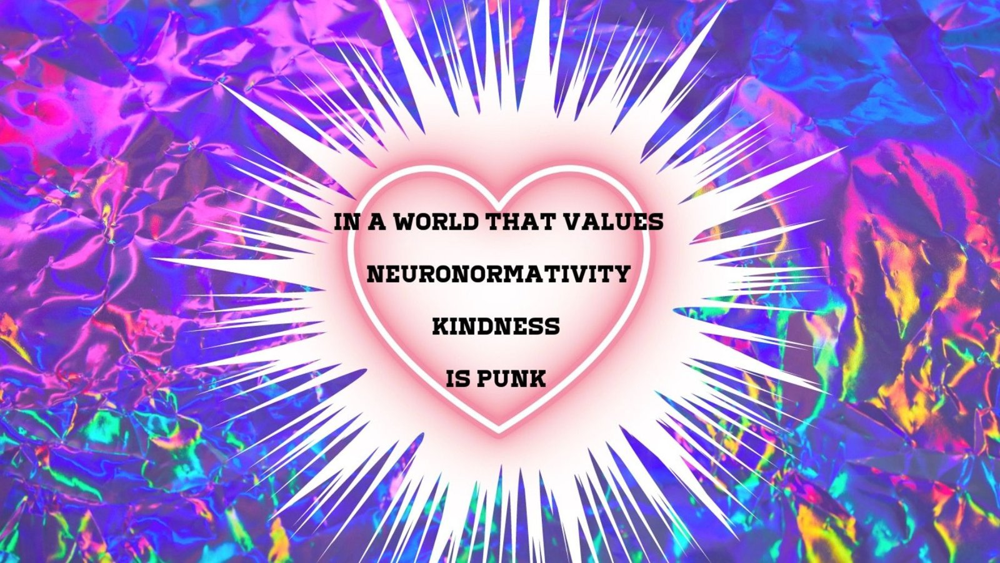
Alt text written when it was posted. -
Ocean Waves by Stimpunk Adriel Wool isn’t a recording of the ocean, it’s a fractal composition of the nature of the ocean using a palette of brownian noise. Modulated into swells, the rhythm evokes the massive release of great ocean waves.
-
Neurodivergent people are treated as noise to be filtered out in most studies supporting the “science of learning”. We are discounted as outliers. Our needs and ways of being are deemed too inconvenient to consider. So, the vast majority of studies just ignore us.
-
Our merch is printed by union labor in the United States from an ethical supply chain. We've got shirts, stickers, and posters. All profits go to our mission.
https://www.rayguncustom.com/collections/stimpunks-foundation
-
https://Stimpunks.org Changelog for May 2025
Our website is a living document that is always changing and growing.
Here are some changes we made to the website in May.
https://stimpunks.org/2025/05/30/stimpunks-org-changelog-for-may-2025/
-
In this talk, Guy Claxton warns against the scientism of “The Science of Learning” & proposes something aligned with our notions of niche construction, toolbelt theory, collaboration, & iteration. These contribute to what Claxton calls “epistemic apprenticeship”.
https://stimpunks.org/2025/05/23/professor-guy-claxton-on-the-science-of-learning/
-
New glossary page: “Empire of Normality”
-
Changelog: Updated “Extractive Abandonment” with selections from “Chapman, Robert. Empire of Normality: Neurodiversity and Capitalism (pp. 149-150).”
With an appearance by Bunsen and Beaker of the Muppets.
-
Niche Construction focuses on shaping the environment.
Toolbelt Theory emphasizes personal tool selection.
Together, they promote autonomy, adaptability, and personalized learning experiences.
-
Punk is very much alive in times that need it.
-
Neurodivergent and disabled people are under attack. The services we rely on to live are being defunded. Help Stimpunks fill the gaps in care.
Donate now.
Be a part of helping someone survive.
-
Seeds of Cope: A Mental Health Hootenanny
When: Saturday 05/17/2025 from 10AM – 2PM CST
Where: Zoom
Please register for this free, virtual event using the link below.
Registration Link: https://zoom.us/meeting/register/keEfqYd4RE65HeDig7lAuA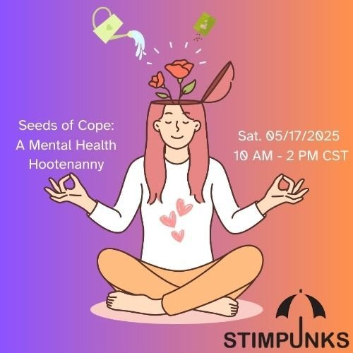
Alt text written by Claude when the post moved here. -
Thanks. Will investigate.
-
The “Triad of Distinction” from Autistimatic is a useful tool for understanding Autistic experience.
The Autistic Triad of Distinction:
- Emotional Processing
- Sensory Processing
- Veracity (sense of)This three part video series explains the triad in detail.
https://stimpunks.org/2025/05/04/how-i-made-autism-make-sense-the-autistic-triad-of-distinction/
-
I (Ryan) have never used it personally, but it seems philosophically aligned with us. We like anything that supports Toolbelt Theory. https://stimpunks.org/glossary/toolbelt-theory/
-
We like collaborative niche construction paired with self-direction as a means to address this.
https://stimpunks.org/glossary/niche-construction/
Niche construction is part of our conception of Cavendish Space.
-
More kids than ever are saying they don’t like school. Can’t blame them at all for disliking authoritarianism and behaviorism divorced from their needs and passions.
Instead, let’s offer passion-based, human-centered learning with purpose.
Here’s how we do it.
-
More kids than ever are saying they don’t like school. Can’t blame them for disliking authoritarianism and behaviorism divorced from their needs and passions.
Instead, let’s offer passion-based, human-centered learning with purpose.
Here’s how we do it.
-
Our website is a living document that is always changing and growing.
Here are some changes we made to the website in April.
https://stimpunks.org/2025/05/03/stimpunksorg-changelog-for-april-2025/
-
Changelog: Updated “The Cult of Compliance and the Policing of the Norm” with “Community Responder Programs: What They Are, How They Work, and Why They're Taking Off - YouTube”.
-
Changelog:
- Added “Autism and Neurodiversity Starter Pack” to “Autism Pathway”.
- Added a quote from ““I like being autistic”: Assessing the benefit of autistic-led psychoeducation for autistic children | medRxiv” to “Autism Pathway”. -
For too long, Autism has been explained from the outside.
It's time to tell our own stories.Explore our Map of Monotropic Experiences & discover a new, affirming way to understand your Autistic identity.
Free training now available from Autistic Realms & Stimpunks!
https://stimpunks.org/2025/05/01/map-of-monotropic-experiences-free-open-source-training-resources/
-
Grab a beverage. Sit back. Scroll our epic front page. Enjoy the 21 songs and 31 pieces of art featured on it.
-
The R-Word is rooted in eugenics.
The R-Word codified structural oppression.
The R-Word is a slur. Treat it that way.
On the history and harm of the R-word.
-
@thatqueerkiwi The R-Word is rooted in eugenics.
The R-Word codified structural oppression.
The R-Word is a slur. Treat it that way.
On the history and harm of the R-word.
-
Neurodiversity is one of the most powerful ideas of all time. It is a vital lens on humanity that is especially needed now.
Help us serve this powerful idea by serving those most impacted by neuronormative domination. Check out our pitch deck, and consider donating.
-
Neurodiversity is one of the most powerful ideas of all time. It is a vital lens on humanity that is especially needed now.
Help us serve this powerful idea by serving those most impacted by neuronormative domination. Visit our pitch deck, and donate.
-
Check out our starter pack we have just added @cripmadsymposium.bsky.social
-
“Authenticity is our purest freedom.”
—SITI Girl Miami -
We reject neuronormativity and demand the right to live and learn differently.
-
We reject neuronormativity and demand the right to live and learn differently.
-
Changelog: Updated “Facts, Fire, and Feels: Research-Storytelling from the Edges” with a quote from “Embracing Radical Research in Academia – Autistic and Living the Dream”.
-
“The Reframer’s Journey” is an 8 part scrollytelling (scrolling + storytelling) adventure through neurodiversity & disability science & culture. Anyone who completes the journey will have a solid grounding in neurodiversity & disability studies.
Start the journey on our front page.
-
“The Reframer’s Journey” is an 8 part scrollytelling adventure through neurodiversity & disability science & culture. Anyone who completes the journey will have a solid grounding in neurodiversity & disability studies.
Start on our front page.
-
“NeuroTribes: The Legacy of Autism and the Future of Neurodiversity“ describes what happened when the Nazis put neurodivergent and disabled people on a list, as proposed by RFK Jr. and the Trump Administration.
CW: ableism, torture, murder, genocide
Thread…
-
These reports were reviewed by a panel of three medical experts in Berlin, who ticked a box on each form: a plus sign if the child was to die, a minus sign if the child was to be allowed to live, and a question mark for the handful of cases that required further consideration.
NeuroTribes (p. 133)
-
Based solely on these forms—and without ever seeing the children—the committee made arrangements with local health officials for young patients marked with plus signs to be transferred to Kinderfachabteilungen.
NeuroTribes (p. 133)
-
Often what made the difference between a plus sign and a minus sign was nothing more than the score on an IQ test. Now the floodgates were open.
NeuroTribes (p. 133)
-
Over the next five years, Jekelius and his successors, Ernst Illing and Heinrich Gross, murdered 789 children at the facility, including 336 from the infants’ ward.
NeuroTribes (p. 133)
-
Most of these children had been diagnosed with feeblemindedness, epilepsy, or schizophrenia—the three diagnoses that autistic children were most likely to receive in the days before autism was an accepted diagnostic category.
NeuroTribes (p. 133)
-
Nonverbal patients were favored for extermination because they created extra work for the nurses; eventually children who were “simply annoying” were added to the list.
NeuroTribes (p. 133)
-
T-4 and the child euthanasia program became fertile ground for medical research that could not have been conducted in contexts where the patient was expected to live.
NeuroTribes (p. 134)
-
More than two hundred thousand disabled children and adults were murdered during the official phases of the child euthanasia and T-4 programs, and thousands more were killed in acts of “wild euthanasia” by doctors and nurses on their own initiative.
NeuroTribes (p. 135)
-
As clinics, hospitals, and schools throughout the Reich dedicated their resources to the programs, crematoria were built next to these institutions, with conveyor belts to transport the bodies from the Kinderfachabteilungen to the ovens.
NeuroTribes (p. 135)
-
“We are marginalized canaries in a social coalmine & Rawlsian barometers of society’s morality. It is deeply subversive to live proudly despite being living embodiments of our culture’s long standing ethical failings.”
—Maxfield Sparrowhttps://thinkingautismguide.com/2018/04/on-hans-asperger-nazis-and-autism.html
-
“When the movement is strong, the music is strong.”
—Harry Belafonte“Joy is an act of resistance.”
—Toi Derricotte -
That aligns with our notions of indie ed-tech:
https://stimpunks.org/space/online/
https://stimpunks.org/tech/You might find our multi-part series on how we do progressive education helpful.
-
Further thoughts on time and developmental differences.
https://bsky.app/profile/autisticrealms.bsky.social/post/3lnftldpxjc25
-
https://stimpunks.org/glossary/slow-pedagogy/
https://stimpunks.org/glossary/design-questioning/
https://stimpunks.org/glossary/design-justice/
https://stimpunks.org/glossary/liberatory-design/As for "slow learner" framing, we like to think in terms of spiky profiles to reframe developmental differences.
-
Ready, punk?
Rock ’n’ scroll.
Dope art and dope music from our community and our allies.
Challenge the norm, and change the narrative.
-
Police violence against neurodivergent and disabled people is a pervasive and systemic problem. We collect resources on our page “The Cult of Compliance and the Policing of the Norm”.
-
Changelog: Integrated “Ranking the Myths of the System - Andrewism - YouTube” into “Stories and Myth: Countering Structural Myths with a Progressive Storytelling Ecosystem”.
https://stimpunks.org/2024/11/10/stories-and-myth-building-a-progressive-storytelling-ecosystem/
-
Changelog: Updated “Nonspeaking” with selections from “Conceptualizing and describing autistic language: Moving on from ‘verbal’, ‘minimally verbal’ and ‘nonverbal’ - Kristen Bottema-Beutel, Alyssa Hillary Zisk, Jordyn Zimmerman, Betty Yu, 2025”.
-
When you or your kid is diagnosed as autistic, almost all of the professional advice you get from education and healthcare is steeped in deficit ideology and the pathology paradigm.
There is a better way.
-
The norm is not normal: it's a construction
Designed to stifle the inner life and increase production
…
They can shake their heads in despair
But we been here from the start and we ain't going nowhere -
Thank you.
We integrated your video into this piece:
https://stimpunks.org/2024/11/10/stories-and-myth-building-a-progressive-storytelling-ecosystem/
-
With the R-word slur making an unfortunate and appalling comeback, we created a glossary page outlining the history and impact of the word.
-
Our Mascot: Esmx the Porkypine
By: @kayas-kosmos.bsky.social
This adorable bundle of spikes is our official mascot.
Esmx evokes the spiky profiles of neurodivergent people.
https://stimpunks.org/2025/04/12/our-mascot-esmx-the-porkypine/
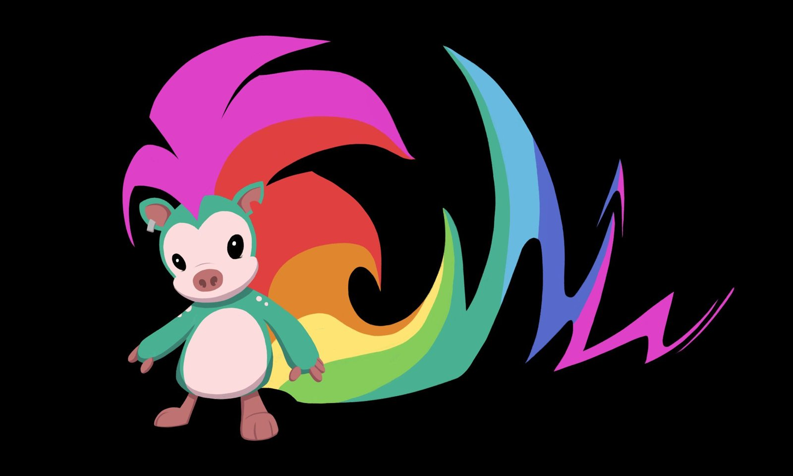
Alt text written when it was posted. -
Very much agreed. It’s almost always used in strawman form, though there are some proponents of learning styles who practice a form too reductionist for me, akin to personality tests.
-
We Autistic people are stable parts of the human genome. We’ve been here the whole time & are explained by the multi-level group selection theory of evolution. Our differences are the genius – & the conscience – of our species.
RFK Jr. is an ableist and eugenicist bigot spouting debunked nonsense.
-
We Autistic people are stable parts of the human genome. We’ve been here the whole time & are explained by the multi-level group selection theory of evolution. Our differences are the genius – & the conscience – of our species.
RFK Jr. is an ableist and eugenicist bigot spouting debunked nonsense.
-
I (Ryan) don't like either pole, but I think the mythologizing is less harmful than the reductionist, behaviorist ResearchEd stuff. It pains me when ResearchEd folks diss learning styles in ways that discard the experiences of neurodivergent and disabled people.
-
Learning styles are definitely misunderstand & mythologized in the style of astrology and used to justify simple interventions that can also be incompatible with neurodiversity & disability. Instead, we advocate for comprehensive multimodality, differentiated instruction, and toolbelt theory.
-
Related: https://stimpunks.org/2023/11/22/on-the-problems-with-science-of-reading/
-
Mood: Those who dunk on learning styles as if it is the worst thing in education tend to have regressive, reductionist, behaviorist, prescriptive, bro rationalist, & neoliberal notions of learning that are incompatible with neurodiversity & disability & steeped in scientism & epistemic injustice.
-
Those who dunk on learning styles as if it is the worst thing in ed. tend to have regressive, reductionist, behaviorist, prescriptive, bro rationalist, neoliberal notions of learning that are incompat. with neurodiversity & disability & steeped in scientism & epistemic injustice.
-
Join us on our healthcare learning pathway. Learn how to adopt neurodiversity affirming practice that meets the needs of neurodivergent and disabled people into care settings.
-
Join us on our healthcare learning pathway. Learn how to adopt neurodiversity affirming practice that meets the needs of neurodivergent and disabled people into care settings.
-
Look for the helpers, and help them.
Our organization and the people we serve survive on your donations.
Help us build a counterculture of care oriented around our interdependence. Donate what you can today.
-
Look for the helpers, and help them.
Our organization and the people we serve survive on your donations.
Help us build a counterculture of care oriented around our interdependence. Donate what you can today.
-
"Monotropism Reflected in the Communication Style of Artistic Expression" by Becca Cook
-
Added.
-
Healthcare Access: They don’t take Disability Studies classes. They don’t socialize with us. They don’t listen to us.
-
Healthcare Access: They don’t take Disability Studies classes. They don’t socialize with us. They don’t listen to us.
-
Just added @yasmeenmultani.bsky.social :)
-
Just added @autismadvocate.co.uk :)
-
Updated starter pack - thank you to @ombretarragnat.bsky.social
Anyone else you'd recommend? It is exciting to see more people here discussing neuroqueer theory and practice!
https://go.bsky.app/P7MCF8i -
Thank you!
-
Scrollytelling is the fusion of scrolling and storytelling: a way to dynamically tell long-form stories as the user scrolls.
The first 8 pages of our website are a multimedia scrollytelling adventure that we call “The Reframer’s Journey”.
Reframe with us.
-
Scrollytelling is the fusion of scrolling & storytelling: a way to dynamically tell long-form stories as the user scrolls.
The first 8 pages of our website are a multimedia scrollytelling adventure that we call “The Reframer’s Journey”.
Reframe with us.
-
For Autism Acceptance Month, learn about autism from Autistic people. Take a walk in our shoes with this vertical storytelling piece from our community.
-
For Autism Acceptance Month, learn about autism from Autistic people. Take a walk in our shoes with this vertical storytelling piece from our community.
-
Thanks @cliffcashcomedy.bsky.social.
"No one is coming to save us. We have to save ourselves."
--Rebuilding The Village -
“Build a tribe, and get it real tough. Link it with other tribes, and keep linking.”
--Cliff Cash, @cliffcashcomedy.bsky.socialWe’re helping build rhizomatically linked ecologies of care to survive the times.
-
“Build a tribe, and get it real tough. Link it with other tribes, and keep linking.”
--Cliff Cash, @cliffcashcomedyWe’re helping build rhizomatically linked ecologies of care to survive the times.
-
Our website is a living document that is always growing and changing.
Here are some changes we made to the website in March.
https://stimpunks.org/2025/03/31/stimpunksorg-changelog-for-march-2025/
-
As we go about our work, we expand our glossary, which is currently at 400 terms in English and 449 terms across all languages. We added 4 new terms in the past month.
https://stimpunks.org/2025/03/31/latest-terms-in-the-stimpunks-glossary-for-march-2025/
-
“We need a counterculture of care. Because the dominant culture just keeps getting colder and deadlier.”
—@MsKellyMHayesHelp us build a counterculture of care that supports some of the most marginalized people in society. Donate today.
-
“We need a counterculture of care. Because the dominant culture just keeps getting colder and deadlier.”
—@MsKellyMHayesHelp us build a counterculture of care that supports some of the most marginalized people in society. Donate today.
-
Enable dignity.
Everywhere should be accessible.
The accommodations for natural human variation should be mutual.
Accessibility is a collective process.
Here’s how.
-
Enable dignity.
Everywhere should be accessible.
The accommodations for natural human variation should be mutual.
Accessibility is a collective process.
Here’s how.
-
Our learning pathways take you on a walk in our shoes. Learn about school-induced anxiety, neuronormative domination, behaviorism, the double empathy problem, monotropism, the neurodivergent umbrella, the neurodiversity Smorgasbord, & more in this scrollytelling adventure.
-
Our learning pathways take you on a walk in our shoes. Learn about school-induced anxiety, neuronormative domination, behaviorism, the double empathy problem, monotropism, the neurodivergent umbrella, the neurodiversity Smorgasbord.
-
Here’s our recipe for human-centered education compatible with neurodiversity and disability.
-
Here’s our recipe for human-centered education compatible with neurodiversity and disability.
-
The fundraising climate is difficult right now. We need recurring donations to sustain our work. Become a sponsor, and get a t-shirt, a sticker, and shout outs on our website and socials.
https://stimpunks.org/community/support/
![A purple, orange, green and red poster headed "JOIN STIMPUNKS BECOME A SPONSOR". Beside a drawing of a small green and pink cartoon animal with a huge pink, red, orange, yellow, green and blue swirling mane, it reads: "We invite you to be a part of our team. By becoming a sponsor of Stimpunks Foundation, you help us: catalyse Stimpunks projects, coordinate neurodivergent and disabled peer support, document neurodivergent and disabled culture, conduct neurodivergent and disabled research, develop and deliver education based on lived experiences, host events that celebrate neurodivergent and disabled culture." Then "How you can support: Stimpunks Members $10, Intersectional Solidarity Sponsors $30, Research Sponsors $45, Education Sponsors $90, Livelihood Sponsors $140, Endurance Sponsors $200." Along the foot: the Stimpunks umbrella logo with "STIMPUNKS", "www.stimpunks.org" and a button reading "JOIN NOW".](social/img/1902851398431039925-gmhjqqgaeaat0i0.jpg)
Alt text written by Claude when the post moved here. -
The fundraising climate is difficult right now. We need recurring donations to sustain our work. Become a sponsor, and get a t-shirt, a sticker, and shout outs on our website and socials.
https://stimpunks.org/community/support/
![JOIN STIMPUNKS BECOME A SPONSOR We invite you to be a part of our team. By becoming a sponsor of Stimpunks Foundation, you help us: • catalyse Stimpunks projects, • coordinate neurodivergent and disabled peer support, • document neurodivergent and disabled culture, • conduct neurodivergent and disabled research, • develop and deliver education based on lived experiences, • host events that celebrate neurodivergent and disabled culture. How you can support: Stimpunks Members $10 Intersectional Solidarity Sponsors $30 Research Sponsors $45 Education Sponsors $90 Livelihood Sponsors $140 Endurance Sponsors $200 JOIN NOW](social/img/bsky-01711220-0-10.jpg)
Alt text written when it was posted. -
Questions for an Industry: Are You Disregarding Harm and Profiting From Our Misery?
-
Frankly: The evidence base for behaviorist therapies such as ABA and PBS is a pile of trash that reeks of conflicts of interest, private equity, and ableist bigotry.
Behaviorists are profiting from our misery.
-
Frankly: The evidence base for behaviorist therapies such as ABA and PBS is a pile of trash that reeks of conflicts of interest, private equity, and ableist bigotry.
Behaviorists are profiting from our misery.
-
Congrats to our Co-Creative Director for the nomination.
-
Our website has thousands of pages, all of which are licensed with Creative Commons CC-BY-SA or CC0, qualifying them as free cultural works.
Help us grow and maintain this rich community resource with a donation of whatever you can spare.
-
Our website has thousands of pages, all of which are licensed with Creative Commons CC-BY-SA or CC0, qualifying them as free cultural works.
Help us grow and maintain this rich community resource with a donation of whatever you can spare.
-
One in four U.S. adults have a disability. However, our community receives only 2% of US grant funding, and only 19% of us are employed. We can’t just let that be the truth. We have to challenge the norm and change the narrative around people who are neurodivergent or disabled.
-
One in four U.S. adults have a disability. However, our community receives only 2% of US grant funding, and only 19% of us are employed. We can’t just let that be the truth.
-
Queer and neurodivergent people are biological facts.
Queer and neurodivergent liberation are entwined.
Enjoy this digital composition filled with music and art celebrating our entwined natures and our entwined liberation.
-
Queer and neurodivergent people are biological facts.
Queer and neurodivergent liberation are entwined.
Enjoy this digital composition filled with music and art celebrating our entwined natures and our entwined liberation.
https://stimpunks.org/philosophy/were-a-double-rainbow-all-the-way/
-
Weird Pride Day is tomorrow.
Our Weird Pride Day celebration is tomorrow in our community Discord. Bring your stories, interests, stims, fashion, mobility devices, & sparklies. Let’s march forth on March Fourth and be proudly weird despite neuronormative domination.
-
Our Weird Pride Day celebration is tomorrow in our community Discord. Bring your stories, interests, stims, fashion, mobility devices, & sparklies. Let’s march forth on March Fourth and be proudly weird despite neuronormative domination.
https://stimpunks.org/2025/02/13/celebrate-weird-pride-day-2025-with-stimpunks/
-
Stimpunks is a DIY humanizing rebellion.
Stimpunks’ work is expansive, beautiful, liberating.
Stimpunks is a treasure trove of everything important to the neurodivergent and disabled community.
Stimpunks is the best autism resource on the planet. -
Stimpunks is a DIY humanizing rebellion.
Stimpunks’ work is expansive, beautiful, liberating.
Stimpunks is a treasure trove of everything important to the neurodivergent and disabled community.
Stimpunks is the best autism resource on the planet. -
The Comprehensive Autistic Trait Inventory (CATI) is a self-report inventory of autistic traits developed in collaboration with autistic people.
https://stimpunks.org/2025/03/01/comprehensive-autistic-trait-inventory/
-
Changelog: Updated “Chronic Constellation” with selections from “Central Sensitivity Symptoms and Autistic Traits in Autistic and Non‐Autistic Adults”.
-
Changelog: Updated “Chronic Constellation” with selections from “Central Sensitivity Symptoms and Autistic Traits in Autistic and Non‐Autistic Adults”.
-
Here are some changes we made to our website in February.
https://stimpunks.org/2025/02/28/stimpunksorg-changelog-for-february-2025/
-
As we go about our work, we expand our glossary, which is at 396 terms in English and 431 terms across all languages. We added 8 new terms in the past month.
AuDHD
Accessibility
Feedback Loop
Neurome
Digital Gardening
Learning Exhaust
Affinity Group
Affinity Spacehttps://stimpunks.org/2025/02/28/latest-terms-in-the-stimpunks-glossary-for-february-2025/
-
Changelog: Updated “Autistic Rapport” with selections from “Rapport in same and mixed neurotype groups of autistic and non-autistic adults - 2025”.
-
Changelog: Updated “Autistic Rapport” with selections from “Rapport in same and mixed neurotype groups of autistic and non-autistic adults - 2025”.
-
Some stats, so far:
Number of mutual aid grants: 106
Amount of mutual aid grants: $65,850
Number of creator grants: 12
Amount of creator grants: $36,000
Amount of all grants: $101,850
Number of web pages published: 1,305Visit our Impact page for more stats.
-
Some stats, so far:
Number of mutual aid grants: 106
Amount of mutual aid grants: $65,850
Number of creator grants: 12
Amount of creator grants: $36,000
Amount of all grants: $101,850
Number of web pages published: 1,305Our Impact page has more stats.
-
Changelog: Added “Digital Gardening” and “Default to Open, Created Serendipity, and Learning Exhaust” sections to our digital composition explainer page.
-
Changelog: Added “Digital Gardening” and “Default to Open, Created Serendipity, and Learning Exhaust” sections to our digital composition explainer page.
-
Public services supporting disabled people are being dismantled.
Meanwhile, fundraising is brutal. The uncertainty & precarity of our times has stifled giving.
Help us help some of the most marginalized people in society with a donation. We must fill the services void.
-
Public services supporting disabled people are being dismantled.
Meanwhile, fundraising is brutal. The uncertainty of our times has stifled giving.
Help some of the most marginalized people in society with a donation. We must fill the services void.
-
New glossary page: Neurome
-
New glossary page: Neurome
-
New glossary page: Digital Gardening
-
New glossary page: Digital Gardening
-
New glossary page: Learning Exhaust
-
New glossary page: Learning Exhaust
-
New glossary page: Affinity Group
-
New glossary page: Affinity Group
-
New glossary page: Affinity Space
-
New glossary page: Affinity Space
-
New glossary page: Feedback Loop
-
New glossary page: Feedback Loop
-
New glossary page: AuDHD
-
New glossary page: AuDHD
-
New glossary page: Accessibility
-
New glossary page: Accessibility
-
Updated glossary page: Autistic Joy
-
Updated glossary page: Autistic Joy
-
Sign the petition "Assess For ADHD As Standard When Assessing For Autism".
Learn more on our AuDHD glossary page.
https://stimpunks.org/glossary/audhd/
#AlsoADHD
-
Call for Submissions: Share your experiences of being monotropic.
Share poems, art, blogs, essays, videos, podcasts, music, etc. that reflect your experience of being monotropic. We will publish across Stimpunks & Autistic Realms as part of our community project.
https://stimpunks.org/2025/02/23/call-for-submissions-share-your-experiences-of-being-monotropic/
-
We will be there. The folks at Human Restoration Project are allies in the fight for the right to learn differently. Join us in building community with them.
-
“It is deeply subversive to live proudly despite being living embodiments of our culture’s long standing ethical failings.”
—Maxfield SparrowWe reject neuronormativity and demand the right to learn differently.
-
“It is deeply subversive to live proudly despite being living embodiments of our culture’s long standing ethical failings.”
—Maxfield SparrowWe reject neuronormativity and demand the right to learn differently.
-
A group of neurodivergent and disabled adults we did a fundraiser with has released a music video for their song “Love Is Everything”.
https://www.youtube.com/watch?v=WVUscHGXumE
We helped them put out their recent album, “Get Out Front!”.
-
We updated our progress on our Objectives and Key Results for Q1 2025.
-
We updated our progress on our Objectives and Key Results for Q1 2025.
-
“Scrollytelling is the fusion of scrolling and storytelling: a way to dynamically tell long-form stories as the user scrolls.”
Our vertical storytelling style is inspired by webtoons. Read the bolded text as you scroll for a scrolling pace similar to webtoons.
-
Scrollytelling is the fusion of scrolling & storytelling: a way to dynamically tell long-form stories as the user scrolls.
Our vertical storytelling style is inspired by webtoons. Read the bolded text as you scroll for a scroll pace similar to webtoons.
-
New glossary page about neuromes inspired by @katefoxwriter75.bsky.social
"What is a neurome? It’s the mind equivalent of a biome. It’s a space where quirky minds can thrive and flourish. Where they accepted in their diversity and their associated sensory needs."
-
Changelog: Added “Toxic Positivity” to “13 Obstacles to DEIB and Neurodiversity Affirming Practice”.
-
Changelog: Added “Toxic Positivity” to “13 Obstacles to DEIB and Neurodiversity Affirming Practice”.
https://stimpunks.org/2024/07/29/10-obstacles-to-neurodiversity-affirming-practice/
-
Changelog: Updated “Double Empathy Problem” with a quote on “interpersonal flow” from “Towards autistic flow theory: A non‐pathologising conceptual approach - Heasman - 2024 - Journal for the Theory of Social Behaviour”.
-
Changelog: Updated “Double Empathy Problem” with a quote on “interpersonal flow” from “Towards autistic flow theory: A non‐pathologising conceptual approach - Heasman - 2024 - Journal for the Theory of Social Behaviour”.
-
We join ASAN in condemning this hateful, eugenicist nonsense.
-
Changelog: Added “Digital Gardening” and “Default to Open, Created Serendipity, and Learning Exhaust” sections to “📚🌈♿️ An Encyclopedia of Disability and Difference”.
-
Changelog: Added “Digital Gardening” and “Default to Open, Created Serendipity, and Learning Exhaust” sections to “📚🌈♿️ An Encyclopedia of Disability and Difference”.
-
The 4th of March is Weird Pride Day. This is a day for people to embrace their weirdness, and reject the stigma associated with being weird. To publicly express pride in the things that make us weird, and to celebrate the diversity of humankind.
Join our celebration.
https://stimpunks.org/2025/02/13/celebrate-weird-pride-day-2025-with-stimpunks/
-
Well-produced, engaging, and relatable.
-
We like the phrase “Opportunity but not pressure”.
‘“Opportunity but not pressure” is a core principle for all Autreat activities.’
-
We made some progress on this with our latest round of additions.
-
Added.
-
Resharing some of our BlueSky Starter Packs - anyone you'd add?
-
Resharing some of our BlueSky Starter Packs - anyone you'd add?
https://go.bsky.app/TKGEgZf -
We added these sections to the “Map of Monotropic Experiences” along with infographics from the presentation we’re working on.
- Difficulties of Neuronormative Domination
- Flow States
- Stuck States
- Socializing and the Importance of Environment
- Using the Map -
We added these sections to the “Map of Monotropic Experiences” along with infographics.
- Difficulties of Neuronormative Domination
- Flow States
- Stuck States
- Socializing and the Importance of Environment
- Using the Maphttps://stimpunks.org/2024/10/21/map-of-monotropic-experiences/
-
Here's a form to request joining our Discord community.
-
Weird Pride Day is March 4th.
We’re hosting a celebration in our community Discord server.
Activities:
Fashion, coping, and mobility device show
Art gallery and show
Open mic storytelling
Flash talk infodumps
Vendor/org booths and talksGet your free ticket:
-
Weird Pride Day is March 4th.
We’re hosting a celebration in our community Discord.
Activities:
Fashion, coping, & mobility device show
Art gallery & show
Open mic storytelling
Flash talk infodumps
Vendor/org booths & talksGet your free ticket:
-
We’re developing open and free presentations and training for the “Map of Monotropic Experiences” and “Neuroqueer Learning Spaces”. These have resonated with many, and we’re excited to develop them further.
Help support our projects with a donation today.
-
We’re developing open & free presentations & training for the “Map of Monotropic Experiences” and “Neuroqueer Learning Spaces”. These have resonated with many, and we’re excited to develop them further.
Help support our projects with a donation today.
-
Take a journey in our shoes via our front page. Featuring long-form scrollytelling inspired by webtoons, our front page is loaded with art and music and videos. This is our story coping, surviving, celebrating, and finding like-minded misfits.
-
Take a journey in our shoes via our front page. Featuring long-form scrollytelling inspired by webtoons, our front page is loaded with art and music and videos. This is our story coping, surviving, celebrating, and finding like-minded misfits.
-
Here’s our monthly newsletter for January 2025:
-
Here’s our monthly newsletter for January 2025:
-
Our website is a living document. Here are some changes we made to the site in January.
https://stimpunks.org/2025/01/31/stimpunksorg-changelog-for-january-2025/
-
As we go about our work, we expand our glossary, which is currently at 388 terms in English and 423 terms across all languages. We added 7 new terms in the past month.
https://stimpunks.org/2025/01/31/latest-terms-in-the-stimpunks-glossary-for-january-2025/
-
“This is punk rock time, this is what Joe Strummer trained you for.
“It is now time to go. You're a good person. That means more now than ever.”
—Henry Rollins -
“This is punk rock time, this is what Joe Strummer trained you for.
“It is now time to go. You're a good person. That means more now than ever.”
—Henry Rollinshttps://stimpunks.org/2024/07/05/this-is-punk-rock-time-this-is-what-joe-strummer-trained-you-for/
-
What are diversity, equity, inclusion, and belonging? What are their narrative adversaries? We provide a glossary of terms below. Follow the links for deeply sourced reference materials.
https://stimpunks.org/2025/01/30/deib-and-their-adversaries/
-
Here’s some long-form scrollytelling about how we’re challenging the norm and changing the narrative.
-
Here’s some long-form scrollytelling about how we’re challenging the norm and changing the narrative.
-
Getting human-centered, neurodiversity affirming, progressive practices into education, healthcare, and other systems is a battle, a grueling and grinding battle through bad narratives and bad framing.
Here are 10 common obstacles to our work.
-
Getting human-centered, neurodiversity affirming, progressive practices into education, healthcare, and other systems is a battle, a grueling and grinding battle through bad narratives and bad framing.
Here are 10 common obstacles to our work.
https://stimpunks.org/2024/07/29/10-obstacles-to-neurodiversity-affirming-practice/
-
So much of mainstream education is just neuronormative bigotry inherited over decades. Our systems are rooted in ableism and eugenics.
Receipts:
-
So much of mainstream education is just neuronormative bigotry inherited over decades. Our systems are rooted in ableism and eugenics.
Receipts:
-
The need is great. Help us keep neurodivergent and disabled people housed, fed, connected, and alive with a donation.
-
The need is great. Help us keep neurodivergent and disabled people housed, fed, connected, and alive with a donation.
-
Neuronormative domination is a public health crisis.
-
Neuronormative domination is a public health crisis.
-
Done and done. Thanks!
-
By becoming a donor to Stimpunks, you help us:
- catalyze Stimpunks projects,
- coordinate neurodivergent & disabled peer support,
- document ND and disabled culture,
- conduct ND & disabled research,
- develop & deliver education based on lived experiences. -
By becoming a donor to Stimpunks, you help us:
- catalyze projects,
- coordinate neurodivergent & disabled peer support,
- document ND & disabled culture,
- conduct ND & disabled research,
- develop & deliver education based on lived experiences. -
Our Resilience glossary page covers the problems with individualized resilience and the power of group resilience.
-
Our Resilience glossary page covers the problems with individualized resilience and the power of group resilience.
-
We hire from neurodiversity & disability communities & offer living wages. Help us pay our people with a donation to our general fund. Our team:
- holds space for those who contact us.
- helps people with paperwork and logistics of care.
- runs all this. -
We hire from neurodiversity & disability communities & offer living wages. Help us pay our people with a donation to our general fund. Our team:
- holds space for those who contact us.
- helps people with paperwork & logistics of care.
- runs all this. -
We’re about to reach 100k in grants issued.
Currently,
Number of mutual aid grants: 102
Amount of mutual aid grants: $63,850
Number of creator grants: 12
Amount of creator grants: $36,000
Amount of all grants: $99,850Help us continue this work with a donation.
-
We’re about to hit 100k in grants.
Currently,
Number of mutual aid grants: 102
Amount of mutual aid grants: $63,850
Number of creator grants: 12
Amount of creator grants: $36,000
Amount of all grants: $99,850Help us continue this work with a donation.
-
We have shirts, stickers, posters, infographics, and templates in our shop.
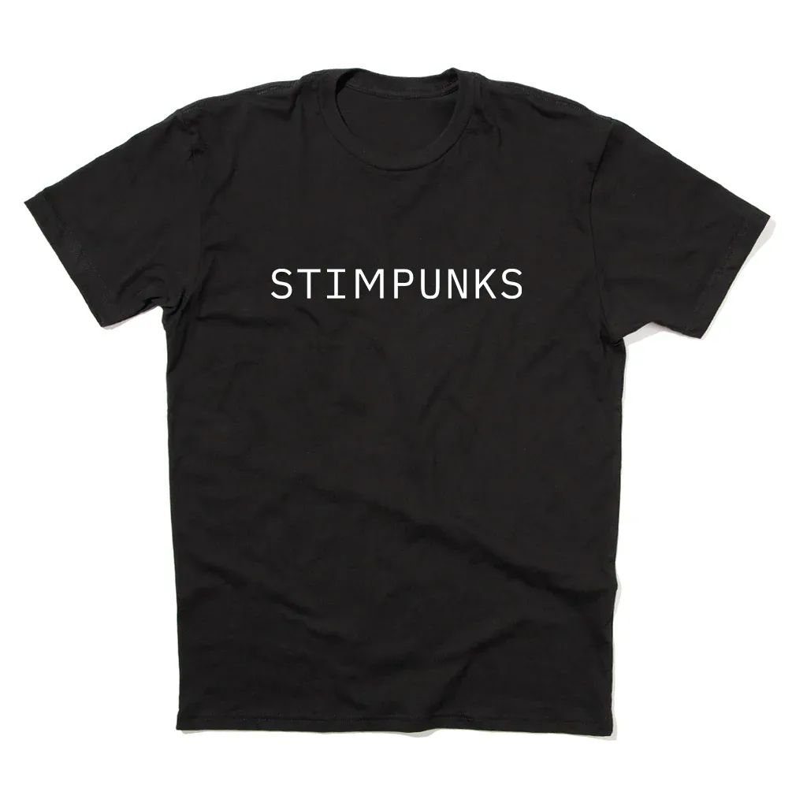
Alt text written by Claude when the post moved here. -
We have shirts, stickers, posters, infographics, and templates in our shop.
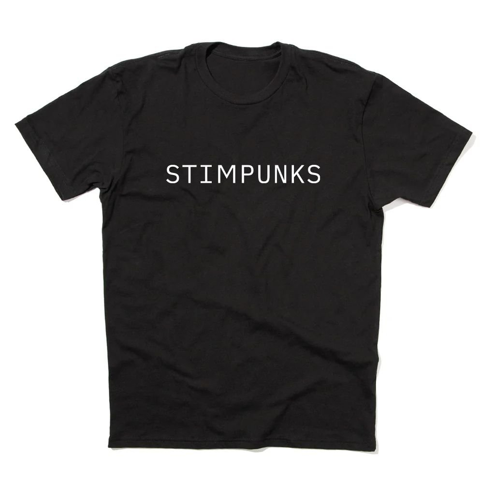
Alt text written by Claude when the post moved here. -
It is time to celebrate our interdependence!
—Jorn BettinInterdependence is the only way out of most of the most pressing issues we face today.
—Mia Mingus -
It is time to celebrate our interdependence!
—Jorn BettinInterdependence is the only way out of most of the most pressing issues we face today.
—Mia Mingushttps://stimpunks.org/philosophy/it-is-time-to-celebrate-our-interdependence/
-
Our “Now” page lists what we’re doing right now, including current projects, upcoming events, and our Objectives and Key Results for the first quarter of 2025.
-
Our “Now” page lists what we’re doing right now, including current projects, upcoming events, and our Objectives and Key Results for the first quarter of 2025.
-
We are a small but impactful team serving some of the most marginalized people in our society.
We:
- give directly to those in need.
- support creatives.
- maintain a vast website of information.
- provide learning space.Help the work with a small donation.
-
We are a small but impactful team serving some of the most marginalized people in our society.
We:
- give directly to those in need.
- maintain a vast website of information.
- provide learning space.Help the work with a small donation.
-
Our “Map of Monotropic Experiences” is now available as a sticker and a poster that anyone can buy from our Raygun Custom shop. Printed by union labor in the United States from an ethical supply chain.
https://www.rayguncustom.com/collections/stimpunks-foundation
![An illustrated island map titled "Map of Monotropic Experiences", with a smiling red octopus in the sea. Labelled places: "Sudden Storms of Unexpected Events", "Mountains of Ruminating Thoughts", "Attention Tunnels", "Penguin Pebbling Cove of Friendship", "Tendril Theory", "Cyclones of Unmet Needs", "Rabbit Holes of Research", "Infodump Canyon", "Rhizomatic Communities", "River Banks of Monotropic Time", "River of Monotropic Flow States", "Campsite of Cavendish Spaces", "Meerkat Mounds", "Burnout Whirlpools", "Panic Hills of Low Object Permanence", "Shark Infested Waters of Neuronormativity and Behaviourism & Double Empathy Problems", "Beach of Body Doubling", "Forest of Joy, Awe & Wonder", "Lake of Limerence" and "Tides of the Sensory Sea". Small cartoon figures swim, surf and sunbathe. Logos read "AUTISTIC REALMS Neurodiversity Affirming" and "STIMPUNKS".](social/img/bsky-01711220-0-7.jpg)
Alt text written by Claude when the post moved here. -
Our “Map of Monotropic Experiences” is now available as a sticker and a poster that anyone can buy from our Raygun Custom shop. Printed by union labor in the United States from an ethical supply chain.
https://www.rayguncustom.com/collections/stimpunks-foundation
![Illustrated map of an island in a pale blue sea titled "Map of Monotropic Experiences", with clip-art pictures beside each label: "Sudden Storms of Unexpected Events", "Mountains of Ruminating Thoughts", "Attention Tunnels", "Penguin Pebbling Cove of Friendship", "Tendril Theory", "Cyclones of Unmet Needs", "Rabbit Holes of Research", "Rhizomatic Communities", "Infodump Canyon", "River Banks of Monotropic Time", "River of Monotropic Flow States", "Campsite of Cavendish Spaces", "Meerkat Mounds", "Burnout Whirlpools", "Panic Hills of Low Object Permanence", "Tides of the Sensory Sea", "Beach of Body Doubling", "Forest of Joy, Awe & Wonder", "Lake of Limerence" and "Shark Infested Waters of Neuronormativity and Behaviourism & Double Empathy Problems". A red octopus, sharks, waves, penguins, rabbits and drawn swimmers and a surfer fill the scene. Logos read "Autistic Realms Neurodiversity Affirming" and "Stimpunks".](social/img/1879184012993806545-ghqz5oxx0aabxut.jpg)
Alt text written by Claude when the post moved here. -
We’re partnering with a queer, Autistic race car driver, Michael Klein (@MichaelKleinVA), to advocate for neurodiversity and inclusion in motorsports. Our logo will be on his NASCAR ARCA cars.
-
We’re partnering with a queer, Autistic race car driver, Michael Klein (@michaelkleinva.bsky.social), to advocate for neurodiversity and inclusion in motorsports. Our logo will be on his NASCAR ARCA cars.
-
@FunFactsLulu We attribute with a link that uses the page title markup verbatim. This citation style is as old as the web. That said, we'll add an author call out even though it's not included in the page title.
2024
-
Nothing about this article and podcast requires anyone to like punk. They do not assume that Autistic people like punk.
-
“The culture of punk is, at its core, authenticity without apology—and that’s exactly what autistic people desire: spaces and cultures where they can be their true selves without the need to mask or conform.”
—The Autistic Culture Podcast -
Learn why behaviorism, particularly ABA, is considered ableist. Explore this concise yet extensively sourced behaviorism "Why Sheet" to understand its impact.
No one should be funding ABA.
-
Learn why behaviorism, particularly ABA, is considered ableist. Explore this concise yet extensively sourced behaviorism "Why Sheet" to understand its impact.
No one should be funding ABA.
-
4 autistic students, whose sensory sensitivities, communication styles, & learning requirements differ from those of their neurotypical peers, the mainstream classroom can be an overwhelming environment.
-
For autistic students, whose sensory sensitivities, communication styles, and learning requirements differ from those of their neurotypical peers, the mainstream classroom can be an overwhelming environment.
https://stimpunks.org/2024/12/10/classroom-conflicts-an-autistic-students-classroom-challenges/
-
Here’s our monthly newsletter for November 2024.
-
Disabled people are going to die as our care systems are further dismantled. This #GivingTuesday, help us keep people alive. Help us create ecologies of care. Donate now.
We must build a counterculture of care. Care work makes all other work possible.
-
Here are some changes we made to the website in November.
https://stimpunks.org/2024/12/02/stimpunksorg-changelog-for-november-2024/
-
As we go about our work, we expand our glossary, which is currently at 378 terms in English and 413 terms across all languages. We added 8 new terms in the past month.
https://stimpunks.org/2024/12/02/latest-terms-in-the-stimpunks-glossary-for-november-2024/
-
Send unarmed responders instead of police.
Cops are not effective treatment.
There have been no known major injuries of any community responder on the job so far.
We collect alternate response resources in this piece:
-
Send unarmed responders instead of police.
Cops are not effective treatment.
There have been no known major injuries of any community responder on the job so far.
We collect alternate response resources in this piece:
-
Have you had “the talk” with your neurodivergent & disabled kids? The talk about how to stay alive when encountering police?
Learn about having the “Just take it” talk.
With music from: Meshell Ndegeocello, Swamburger & Scarlet Monk, Mr. Lif & Stu Bangas, Ezra Furman, RATM
-
Here are some questions posed to us for inclusion in an allied organization’s newsletter. We cover community art, direct giving, research, ableism, and more.
https://stimpunks.org/2024/11/27/in-which-we-answer-some-questions/
-
This story is very familiar to mothers in our community, in the UK and the US.
-
We acknowledge that it's very wonkish. We're working on a simpler plain language version styled after this piece: https://autisticgirlsnetwork.org/reasonable-adjustments-possible-at-school/
-
Sameness-based “equity” is a major obstacle to DEIB work.
Instead, we advocate for needs-based equity and collaborative niche construction.
-
Sameness-based “equity” is a major obstacle to DEIB work.
It’s one of our “10 Obstacles to Neurodiversity Affirming Practice”.
Instead, we advocate for needs-based equity and collaborative niche construction.
-
Some stats, so far:
- Number of mutual aid grants: 102
- Amount of mutual aid grants: $63,850
- Number of creator grants: 11
- Amount of creator grants: $33,000
- Amount of all grants: $96,850
- Number of web pages published: 1,266 -
Some stats, so far:
- Number of mutual aid grants: 102
- Amount of mutual aid grants: $63,850
- Number of creator grants: 11
- Amount of creator grants: $33,000
- Amount of all grants: $96,850
- Number of web pages published: 1,266 -
Don’t forget to take a bodymind break.
-
Don’t forget to take a bodymind break.
-
Stimpunks was forged in the quest for educational inclusion and survival.
We serve our loved people so we can keep on living through the onslaught.
Take a walk in our shoes on our revised front page.
-
Stimpunks was forged in the quest for educational inclusion and survival.
We serve our loved people so we can keep on living through the onslaught.
Take a walk in our shoes on our revised front page.
-
We have checklists and recommendations on these pages:
https://stimpunks.org/access/
https://stimpunks.org/access/sensory-experience/
https://stimpunks.org/space/offline/
https://stimpunks.org/space/cavendish/ -
Accommodations are individualized responses to structural design problems. Instead, the accommodations for natural human variation should be mutual and universal.
-
Accommodations are individualized responses to structural design problems. Instead, the accommodations for natural human variation should be mutual and universal.
-
We agree:
Schools should do this instead:
https://stimpunks.org/philosophy/create-a-neurodiversity-inclusive-environment/
-
Here’s how we do contemporary progressive education compatible with neurodiversity and disability.
Stimpunks Learning Space offers community and space for passion-based, human-centered learning with purpose.
-
Here’s how we do contemporary progressive education compatible with neurodiversity and disability.
Stimpunks Learning Space offers community and space for passion-based, human-centered learning with purpose.
-
I’ve been waiting for people to move off X/Twitter. I was heavily invested in Twitter as a place of community and digital sociology since the days of Ferguson. Bluesky is now that place.
Here are some Bluesky Starter Packs. These will help you build back community.
https://stimpunks.org/2024/11/19/rebuilding-community-with-bluesky-starter-packs/
-
We are not okay.
You are killing us.
We are the canaries,
and y’all selling coal.On this page, we get personal, we get feisty, and we get punk rock about it.
Take Them Together: Neurodiversity and Disability Justice
-
We are not okay.
You are killing us.
We are the canaries,
and y’all selling coal.On this page, we get personal, we get feisty, and we get punk rock about it.
Take Them Together: Neurodiversity and Disability Justice
-
Thank you for the context. I will think on how to restore nuance to the term and clarify our intent.
-
I (Ryan) was unaware of that. Got suggestions for what to use instead?
-
We reframe out of the confines of the medical model and pathology paradigm and into the respectfully connected expanse of the biopsychosocial model and the Neurodiversity paradigm. We reframe from deficit ideology to structural ideology.
-
We reframe out of the confines of the medical model and pathology paradigm and into the respectfully connected expanse of the biopsychosocial model and the Neurodiversity paradigm. We reframe from deficit ideology to structural ideology.
-
“I wanna see a feisty group of disabled people around the world…if you don’t respect yourself and if you don’t demand what you believe in for yourself, you’re not gonna get it.”
“All we did was refuse to believe that we were the problem.”
—Judith Heumann -
“I wanna see a feisty group of disabled people around the world…if you don’t respect yourself & if you don’t demand what you believe in for yourself, you’re not gonna get it.”
“All we did was refuse to believe that we were the problem.”
—Judith Heumann -
We have a lot of work to do in the USA (and everywhere) to survive what’s coming. Care systems will be attacked. We must build a counterculture of care. Care work makes all other work possible.
Help us keep people alive. Help us create ecologies of care. Donate now.
https://stimpunks.org/2024/11/16/fundraising-campaign-build-a-counterculture-of-care/
-
Bluesky is bustling. We're glad to see our communities move over there. Join us.
-
We added this episode to our IQ glossary page.
-
Wellness culture is intensely ableist.
https://stimpunks.org/glossary/wellness/
We need to get critical about it.
-
A great starter pack! Thanks for adding us!
-
Please add us too ! thank you
-
Get a clipboard manager!
That’s our number 1 piece of advice to everyone who uses a computer.
https://stimpunks.org/2024/06/25/tendrils-and-stacks-assisting-flow-states-with-a-clipboard-manager/
-
Interesting - possibly yes!
-
"Behaviorism is a dehumanizing mechanism of learning...It is not only harmful to how we learn, but is also oppressive, ableist & racist." @humrespro.bsky.social
@autisticrealms.bsky.social helped create our ANTI-ABA research and resources
https://stimpunks.org/glossary/behaviorism/ -
Thanks for sharing we collaborated on this with @autisticrealms.bsky.social
Where are you on the map today? -
"Efficiency" is a very loaded term.
"In the name of efficiency, we have increasingly disabled the ability of healthcare, industry, and education to carry out their missions effectively."
--Labaree, David. The Ironies of Schooling -
Getting the R-word out of circulation - especially in health, education, and labor policy (see Rosa's Law) - was a monumental undertaking.
Don't let it come back. Challenge its use.
-
We exist for the direct support and mutual aid of neurodivergent and disabled people.
#actuallyautistic #neurodiversityaffirming
We also recommend @autisticrealms.bsky.social who works with us
-
Thank you for your support, it is really appreciated.
-
Thank you for sharing
-
We are here:
-
Help us build a counterculture of care to help neurodivergent and disabled people who will be hit hard by the forthcoming attacks on healthcare and education.
Donate, help fundraise, create a fundraising team.
“Look for the helpers.”
—Nancy Rogers via Fred Rogers -
Help us build a counterculture of care to help neurodivergent & disabled people who will be hit hard by the forthcoming attacks on healthcare & education.
Donate, help fundraise, create a fundraising team.
“Look for the helpers.”
—Nancy Rogers -
“the mandate now is not to reinvent the wheel, but rather to figure out who's already invested the time in building up systems & structures & to support those things usefully”
Join us. We're disabled-led and neurodivergent-led and doing the work. All bodyminds welcome.
-
Here are free e-books around topics of resistance, hope, and collective organizing:
AK Press: https://www.akpress.org/featured-products/featured-topic-free-ebook.html
Haymarket: https://www.haymarketbooks.org/blogs/517-ten-free-ebooks-for-getting-free
-
“The parts we need to survive are scattered All amongst us.”
“We all find a way to love & live interdependently. Or we all die. The whole of humanity.”
—Tinu Abayomi-Paul“It is time to celebrate our interdependence!”
—Jorn Bettin -
“The parts we need to survive are scattered All amongst us.”
“We all find a way to love & live interdependently. Or we all die. The whole of humanity.”
—Tinu Abayomi-Paul“It is time to celebrate our interdependence!”
—Jorn Bettin -
“What is the future of the Affordable Care Act, women’s health, and prescription drug pricing? Which health care concerns should—or must—the new administration prioritize?”
-
“In so many ways, disabled people are damned-if-we-do, damned-if-we-don't. Survival, or existence, is damnation by a deeply ableist society.”
—janet gunterLearn about the “Disability Double-bind” and the “Able-Disabled Role”.
-
“In so many ways, disabled people are damned-if-we-do, damned-if-we-don't. Survival, or existence, is damnation by a deeply ableist society.”
—janet gunterLearn about the “Disability Double-bind” and the “Able-Disabled Role”.
-
Do you know why we have the sunflowers?
-
Do you know why we have the sunflowers?
https://stimpunks.org/philosophy/do-you-know-why-we-have-the-sunflowers/
-
We have a lot of work to do in the USA (and everywhere) to combat what’s coming. Care systems will be attacked. We must build a counterculture of care. Care work makes all other work possible.
Here are some next steps for our community at Stimpunks.
-
We have a lot of work to do in the USA (and everywhere) to combat what’s coming. Care systems will be attacked. We must build a counterculture of care. Care work makes all other work possible.
Here are some next steps for our community at Stimpunks.
-
People understand the world in stories.
Progressives need to tell better stories and hammer those stories repeatedly.
We need to defuse resentment.
-
People understand the world in stories.
Progressives need to tell better stories and hammer those stories repeatedly.
We need to defuse resentment.
-
“One needs a community of resistance.”
—bell hooksGet Where You Belong: Community of Resistance
-
“One needs a community of resistance.”
—bell hooksGet Where You Belong: Community of Resistance
-
We’re here serving neurodivergent and disabled people who are gonna be hit hard, again, by attacks on healthcare and education.
We’ve done over $100k in direct giving to help keep people housed, fed, and alive.
We live in an era of unvarnished eugenics. Join us in the fight.
-
How did we get here?
Our “Systems of Power” page outlines relevant US history, such as:
- White Resentment
- Southern Strategy
- Lost Cause
- Meritocracy Myth
- Segregationist DiscourseName the systems of power.
The lens of power can really help us see what’s going on.
-
How did we get here?
Our “Systems of Power” page outlines relevant US history, such as:
- White Resentment
- Southern Strategy
- Lost Cause
- Meritocracy Myth
- Segregationist DiscourseName the systems of power.
-
A lot of disabled people in the USA are going to die in the next four years as our care systems are further dismantled.
We need to build a counterculture of care. Help us keep people alive. Donate now.
-
A lot of disabled people in the USA are going to die in the next four years as our care systems are further dismantled.
We need to build a counterculture of care. Help us keep people alive. Donate now.
-
Thank you. We quote your piece here:
-
What should we do to survive the current state of the world?
“Engage in collaborative niche construction at human scale.”
We have work to do. We will support each other. We will build our own ecologies of care and our own competency networks.
-
What should we do to survive the current state of the world?
“Engage in collaborative niche construction at human scale.”
We have work to do. We will support each other. We will build our own ecologies of care and our own competency networks.
-
“This is punk rock time. This is what Joe Strummer trained you for.”
—Henry Rollins -
“This is punk rock time. This is what Joe Strummer trained you for.”
—Henry Rollins -
Our designs, our societies, and the boundaries of our compassion are tested at the edges, where the truths told are of bias, inequality, injustice, and thoughtlessness.
There is no path to inclusive design that does not involve direct confrontation with injustice.
-
Our designs, our societies, & the boundaries of our compassion are tested at the edges, where the truths told are of bias, inequality, & injustice.
There is no path to inclusive design that does not involve direct confrontation with injustice.
-
Instead of metric fixation, joy fixation. Learning goes where intrinsic motivation leads.
Measurement kills curiosity, joy, and intrinsic motivation.
-
Instead of metric fixation, joy fixation. Learning goes where intrinsic motivation leads.
Measurement kills curiosity, joy, and intrinsic motivation.
-
http://Stimpunks.org Changelog for October 2024
Here are some changes we made to our website in October.
https://stimpunks.org/2024/11/01/stimpunksorg-changelog-for-october-2024/
-
https://Stimpunks.org Changelog for October 2024
Here are some changes we made to our website in October.
https://stimpunks.org/2024/11/01/stimpunksorg-changelog-for-october-2024/
-
Gather 'Round Creeps: Happy Halloween from the Black Leather Lagoon
Ask your parents how to make a monster.
Death, divergence, and whimsy.
Enjoy this punky Halloween playlist full of weird pride.
https://stimpunks.org/2024/10/31/gather-round-creeps-happy-halloween-from-the-black-leather-lagoon/
-
Gather 'Round Creeps: Happy Halloween from the Black Leather Lagoon
Ask your parents how to make a monster.
Death, divergence, and whimsy.
Enjoy this punky Halloween playlist full of weird pride.
https://stimpunks.org/2024/10/31/gather-round-creeps-happy-halloween-from-the-black-leather-lagoon/
-
Gather 'Round Creeps: Happy Halloween from the Black Leather Lagoon
https://open.spotify.com/playlist/6lzCU9uBwXlnaUeW5LeODx?si=dbeb2bf9bdb74de2
-
Gather 'Round Creeps: Happy Halloween from the Black Leather Lagoon
https://open.spotify.com/playlist/6lzCU9uBwXlnaUeW5LeODx?si=dbeb2bf9bdb74de2
-
“Staying alive is a lot of work for a disabled person in an ableist society.”
—Disability Visibility“Grants for persons with disabilities constitute just 2% of all human rights funding.”
—Human Rights Funders NetworkHelp disabled people stay alive. Donate now.
-
“Staying alive is a lot of work for a disabled person in an ableist society.”
—Disability Visibility“Grants for persons with disabilities constitute just 2% of all human rights funding.”
—Human Rights Funders NetworkHelp people stay alive. Donate now.
-
Cavendish learning spaces are based on flexibility, interaction, movement & the role of embodied responsive experiences. We reject the boundaries of traditional classroom settings & how they not only restrict embodied experiences but lead to disembodied experiences.
-
As we go about our work, we expand our glossary, which is currently at 370 terms in English and 405 terms across all languages. We added 6 new terms in the past month.
https://stimpunks.org/2024/10/30/latest-terms-in-the-stimpunks-glossary-for-october-2024/
-
As we go about our work, we expand our glossary, which is currently at 370 terms in English and 405 terms across all languages. We added 6 new terms in the past month.
https://stimpunks.org/2024/10/30/latest-terms-in-the-stimpunks-glossary-for-october-2024/
-
“The label of “special needs” is inconsistent with recognition of disability as part of human diversity.”
—Catia Malaquias“There is no such thing as “normal” and no such thing as “special needs.” There is just interdependence.”
—Talila “TL” LewisWe ain’t special.
-
“The label of “special needs” is inconsistent with recognition of disability as part of human diversity.”
—Catia Malaquias“There is no such thing as “normal” and no such thing as “special needs.” There is just interdependence.”
—Talila “TL” Lewis -
Autistic, ADHD, or AuDHD? Think you might be?
You might find our Map of Monotropic Experiences relatable.
Included is a link to take the Monotropism Questionnaire to see if the theory of monotropism is a good fit for you.
-
Autistic, ADHD, or AuDHD? Think you might be?
You might find our Map of Monotropic Experiences relatable.
Included is a link to take the Monotropism Questionnaire to see if the theory of monotropism is a good fit for you.
-
The contemporary classroom is a bastion of neuronormativity. We neuroqueer to fight for the right to learn differently.
Behaviorism denies flexibility and choice and is the antithesis of Neuroqueer Learning Spaces (NQLS).
#NeuroqueerLearningSpaces
-
The contemporary classroom is a bastion of neuronormativity. We neuroqueer to fight for the right to learn differently.
Behaviorism denies flexibility and choice and is the antithesis of Neuroqueer Learning Spaces (NQLS).
#NeuroqueerLearningSpaces
-
Map of Monotropic Experiences
This map highlights 20 common aspects of monotropic experience.
How many do you experience?
Visit the page for a glossary describing each aspect.
Image credit: @autisticrealms
![An illustrated island map titled "Map of Monotropic Experiences", with a smiling red octopus in the sea. Labelled places: "Sudden Storms of Unexpected Events", "Mountains of Ruminating Thoughts", "Attention Tunnels", "Penguin Pebbling Cove of Friendship", "Tendril Theory", "Cyclones of Unmet Needs", "Rabbit Holes of Research", "Infodump Canyon", "Rhizomatic Communities", "River Banks of Monotropic Time", "River of Monotropic Flow States", "Campsite of Cavendish Spaces", "Meerkat Mounds", "Burnout Whirlpools", "Panic Hills of Low Object Permanence", "Shark Infested Waters of Neuronormativity and Behaviourism & Double Empathy Problems", "Beach of Body Doubling", "Forest of Joy, Awe & Wonder", "Lake of Limerence" and "Tides of the Sensory Sea". Small cartoon figures swim, surf and sunbathe. Logos read "AUTISTIC REALMS Neurodiversity Affirming" and "STIMPUNKS".](social/img/1848418410545221940-gabmv3-w4aaanj1.jpg)
Alt text written by Claude when the post moved here. -
Map of Monotropic Experiences
This map highlights 20 common aspects of monotropic experience.
How many do you experience?
Visit the page for a glossary describing each aspect.
Image credit: @autisticrealms
![Illustrated map of an island in a pale blue sea titled "Map of Monotropic Experiences", with clip-art pictures beside each label: "Sudden Storms of Unexpected Events", "Mountains of Ruminating Thoughts", "Attention Tunnels", "Penguin Pebbling Cove of Friendship", "Tendril Theory", "Cyclones of Unmet Needs", "Rabbit Holes of Research", "Rhizomatic Communities", "Infodump Canyon", "River Banks of Monotropic Time", "River of Monotropic Flow States", "Campsite of Cavendish Spaces", "Meerkat Mounds", "Burnout Whirlpools", "Panic Hills of Low Object Permanence", "Tides of the Sensory Sea", "Beach of Body Doubling", "Forest of Joy, Awe & Wonder", "Lake of Limerence" and "Shark Infested Waters of Neuronormativity and Behaviourism & Double Empathy Problems". A red octopus, sharks, waves, penguins, rabbits and drawn swimmers and a surfer fill the scene. Logos read "Autistic Realms Neurodiversity Affirming" and "Stimpunks".](social/img/bsky-01711220-0-6.jpg)
Alt text written by Claude when the post moved here. -
Is Your Training from the 1940s?
Are You Really Evidence-Based?
Are You Disregarding Harm and Profiting From Our Misery?
Do You Dishonour Autistic People?
Are You Qualified?: Don’t Confuse Your Lecture with Our Life Experience
Are You Feeding White Supremacist Ideology? -
Is Your Training from the 1940s?
Are You Really Evidence-Based?
Are You Disregarding Harm and Profiting From Our Misery?
Do You Dishonour Autistic People?
Are You Qualified?
Are You Feeding White Supremacist Ideology? -
So much of what is touted as "evidence-based" and "what works":
- is ignorant of and fundamentally incompatible with neurodiversity and disability,
- utterly and obviously fails face validity,
- disregards harm,
- profits from our misery. -
This is a manifesto that begins but will never end. This is a translation of our world into yours. This is a protest of the notion that there is any correct way to live.
We reject neuronormativity and demand the right to live and learn differently.
-
This is a manifesto that begins but will never end. This is a translation of our world into yours. This is a protest of the notion that there is any correct way to live.
We reject neuronormativity and demand the right to live and learn differently.
-
Design Challenge: Neurodiversity Punk Hedgehog Mascot Inspired by Wapuu
Community artists, let’s make some Neurodiversity Hedgehog Mascots Inspired by Wapuu.
-
Design Challenge: Neurodiversity Punk Hedgehog Mascot Inspired by Wapuu
Community artists, let’s make some Neurodiversity Hedgehog Mascots Inspired by Wapuu.
-
Since reading NeuroTribes, we think of psychologically and sensory safe spaces suited to zone work as “Cavendish bubbles” and “Cavendish space”, after Henry Cavendish, the wizard of Clapham Common and discoverer of hydrogen.
-
Since reading NeuroTribes, we think of psychologically & sensory safe spaces suited to zone work as “Cavendish bubbles” & “Cavendish space”, after Henry Cavendish, the wizard of Clapham Common & discoverer of hydrogen.
-
I (Ryan) just backed The Flytrap: Bringing Back the Feminist Blog on @Kickstarter https://www.kickstarter.com/projects/andreagrimes/the-flytrap-bringing-back-the-feminist-blog?ref=thanks-tweet
-
@autisticrealms wrote “Embracing Autistic Children’s Monotropic Flow States” for “Neurodiverse Connection”.
This is a great piece we recommend to all educators. Learn about your monotropic (Autistic, ADHD, AuDHD) students and their needs.
-
@autisticrealms wrote “Embracing Autistic Children’s Monotropic Flow States” for “Neurodiverse Connection”.
This is a great piece we recommend to all educators. Learn about your monotropic (Autistic, ADHD, AuDHD) students and their needs.
-
Reading the monthly research roundups at Neurodiverse Connection will leave you better educated on neurodivergence than anything you experience in mainstream Special Education. These reviews often challenge the enduring myths propagated in SpEd and healthcare.
-
Reading the monthly research roundups at Neurodiverse Connection will leave you better educated on neurodivergence than anything you experience in Special Education. These reviews often challenge the enduring myths propagated in SpEd and healthcare.
-
As we go about our work, we expand our glossary, which is currently at 385 terms. We added 10 new terms in the past month.
https://stimpunks.org/2024/10/01/latest-terms-in-the-stimpunks-glossary-for-september-2024/
-
Here are some changes we made to the website in September.
https://stimpunks.org/2024/10/01/stimpunksorg-changelog-for-september-2024/
-
As we go about our work, we expand our glossary, which is currently at 385 terms. We added 10 new terms in the past month.
https://stimpunks.org/2024/10/01/latest-terms-in-the-stimpunks-glossary-for-september-2024/
-
Our community of neurodivergent, disabled, and queer people warn against this stuff. We see the worst of behaviorist and reductionist approaches steeped in scientism, epistemic injustice, metric fixation, and neuronormative domination.
Thanks for sounding the alarm.
-
Right-wing think tanks & educators are very into cogsci & cognitive load theory.
If I was a well-intentioned cog scientist, I’d be alarmed at the proliferation of right-wing framing erected around it & do some soul-searching.
Marginalized communities are warning about the scientism & normativity.
-
With bans on phones and social media, we are disarming students who refuse to swallow the bunting.
-
Failure to do structural thinking is a major obstacle to inclusion. “Don’t swallow the bunting” (derived from a Frank Zappa quote) is my new rallying call to refuse deficit ideology and harm reduction theater and engage in systems thinking and structural ideology.
-
With bans on phones and social media, we are disarming students who refuse to swallow the bunting.
-
Some stats, so far:
- Number of mutual aid grants: 98
- Amount of mutual aid grants: $61,850
- Number of creator grants: 11
- Amount of creator grants: $33,000
- Amount of all grants: $94,850
- Number of web pages published: 1,104 -
Some stats, so far:
- Number of mutual aid grants: 98
- Amount of mutual aid grants: $61,850
- Number of creator grants: 11
- Amount of creator grants: $33,000
- Amount of all grants: $94,850
- Number of web pages published: 1,104 -
Don’t forget to take a bodymind break.
-
Don’t forget to take a bodymind break.
-
Stimpunks was forged in the quest for educational inclusion and survival.
We serve our loved people so we can keep on living through the onslaught.
Take a walk in our shoes on our revised front page.
-
Stimpunks was forged in the quest for educational inclusion and survival.
We serve our loved people so we can keep on living through the onslaught.
Take a walk in our shoes on our revised front page.
-
This systematic review reports a clear preference among autistic adults for autistic-led, peer-led post-diagnostic support.
There was also a preference for online communication, written communication, and asynchronous communication.
https://stimpunks.org/2024/09/17/participant-preference-was-for-autistic-led-peer-support/
-
This systematic review reports a clear preference among autistic adults for autistic-led, peer-led post-diagnostic support.
There was also a preference for online communication, written communication, and asynchronous communication.
https://stimpunks.org/2024/09/17/participant-preference-was-for-autistic-led-peer-support/
-
The nonprofit professionals who consult us tell us we’re unique. They tell us we’re tearing down walls in philanthropy.
Your donations directly assist some of the most marginalized people in our society.
Here’s our pitch deck.
-
The nonprofit professionals who consult us tell us we’re unique. They tell us we’re tearing down walls in philanthropy.
Your donations directly assist some of the most marginalized people in our society.
Here’s our pitch deck.
-
We expanded our “Autism Pathway” with sections on “Healthcare Access”, “Communication Access”, and “Space Access”.
-
We expanded our “Autism Pathway” with sections on “Healthcare Access”, “Communication Access”, and “Space Access”.
-
We updated our “Meritocracy Myth” page with quotes from the books “Meritocracy and Its Discontents” and “The Education Wars”.
-
We updated our “Meritocracy Myth” page with quotes from the books “Meritocracy and Its Discontents” and “The Education Wars”.
-
We at Stimpunks were excited when we first saw the communication cards from “Find Your Voice”. At last, we found a stylish and designerly set of cards with a modern and clean aesthetic.
-
We at Stimpunks were excited when we first saw the communication cards from “Find Your Voice”. At last, we found a stylish and designerly set of cards with a modern and clean aesthetic.
-
The Linda Lindas bring it in a new music video rejecting normativity.
Eloise brings the punk energy on vocals, and her bass line evokes Lemmy.
-
The Linda Lindas bring it in a new music video rejecting normativity.
Eloise brings the punk energy on vocals, and her bass line evokes Lemmy.
-
If you want a Stimpunks t-shirt (or sticker), we now have a store featuring two t-shirt designs, one with our logo and one with a plain wordmark.
We make US$5 off each shirt sold.
-
If you want a Stimpunks t-shirt (or sticker), we now have a store featuring two t-shirt designs, one with our logo and one with a plain wordmark.
We make US$5 off each shirt sold.
-
Our Education Pathway maps paths through our immense website for those seeking to challenge existing systems and build neuroaffirming education.
-
Our Education Access piece challenges the status quo. We have turned classrooms into a hell for neurodivergence.
-
Our Learning Space page describes how we do contemporary progressive education compatible with neurodiversity and disability justice.
-
Our Education Pathway maps paths through our immense website for those seeking to challenge existing systems and build neuroaffirming education.
-
Our Education Access piece challenges the status quo. We have turned classrooms into a hell for neurodivergence.
-
Our Learning Space page describes how we do contemporary progressive education compatible with neurodiversity and disability justice.
-
Latest Terms in the Stimpunks Glossary for August 2024
As we go about our work, we expand our glossary, which is currently at 375 terms. We added 15 new terms in the past month.
-
Latest Terms in the Stimpunks Glossary for August 2024
As we go about our work, we expand our glossary, which is currently at 375 terms. We added 15 new terms in the past month.
-
Fairness-based "equity" is a major obstacle to DEIB work.
It’s one of our “10 Obstacles to Neurodiversity Affirming Practice”.
Instead, we advocate for needs-based equity and collaborative niche construction.
-
Fairness-based "equity" is a major obstacle to DEIB work.
It’s one of our “10 Obstacles to Neurodiversity Affirming Practice”.
Instead, we advocate for needs-based equity and collaborative niche construction.
-
“Behaviorism is a dehumanizing mechanism of learning that reduces human beings to simple inputs and outputs.”
Our epic and exhaustive behaviorism page explains in highly-sourced depth why behaviorism is ableist and fundamentally misguided.
-
“Behaviorism is a dehumanizing mechanism of learning that reduces human beings to simple inputs and outputs.”
Our epic and exhaustive behaviorism page explains in highly-sourced depth why behaviorism is ableist and fundamentally misguided.
-
We’ll be at Virtual Pride 2024, which starts in 20 minutes.
We’re glad there’s an accessible virtual pride celebration.
It’s free. Join us.
-
We’ll be at Virtual Pride 2024, which starts in 20 minutes.
We’re glad there’s an accessible virtual pride celebration.
It’s free. Join us.
-
We dedicate this page and the concept of Cavendish Space to Steve Silberman, author of NeuroTribes and inspiration behind Cavendish Space.
May his memory be a revolution.
Steve Silberman (Dec 23, 1957 – August 28, 2024)
https://stimpunks.org/space/cavendish/
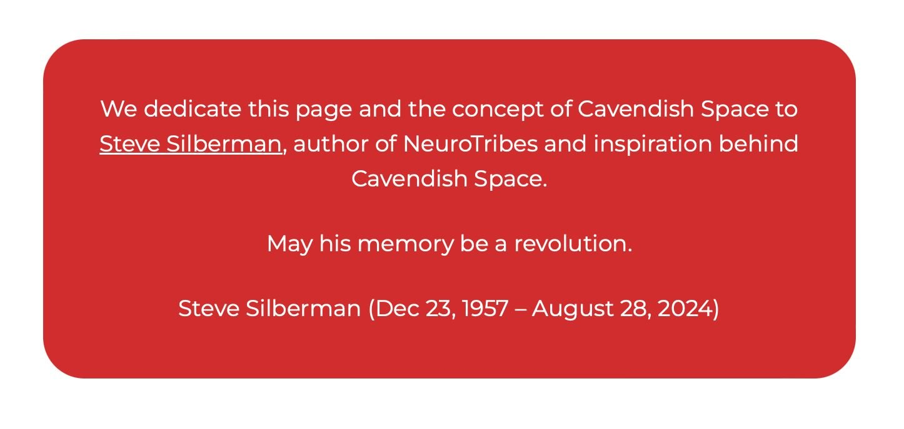
Alt text written when it was posted. -
“Autistic kids need access to autistic communities.”
“They need access to autistic mentors.”
“They know, like no one else possibly can, of what they speak.”
https://stimpunks.org/philosophy/autistic-kids-need-access-to-autistic-communities/
-
Http://gofund.me/a42a77ed
Join us in raising funds for Amy. She is going through serious medical and vision emergencies, and has injured feet. She is unhoused and needs assistance with rental/hotels to have a safe place to sleep. Amy is in need of meals/food due to homelessness.
-
Please join us in raising funds for Amy. She is going through serious medical and vision emergencies, and has injured feet. She is unhoused and needs assistance with rental/hotels to have a safe place to sleep. Amy is also in need of meals/food due to homelessness.
-
When you or your kid is diagnosed as autistic, almost all of the professional advice you get from education and healthcare is steeped in deficit ideology and the pathology paradigm.
There is a better way.
-
“Mass school refusal among neurodivergent children is an early form of resistance to neuronormativity.”
“92.1% of those with school attendance difficulties are neurodivergent. 83.4% are autistic.”
“We’ve turned classrooms into a hell for neurodivergence.” -
“Mass school refusal among neurodivergent children is an early form of resistance to neuronormativity.”
“92.1% of those with school attendance difficulties are neurodivergent. 83.4% are autistic.”
“We’ve turned classrooms into a hell for neurodivergence.”
-
Our “nonspeaking” glossary page collects writing & videos from Nonspeakers on why they prefer “nonspeaking” to “non-verbal”.
“I prefer non-speaking as I understand all lang. Non-verbal suggests I don’t understand lang & doesn’t represent how I love lang”
-
Our “nonspeaking” glossary page collects writing & videos from Nonspeakers on why they prefer “nonspeaking” to “non-verbal”.
“I prefer non-speaking as I understand all language. Non-verbal suggests I don’t understand language & doesn’t represent how I love language.”
-
"Color Communication Badges (aka Interaction Badges) are an accommodation to support social interaction for people with a variety of disabilities and communication needs. Color communication badges were first developed by Autism Network International."
-
Color Communication Badges (aka Interaction Badges) are an accommodation to support social interaction for people with a variety of disabilities and communication needs. Color communication badges were first developed by Autism Network International.
-
Stim Dancing: processing sensory stimulation and emotions through repetitive and unrehearsed dance.
Stim dancing is bodily survival knowledge that helps us bolster against stress and process trauma.
Pass it down.
-
Stim Dancing: processing sensory stimulation and emotions through repetitive and unrehearsed dance.
Stim dancing is bodily survival knowledge that helps us bolster against stress and process trauma.
Pass it down.
-
“This Is Why You Can't Get ADHD Treatment” documents the dystopian nightmare maze that is ADHD medication access in the USA.
The greed and dysfunction of our systems is gobsmacking.
-
Written communication is the great social equalizer.
Computers are an essential prosthetic device for autistics.
The future is text: the universal interface.
Text augments all other media.
Let’s augment everybody; let’s leave no mind behind.
-
This piece collects community writing and videos on inspiration porn/inspiration exploitation.
“Inspiration porn uses the lives of disabled people to inspire and entertain non-disabled people.”
-
“What might education look like in a system in which the acceptance, inclusion, and accommodation of every sort of bodymind represents an unquestioned baseline?”
—“Neuroqueer Heresies” by Nick WalkerLet’s find out.
-
“What might education look like in a system in which the acceptance, inclusion, and accommodation of every sort of bodymind represents an unquestioned baseline?”
—“Neuroqueer Heresies” by Nick WalkerLet’s find out.
-
Our education pathway guides you through the ableist reality of mainstream education into progressive, neuroaffirming education that scales from home to entire school districts.
-
Our education pathway guides you through the ableist reality of mainstream education into progressive, neuroaffirming education that scales from home to entire school districts.
-
Today, August 21st, is Joe Strummer’s birthday.
This is punk rock time. This is what Joe Strummer trained us for.
Know your rights, and name the systems of power.
https://stimpunks.org/2024/07/05/this-is-punk-rock-time-this-is-what-joe-strummer-trained-you-for/
-
Today, August 21st, is Joe Strummer’s birthday.
This is punk rock time. This is what Joe Strummer trained us for.
Know your rights, and name the systems of power.
https://stimpunks.org/2024/07/05/this-is-punk-rock-time-this-is-what-joe-strummer-trained-you-for/
-
@IAmIronMan42522 ryan@stimpunks.org
-
We updated “Create a Neurodiversity Inclusive Environment” with two new resources:
- "12 Core Commitments to a Culture of Care”
- “Seven Principles for Valuing, Prioritising and Enabling Autistic Children’s Autonomy” -
We updated “Create a Neurodiversity Inclusive Environment” with two new resources:
- "12 Core Commitments to a Culture of Care”
- “Seven Principles for Valuing, Prioritising and Enabling Autistic Children’s Autonomy” -
@autisticrealms @IAmIronMan42522 Here's a first pass at the glossary page:
-
“Often you don’t realize how lonely and frightened you’ve been the whole time, until you find your people.”
—Community As Home – Portraits – Disability Visibility Project -
“Often you don’t realize how lonely and frightened you’ve been the whole time, until you find your people.”
—Community As Home – Portraits – Disability Visibility Project -
Neuronormative domination continues apace.
This piece collects studies and community writing on the ableism and pseudoscience baked into expectations of eye contact and body language.
-
“Freedom is not freedom without care.”
—Healing Justice Lineages“Freedom requires care because freedom is not just a right—it is also a responsibility.”
—Dr. Carla Shalaby -
“Freedom is not freedom without care.”
—Healing Justice Lineages“Freedom requires care because freedom is not just a right—it is also a responsibility.”
—Dr. Carla Shalaby -
“Name the systems of power.”
“The lens of power can really help us see what's going on.”
Our “Systems of Power” learning pathway will help you recognize and name the systems of power.
-
“Name the systems of power.”
“The lens of power can really help us see what's going on.”
Our “Systems of Power” learning pathway will help you recognize and name the systems of power.
-
Our rules of punk:
1. Be yourself.
2. Reframe, so that you perceive others such that they too can be themselves.
3. Live your truth.
4. Shred some gnar.With music from NOBRO and Gossip.
-
Our rules of punk:
1. Be yourself.
2. Reframe, so that you perceive others such that they too can be themselves.
3. Live your truth.
4. Shred some gnar.With music from NOBRO and Gossip.
-
Here’s a handy guide to product development. These lessons apply to project-based learning too.
A classroom doing 6+2 week cycles of PBL using this guide will make cool stuff.
Combine with Cavendish Space for best results.
-
Here’s a handy guide to product development. These lessons apply to project-based learning too.
A classroom doing 6+2 week cycles of experiential PBL using this guide will make cool stuff.
Combine with Cavendish Space for best results.
-
We updated our piece on straws and straw bans with a funny new skit from Tina Friml, a disabled comedian.
https://stimpunks.org/glossary/straws/
-
If you invited behaviorism into your school, you have contributed to intergenerational trauma.
Behaviorism & deficit pathology models are doubling down on the harm to us neurodivergent people.
Fix it.
-
If you invited behaviorism into your school, you have contributed to intergenerational trauma.
Behaviorism & deficit pathology models are doubling down on the harm to us neurodivergent people.
Fix it.
-
Hi.
We’re Stimpunks, a community of neurodivergent, disabled, & queer people.
We provide mutual aid & human-centered learning.
Our website is an immense & openly licensed encyclopedia of disability & difference, with a unique style of vertical storytelling.
Check us out:
-
Hi.
We’re Stimpunks, a community of neurodivergent, disabled, & queer people.
We provide mutual aid & human-centered learning.
Our website is an immense and openly licensed encyclopedia of disability & difference.
Check us out:
-
Behaviorism measures the surface, badly.
Behaviorist education is ableist education.
ABA violates autonomy.
Autistic adults loathe ABA.
ABA is badly out of date.
I would never treat a dog that way. -
Our behaviorism “why sheet” concisely explains why behaviorism is ableist using bulleted lists of quotes from studies and community.
This sheet now has 65 signatories.
The primary legacy of ABA is trauma.
ABA violates the fundamental tenets of bioethics.
-
Our behaviorism “why sheet” concisely explains why behaviorism is ableist using bulleted lists of quotes from studies & community.
This sheet now has 65 signatories.
The primary legacy of ABA is trauma.
ABA violates the fundamental tenets of bioethics.
-
Some big, important studies on Long COVID came out recently.
These studies validate what disability communities have been saying regarding the impact of LC.
This piece collects quotes from those studies on the long-term health effects of COVID-19.
-
Some big, important studies on Long COVID came out recently.
These studies validate what disability communities have been saying regarding the impact of LC.
This piece collects quotes from those studies on the long-term health effects of COVID-19.
-
“Reframe these states of being that have been labelled deficiencies or pathologies as human differences.”
—Jonathan Mooney -
“Reframe these states of being that have been labelled deficiencies or pathologies as human differences.”
—Jonathan Mooney -
Stimpunks is a DIY humanizing rebellion.
Stimpunks’ work is expansive, beautiful, liberating.
Stimpunks is a treasure trove of everything important to the neurodivergent and disabled community.
Stimpunks is the best autism resource on the planet. -
Stimpunks is a DIY humanizing rebellion.
Stimpunks’ work is expansive, beautiful, liberating.
Stimpunks is a treasure trove of everything important to the neurodivergent and disabled community.
Stimpunks is the best autism resource on the planet. -
@AnnMemmott That's Flome the flow state mascot.
-
Ezra Furman’s “All of Us Flames” is an anthem for we the neurodivergent, queer, disabled, and weird. This is music by and for the edges, for the canaries.
Our survival is bound up together in the gutter adversity.
-
Ezra Furman’s “All of Us Flames” is an anthem for we the neurodivergent, queer, disabled, and weird. This is music by and for the edges, for the canaries.
Our survival is bound up together in the gutter adversity.
-
Love that video essay from Zoe Bee. We include it on our glossary page.
"In the name of efficiency, we have increasingly disabled the ability of healthcare, industry, and education to carry out their missions effectively."
--The Ironies of Schooling by David Labaree -
“The Fantasy Economy: Neoliberalism, Inequality, and the Education Reform Movement” by Neil Kraus goes into depth on STEM.
We quote from the book on our STEM glossary page:
-
A Vivifying Overlap: This Is What Trans Punk Looks Like
“To be a queer person is inherently a very punk thing. I think to be a punk person is also inherently a queer thing.
“There’s a lot of really vivifying overlap there between those two things for me.”
-
“To be a queer person is inherently a very punk thing. I think to be a punk person is also inherently a queer thing.
“There’s a lot of really vivifying overlap there between those two things for me.”
-
Dance Party Time: A Comedic Variety Show for Kids Starring Neurodivergent Young Adults
The wry and gentle humor and accompanying smiles drew us in as we watched the trailer and the two currently available episodes of “Dance Party Time”.
-
Dance Party Time: A Comedic Variety Show for Kids Starring Neurodivergent Young Adults
The wry and gentle humor and accompanying smiles drew us in as we watched the trailer and the two currently available episodes of “Dance Party Time”.
-
Stimpunks Board Member Becky runs a free food pantry in New Orleans.
Here’s a charming segment with Becky on local news that works the Mr. Rogers vibes.
“Take what you need. Leave what you can.”
“You can count on Becky, to come back tomorrow.”
-
Stimpunks Board Member Becky runs a free food pantry in New Orleans.
Here’s a charming segment with Becky on local news that works the Mr. Rogers vibes.
“Take what you need. Leave what you can.”
“You can count on Becky, to come back tomorrow.”
-
Free, life-changing, and available to everyone.
Public education, public libraries, and open source.
Let’s help people get free, for free.
Let's provide freedom to those who deal with a world that’s built to be hostile toward them.
https://stimpunks.org/philosophy/free-life-changing-and-available-to-everyone/
-
Free, life-changing, and available to everyone.
Public education, public libraries, and open source.
Let’s help people get free, for free.
Let's provide freedom to those who deal with a world that’s built to be hostile toward them.
https://stimpunks.org/philosophy/free-life-changing-and-available-to-everyone/
-
We’re curating “Learning Pathways” through our immense website.
Our first pathway is for autism.
https://stimpunks.org/pathways/autism/
This is the first iteration. More to come.
-
We’re curating “Learning Pathways” through our immense website.
Our first pathway is for autism.
https://stimpunks.org/pathways/autism/
This is the first iteration. More to come.
-
As X/Twitter further toxifies under its bigoted and fascist ownership, we’re engaging less on here.
We’re most engaged on Bluesky and Threads.
Bluesky:
https://bsky.app/profile/stimpunks.orgThreads:
https://www.threads.net/@stimpunksWe also post daily to Mastodon, Tumblr, Facebook, and LinkedIn.
-
Sometimes, you need a little Barry White singing a song of acceptance.
🍷🕯️🥂
-
Sometimes, you need a little Barry White singing a song of acceptance.
🍷🕯️🥂
-
How much progressive, neuroaffirming education philosophy can you weave into one web page?
Let’s find out:
-
“Empire of Normality" is an important book necessary to our times. We live in an age of mass behaviorism, unvarnished eugenics, and neuronormative domination. “Empire of Normality” explains how we got here.
-
JP Anderson has talked about being neurodivergent in interviews.
-
Latest Terms in the Stimpunks Glossary for July 2024
As we go about our work, we expand our glossary, which is currently at 360 terms. We added 20 new terms in the past month.
https://stimpunks.org/2024/08/03/latest-terms-in-the-stimpunks-glossary-for-july-2024/
-
Children and Young People. We'll clarify that in the piece.
-
We’re tired of “Quiet Hands!”
We’re tired of “Cop Shit”.
We want Activity-Permissive Settings.
Let us fidget and stim.
-
We’re tired of “Quiet Hands!”
We’re tired of “Cop Shit”.
We want Activity-Permissive Settings.
Let us fidget and stim.
-
This is why we give grants directly to individuals.
https://stimpunks.org/philosophy/direct-support-to-individuals/
-
We tend to focus on small mechanisms & pieces of knowledge. Instead, focus on the whole person, not the Frankenstein monster w/ all the little pieces. Affective neuroscience teaches us new perspectives for understanding the importance of the whole person.
https://stimpunks.org/philosophy/were-raising-whole-children-not-frankenstein-children/
-
We tend to focus on small mechanisms and parts and pieces of knowledge. Instead, focus on the whole person, not the Frankenstein monster with all the little pieces. Affective neuroscience teaches us new perspectives for understanding the importance of the whole person.
https://stimpunks.org/philosophy/were-raising-whole-children-not-frankenstein-children/
-
@Teacher_Fulton Looks like yet more scientism and epistemic injustice that will be abused to justify abusing us.
You can’t reduce the complexity of learning and our lived experience to studies that measure the surface, badly.
Here’s what fidgeting does for us:
-
With Green Day in the news for pissing off fascists, we’ll point out a great documentary of the scene that nurtured Green Day, in which community bands together to physically fight off skinheads.
https://stimpunks.org/2024/07/23/turn-it-around-the-story-of-east-bay-punk/
-
With Green Day in the news for pissing off fascists, we’ll point out a great documentary of the scene that nurtured Green Day, in which community bands together to physically fight off skinheads.
https://stimpunks.org/2024/07/23/turn-it-around-the-story-of-east-bay-punk/
-
The meritocracy myth and the "lowering the bar" narrative are two of the biggest obstacles we encounter in DEIB work.
-
Meritocracy is part of the traditional segregationist discourse.
segregationist discourse: states’ rights, federalism, radically free enterprise, freedom of association, privatization, the mythic view of American meritocracy, opposition to public assistance
-
We agree.
We don't prepare students for a world of potential oppression by oppressing them. “Better Get Used to It” is violence.
-
Stimpunks Merch Store: Ethically Made, Union Made, American Made
We finally have a merch store featuring two simple t-shirt designs and a sticker of our power wheelchair with rainbow umbrella logo.
https://stimpunks.org/2024/07/30/stimpunks-merch-store-ethically-made-union-made-american-made/
-
Our encyclopedia of disability and difference is vast.
We bring together research and lived experience.
We bring voice into empirical constructs.
“Stimpunks is a treasure trove of everything important to the neurodivergent and disabled community.”
-
Our encyclopedia of disability and difference is vast.
We bring together research and lived experience.
We bring voice into empirical constructs.
“Stimpunks is a treasure trove of everything important to the neurodivergent and disabled community.”
-
“Sea Glass Survivors” is one of the most beautifully powerful pieces of research we have ever read about the autistic experience of unmet needs in the education system.
https://stimpunks.org/library/infographics/sea-glass-is-weathered-by-what-it-has-endured-at-sea/
-
“Sea Glass Survivors” is one of the most beautifully powerful pieces of research we have ever read about the autistic experience of unmet needs in the education system.
https://stimpunks.org/library/infographics/sea-glass-is-weathered-by-what-it-has-endured-at-sea/
-
Fuming at our broken systems in Texas, where there are effectively zero residential programs in the entire state (there’s a private pay one for $30k/month after insurance). Fuming at a psych hospital that greatly harmed someone in our community.
Coping with this:
-
Our encyclopedia of disability & difference is immense & openly licensed.
We have directed approx. $100k to neurodivergent & disabled people through direct giving.
We help people obtain services.
We pay livable wages.
Your donation does real stuff.
-
Our encyclopedia of disability & difference is immense & openly licensed.
We have directed approx. $100k to neurodivergent & disabled people through direct giving.
We help people obtain services.
We pay livable wages.
We hold space & listen.
Your donation does real stuff.
-
10 Obstacles to Neurodiversity Affirming Practice
politics of resentment
sameness-based fairness
fundamental attribution error
conquering gaze from nowhere
scientism
epistemic injustice
behaviorism
ableism
deficit ideology
”Better get used to it.”https://stimpunks.org/2024/07/29/10-obstacles-to-neurodiversity-affirming-practice/
-
Thinking about neurodivergent kids in school now during an age of mass behaviorism & neuronormative domination. At least we’ve got a neurodiversity movement offering vocabulary & life lines.
Let’s build better learning spaces for them.
-
Thinking about neurodivergent kids in school now during an age of mass behaviorism & neuronormative domination. At least we’ve got a neurodiversity movement offering vocabulary & life lines.
Let’s build better learning spaces for them, spaces compatible with human actuality.
-
In 1964, Paul Goodman forecasted:
- the upsurge of a know-nothing fascism of the right.
- progressive regimentation & brainwashing, on scientific principles, directly toward a fascism-of-the-centerThus was built “The Road to Neuronormative Domination”.
-
In 1964, Paul Goodman forecasted:
- “the upsurge of a know-nothing fascism of the right.”
- “progressive regimentation and brainwashing, on scientific principles, directly toward a fascism-of-the-center”Thus was built “The Road to Neuronormative Domination” in ed.
-
Most conferences do not include us Stimpunks as either presenters or attendees. Conferences are sensory and social overwhelm. Speaking in front of an audience is very stressful.
Design around the accessibility and sustainability of virtual learning.
https://stimpunks.org/2024/07/29/an-inclusive-conference-model-for-our-times/
-
Getting human-centered, neurodiversity affirming, progressive practices into education, healthcare, & elsewhere is a battle through bad narratives & bad framing.
We need your help. We need you to help us bridge the Double Empathy Extreme Problem (DEEP).
https://stimpunks.org/2024/07/29/10-obstacles-to-neurodiversity-affirming-practice/
-
Getting human-centered, neurodiversity affirming, progressive practices into education, healthcare, and other systems is a battle through bad narratives and bad framing.
We need your help. We need you to help us bridge the Double Empathy Extreme Problem (DEEP).
https://stimpunks.org/2024/07/29/10-obstacles-to-neurodiversity-affirming-practice/
-
After so much invalidation on my 12 year diagnosis by exclusion healthcare journey, this piece is a validation letter to myself.
Céline Dion’s journey and mine share many touchstones. Her documentary made me feel seen and validated. I cried a lot.
https://stimpunks.org/2024/07/27/stiff-person-syndrome-celine-dion-and-me/
-
After so much invalidation on my 12 year diagnosis by exclusion healthcare journey, this piece is a validation letter to myself.
Céline Dion’s journey and mine share many touchstones. Her documentary made me feel seen and validated. I cried a lot.
https://stimpunks.org/2024/07/27/stiff-person-syndrome-celine-dion-and-me/
-
Here’s a playful ode to libraries and librarians assisted by the Librarian of Unseen University, visiting us from Discworld via L-space.
“You get all sorts of people in the library, and the librarian gets it all.”
—Terry Pratchett -
We updated our piece on policing and its impact on neurodivergent and disabled people to include Sonya Massey’s story.
May her memory be a revolution.
With music from: Meshell Ndegeocello, Swamburger & Scarlet Monk, Mr. Lif & Stu Bangas, RATM, & more.
-
We updated our piece on policing & its impact on neurodivergent & disabled people to include Sonya Massey’s story.
May her memory be a revolution.
With music from: Meshell Ndegeocello, Swamburger & Scarlet Monk, Mr. Lif & Stu Bangas, Ezra Furman, Ragę Against the Machine
-
This has been on our minds also.
Some of us in the neurodiversity movement are trying to make Weird Pride a thing, including a Weird Pride Day every March 4th.
-
“The time of life is being stolen from BIPOC disabled people under the cover of our complacency.”
—Kevin Gotkin -
We added a “Send Unarmed Responders Instead of Police” section to our Policing page.
-
Our societies are ill-equipped to accept folks who never get better yet keep on living.
https://stimpunks.org/2024/07/27/stiff-person-syndrome-celine-dion-and-me/
-
Stiff Person Syndrome, Céline Dion, and Me
Like Céline Dion, I have Stiff Person Syndrome. It’s excruciating.
https://stimpunks.org/2024/07/27/stiff-person-syndrome-celine-dion-and-me/
-
Celine’s Olympics performance is a feat. I hope she didn’t pay too hard for it afterwards. The costs for such an effort can include every voluntary muscle in your body (from feet to face, tongue, and jaw) contracting in mind-bending, inescapable pain. 2/2
-
Like Celine Dion, I (Ryan) have Stiff Person Syndrome. It’s excruciating and especially affects the muscles in your torso. Those with SPS tend to have low blood oxygen because taking too deep a breath can trigger agonizing cramps. I have torn rib muscles many times. 1/2
-
Agreed.
We added oligarchy to our glossary.
-
Create a Neurodiversity Inclusive Environment
Collected herein are ways of creating neurodiversity inclusive environments in education, healthcare, and everywhere based on research and lived experience.
Instead of behaviorism, do this:
https://stimpunks.org/philosophy/create-a-neurodiversity-inclusive-environment/
-
Create a Neurodiversity Inclusive Environment
Collected herein are ways of creating neurodiversity inclusive environments in education, healthcare, and everywhere based on research and lived experience.
Instead of behaviorism, do this:
https://stimpunks.org/philosophy/create-a-neurodiversity-inclusive-environment/
-
I love punk documentaries. Community comes together to build inclusive spaces. Community rebounds after losing spaces. Community fights off skinheads with bats and pipes to keep spaces safe. Community learns how to DIY together.
https://stimpunks.org/2024/07/23/turn-it-around-the-story-of-east-bay-punk/
-
I love punk documentaries. Community comes together to build inclusive spaces. Community rebounds after losing spaces. Community fights off skinheads with bats and pipes to keep spaces safe. Community learns how to DIY together.
Community: The Story of East Bay Punk
https://stimpunks.org/2024/07/23/turn-it-around-the-story-of-east-bay-punk/
-
DEI is a scapegoat for broken capitalism.
It’s not DEI’s Fault; It’s the Rot Economy
https://stimpunks.org/2024/07/21/its-not-deis-fault-its-the-rot-economy/
-
DEI is a scapegoat for broken capitalism.
It’s not DEI’s Fault; It’s the Rot Economy
https://stimpunks.org/2024/07/21/its-not-deis-fault-its-the-rot-economy/
-
"Mainstream disability organizations play along with bland requests for “niceness” towards disabled people, rather than advocating for systemic change or challenging the violence enacted upon pathologized subjects."
We try to be the exception to that. We're a feisty group.
-
"Our disabled lives are perceived as disorder, perceived as dissent, by those in power. I don’t see any reason, then, to continue participating in the status quo. The order is oppressive; let’s dis it."
Hell yes to this entire piece.
-
On autistic rapport.
“Autistic people enjoy spending time with other autistic people and find them easier to talk to.”
-
@Ka81 @AnnMemmott @ElaineMcgreevy @CommonSenseSLT We're collecting writing here:
-
@joshuaseigal I (Ryan) think that circularity is an element of what Alfie Kohn and others call “vertical relevance/justification”.
We quote Kohn here:
More on the problems with IQ:
-
Our needs are human needs, not special needs.
-
“The accommodations for natural human variation should be mutual.” (@laurenancona)
“Accessibility is a collective process!” (Riah Person)
“Society needs to re-enable dignity.” (Ann Memmott)
-
I (Ryan) have an aggressive form of an agonizing disease.
And today I’m feeling it.
I worked on this page as therapy:
-
I (Ryan) have an aggressive form of an agonizing disease.
And today I’m feeling it.
I worked on this page as therapy:
-
We use similar vertical scrollytelling techniques as webtoons on our website.
Here’s how we combine “talk, texts, and media” (James Paul Gee) into “multimodal ensembles” (Frank Serafini) to provide vicarious learning experiences.
-
We use similar vertical scrollytelling techniques as webtoons on our website.
Here’s how we combine “talk, texts, and media” (James Paul Gee) into “multimodal ensembles” (Frank Serafini) to provide vicarious learning experiences.
-
The 19th is good on bodily autonomy and disability.
Donate to the 19th here:
https://19thnews.org/membership/
Learn about bodily autonomy and disability here:
-
Not only is @kayas-kosmos.bsky.social's art beautiful, her alt text is emotion rich and evocative.
-
Agreed.
Many of us @stimpunks are highly monotropic & rely on getting into flow states to do high memory state zone work. Periods wreck that. They are like meetings: forced interruptions.
Reading:
https://oolong.medium.com/craft-flow-and-cognitive-styles-a47f827fcd6a
https://paulgraham.com/makersschedule.html
https://stimpunks.org/2024/06/25/tendrils-and-stacks-assisting-flow-states-with-a-clipboard-manager/ -
“This is punk rock time. This is what Joe Strummer trained you for.”
https://stimpunks.org/2024/07/05/this-is-punk-rock-time-this-is-what-joe-strummer-trained-you-for/
-
“This is punk rock time. This is what Joe Strummer trained you for.”
https://stimpunks.org/2024/07/05/this-is-punk-rock-time-this-is-what-joe-strummer-trained-you-for/
-
New glossary page: Extractive Abandonment
“The surplus population is those whose labour isn’t profitable to the ruling class. Extractive abandonment is the process by which these populations are made profitable to capital.”
https://stimpunks.org/glossary/extractive-abandonment/
With Muppets.
-
New glossary page: Extractive Abandonment
“The surplus population is those whose labour isn’t profitable to the ruling class. Extractive abandonment is the process by which these populations are made profitable to capital.”
https://stimpunks.org/glossary/extractive-abandonment/
With Muppets.
-
New glossary page: SpInfodump
SpInfodump = Special Interests (SpIns) + Infodump
-
New glossary page: Technoableism
“Technoableism is a belief in the power of technology that considers the elimination of disability a good thing, something we should strive for.”
-
Ordinary tried to fix me. I was a threat to a page in history.
https://stimpunks.org/2024/07/04/ordinary-tried-to-fix-me-i-was-a-threat-to-a-page-in-history/
-
Ordinary tried to fix me. I was a threat to a page in history.
https://stimpunks.org/2024/07/04/ordinary-tried-to-fix-me-i-was-a-threat-to-a-page-in-history/
-
New glossary page: Chronic Constellation
“The collection of co-occurring conditions that we see common in the hypermobile and autistic community.”
-
As we go about our work, we expand our glossary, which is currently at 342 terms.
Here are the latest entries.
https://stimpunks.org/2024/07/02/latest-terms-in-the-stimpunks-glossary-2/
-
Thank you.
We incorporated a quote from your piece into our piece, "Story: Maintaining the Continuity of Creation".
https://stimpunks.org/2024/07/04/story-maintaining-the-continuity-of-creation/
-
Story: Maintaining the Continuity of Creation
https://stimpunks.org/2024/07/04/story-maintaining-the-continuity-of-creation/
-
Story: Maintaining the Continuity of Creation
https://stimpunks.org/2024/07/04/story-maintaining-the-continuity-of-creation/
-
Rules of Thumb for Human Systems
https://stimpunks.org/2024/07/01/rules-of-thumb-for-human-systems/
-
The framing of these pieces is steeped in deficit ideology that justifies existing social conditions by identifying the problem of inequality as located within, rather than as pressing upon, disenfranchised communities.
Here’s our framing:
https://stimpunks.org/access/education/ https://x.com/annelongfield/status/1805986816866070727
-
@annelongfield The framing of these pieces is steeped in deficit ideology that justifies existing social conditions by identifying the problem of inequality as located within, rather than as pressing upon, disenfranchised communities.
Here’s our framing:
-
Dr. Naomi Fisher is well-respected in the neurodiversity movement for her work. She is an ally who helps neurodivergent kids and parents advocate against school-induced anxiety.
-
Dr. Naomi Fisher is well-respected in the neurodiversity movement for her work. She is an ally who helps neurodivergent kids and parents advocate against school-induced anxiety.
-
We have a few related pieces:
Everyone Needs a Properly Equipped Toolbelt to Get Through Life
https://stimpunks.org/2024/06/13/everyone-needs-a-properly-equipped-toolbelt-to-get-through-life/School-Induced Anxiety
https://stimpunks.org/glossary/school-induced-anxiety/Education Access: We’ve Turned Classrooms Into a Hell for Neurodivergence
https://stimpunks.org/access/education/ -
We added quotes from this piece to our glossary page on Long COVID.
https://stimpunks.org/glossary/long-covid/
Featuring the recently released definition of Long COVID from the U.S. National Academies of Sciences, Engineering, and Medicine (NASEM).
Remember:
COVID Is a Mass Disabling Event
-
We include this wise quote from a 1979 IBM Presentation in our tech ethics piece, “Hear me out a bit before the future comes around.”
https://stimpunks.org/philosophy/hear-me-out-a-bit-before-the-future-comes-around/
-
“Luddism is not about the machines per se; it's about machines in the hands of capitalists and tyrants.”
— Audrey Watters -
“Luddism is not about the machines per se; it's about machines in the hands of capitalists and tyrants.”
— Audrey Watters -
We added quotes from this to our Behaviorism page.
https://stimpunks.org/glossary/behaviorism/ https://t.co/aX1Hj201Pt
-
We created our music-filled glossary page on “Bodily Autonomy” to push back against the use of disabled people as pawns in abortion debates.
https://stimpunks.org/glossary/bodily-autonomy/
Bodily autonomy is a core principle of the disability rights movement. Bodily autonomy unites movements.
-
Tendrils and Stacks: Assisting Flow States with a Clipboard Manager
https://stimpunks.org/2024/06/25/tendrils-and-stacks-assisting-flow-states-with-a-clipboard-manager/
-
The Inclusive Power of the Dimmer Switch
https://stimpunks.org/2024/06/24/the-inclusive-power-of-the-dimmer-switch/
-
The Inclusive Power of the Dimmer Switch
https://stimpunks.org/2024/06/24/the-inclusive-power-of-the-dimmer-switch/
-
Get your bodymind as comfortable as it gets, and go on an art and music-filled scrollytelling adventure through our multi-media encyclopedia of human difference.
Start here:
-
Our time of life is being stolen by relentless minority stress.
-
Our time of life is being stolen by relentless minority stress.
-
Meshell Ndegeocello deserves all the flowers. She quotes James Baldwin and Audre Lorde in her brand new Tiny Desk Concert.
https://www.youtube.com/watch?v=XBuOd2MzdT4
Love the version of Virgo they do in that set. The original is an epic groove with 3 drum credits.
-
Meshell Ndegeocello deserves all the flowers. She quotes James Baldwin and Audre Lorde in her brand new Tiny Desk Concert.
https://www.youtube.com/watch?v=XBuOd2MzdT4
Love the version of Virgo they do in that set. The original is an epic groove with 3 drum credits.
-
"You must build a library and an anti-library now…"
https://stimpunks.org/2024/06/13/everyone-needs-a-properly-equipped-toolbelt-to-get-through-life/
-
We like this advice on accessible typography. It includes a downloadable pocket guide.
Aside: Dear academia, 12pt fonts are brutal.
https://medium.com/queer-design-club/the-controversy-of-accessible-type-8def04eb8808
-
Today is Autistic Pride Day, which was created by a transgender woman.
Queer and neurodivergent liberation are entwined.
Enjoy this digital composition filled with music and art celebrating our entwined natures and our entwined liberation.
https://stimpunks.org/2024/06/18/were-a-double-rainbow-all-the-way/
-
Today is Autistic Pride Day, which was created by a transgender woman.
Queer and neurodivergent liberation are entwined.
Enjoy this digital composition filled with music and art celebrating our entwined natures and our entwined liberation.
https://stimpunks.org/2024/06/18/🌈🌈-were-a-double-rainbow-all-the-way/
-
Simon says smile.
Show us your teeth.
You’re only as valuable as you are able.Simon says it's not time for a bathroom break.
You go when Simon says.Simon says you're not listening.
People that don’t listen will never be successful. -
This is a very illuminating study that we quote on our Policing page.
-
The scene where you pile up the forms y’all had to fill out over the years is a powerfully relatable one for me (Ryan).
I added your video to our ADHD/Kinetic Cognitive Style page.
-
ABA is bad, very bad.
Here’s what to do instead.These alternatives to ABA are presented in convenient bulleted lists of strategies with links to deep resources.
In collaboration with @autisticrealms.
-
ABA is bad, very bad.
Here’s what to do instead.These alternatives to ABA are presented in convenient bulleted lists of strategies with links to deep resources.
In collaboration with @autisticrealms.bsky.social.
-
Have you had “the talk” with your neurodivergent & disabled kids? The talk about how to stay alive when encountering police?
Learn about having the “Just take it” talk and more.
-
Have you had “the talk” with your neurodivergent & disabled kids? The talk about how to stay alive when encountering police?
Learn about having the “Just take it” talk.
With music from: Meshell Ndegeocello, Swamburger & Scarlet Monk, Mr. Lif & Stu Bangas, Ezra Furman, RATM
https://stimpunks.org/policing/ -
“Why am I so sure that I’d rather be this than everything I was supposed to be?”
—Garnet, Steven UniverseQueer and Neurodivergent Liberation are Entwined
https://stimpunks.org/why/queer-and-neurodivergent-liberation-are-entwined/
-
“Why am I so sure that I’d rather be this than everything I was supposed to be?”
—Garnet, Steven UniverseQueer and Neurodivergent Liberation are Entwined
https://stimpunks.org/why/queer-and-neurodivergent-liberation-are-entwined/
-
Phones, tablets, & laptops are essential tools for navigating modernity. Instead of being banned, they should be baked into the learning experience using toolbelt theory, workflow thinking, differentiated instruction, and UDL.
https://stimpunks.org/2024/06/13/everyone-needs-a-properly-equipped-toolbelt-to-get-through-life/
-
Phones, tablets, & laptops are essential tools for navigating modernity. Instead of being banned, they should be baked into the learning experience using toolbelt theory, workflow thinking, differentiated instruction, and UDL.
https://stimpunks.org/2024/06/13/everyone-needs-a-properly-equipped-toolbelt-to-get-through-life/
-
Here’s how we build learning compatible with our community of neurodivergent and disabled people.
Behold what safe collaboration can do.
-
Here’s how we build learning compatible with our community of neurodivergent and disabled people.
Behold what safe collaboration can do.
-
Our latest “Why Sheet” is on why “Queer and Neurodivergent Liberation are Entwined”.
- One idea per line (sometimes 2)
- 5 themes
- Bulleted lists
- Footnoteshttps://stimpunks.org/why/queer-and-neurodivergent-liberation-are-entwined/
-
Our latest “Why Sheet” is on why “Queer and Neurodivergent Liberation are Entwined”.
- One idea per line (sometimes 2)
- 5 themes
- Bulleted lists
- Footnoteshttps://stimpunks.org/why/queer-and-neurodivergent-liberation-are-entwined/
-
The forces of neuronormativity feel overwhelming in this age of mass behaviorism and unvarnished eugenics.
Against that tide, we embrace our weird potentials. We neuroqueer the social world.
In a World That Values Neuronormativity Kindness Is Punk
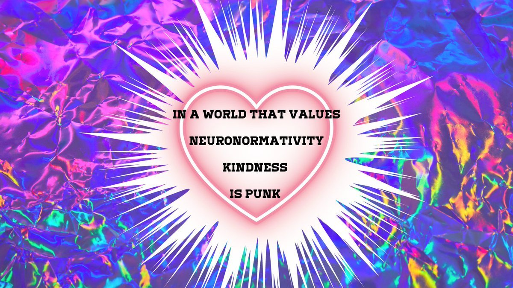
Alt text written by Claude when the post moved here. -
The forces of neuronormativity feel overwhelming in this age of mass behaviorism and unvarnished eugenics.
Against that tide, we embrace our weird potentials. We neuroqueer the social world.
In a World That Values Neuronormativity Kindness Is Punk
Alt text written when it was posted. -
Cavendish Space: psychologically and sensory safe spaces suited to zone work, flow states, intermittent collaboration, and collaborative niche construction.
-
Cavendish Space: psychologically and sensory safe spaces suited to zone work, flow states, intermittent collaboration, and collaborative niche construction.
-
@ElaineMcgreevy @edpsyuk @CommonSenseSLT That manifesto looks good.
-
Compassion is not coddling.
Coddle is a clobber word for neuronormative domination.
-
Oh, nice. I especially like those formals. I might buy it.
-
The nonprofit professionals who consult us tell us we’re unique. They tell us we’re tearing down walls in philanthropy.
Your donations directly assist some of the most marginalized people in our society.
Our pitch deck:
-
The nonprofit professionals who consult us tell us we’re unique. They tell us we’re tearing down walls in philanthropy.
Your donations directly assist some of the most marginalized people in our society. We handle the vetting. We handle the legal compliance.
Our pitch deck:
-
How do you feel about the Playpen Sans font? I (Ryan) am curious how compatible it is with hyperlexic people, dyslexic people, and everyone on the spectrum of eye-reading.
Playpen Sans and Accessibility
https://stimpunks.org/2024/06/05/playpen-sans-and-accessibility/ -
Related reading:
https://stimpunks.org/glossary/very-grand-emotions/
https://stimpunks.org/glossary/justice-sensitivity/
https://stimpunks.org/glossary/canary/ -
This epic thread is full of perspective on healthcare challenges.
See also:
“Healthcare Access: They don’t take Disability Studies classes. They don’t socialize with us. They don’t listen to us.”
https://stimpunks.org/access/healthcare/ https://x.com/ItsEmilyKaty/status/1797028213949956108
-
We don't prepare students for a world of potential oppression by oppressing them. “Better Get Used to It” is violence.
-
“Better Get Used to It” is violence.
-
🌈🌈 Neurodiversity and Gender: You Hit So Hard With All the Colors That There Are
This Pride Month, learn about the shared history of queer and neurodivergent people.
Queer and neurodivergent liberation are entwined.
-
🌈🌈 Neurodiversity and Gender: You Hit So Hard With All the Colors That There Are
This pride month, learn about the shared history of queer and neurodivergent people.
Queer and neurodivergent liberation are entwined.
-
We added this quote to our "Nonspeaking" glossary page.
https://stimpunks.org/glossary/nonspeaking/ https://x.com/ElaineMcgreevy/status/1796638465594892453
-
“There is no such thing as “normal” and no such thing as “special needs.” There is just interdependence.”
—Talila “TL” LewisWe ain’t special.
-
“There is no such thing as “normal” and no such thing as “special needs.” There is just interdependence.”
—Talila “TL” LewisWe ain’t special.
-
It is time to celebrate our interdependence!
Our Umbrella page is a celebration of those who helped us build the Stimpunks Umbrella as well as a showcase of the tools and philosophy we used to build it.
-
We have error focused expertise-professionals implementing deficit models. The manufactured ignorance prevalent around deficit pathology models is doubling down on the harm to us neurodivergent people. It’s a form of intentional intergenerational trauma.
-
We have essentially error focused expertise-professionals implementing deficit models. The ‘manufactured ignorance’ prevalent around deficit pathology models is doubling down on the harm to us neurodivergent people. It’s a form of intentional intergenerational trauma.
-
On this page, we get personal, we get feisty, and we get punk rock about it. We celebrate neurodiversity, disability justice, pluralism, weird pride, queer pride, and chosen family while making it clear that:
We are not okay.
You are killing us.
-
Behaviorist education is ableist education.
Learn why behaviorist education is considered ableist. Explore a brief yet extensively sourced behaviorism "Why Sheet" to understand its impact.
-
Behaviorist education is ableist education.
Learn why behaviorist education is considered ableist. Explore a brief yet extensively sourced behaviorism "Why Sheet" to understand its impact.
-
We exist as friction.
The work we do is wildly painful.
-
We exist as friction.
The work we do is wildly painful.
-
The total lack of neurodiversity and disability studies in healthcare is a towering indictment.
“They don’t take Disability Studies classes. They don’t socialize with us. They don’t listen to us.”
-
“That there are so many forces that would have all of us queers be less free, if not dead, makes us a community by default. Pride is a torch that needs only to be lit because of the darkness, and the darkness is not going away any time soon.”
—Ezra Furman -
“That there are so many forces that would have all of us queers be less free, if not dead, makes us a community by default. Pride is a torch that needs only to be lit because of the darkness, and the darkness is not going away any time soon.”
—Ezra Furman
-
We have quotes from this and other studies on our "Problem Behavior" glossary page.
-
To all those who support violent bigotry against our loved people…
“What the fuck’s wrong with you all?”
—Sylvia Rivera -
We don't need to be related to relate
We don't need to share genes or a surname
You are
You are
My chosen
Chosen family
So what if we don't look the same?
We been going through the same thing
You are
You are
My chosen
Chosen family--Rina Sawayama
-
Dr. Mary Helen Immordino-Yang's work provides a compelling neurobiological basis for what we advocate for in the neurodiversity movement and progressive education. We're looking forward to the conference. https://t.co/eKrso5F9Pb
-
Happy Pride Month.
Let’s violate the rules of both neuronormative performance and heteronormative performance.
Queer and neurodivergent liberation are entwined.
-
Every right now
Is the next chorus
And everyday is a bright new day
Every right now
Is the next chorus
And we can all do something goodWritten by Stimpunk Ronan when he was 13.
We give grants to neurodivergent artists.
Your donations make that happen. -
Every right now
Is the next chorus
And everyday is a bright new dayEvery right now
Is the next chorus
And we can all do something goodWritten by Stimpunk Ronan when he was 13.
We give creator grants to neurodivergent & disabled artists.
Your donations make that happen.
-
This is good advice aligned with our conception of "Cavendish Space".
-
@alfiekohn Thorndike won, Dewey lost.
Snedden won, Dewey lost.
Cubberley won, Dewey lost.
Skinner won, Papert lost.We lost so much.
We could have had progressive education. Instead, we got neuronormative domination.
-
A Letter in Reply to a Kindness from a Care Worker
https://stimpunks.org/2024/05/24/a-letter-in-reply-to-a-kindness-from-a-care-worker/
-
A Letter in Reply to a Kindness from a Care Worker
https://stimpunks.org/2024/05/24/a-letter-in-reply-to-a-kindness-from-a-care-worker/
-
@alfiekohn Thank you. Your work is very much appreciated in our community of neurodivergent and disabled people.
We added quotes from your piece to our "Evidence-based" glossary page.
-
The Lack of Listening in Healthcare
https://stimpunks.org/2024/05/22/the-lack-of-listening-in-healthcare/
-
The Lack of Listening in Healthcare
https://stimpunks.org/2024/05/22/the-lack-of-listening-in-healthcare/
-
Thorndike won, Dewey lost.
Snedden won, Dewey lost.
Cubberley won, Dewey lost.
Skinner won, Papert lost.We lost so much.
We could have had progressive education. Instead, we got neuronormative domination.
-
Thorndike won, Dewey lost.
Snedden won, Dewey lost.
Cubberley won, Dewey lost.
Skinner won, Papert lost.We lost so much.
We could have had progressive education. Instead, we got neuronormative domination.
-
Here’s a brief yet heavily sourced account of my school career as a situationally mute hyperlexic autistic.
R-word and Genius: Situationally Mute Hyperlexic Autistic
https://stimpunks.org/2022/09/19/r-word-and-genius-situationally-mute-hyperlexic-autistic/
-
Here’s a brief yet heavily sourced account of my school career as a situationally mute hyperlexic autistic.
R-word and Genius: Situationally Mute Hyperlexic Autistic
https://stimpunks.org/2022/09/19/r-word-and-genius-situationally-mute-hyperlexic-autistic/
-
Whenever I (Ryan) come back to this piece, I appreciate its epicness and attitude and soundtrack. Looking back, it’s a feisty neuroqueer becoming.
-
Whenever I (Ryan) come back to this piece, I appreciate its epicness and attitude and soundtrack. Looking back, it’s a feisty neuroqueer becoming.
-
Stimpunks was forged in the quest for survival and educational inclusion. We had to roll our own education, because even the “all means all” of public education failed to include us. We’ve learned a lot along the way and present to you Stimpunks Space.
-
Stimpunks was forged in the quest for survival and educational inclusion. We had to roll our own education, because even the “all means all” of public education failed to include us. We’ve learned a lot along the way and present to you Stimpunks Space.
-
Campfires in Dark Forests: Community Brings Safety to the Serendipity
-
Campfires in Dark Forests: Community Brings Safety to the Serendipity
-
In “Tapping the Radical Roots of Peer Support”, Tuesday Ferguson explores the fraught nature of doing work at the “intersection between the radical roots of peer support & the systems that dictate access to resources, power, & autonomy”.
https://stimpunks.org/2024/05/08/tapping-the-radical-roots-of-peer-support/
-
Peer support is dear to us. In “Tapping the Radical Roots of Peer Support”, Tuesday Ferguson explores the fraught nature of doing work at the “intersection between the radical roots of peer support & the systems that dictate access to resources, power, & autonomy”.
https://stimpunks.org/2024/05/08/tapping-the-radical-roots-of-peer-support/
-
Our “Why Sheet” on “Positive Greetings at the Door” recommends against the practice.
Here’s why:
-
Our “Why Sheet” on “Positive Greetings at the Door” recommends against the practice.
Here’s why:
-
How do you challenge neuronormative domination in learning spaces?
neuroqueer = subverting, defying, disrupting, liberating oneself from neuronormativity.
Our #NeuroqueerLearningSpaces series is open for submissions.
-
How do you challenge neuronormative domination in learning spaces?
neuroqueer = subverting, defying, disrupting, liberating oneself from neuronormativity.
Our #NeuroqueerLearningSpaces series is open for submissions.
-
The Road to Neuronormative Domination: Thorndike won, Dewey lost. Skinner won, Papert lost.
-
The Road to Neuronormative Domination: Thorndike won, Dewey lost. Skinner won, Papert lost.
-
As a disability organization operating in the trenches of a mass disabling event, we recommend everyone get good at virtual.
Design around the accessibility & sustainability of virtual learning. Follow the lead of @HumResPro.
-
As a disability organization operating in the trenches of a mass disabling event, we recommend everyone get good at virtual.
Design around the accessibility & sustainability of virtual learning. Follow the lead of @humrespro.bsky.social.
-
Latest Terms in the Stimpunks Glossary
Our glossary grows. It’s at 320 terms. Here are the latest 21 terms added.
https://stimpunks.org/2024/05/01/latest-terms-in-the-stimpunks-glossary/
-
Latest Terms in the Stimpunks Glossary
Our glossary grows. It’s at 320 terms. Here are the latest 21 terms added.
https://stimpunks.org/2024/05/01/latest-terms-in-the-stimpunks-glossary/
-
In this act of digital composition, we get personal, we get feisty, & we get punk rock about it. We celebrate neurodiversity, disability justice, weird pride, queer pride, & chosen family while making it clear that:
We are not okay.
You are killing us. -
In this act of digital composition, we get personal, we get feisty, and we get punk rock about it. We celebrate neurodiversity, disability justice, pluralism, weird pride, queer pride, and chosen family while making it clear that:
We are not okay.
You are killing us. -
Our new Flexibility glossary page covers a lot of ground.
- Flexibility & Inclusion
- Flexibility & Education
- Flexibility & Work
- Finding the Flex
- Flexibility & Crip Time
- Flexibility & Universal Design for Learning
- Flexibility & Toolbelt Theory -
Our new Flexibility glossary page covers a lot of ground.
- Flexibility and Inclusion
- Flexibility and Education
- Flexibility and Work
- Finding the Flex
- Flexibility and Crip Time
- Flexibility and Universal Design for Learning
- Flexibility and Toolbelt Theory -
The latest piece in our #NeuroqueerLearningSpaces series is “Can we Trust?” by Pernille Fraser.
Can we trust the space you offer?
Can we trust the words you utter?Can we trust the time decided?
Can we trust the form provided? -
The latest piece in our #NeuroqueerLearningSpaces series is “Can we Trust?” by Pernille Fraser.
Can we trust the space you offer?
Can we trust the words you utter?Can we trust the time decided?
Can we trust the form provided? -
Design for human diversity with timeless patterns and primordial spaces.
https://stimpunks.org/glossary/cavendish-space/
#NeuroqueerLearningSpaces
-
Learn why behaviorist education is considered ableist. Explore a brief yet extensively sourced behaviorism "Why Sheet" to understand its impact.
-
@alfiekohn, We’re experimenting with Why Sheets. Our first two sheets are on Behaviorism and Hoodies.
https://stimpunks.org/why/behaviorism/
-
The next installment in our “Neuroqueer Learning Spaces” series is “Neuroqueering Child Psychotherapy” by Rowena Mahmud.
https://stimpunks.org/2024/04/12/neuroqueering-child-psychotherapy/
#NeuroqueerLearningSpaces
-
The next installment in our “Neuroqueer Learning Spaces” series is “Neuroqueering from the Inbetween” by @autisticrealms.
https://stimpunks.org/2024/04/12/neuroqueering-from-the-inbetween/
#NeuroqueerLearningSpaces
-
The next installment in our “Neuroqueer Learning Spaces” series is “Neuroqueering from the Inbetween” by @autisticrealms.bsky.social.
https://stimpunks.org/2024/04/12/neuroqueering-from-the-inbetween/
#NeuroqueerLearningSpaces
-
Hoodies are essential sensory kit to many people.
Use our brief “why sheet” as a template to tell school why your kid needs their hoodie.
-
A Short Rumination on Our Journey to Neuroqueer Learning Spaces
We fought for the right to learn differently, and lost. The journey was instructive.
https://stimpunks.org/2024/04/07/a-short-rumination-on-our-journey-to-neuroqueer-learning-spaces/
#NeuroqueerLearningSpaces
-
A Short Rumination on Our Journey to Neuroqueer Learning Spaces
We fought for the right to learn differently, and lost. The journey was instructive.
https://stimpunks.org/2024/04/07/a-short-rumination-on-our-journey-to-neuroqueer-learning-spaces/
#NeuroqueerLearningSpaces
-
Behaviorist education is ableist education.
Here’s our “why sheet” on behaviorism. Use it to advocate against behaviorism at your school.
-
The next piece in our #NeuroqueerLearningSpaces series is from Ira Socol, @irasocol, co-author of “Timeless Learning”.
The Path to Equity Begins with Neuroqueer-Sensitive Learning Spaces
-
The next piece in our #NeuroqueerLearningSpaces series is from Ira Socol, @irasocol.bsky.social, co-author of “Timeless Learning”.
The Path to Equity Begins with Neuroqueer-Sensitive Learning Spaces
-
Would love to hear you three chat about NeuroTribes and autism.
-
Many of us on the #NeuroqueerLearningSpaces project got into this work by educating at home when school didn't work out.
The next piece in our project is about “Neuroqueering Education at Home”.
https://stimpunks.org/2024/04/03/neuroqueering-education-at-home/
-
Many of us on the #NeuroqueerLearningSpaces project got into this work by educating at home when school didn't work out.
The next piece in our project is about “Neuroqueering Education at Home”.
https://stimpunks.org/2024/04/03/neuroqueering-education-at-home/
-
@CommonSenseSLT There is so much insight to be gleaned when directly asking CYP about their needs. The themes and sub themes identified are very helpful.
-
“Most autistic adults in this study experienced a flow state in relation to their play, involving intense focus on a play activity for a long time & .. an altered sense of the passage of time.“
—Diversity in Autistic PlayStevie Ray Vaughan in flow state.
https://youtu.be/KC5H9P4F5Uk?si=JkWmjpH92ZdjUng0 -
“Most autistic adults in this study experienced a flow state in relation to their play, involving intense focus on a play activity for a long time and possibly an altered sense of the passage of time.“
—Diversity in Autistic PlayStevie Ray Vaughan in flow state.
-
Schools will continue to exclude us en masse until they reconnect with the timeless patterns and primordial spaces of human learning and collaboration.
https://stimpunks.org/glossary/cavendish-space/
#NeuroqueerLearningSpaces
-
Schools will continue to exclude us en masse until they reconnect with the timeless patterns and primordial spaces of human learning and collaboration.
https://stimpunks.org/glossary/cavendish-space/
#NeuroqueerLearningSpaces
-
Omega hai foleet
-
Neuroqueering Learning Spaces: an exploration
https://stimpunks.org/2024/03/23/neuroqueering-learning-spaces-an-exploration/
We will collaborate with different communities to discover what an embodied, neuroqueer education & learning space may mean for those facilitating ed. & how it could support CYP.
#NeuroqueerLearningSpaces
-
Neuroqueering Learning Spaces: an exploration
https://stimpunks.org/2024/03/23/neuroqueering-learning-spaces-an-exploration/
We will collaborate with different communities to discover what an embodied, neuroqueer education & learning space may mean for those facilitating education & how it could support young people.
#NeuroqueerLearningSpaces
-
Caves, Campfires, & Watering Holes for Dandelions, Tulips, & Orchids
Cavendish Space: psychologically and sensory safe spaces suited to zone work, flow states, intermittent collaboration, and collaborative niche construction.
https://stimpunks.org/glossary/cavendish-space/
#NeuroqueerLearningSpaces
-
Caves, Campfires, and Watering Holes for Dandelions, Tulips, and Orchids
Cavendish Space: psychologically and sensory safe spaces suited to zone work, flow states, intermittent collaboration, and collaborative niche construction.
https://stimpunks.org/glossary/cavendish-space/
#NeuroqueerLearningSpaces
-
“There is no learning without the body.”
—Embodied Education (Aldred, 2023)Our favorite tool for designing for whole bodyminds is “Caves, Campfires, and Watering Holes”.
https://stimpunks.org/glossary/cavendish-space/
#NeuroqueerLearningSpaces
-
“There is no learning without the body.”
—Embodied Education (Aldred, 2023)Our favorite tool for designing for whole bodyminds is “Caves, Campfires, and Watering Holes”.
https://stimpunks.org/glossary/cavendish-space/
#NeuroqueerLearningSpaces
-
@stevesilberman.bsky.social
Our conception of “Cavendish Space” is inspired by the story of Henry Cavendish in NeuroTribes.
-
Call for Submissions: Neuroqueer Learning Spaces
We’re requesting community writing and art about neuroqueering education, play, and learning spaces.
https://stimpunks.org/2024/03/19/call-for-submissions-neuroqueer-learning-spaces/
#NeuroqueerLearningSpaces
-
Call for Submissions: Neuroqueer Learning Spaces
We’re requesting community writing and art about neuroqueering education, play, and learning spaces.
https://stimpunks.org/2024/03/19/call-for-submissions-neuroqueer-learning-spaces/
#NeuroqueerLearningSpaces
-
Neuroqueer DIY: The place where we belong does not exist. We will build it.
We need to deconstruct, dismantle and un-learn as part of the neuroqueering process.
Deconstruct with Zero-Based Design.
#NeuroqueerLearningSpaces
-
Cavendish Space is based on embodied responsive experiences. We reject the boundaries of traditional classroom settings and look at how they not only restrict embodied experiences but lead to disembodied experiences and harm.
https://stimpunks.org/glossary/cavendish-space/
#NeuroqueerLearningSpaces
-
The burden of neuronormativity is weighing our children down.
We have turned classrooms into a hell for neurodivergence.
We need Cavendish Space now.
https://stimpunks.org/glossary/cavendish-space/
#NeuroqueerLearningSpaces
-
The burden of neuronormativity is weighing our children down.
We have turned classrooms into a hell for neurodivergence.
We need Cavendish Space now.
https://stimpunks.org/glossary/cavendish-space/
#NeuroqueerLearningSpaces
-
@CommonSenseSLT I (Ryan) added this to our "Creating Cavendish Space on a Budget" piece.
-
“These are timeless patterns of human learning and collaboration that cannot be stifled without harm.”
“We will do little to change educational outcomes without cave spaces.”
https://stimpunks.org/glossary/cavendish-space/
#NeuroqueerLearningSpaces
-
I (Ryan) think we’re on to something with “Timeless Patterns in Primordial Spaces”. This captures the essence of Cavendish Space, and maybe of progressive education more broadly.
https://stimpunks.org/glossary/cavendish-space/
#NeuroqueerLearningSpaces
-
I (Ryan) think we’re on to something with “Timeless Patterns in Primordial Spaces”. This captures the essence of Cavendish Space, and maybe of progressive education more broadly.
https://stimpunks.org/glossary/cavendish-space/
#NeuroqueerLearningSpaces
-
Many iterations later…
https://stimpunks.org/glossary/cavendish-space/
Now with…
- a “Timeless Patterns in Primordial Spaces” theme.
- a “There is no learning without the body.” theme.
- more of Henry Cavendish’s story and how it relates.
- more accordions.
- more quotes.#NeuroqueerLearningSpaces
-
Many iterations later…
https://stimpunks.org/glossary/cavendish-space/
Now with…
- a “Timeless Patterns in Primordial Spaces” theme.
- a “There is no learning without the body.” theme.
- more of Henry Cavendish’s story and how it relates.
- more accordions.
- more quotes.#NeuroqueerLearningSpaces
-
We see “Cavendish Space” popping up in usage. We coined this term.
Here’s how we define it:
Cavendish Space: psychologically and sensory safe spaces suited to zone work, flow states, intermittent collaboration, and collaborative niche construction.
-
We see “Cavendish Space” popping up in usage. We coined this term several years ago.
Here’s how we define it:
Cavendish Space: psychologically and sensory safe spaces suited to zone work, flow states, intermittent collaboration, and collaborative niche construction.
-
💔 We are not okay.
💀 You are killing us.
😭 We know who you are and what you have done to our loved people. -
💔 We are not okay.
💀 You are killing us.
😭 We know who you are and what you have done to our loved people. -
Contextual Computing, Workflow Thinking, and the Future of Text
https://stimpunks.org/2024/03/09/contextual-computing-workflow-thinking-and-the-future-of-text/
-
Contextual Computing, Workflow Thinking, and the Future of Text
https://stimpunks.org/2024/03/09/contextual-computing-workflow-thinking-and-the-future-of-text/
-
Seven Principles for Valuing, Prioritising and Enabling Autistic Children’s Autonomy
-
“The millions of dollars spent on many new schools will do little to improve educational outcomes if they are built without cave spaces.”
—The Language of School Design
https://stimpunks.org/glossary/caves-campfires-watering-holes/
-
“This is absolutely a ‘therapy of terror,’ gradually turning up the volume — horrible!”
—Oliver Sacks
-
“This is absolutely a ‘therapy of terror,’ gradually turning up the volume — horrible!”
—Oliver Sacks
-
We have essentially error focused expertise-professionals implementing deficit models. The ‘manufactured ignorance’ prevalent around deficit pathology models is doubling down on the harm to us neurodivergent people. It’s a form of intentional trauma.
-
We have essentially error focused expertise-professionals implementing deficit models. The ‘manufactured ignorance’ prevalent around deficit pathology models is doubling down on the harm to us neurodivergent people. It’s a form of intentional intergenerational trauma.
-
Thank you!
We added Solarpunk Colossus to our Solarpunk page and to our front page in the “Bodymind Break” section.
https://stimpunks.org/#h-bodymind-break
https://stimpunks.org/glossary/solarpunk/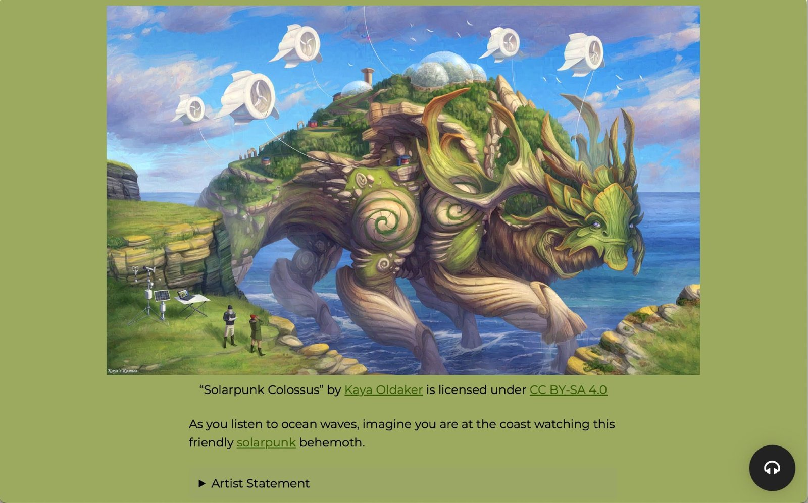
Alt text written when it was posted. -
Our website offers 100s of hours of continuous professional development for educators, healthcare workers, tech workers, and everyone.
Learn how your profession affects some of the most marginalized people in our society.
-
“progressive education isn’t just more engaging than what might be called regressive education; ... it’s also more effective — particularly with regard to the kinds of learning that matter most. And that remains true even after taking our cognitive architecture into account.” https://x.com/alfiekohn/status/1764637431863665078
-
“progressive ed. isn’t just more engaging than what might be called regressive ed.; ... it’s also more effective — particularly with regard to the kinds of learning that matter most. And that remains true even after taking our cognitive architecture into account.”
-
“It is deeply subversive to live proudly despite being living embodiments of our culture’s long standing ethical failings.”
—Maxfield SparrowHappy Weird Pride Day!
https://stimpunks.org/2024/02/10/weird-pride-day-is-march-4th-2024/
-
“It is deeply subversive to live proudly despite being living embodiments of our culture’s long standing ethical failings.”
—Maxfield SparrowHappy Weird Pride Day!
https://stimpunks.org/2024/02/10/weird-pride-day-is-march-4th-2024/
-
AURORA gave us a balm.
Every moment is succor.“The Conflict Of The Mind” is a soothing sensory pocket symphony.
-
A scene from our front page:
Elevate care as infrastructure.
We need a counterculture of care.
“Bread and roses” are what the humans involved in care—the patient and the clinician—want from healthcare.
Stimpunks exists because our systems effectively don’t.
-
🐇🕳️🌈 Down the Rabbit Hole: We’ve Got Space for You
-
🐇🕳️🌈 Down the Rabbit Hole: We’ve Got Space for You
-
What should we add to our Weird Pride Day playlist?
https://open.spotify.com/playlist/17Beqp27Cog29Hn7o5Yln0?si=7102f24aeca64ed4
-
What should we add to our Weird Pride Day playlist?
https://open.spotify.com/playlist/17Beqp27Cog29Hn7o5Yln0?si=7102f24aeca64ed4
-
It seems appropriate that we are facilitating a seminar on neurodiversity & gender at a public college on Weird Pride Day, which is tomorrow.
The course we developed is open & free.
Neurodiversity & Gender: Queer & Neurodivergent Liberation are Entwined
-
It seems appropriate that we are facilitating a seminar on neurodiversity and gender at a public college on Weird Pride Day, which is tomorrow.
The course we developed is open and free.
Neurodiversity and Gender: Queer and Neurodivergent Liberation are Entwined
-
Yay!
We have some of Farimah's art on our front page.
-
“I think being weird is just embracing yourself.”
—Mychal ThreetsWeird Pride Day is March 4th.
Weird Pride is the refusal to be ashamed of things people find ‘weird’.
Weird Pride is an important message for people to hear right now.
Join us.
https://stimpunks.org/2024/02/10/weird-pride-day-is-march-4th-2024/
-
“I think being weird is just embracing yourself.”
—Mychal ThreetsWeird Pride Day is March 4th.
Weird Pride is the refusal to be ashamed of things people find ‘weird’.
Weird Pride is an important message for people to hear right now.
Join us in celebration.
https://stimpunks.org/2024/02/10/weird-pride-day-is-march-4th-2024/
-
“I know who they are and what they have done to my people.”
—Nina Simone
-
“I know who they are and what they have done to my people.”
—Nina Simone
-
The First Rule of Punk: Be Yourself
Our Second Rule of Punk: Reframe
When we reframe, we perceive others such that they too can be themselves.
-
Stimpunks Learning Space offers community & space for passion-based, human-centered learning with purpose.
Our learners collaborate on distributed, multiage, cross-disciplinary teams with a neurodiverse array of creatives doing work that impacts community.
https://stimpunks.org/space/ -
Stimpunks Learning Space offers community and space for passion-based, human-centered learning with purpose.
Our learners collaborate on distributed, multiage, cross-disciplinary teams with a neurodiverse array of creatives doing work that impacts community.
-
Great thread. https://t.co/VJ06KU1Sz2
-
With all the hate against our loved neurodivergent, disabled, and queer people, we really could use a Weird Pride celebration that brings us all together under the big umbrella of Weird.
Weird Pride Day is March 4th. That’s in a week.
https://stimpunks.org/2024/02/10/weird-pride-day-is-march-4th-2024/
-
Oops. Wrong link. Here's the one for this year.
https://stimpunks.org/2024/02/10/weird-pride-day-is-march-4th-2024/
-
With all the hate against our loved neurodivergent, disabled, and queer people, we really could use a Weird Pride celebration that brings us all together under the big umbrella of Weird.
Weird Pride Day is March 4th. That’s in a week.
https://stimpunks.org/2023/03/03/weird-pride-day-is-march-4th/
-
Neurodiversity is where science & philosophy meet intersectionality & embodiment & get improved.
Neurodiversity brings voice into empirical constructs & translates voice into academic comprehension.
Neurodiversity is highly interdisciplinary & syncretic.
https://stimpunks.org/2024/02/17/neurodiversity-discourse-is-where-we-feel-at-home-because/ -
Neurodiversity is where science and philosophy meet intersectionality and embodiment and get improved.
Neurodiversity brings voice into empirical constructs and translates voice into academic comprehension.
Neurodiversity is highly interdisciplinary and syncretic.
https://stimpunks.org/2024/02/17/neurodiversity-discourse-is-where-we-feel-at-home-because/
-
There are over eight hundred and fifty pages to explore in our encyclopedia of disability and difference.
We are building a global knowledge commons, at the edges.
Our glossary, library, courses, and field guide are vast.
-
There are over eight hundred and fifty pages to explore in our encyclopedia of disability and difference.
We are building a global knowledge commons, at the edges.
Our glossary, library, courses, and field guide are vast.
-
The Four Stages of Loving Mistakes
Learner safety and iterative cultures go great together.
https://stimpunks.org/2024/02/25/the-four-stages-of-loving-mistakes/
-
“Stimpunks is a treasure trove of everything important to the neurodivergent and disabled community.”
“Your site is just a huge rabbit warren of amazingness, I love it!”
“There is no more crucial web resource out there..."
—Feedback from readers
-
“Stimpunks is a treasure trove of everything important to the neurodivergent and disabled community.”
“Your site is just a huge rabbit warren of amazingness, I love it!”
“There is no more crucial web resource out there than what they are doing.”
—Feedback from readers
-
Our front page has been thoroughly revamped using our latest rules and patterns for scrollytelling.
-
Our front page has been thoroughly revamped using our latest rules and patterns for scrollytelling.
-
@autisticrealms @TomGree67618999 We can do AI-generated Thai translations of some of our pieces. We'd love to translate into every language, but the costs are prohibitive for our site as large as ours.
I'll queue up some burnout and monotropism pieces for Thai translation.
-
I am rewatching “Black Clover” so I can experience a band of misfits come together as a team by overcoming toxic conditioning and developing acceptance & learner safety, their spiky profiles combining to form a diverse competency network.
https://stimpunks.org/glossary/spiky-profile/
https://stimpunks.org/glossary/competency-network/ -
@zeldman.bsky.social, check out what we’re attempting on https://stimpunks.org/ regarding cognitive accessibility.
Accordions labelled “What is…” provide definitions, context, and further reading.
Accordions labelled “In other words…” explain things in plain language with the help of AI.
-
We added quotes from this to our AI glossary page.
https://stimpunks.org/glossary/artificial-intelligence/
I (Ryan) like Dolson's suggestion: "the media library needs to store an image description; but this shouldn’t automatically be considered the alt attribute."
-
This experimental piece leads with a very dense passage that uses specialist language. Terms are linked to our glossary.
We fed the passage with links to AI several times and blended the output, resulting in an “unpacked” plain language version.
-
This experimental piece leads with a very dense passage that uses specialist language from multiple semiotic domains. Terms are linked to our glossary.
We fed the passage with links to AI several times and blended the output, resulting in an “unpacked” version.
-
Neurodiversity discourse is where we feel at home, because…
Neurodiversity is where science and philosophy meet intersectionality and embodiment and get improved.
Neurodiversity brings voice into empirical constructs and translates voice into academia.
https://stimpunks.org/2024/02/17/neurodiversity-discourse-is-where-we-feel-at-home-because/
-
Neurodiversity discourse is where we feel at home, because…
Neurodiversity is where science and philosophy meet intersectionality and embodiment and get improved.
Neurodiversity brings voice into empirical constructs and translates voice into academic comprehension.
https://stimpunks.org/2024/02/17/neurodiversity-discourse-is-where-we-feel-at-home-because/
-
A couple statements I (Ryan) am trying out:
- Neurodiversity is where science and philosophy meet intersectionality and embodiment and get improved.
- Neurodiversity brings voice into empirical constructs and translates voice into academic comprehension. -
@Richard_Amm That's really cool. /ryan
-
“Hegemonic neuronormative domination, in other words, is a key problem of our time.”
—Empire of Normality: Neurodiversity and Capitalism by Robert Chapman
“Empire of Normality” is an important book necessary to our times.
https://www.plutobooks.com/9780745348667/empire-of-normality/
-
“Hegemonic neuronormative domination, in other words, is a key problem of our time.”
—Empire of Normality: Neurodiversity and Capitalism by Robert Chapman“Empire of Normality” is an important book necessary to our times.
https://www.plutobooks.com/9780745348667/empire-of-normality/
-
“This dehumanization is so widespread that it seems to be an intrinsic aspect of normality – an accepted and acceptable way to view the bodies, minds, and lives of autistic people, or of any people who consistently breach the unwritten rules of normality.”
https://stimpunks.org/together/ -
“This dehumanization is so widespread that it seems to be an intrinsic aspect of normality – an accepted and acceptable way to view the bodies, minds, and lives of autistic people, or of any people who consistently breach the unwritten rules of normality.”
-
The forces of neuronormativity feel overwhelming in this age of mass behaviorism and unvarnished eugenics.
Against that tide, we embrace our weird potentials. We neuroqueer the social world.
Weird Pride Day is March 4th 2024.
Join us in celebration.
https://stimpunks.org/2024/02/10/weird-pride-day-is-march-4th-2024/
-
The forces of neuronormativity feel overwhelming in this age of mass behaviorism and unvarnished eugenics.
Against that tide, we embrace our weird potentials. We neuroqueer the social world.
Weird Pride Day is March 4th 2024.
Join us in celebration.
https://stimpunks.org/2024/02/10/weird-pride-day-is-march-4th-2024/
-
The rules for their experiment very much capture the soul of CHAMPS.
https://stimpunks.org/2023/03/02/champs-and-the-compliance-classroom/ https://x.com/Spectrum0Gaming/status/1755986519376978189
-
@autisticrealms @kim_belonging @PsychToday @irasocol We updated our Belonging glossary page with quotes on Belonging and Home.
-
@autisticrealms @kim_belonging @PsychToday Thanks. I (Ryan) am reminded of @irasocol's "home of opportunity".
"A place that is relentlessly safe, that is both calming and exciting, that offers unconditional love, and that offers boundless opportunity."
https://irasocol.medium.com/you-must-see-your-school-as-a-home-of-opportunity-6c7532b43e6f
-
From our glossary:
- Diversity (https://stimpunks.org/glossary/diversity/)
- Equity (https://stimpunks.org/glossary/equity/)
- Inclusion (https://stimpunks.org/glossary/inclusion/)
- Belonging (https://stimpunks.org/glossary/belonging/)
- Pluralism (https://stimpunks.org/glossary/pluralism/) -
From our glossary:
- Diversity (https://stimpunks.org/glossary/diversity/)
- Equity (https://stimpunks.org/glossary/equity/)
- Inclusion (https://stimpunks.org/glossary/inclusion/)
- Belonging (https://stimpunks.org/glossary/belonging/)
- Pluralism (https://stimpunks.org/glossary/pluralism/) -
Our “Respectability Politics” glossary page has a new section called “The biggest barrier is niceness.”
-
Our “Respectability Politics” glossary page has a new section called “The biggest barrier is niceness.”
-
The nonprofit professionals who consult us tell us we're unique. They tell us we're tearing down walls in philanthropy.
Your donations directly assist some of the most marginalized people in our society. We handle the legal and tax compliance.
-
The nonprofit professionals who consult us tell us we're unique. They tell us we're tearing down walls in philanthropy.
Your donations directly assist some of the most marginalized people in our society. We handle the vetting. We handle the legal and tax compliance.
-
On our website, accordions labelled “What is…” provide definitions, context, and further reading.
Accordions labelled “In other words…” explain things in different ways, including easy read, one idea per line, and plain language summaries.
-
In our latest scrollytelling journey, we get personal, we get feisty, and we get punk rock about it. We celebrate neurodiversity, disability justice, queer pride, and chosen family while making it clear that:
- We are not okay.
- You are killing us. -
In our latest scrollytelling journey, we get personal, we get feisty, and we get punk rock about it. We celebrate neurodiversity, disability justice, pluralism, weird pride, queer pride, and chosen family while making it clear that:
- We are not okay.
- You are killing us. -
“We have autistic children who need us to support them as architects of their own liberation.”
—Lydia X. Z. Brown
-
“We have autistic children who need us to support them as architects of their own liberation.”
—Lydia X. Z. Brown -
“Penguin Pebbling is a little exchange between two people to show that they care & want to build a meaningful connection.”
Our Pebble Board collects penguin pebbles from our community. Art, music, fidgets, fractals, infographics, sharks, lubricant, ...
-
“Penguin Pebbling is a little exchange between two people to show that they care & want to build a meaningful connection.”
Our Pebble Board collects penguin pebbles from our community. Art, music, dance, quotes, fidgets, fractals, infographics, fandom, sharks, lubricant, ...
-
New glossary page: Self-Organizing
-
New glossary page: Open Space
-
New glossary page: Open Space
-
New glossary page: Self-Organizing
-
New glossary page: Neuroaffirming
-
New glossary page: Dolphining
-
New glossary page: Dolphining
-
Does anyone have a more precise origin for the term “neurospicy” than “it emerged from TikTok”?
New glossary page: Neurospicy
-
Help out this friend of Stimpunks. https://x.com/SydneyLaShaun/status/1748362673836974155
-
Are we teaching care or control?
-
New section of our front page:
📼 Bricolage, Remixing, Constructionism, and Pastiche: Behind Our Punk Rock Research-Storytelling
-
New section of our front page:
📼 Bricolage, Remixing, Constructionism, and Pastiche: Behind Our Punk Rock Research-Storytelling
-
@mbrobergmoffitt.bsky.social
We started a "Food Aversion" glossary page featuring your work.
What resources, quotes should we add?
-
Word to watch: Neuronormativity
We’re trying to keep up with the conversation around neuronormativity, updating our glossary as we go. What resources should we include?
-
Education Access: We’ve Turned Classrooms Into a Hell for Neurodivergence
https://stimpunks.org/access/education/
#neurodiversity #education
-
Education Access: We’ve Turned Classrooms Into a Hell for Neurodivergence
-
Did you know that overwhelming majorities of Deaf, Blind, Autistic & Disabled people prefer Identity-First Language & resent the term “special needs”?
Learn why in these 2 pieces.
https://stimpunks.org/language/
https://stimpunks.org/glossary/special/Language is also a place of struggle. —bell hooks
-
Did you know that overwhelming majorities of Deaf, Blind, Autistic, and Disabled people prefer Identity-First Language and resent the term “special needs”?
Learn why in these two pieces.
https://stimpunks.org/language/
https://stimpunks.org/glossary/special/“Language is also a place of struggle.” —bell hooks
-
Thank you for that. We're fans of your work.
-
On this page, we get personal, we get feisty, and we get punk rock about it. We celebrate neurodiversity, disability justice, pluralism, weird pride, queer pride, and chosen family while making it clear that:
- We are not okay.
- You are killing us. -
On this page, we get personal, we get feisty, and we get punk rock about it. We celebrate neurodiversity, disability justice, pluralism, weird pride, queer pride, and chosen family while making it clear that:
- We are not okay.
- You are killing us. -
New section featuring the words and music of Nina Simone:
😭 We know who they are and what they have done to our people.
https://stimpunks.org/together/#h-we-know-who-they-are-and-what-they-have-done-to-our-people
-
New section featuring the words and music of Nina Simone:
😭 We know who they are and what they have done to our people.
https://stimpunks.org/together/#h-we-know-who-they-are-and-what-they-have-done-to-our-people
-
Our Umbrella page is a celebration of those who helped us build the Stimpunks Umbrella as well as a showcase of the tools and philosophy we used to build it.
Our Umbrella: It Is Time to Celebrate Our Interdependence!
https://stimpunks.org/umbrella/ -
Our Umbrella page is a celebration of those who helped us build the Stimpunks Umbrella as well as a showcase of the tools and philosophy we used to build it.
Our Umbrella: It Is Time to Celebrate Our Interdependence!
https://stimpunks.org/umbrella/ -
We split our front page again.
The front page is now an intro to us and our scrollytelling style.
The rest is on a new page: “Take Them Together: Neurodiversity and Disability Justice”.
It’s punk AF.
-
🌈♿️ Take Them Together: Neurodiversity and Disability Justice
“I wanna see a feisty group of disabled people around the world.”
—Judith HeumannIn which we get punk rock about it.
-
🌈♿️ Take Them Together: Neurodiversity and Disability Justice
“I wanna see a feisty group of disabled people around the world.”
—Judith HeumannIn which we get punk rock about it.
-
Featured Artist: Adriel Jeremiah Wool Broadens Our Perspective on Perspective
-
Featured Artist: Adriel Jeremiah Wool Broadens Our Perspective on Perspective
-
@CovingtonEDU Many in our community dread cold-calling.
-
@Tinu BTW, we recently redesigned our front pages and feature quotes from you on 4 of them.
- https://stimpunks.org/
- https://stimpunks.org/umbrella/
- https://stimpunks.org/reframe/
- https://stimpunks.org/edges/ -
CrowDessa’s art at Key & Crow Studios tickles both our goth and solarpunk sensibilities. We love what they got going on. We just made our orders and recommend checking them out.
We’re looking forward to having these pieces in our pin and sticker books.
-
CrowDessa’s art at Key & Crow Studios tickles both our goth and solarpunk sensibilities. We love what they got going on. We just made our orders and recommend checking them out.
We’re looking forward to having these pieces in our pin and sticker books. -
I (Ryan) feel like we’ve found our stride with the latest revisions to our front page. It has old school blogging feels mixed with new school techniques. It is true to our infodumping roots while containing the overwhelm with accordions & color blocking.
-
We reframe out of the confines of the medical model and pathology paradigm and into the respectfully connected expanse of the biopsychosocial model and the Neurodiversity paradigm. We reframe from deficit ideology to structural ideology.
-
We reframe out of the confines of the medical model and pathology paradigm and into the respectfully connected expanse of the biopsychosocial model and the Neurodiversity paradigm. We reframe from deficit ideology to structural ideology.
-
“Self diagnosis is not just “valid” — it is liberatory. When we define our community ourselves and wrest our right to self-definition back from the systems that painted us as abnormal and sick, we are powerful, and free.”
—Dr. Devon Price
-
“Self diagnosis is not just “valid” — it is liberatory. When we define our community ourselves and wrest our right to self-definition back from the systems that painted us as abnormal and sick, we are powerful, and free.”
—Dr. Devon Price -
A Scrollytellying Journey Through the Rough Terrain of Lived Experience Punctuated with Art and Joy
-
1. Mutual Aid & Human-Centered Learning for Neurodivergent & Disabled People
2. Our Umbrella: It Is Time to Celebrate Our Interdependence!
3. Reframe Disability & Difference: We’re Going to Rewrite the Narratives
4. Happy Flappy: Let’s Bolster Against Stress & Pass Bodily Survival Knowledge Down -
New glossary page: Triple Empathy Problem
-
New glossary page: Neuronormativity
-
New glossary page: Experiential Learning
-
New glossary page: Neuronormativity
-
New glossary page: Experiential Learning
-
I (Ryan) subscribed, turned on notifications, and am exploring the channel. Thanks for introducing me to her work.
-
This video essay fits with our created serendipity, iteration, interdependence, experiential learning, toolbelt theory, competency network, neurodiVenture, objectivity, library economy, nature, burnout, and self-determination theory glossary pages.
-
Nice. This fits with our created serendipity, iteration, interdependence, experiential learning, toolbelt theory, competency network, neurodiVenture, objectivity, library economy, nature, burnout, and self-determination theory glossary pages.
-
Spectrum Gaming offers an “Anti-behaviourism Behaviour Management Policy” that is a practical introduction to helpful tools for supporting neurodivergent students.
We recommend it as a foundation for any school’s general MTSS policy.
https://stimpunks.org/2024/01/02/high-school-anti-behaviourism-behaviour-management-policy/
-
Spectrum Gaming offers an “Anti-behaviourism Behaviour Management Policy” that is a practical introduction to helpful tools for supporting neurodivergent students.
We recommend it as a foundation for any school’s general MTSS (Multi-Tiered System of Supports) policy.
https://stimpunks.org/2024/01/02/high-school-anti-behaviourism-behaviour-management-policy/
-
Does Playpen Sans capture the accessibility benefits of Comic Sans? If so, this feels like the casual handwriting font we’ve been waiting for.
It combines “the aesthetic form of something made by hand and the digital function of a professional typeface.”
-
Does Playpen Sans capture the accessibility benefits of Comic Sans? If so, this feels like the casual handwriting font we’ve been waiting for.
It combines “the aesthetic form of something made by hand and the digital function of a professional typeface.”
-
Octavia Butler’s “positive obsession” reminds us of special interests and monotropism.
https://stimpunks.org/2024/01/02/octavia-butler-on-positive-obsession/
-
Octavia Butler’s “positive obsession” reminds us of special interests and monotropism.
https://stimpunks.org/2024/01/02/octavia-butler-on-positive-obsession/
2023
-
This whole thing is very nicely organized and presented. I (Ryan) learned some things that will help with the signposting storytelling we do on our website.
-
This whole thing is very nicely organized and presented. I (Ryan) learned some things that will help with the signposting storytelling we do on our website.
-
This is such a compassionate, validating, and accessible guide. We will be recommending it in our community.
-
Thanks for sharing. This is such a compassionate, validating, and accessible guide. We will be recommending it in our community.
-
It is time to celebrate our interdependence!
-
I (Ryan) could have avoided a lot of school & career trouble over the years if I could stifle my "very grand emotions" once provoked by untruth & injustice. I become the canary compelled to speak up, especially when no one else will or can.
https://stimpunks.org/glossary/very-grand-emotions/
https://stimpunks.org/glossary/canary/ -
It’s getting cold, and shelters are often more harmful than helpful. They can be an especially bad fit for many neurodivergent people. Help out Amy if you can.
-
It’s getting cold, and shelters are often more harmful than helpful. They can be an especially bad fit for many neurodivergent people. Help out Amy if you can.
-
@CommonSenseSLT @autisticrealms @JoPavlopoulou @DrRuthMoyse @DivergentSLT @elly_chapple @AQuinnUnbroken @NDConnectionUK @BeaconHouseTeam @ChrisGPackham @PEDALCam @thepdaspace @AFNCCF @AT_Autism @Spectrum0Gaming @christinebydls @SEDSConnective @AutisticGirls_ @NAITScotland @thinkingautism @Tapestry_FSF @AnnMemmott @EmilioLees @RCSLTLearn @Autistic_Doc @AutisticDoctor @DoctorsAutistic Nice! We feature several of these resources on our "Neurodiversity, Disability, and Gaming" page.
-
@autisticrealms @CommonSenseSLT @JoPavlopoulou @DrRuthMoyse @DivergentSLT @elly_chapple @AQuinnUnbroken @NDConnectionUK @BeaconHouseTeam @ChrisGPackham @PEDALCam @thepdaspace @AFNCCF @AT_Autism @Spectrum0Gaming @christinebydls @SEDSConnective @AutisticGirls_ @NAITScotland @thinkingautism @Tapestry_FSF @AnnMemmott @EmilioLees @RCSLTLearn @Autistic_Doc @AutisticDoctor @DoctorsAutistic @ElaineMcgreevy I updated our Umbrella page with Bread and Roses.
-
Packed with flavor and nutrition. Steeped in lived experience. Spiced with spectacle. Made with agony and joy. Chew on our website.
-
Packed with flavor and nutrition. Steeped in lived experience. Spiced with spectacle. Made with agony and joy. Chew on our website.
-
Today is the day. Join us at Jingle All Our Ways. Details, tickets, and donations are available on the event page.
-
Today is the day. Join us at Jingle All Our Ways. Details, tickets, and donations are available on the event page.
-
We reframe out of the confines of the medical model and pathology paradigm and into the respectfully connected expanse of the biopsychosocial model and the neurodiversity paradigm. We reframe from deficit ideology to structural ideology.
-
It is time to celebrate our interdependence!
Scenes from our Umbrella page.
https://stimpunks.org/umbrella/
![Screenshot of a web page with six collapsed accordion bars in rainbow colours, reading: "Pluralism is our reality." "I am fighting for an interdependence that embraces need and tells the truth: no one does it on their own and the myth of independence is just that, a myth." "Self-care is birthed by and through community care." "Access intimacy is interdependence in action." "Everyone is causally interconnected with, interdependent with, and fundamentally the same as all other humans." "We need a counterculture of care." Below a rule, in large bold type: "The parts we need to survive are scattered All amongst us." credited to "Tinu Abayomi-Paul".](social/img/1735461881307926748-gbwzxphxuaavn2w.jpg)
Alt text written by Claude when the post moved here. -
It is time to celebrate our interdependence!
Scenes from our Umbrella page.
https://stimpunks.org/umbrella/
![• Pluralism is our reality. • I am fighting for an interdependence that embraces need and tells the truth: no one does it on their own and the myth of independence is just that, a myth. • Self-care is birthed by and through community care. • Access intimacy is interdependence in action. • Everyone is causally interconnected with, interdependent with, and fundamentally the same as all other humans. • We need a counterculture of care. The parts we need to survive are scattered All amongst us. Tinu Abayomi-Paul](social/img/bsky-01711220-0.jpg)
Alt text written when it was posted. -
Our benefit concert is this Sunday. Hope we can pull it off. Latest updates:
-
Our benefit concert is this Sunday. Hope we can pull it off. Latest updates:
-
Take the reframer’s journey.
Those who work their way through this course will have the understanding of neurodiversity, disability, neurodivergent learning, and neurodivergent ways of being needed to become the allies we need.
https://stimpunks.org/courses/reframe-disability-and-difference/
-
Take the reframer’s journey.
Those who work their way through this course will have the understanding of neurodiversity, disability, neurodivergent learning, and neurodivergent ways of being needed to become the allies we need.
https://stimpunks.org/courses/reframe-disability-and-difference/
-
We’re doing a benefit concert to support neurodivergent & disabled musicians this Sunday Dec. 17th. Tickets & sponsorships are available. Donations welcome.
Check out our event page & “Love Is Everything”, an inclusion song featuring nonspeaking singers.
-
We’re doing a benefit concert to support neurodivergent and disabled musicians this Sunday Dec. 17th. Tickets and sponsorships are available. Donations welcome.
Check out our event page and “Love Is Everything”, an inclusion song featuring nonspeaking singers.
-
@EmbraceAutism__ @autisticrealms @milton_damian @DoctorsAutistic https://stimpunks.org/2023/04/01/conquering-gaze-from-nowhere-meritocracy-myths-marked-bodies-and-spoiled-identities/
-
Am I on the level yet?
How did I do on your little test?
Get my brain to reset
Cause everything you say is static
Do I make a good pet?
Obey the commands or get the back of the hand
Cause the world wasn’t built for a brain like mine
Change my mind, change my mind, change my mind
https://youtu.be/fEM21kmPPik -
Cavendish Space: psychologically & sensory safe spaces suited to zone work, flow states, intermittent collaboration, and collaborative niche construction.
-
Cavendish Space: psychologically & sensory safe spaces suited to zone work, flow states, intermittent collaboration, and collaborative niche construction.
-
Scientism begets epistemic injustice. Traversing semiotic domains begets epistemic justice & created serendipity. Through epistemic justice we avoid the common traps of fundamental attribution error, triple empathy problem, & conquering gaze from nowhere.
-
Scientism begets epistemic injustice. Traversing semiotic domains begets epistemic justice and created serendipity. Through epistemic justice we avoid the common traps of fundamental attribution error, the triple empathy problem, and the conquering gaze from nowhere.
-
@autisticrealms @milton_damian @DoctorsAutistic I like how the triple empathy problem brings the difficulty of communicating between semiotic domains into the double empathy problem and notes the epistemic injustice of it all.
Related:
https://stimpunks.org/2023/11/22/on-the-problems-with-science-of-reading/
-
@CommonSenseSLT @autisticrealms @JoPavlopoulou @DrRuthMoyse @DivergentSLT @elly_chapple @AQuinnUnbroken @NDConnectionUK @BeaconHouseTeam @ChrisGPackham @PEDALCam @thepdaspace @AFNCCF @AT_Autism @Spectrum0Gaming @christinebydls @SEDSConnective @SheffieldLuke @AutisticDoctor @MrTs_NQTs This prompted me to add a new accordion to our front page.
“Autism + environment = outcome. Understanding the sensing and perceptual world of autistic people is central to understanding autism.”
-
A Neurobiological Basis for Progressive Education
Mary Helen Immordino-Yang’s work essentially provides the neurobiological basis for progressive education.
https://stimpunks.org/2023/12/10/a-neurobiological-basis-for-progressive-education/
-
Some of the things you’ll encounter on our front page:
- cat massages
- sick, dope, fire art
- lots of music
- sassy dances
- wolpertingers
- Zelda maps
- rainbow dragons
- flowerpunks
- fractals
- a rainbow shrimp visualizer
- screams into the void
- celebrations of interdependence -
New front page sections:
On the Language of Identity
https://stimpunks.org/#h-on-the-language-of-identityWe Ain’t Special
https://stimpunks.org/#h-we-ain-t-special -
Perhaps then enroll yourself in neurodiversity and disability studies 101 because you consistently talk over entire communities and movements who have been warning against what you practice in eloquent detail for many years. /ryan
-
Congrats to our allies at Human Restoration Project. It's hootenanny time.
-
Congrats to our allies at Human Restoration Project. It's hootenanny time. https://t.co/H6h3DrRZhE
-
- https://stimpunks.org/glossary/scientism/
- https://stimpunks.org/glossary/created-serendipity/
- https://stimpunks.org/glossary/fundamental-attribution-error/
- https://stimpunks.org/2023/04/01/conquering-gaze-from-nowhere-meritocracy-myths-marked-bodies-and-spoiled-identities/
- https://stimpunks.org/2023/11/22/on-the-problems-with-science-of-reading/ -
Draft thought: Scientism begets epistemic injustice. Semiotic domains beget epistemic justice & created serendipity. Through epistemic justice we avoid the common traps of fundamental attribution error & the conquering gaze from nowhere
- https://stimpunks.org/glossary/semiotic-domains/
- https://stimpunks.org/glossary/epistemic-injustice/ -
A fundamental problem w/ “Science of Reading” is also a problem w/ autism research. Scientism begets epistemic injustice. The behaviorist bent of ed. repeatedly churns out monsters of ed-tech that steal the credibility of science to rationalize ableism.
https://stimpunks.org/2023/11/22/on-the-problems-with-science-of-reading/
-
A fundamental problem with “Science of Reading” is also a problem with autism research. Scientism begets epistemic injustice. The behaviorist bent of ed. repeatedly churns out these monsters of ed-tech that steal the credibility of science to rationalize ableism.
https://stimpunks.org/2023/11/22/on-the-problems-with-science-of-reading/
-
We updated our Play glossary page with selections from “Diversity in Autistic Play: Autistic Adults' Experiences”.
https://www.liebertpub.com/doi/10.1089/aut.2023.0008
The study explores “flow states” and play quite a bit.
-
Here's our free and open course on Neurodiversity and Gender.
-
Here's our free and open course on Neurodiversity and Gender.
-
“Science of Reading” is an emerging and growing monster of ed-tech.
We’ve seen this sort of scientism before.
On the Problems with “Science of Reading”
https://stimpunks.org/2023/11/22/on-the-problems-with-science-of-reading/ -
What Is It like to Have a Gender Identity?
https://stimpunks.org/2023/12/03/what-is-it-like-to-have-a-gender-identity/
-
We updated our free and open course on neurodiversity and gender with selections from “What Is It like to Have a Gender Identity?” by @floralashes.bsky.social.
Thank you for this important and helpful paper, @floralashes.bsky.social. We recommend it to all.
https://stimpunks.org/2023/12/03/what-is-it-like-to-have-a-gender-identity/
-
@CommonSenseSLT @autisticrealms @JoPavlopoulou @DrRuthMoyse @DivergentSLT @elly_chapple @AQuinnUnbroken @NDConnectionUK @BeaconHouseTeam @ChrisGPackham @PEDALCam @thepdaspace @AFNCCF @AT_Autism @Spectrum0Gaming Thanks. Here's collected community writing on acceptance versus awareness:
-
Our front page is quite a journey through the art, music, and perspective of our community. It's one designed for skimming. Give it a skim-scroll for feels some time. We just did a big update that includes a rainbow shrimp visualizer and lots more.
-
Our front page is quite a journey through the art, music, and perspective of our community. It's one designed for skimming. Give it a skim-scroll for feels some time. We just did a big update that includes a rainbow shrimp visualizer and lots more art and music and quotations.
-
Thank you. We added quotes to our Diagnosis glossary page.
-
Human Restoration Project understands the importance of neurodiversity & disability in an era of mass behaviorism in education. They are true allies in the fight for the right to live & learn differently. Their vision for human-centered learning is compatible with us. https://t.co/l6aUh46suk
-
Human Restoration Project understands the importance of neurodiversity & disability in an era of mass behaviorism in education. They are true allies in the fight for the right to live & learn differently. Their vision for human-centered learning is compatible with us. Consider them this Giving Tues.
-
Check out our upcoming benefit concert supporting neurodivergent and disabled musicians, “Jingle All Our Ways”.
-
Check out our upcoming benefit concert supporting neurodivergent and disabled musicians, “Jingle All Our Ways”.
-
It’s Giving Tuesday.
Stimpunks is a 501(c)3 nonprofit by and for neurodivergent and disabled people. We believe that direct support to individuals is the most effective approach to helping our community.
Donate now.
-
It’s Giving Tuesday.
Stimpunks is a 501(c)3 nonprofit by and for neurodivergent and disabled people. We believe that direct support to individuals is the most effective approach to helping our community. Help us do direct giving to those who need it.
Donate now.
-
On the Problems with “Science of Reading”
The “Science of Reading” is not so scientific and not compatible with neurodiversity. Like behaviorism, it measures the surface, badly. It also steals the credibility of science to rationalize prior bigotries.
https://stimpunks.org/2023/11/22/on-the-problems-with-science-of-reading/
-
Our front page is a constantly growing, splitting, & changing thing. Give its current incarnation a skim-scroll for feels. Included is an outpouring of neurodivergent & disabled perspective, culture, pain, & joy featuring art & music from our community.
-
Our front page is a constantly growing, splitting, and changing thing. Give its current incarnation a skim-scroll for feels. Included is an outpouring of neurodivergent and disabled perspective, culture, pain, and joy featuring art and music from our community.
-
“Punk music is alive because there’s a need to belong and to not be marginalized.”
—Jessica Schwartz
Punk Was Created by All of Us
-
We Rebuild What You Destroy: A Celebration of The Linda Lindas and Punk DIY Ethos
-
We Rebuild What You Destroy: A Celebration of The Linda Lindas and Punk DIY Ethos
-
Love Is Everything: An Inclusion Song Featuring Nonspeaking Singers
https://stimpunks.org/2023/11/10/love-is-everything-an-inclusion-song-featuring-nonspeaking-singers/
-
It Take a Joyful Sound: New Wave, New Phrase, Neurodiversity
https://stimpunks.org/2023/11/08/it-take-a-joyful-sound-new-wave-new-phrase-neurodiversity/
-
It Take a Joyful Sound: New Wave, New Phrase, Neurodiversity
https://stimpunks.org/2023/11/08/it-take-a-joyful-sound-new-wave-new-phrase-neurodiversity/
-
Need resources to push back against behaviorism in your school? Here’s a stockpile.
-
“Love Is Everything (revisited)”, featuring nonspeaking singers, brings the feels and invites singing along, together.
https://www.reverbnation.com/eddierayband/song/31758489-love-is-everything-revisited
-
“Love Is Everything (revisited)”, featuring nonspeaking singers, brings the feels and invites singing along, together.
https://www.reverbnation.com/eddierayband/song/31758489-love-is-everything-revisited
-
Space Holders and Learner Safety
https://stimpunks.org/2023/11/01/space-holders-and-learner-safety/
-
“Care is not charity or kindness. Care is the deeply fraught, complex, abolitionist, political work of protecting one another and the planet.”
‘Educators must understand challenging behavior as a “collective public health reality.”’
-
Have you taken the Monotropism Questionnaire?
“Monotropism seeks to explain #autism in terms of attention distribution & interests.”
“#Monotropism provides a far more comprehensive explanation for autistic cognition than any of its competitors.”
-
Need ammo to push back against behaviorism in your school? Here’s a resource stockpile.
-
An appreciation of emergence with fractal art from our community.
-
“Care work makes all other work possible.”
-
Jingle All Our Ways: Benefit to Build Community
We’re doing a fundraising campaign culminating in a concert in the Austin, TX, USA area on December 17th. All funds go to neurodivergent and disabled musicians. Read the story here:
-
“We can see that a lot of the social rules around gender are bullshit, basically.”
—Charlie Garcia-Spiegel as quoted in “We're Not Broken: Changing the Autism Conversation”
https://stimpunks.org/courses/neurodiversity-and-gender/
#neurodiversity #gender #queer
-
Autistic People’s Experience of Empathy: Autistic People Have, on Average, a Heightened Affective Empathic Response Relative to Non-Autistic People
#autism #empathy
-
“Parallel play was observed as one of the most frequent play states for autistic children in free play settings.”
#autism #play #monotropism #flow
-
We updated our “Polyvagal Theory” glossary page with a selection from “A neurodiversity paradigm lens on polyvagal theory — Neurodiverse Connection”.
- https://stimpunks.org/glossary/polyvagal-theory/
- https://ndconnection.co.uk/blog/neurodiversity-paradigm -
We love this new resource on Belonging in Schools. It very much aligns with our advocacy. We worked quotes from it into our site.
Belonging in School https://stimpunks.org/2023/09/26/belonging-in-school/ https://x.com/DuncanAstle/status/1705133521436569967
-
@SueReviews Love this. We worked quotes from it into our site.
-
Sensory Kit on a Clip
-
Participatory research requires us to participate. Here are current studies, questionnaires, and calls for papers we recommend joining.
-
“What is a punk band, after all, but an affinity group with guitars?”
-
We placed songs from our “Chronic Neurodivergent Depressed Queer Punk” playlist throughout http://stimpunks.org, tying them into our advocacy and research-storytelling. They collectively serve as a "Public Service Announcement, with guitar."
-
Changelog: For an autistic person it's about finding the right niche
https://stimpunks.org/2023/09/10/changelog-for-an-autistic-person-its-about-finding-the-right-niche/
-
@ElaineMcgreevy Yes! We updated a few pages with that quote:
- https://stimpunks.org/glossary/niche-construction/
- https://stimpunks.org/space/cavendish/
- https://stimpunks.org/glossary/cavendish-space/ -
We’ve turned classrooms into a hell for neurodivergence. “School refusal” obscures that. “School-induced anxiety” acknowledges that. “School refusal” is rooted in deficit ideology. “School-induced anxiety” is rooted in structural ideology.
-
“Embracing Autistic Children’s Monotropic Flow States” by @autisticrealms is clear, organized, relatable, and concise. It’s five well-spent minutes learning about two important concepts that transform school for neurodivergent students.
https://ndconnection.co.uk/blog/embracing-autistic-childrens-monotropic-flow-state
-
@ivan007 @ElaineMcgreevy Good point regarding agency. I (@rboren) will add a line or two acknowledging the agency and punkness of refusal and tie it into the quote from Chapman.
-
We reframe “school refusal” as “school-induced anxiety”.
“…absent pupils are not rejecting learning but rejecting a setting that makes it impossible for them to learn.”
We need to understand neurodivergent students & change the circumstances.
https://stimpunks.org/glossary/school-induced-anxiety/
#edchat
-
Changelog: “Accommodation” Implies a Sort of Permission
https://stimpunks.org/2023/09/06/changelog-accommodation-implies-a-sort-of-permission/
-
Changelog: Mass school refusal among neurodivergent children is an early form of resistance to neuronormativity.
-
@DrRJChapman Agreed. We quote you on our School-Induced Anxiety page, if that's okay.
-
Interdependence, Access Intimacy, and Crip Technoscience: Disabled people do really cool things with language if people would pay attention.
-
"There is no standard way of being, or knowing, or perceiving.
"Variation is of the essence.
"There are an infinite number of ways of being and doing and knowing and remembering.
"And there are an infinite number of ways of being healthy."
--Oliver Sacks https://x.com/OliverSacks/status/1696969301897679075
-
The nonprofit professionals who consult us tell us we’re unique. They tell us we’re tearing down walls in philanthropy.
Here’s our pitch deck.
-
The latest video from The Leftist Cooks combines rhizomatic thinking and punk.
Quotes and notes here:
No Competition of Hierarchies Should Prevail: Identity Politics, Strategic Essentialism, Rhizomes, Punk, and Oppression Olympics
https://stimpunks.org/2023/08/29/no-competition-of-hierarchies-should-prevail-identity-politics-strategic-essentialism-rhizomes-punk-and-oppression-olympics/ -
Our “Monotropism Questionnaire” page is getting a spike in traffic today. Take the questionnaire and learn about attention tunnels, flow states, neurodivergent people, and yourself.
https://stimpunks.org/monotropism-questionnaire/
#autism #ADHD #monotropism #MonotropismQuestionnaire
-
Stimpunks Executive Director Chelsea and Creative Director Ryan will be live with indiedrummercollective on Instagram at 7PM US Pacific. We’ll be sharing our stories with host dvoid_silver.
https://stimpunks.org/event/indie-drummer-collective/
-
We added this to our "Participate" page.
https://stimpunks.org/research/participate/ https://x.com/aaspireproject/status/1694449417083039766
-
Changelog: Equity is not compatible with deficit ideology because the function of deficit ideology is to obscure the actual causes of disparities.
#DEIB
-
"We’re all experiencing trauma in some way, shape, or form, so how do we change our community to be responsive to that?"
This! https://t.co/f9SOizCBfI
-
The Double Empathy Problem in the Workplace: More Autistic Employees Accurately Interpret the Behavior of an Autistic Employee Than Non-Autistic People
#autism #DoubleEmpathyProblem
-
We created a "Monotropism Questionnaire” landing page.
https://stimpunks.org/monotropism-questionnaire/
One of the motivations for creating this page is to translate the questions & supporting info into a bunch of languages.
Before we pay for translations, feedback & iteration on the page is welcome.
-
Three Therapeutic Approaches to Supporting Autistic People in Healthcare Settings
#autism #healthcare #SensoryOverload
-
Participatory research requires us to participate. We just added a new page on our website that lists current studies, questionnaires, and calls for papers we recommend joining.
https://stimpunks.org/research/participate/
What should we add to this list? All locales welcome.
-
“Ableism is what makes all other “isms” effective.”
—@Imani_BarbarinHere are a few favorite @Imani_Barbarin quotes regarding ableism along with related history from our glossary.
https://stimpunks.org/2023/08/21/changelog-ableism-is-what-makes-all-other-isms-effective/
#ableism
-
Neurodiversity and Solarpunk are two of the most powerful ideas of our age, and their time is now.
https://stimpunks.org/2023/08/15/solarpunk-aims-to-cancel-the-apocalypse/
#neurodiversity #solarpunk
-
“Language is also a place of struggle.”
—bell hooks“Thinking differently requires speaking differently.“
—George Lakoff“Develop a language in which they can both understand and challenge the world in which they live.”
—Henry A Giroux -
IowaWTF: We are living in a paradigm shift in the world of activism and advocacy, and the youth are here to change things up whether you like it or not.
#edchat
-
Solarpunk aims to cancel the apocalypse.
https://stimpunks.org/2023/08/15/solarpunk-aims-to-cancel-the-apocalypse/
#solarpunk #neurodiversity
-
We enjoyed the “Rebellion by Design: Antiracism and UDL” track facilitated by @FritzTesha at the Conference to Restore Humanity 2023, hosted by @HumResPro. It inspired a few pieces, and counting.
- https://stimpunks.org/2023/08/04/changelog-engage-with-the-epistemic-disruptions-that-are-necessary-if-we-are-to-change-the-world/
- https://stimpunks.org/2023/08/11/the-act-of-listening-work-that-does-not-honor-what-a-community-says-is-colonial/
- https://stimpunks.org/2023/08/14/exceeding-least-restrictive-environment-with-niche-construction-and-the-honor-of-legibility/ -
Exceeding Least Restrictive Environment with Niche Construction and the Honor of Legibility
-
Changelog: Presume Competence. “Nonspeaking” or “Nonverbal”?
https://stimpunks.org/2023/08/12/changelog-presume-competence-nonspeaking-or-nonverbal/
-
You don’t want to make communication an elite thing.
https://stimpunks.org/2023/08/11/you-dont-want-to-make-communication-an-elite-thing/
-
Autism Professionals: Have you heard of monotropism?
https://stimpunks.org/2023/08/11/autism-professionals-have-you-heard-of-monotropism/
#monotropism #Autism
-
The Act of Listening: Work that does not honor what a community says is colonial.
-
Meerkat Mode, Monotropic Split, and Monotropic Spiral
https://stimpunks.org/2023/08/09/meerkat-mode-monotropic-split-and-monotropic-spiral/
#monotropism
-
Neurodiverse Connection, @NDConnectionUK, is such a great resource. Well-written, well-sourced, well-designed.
"We elevate the voices of neurodivergent people to help them flourish and thrive."
-
We don’t prepare students for a world of potential oppression by oppressing them. “Better Get Used to It” is violence.
-
Learning Is a Series of Iterations, Mercy Is Necessary to Learner Safety
-
Changelog: Engage With the Epistemic Disruptions That Are Necessary if We Are to Change the World
-
Changelog: We Don’t Need Your Growth Mindset Interventions
https://stimpunks.org/2023/08/03/changelog-we-dont-need-your-growth-mindset-interventions/
-
Changelog: The Cult of Compliance 33 Years After the ADA
https://stimpunks.org/2023/08/03/changelog-the-cult-of-compliance-33-years-after-the-ada/
-
We added a quote from this study to "We Don’t Need Your Mindset Marketing: Education Technology and the New Behaviorism".
https://stimpunks.org/access/education/new-behaviorism/ https://x.com/alfiekohn/status/1686346614435196928
-
@KristenBott @WalkerSensei Agreed. We use that quote in the "Divergent From What?" section of our glossary page.
-
We updated our piece on the Monotropism Questionnaire’s viral moment with important messages from the authors of the questionnaire on “what it is, where it came from, and what we want to do with it in the future.”
https://stimpunks.org/2023/07/22/the-monotropism-questionnaire-is-going-viral/
#monotropism #MonotropismQuestionnaire
-
Changelog: Autistic Play at Forest School
“…monotropism can be very effective in enabling forest school practitioners to comprehend the rationales behind autistic play behaviours…”
—Autistic Play at Forest School
https://stimpunks.org/2023/07/23/changelog-autistic-play-at-forest-school/
#play #autism #education #monotropism
-
Changelog: Nature and Multiple Multisensory Rooms
“One of the most powerful features of a multisensory room is the ability to control the lighting.”
—Multiple Multisensory Rooms: Myth Busting the Magic
https://stimpunks.org/2023/07/23/changelog-nature-and-multiple-multisensory-rooms/
-
The Monotropism Questionnaire Is Going Viral
We gathered some context and helpful links to monotropism’s viral moment.
https://stimpunks.org/2023/07/22/the-monotropism-questionnaire-is-going-viral/
#monotropism #MonotropismQuestionnaire #autism
-
Stimpunks Invites You to Join Us Online at the Conference to Restore Humanity 2023 on July 24th
-
@AmyCatsSLT @EmilioLees @ElaineMcgreevy @HollytheOT @MollyBD_slt @ChloeOnSLT Our Autism glossary page collects community resources.
-
Stimpunks is already in the conference Discord watching the first flipped keynote. Having the option of dropping in ahead of the first day to get oriented is part of the accessible charm of Conference to Restore Humanity. https://t.co/usHCmH9Eku
-
“The moment we become an expert on someone else is the moment we allow our biases to rule in power. And, it takes away honor.”
—@FritzTesha
That line really resonates with us. https://t.co/oCHqBV9dpT
-
Stimpunks will be attending this track.
We quote the work of @FritzTesha on our Universal Design for Learning glossary page.
https://stimpunks.org/glossary/universal-design-for-learning/ https://t.co/BMGAXivhjJ
-
@RMcElhenney @TheSunnyPodcast Welcome to the community. Our website has lots of vocabulary for discovering self.
-
“Existing as an autistic person, therefore, is almost a forceful demonstration in agency.”
—Marianthi Kourti
We reframe to demonstrate agency.
https://stimpunks.org/reframe/
#neurodiversity #disability #autism
-
“…if we’re going to rewrite the narratives, then there’s no reason to hold ourselves back from our most radical and defiant rewritings.”
—Lydia X. Z. Brown
We’re going to rewrite the narratives.
-
We made lots of progress on our “Neurodiversity and Gender” course.
https://stimpunks.org/courses/neurodiversity-and-gender/
#neurodiversity #gender
-
This Is My Space: Collaborative Niche Construction in Psychologically Safe Space
#education #EdChat #neurodiversity #PsychologicalSafety
-
@CovingtonEDU Likewise "objectivity".
-
"But co-production isn’t extra work, it is the work." https://x.com/ElaineMcgreevy/status/1677321030417694721
-
“It is deeply subversive to live proudly despite being living embodiments of our culture’s long standing ethical failings.”
—Maxfield Sparrow
Live proudly. Reframe with us.
https://stimpunks.org/reframe/
#neurodiversity #disability
-
This Is Not About Me: The Journey from Patient to Agent and the Fight for Educational Inclusion
Jordyn’s hard fought quest for educational inclusion sent us on several nostalgia trips as her story paralleled our stories.
#education #neurodiversity
-
Our community thrives on collaborative niche construction in Cavendish Space.
https://stimpunks.org/space/cavendish/
#education #neurodiversity #disability #EdChat #CavendishSpace #NicheConstruction
-
“Being in one’s own company is not lonely. What is lonely is existing in a world that tries little to understand you.”
Lone Wolfing: The Joys of Autistic Solitude
https://stimpunks.org/2023/06/18/lone-wolfing-the-joys-of-autistic-solitude/
#ActuallyAutistic
Alt text written by Claude when the post moved here. -
We’re working on a “Neurodiversity and Gender” course.
- Neurodiversity and Gender
- Gender Copia and Bricolage
- Neurodivergence, Gender, and Minority Stress
- Autigender and Neuroqueer
- Chosen Family
- Queer
- Bathroom Accesshttps://stimpunks.org/courses/neurodiversity-and-gender/
#neurodiversity #gender
-
Lone Wolfing: The Joys of Autistic Solitude
https://stimpunks.org/2023/06/18/lone-wolfing-the-joys-of-autistic-solitude/
#AutisticPrideDay
-
Here's how we do purposefully designed online education. It's not at all like Zoom school. It's like the distributed open source communities that build the internet.
-
Purposefully designed online education spaces that are accessible, sustainable, and representative of the communities they serve…
https://stimpunks.org/space/online/
#edChat #edTech
-
I’ve experienced several moments of burnout in my life and career. Being something that I neurologically am not is exhausting.
https://stimpunks.org/burnout/
#ActuallyAutistic
-
Monotropism and the Double Empathy Problem are two of the biggest and most important things to happen to autism research. Get in touch with modern autism science in this issue.
#autism #monotropism #DoubleEmpathyProblem
-
@CommonSenseSLT @JoPavlopoulou @NAITScotland We love this talk and quote from it on our CBT glossary page.
https://stimpunks.org/glossary/cognitive-behavioral-therapy/
-
Stimpunks Podcast Episode 3: On Jordan Neely and Support Systems
In this episode, Inna reflects on what happens when a neurodivergent person’s support system goes away and society fails them.
https://stimpunks.org/2023/05/22/stimpunks-podcast-episode-3-on-jordan-neely-and-support-systems/
#disability #neurodiversity
-
Stimpunks Community Art: “Mobile – Home” by Heike Blakley
A sense of dread washes over me each time my phone rings and is quickly followed by anxiety due to time frame response.
What it feels like answering my phone.
https://stimpunks.org/2023/05/21/stimpunks-community-art-mobile-home-by-heike-blakley/

Alt text written by Claude when the post moved here. -
@AnnMemmott Parent Child Interaction Therapy is one of the worst therapies we ever experienced. Utterly ignorant of autism and neurodiversity and thoroughly incompatible with us.
-
We now have a badge for those who have been awarded a Stimpunks Creator Grant. If you received a grant from us, feel free to use this badge on your socials, website, and print materials.
To request a creator grant, visit https://stimpunks.org/creators/
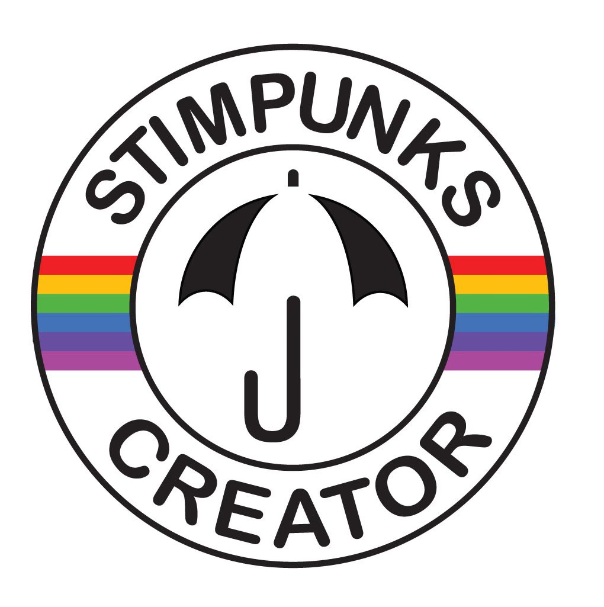
Alt text written by Claude when the post moved here. -
Stimpunks Guide to the NeurodiVerse Issue #4: From an Ivory Tower Built on Sand to Open, Participatory, Emancipatory, Activist Research https://stimpunks.org/2023/05/15/stimpunks-guide-to-the-neurodiverse-issue-4-from-an-ivory-tower-built-on-sand-to-open-participatory-emancipatory-activist-research/
-
The page for our learning space lists upcoming events and outlines our pilosophy and pedagogy, including the 3 archetypal learning spaces, constructionism, intrinsic motivation & flow, tool belt theory, & more.
#education #edChat
-
Our easter egg page is full of punk music and philosophy.
To quote The Clash: This is a public service announcement…with guitar!
Hint: rock ’n’ scroll to the horns.
We're going to the punk rawk show.
-
Our comprehensive Coping Guide covers six areas:
https://stimpunks.org/fieldguide/coping/
- Sensory Kit
- Pillows
- Articulation & Surfaces
- Sitting, Standing, Walking, Rolling
- Reaching, Gripping, Fastening, Finding, Opening, Lighting
- Dressing, Hydrating, Hygiene -
@CommonSenseSLT Stealing the credibility of science to rationalize violence against our loved people in grossly inflammatory & uncaring ways is his thing. We wish we could tune him out, but he & his ilk pop up everywhere because #researchEd is full of vileness masquerading as objectivity.
-
Stimpunks Guide to the NeurodiVerse Issue #3: Mental Health and Epistemic Justice https://stimpunks.org/2023/05/04/stimpunks-guide-to-the-neurodiverse-issue-3-mental-health-and-epistemic-justice/
-
Here’s how our community does human-centered education compatible with neurodiversity and the social model of disability.
#education
-
@politiquestions @autisticrealms Thanks for the history and insight. We'll go with locutions for now while staying open to other phrases emerging.
-
@politiquestions @autisticrealms I updated our piece to add a note on the history of "love languages" and to use locutions instead to preserve the alliteration. But, does locutions have the same problem as languages?
We'll update the header image once we decide on an alternative.
https://stimpunks.org/2022/01/22/the-five-neurodivergent-love-languages-2/
-
@autisticrealms @politiquestions We try to frame in terms of relationship accommodations & emotional bids in our piece, but those don’t quite capture what “love languages” says. It’s a good phrase ruined by baggage.
Maybe keep love but swap out languages:
- love expressions
- love articulations
- love dialects -
@politiquestions @autisticrealms We can try to help popularize an alternative term. I'm not sure what that is. Suggestions welcome.
-
@politiquestions @autisticrealms True. The phrase has become so broadly used beyond those origins that we've given in and try to claim it for healthy uses. Don't know if that's the right approach, but it has so much currency.
-
Stimpunks Podcast Episode 2: Learning from Rockets https://stimpunks.org/2023/04/28/stimpunks-podcast-episode-2-learning-from-rockets/
-
@MarcusLuther6 "Now we have the opportunity & understanding to move from emergency pandemic remote school and its pantomime of learning to purposefully designed online education spaces that are accessible, sustainable, and representative of the communities they serve."
https://writing.humanrestorationproject.org/conference-to-restore-humanity-the-need/
-
@CovingtonEDU @MarcusLuther6 @scottmpetri Conference to Restore Humanity included our community of neurodivergent and disabled people like no other conference has. It uses the tools of distributed companies and communities to great avail. We're looking forward to attending again this year.
-
@autisticrealms @Sugatam @naomicfisher @_MissingTheMark We added these talks to a “Self-Organized Learning Environments” section of the page for our learning space.
https://stimpunks.org/space/#h-self-organized-learning-environments
-
@AutisticDoctor @rcpsych @subodhdave1 @adave_NHS @emgntdivergence has a book on this topic. "Unusual Medicine: Essays on Autistic identity and drug addiction" https://www.amazon.com/dp/B0C2LCCNWT
-
@autisticrealms "We need to look at learning as the product of educational self-organization. If you allow the educational process to self-organize, then learning emerges. It's not about making learning happen. It's about letting it happen."
@HumResPro
-
@drlindalouise “Neurodiversity is an equity imperative and is critical in shifting the culture of teaching and learning.”
Education Access: We’ve Turned Classrooms Into a Hell for Neurodivergence
-
@autisticrealms @emgntdivergence We updated our glossary.
https://stimpunks.org/glossary/autistic-rhizome/
https://stimpunks.org/glossary/neuro-anarchy/
https://stimpunks.org/glossary/emergence/ -
Autistic Culture and the Advent of Decentralised Communities https://stimpunks.org/2023/04/20/autistic-culture-and-the-advent-of-decentralised-communities/
-
This issue gathers recent research on healthcare access for autistic people. These studies confirm autistic common knowledge about our healthcare accessibility struggles and how to ameliorate them.
https://stimpunks.org/2023/04/19/stimpunks-guide-to-the-neurodiverse-issue-2-healthcare-access/
#neurodiversity #autism #healthcare #accessibility
-
Stimpunks Guide to the NeurodiVerse Issue #2: Healthcare Access https://stimpunks.org/2023/04/19/stimpunks-guide-to-the-neurodiverse-issue-2-healthcare-access/
-
NeurodiVenture: an inclusive non-hierarchical organisation operated by neurodivergent people that provides a safe and nurturing environment for divergent thinking, creativity, exploration, and collaborative niche construction.
-
“The place where we belong does not exist. We will build it.”
—James BaldwinWe create learning space for the neurodivergent and disabled people most ill-served by “empty pedagogy, behaviorism, and the rejection of equity“.
#EduTwitter
-
Stimpunks was forged in the quest for survival and inclusion. We are a 501(c)(3) nonprofit built by and for neurodivergent and disabled people.
“All we did was refuse to believe that we were the problem.”
—Judith Heumann -
This #AutismAcceptanceMonth, help us increase our impact and serve our loved people.
“I’ve never felt understood or seen like this before. I’m desperately looking for community, perspective, support, tools to survive and feel backed into a corner.”
-
Here are ways to avoid amplifying harm and be an ally during #AutismAcceptanceMonth.
https://stimpunks.org/fieldguide/dei/navigating-autism-acceptance-month-and-autism-myths/
-
#EduTwitter
Is your classroom dressed in puzzle pieces, lighting it up blue, and promoting eugenics and behaviorism?
Here’s how to correct course and be an ally to autistic people during #AutismAcceptanceMonth.
https://stimpunks.org/fieldguide/dei/navigating-autism-acceptance-month-and-autism-myths/
-
Harmful autism charities rake in millions during #AutismAcceptanceMonth.
There’s an autism community (warrior parents, behaviorists, most autism charities) and an autistic community (us, actually autistic people). They are very different.
https://stimpunks.org/fieldguide/dei/determining-a-good-autism-organization/
-
Does your organization have a creed?
Here’s our gentle manifesto.
-
Stimpunks Guide to the NeurodiVerse Issue #1: Education and Autistic Community https://stimpunks.org/2023/04/13/stimpunks-guide-to-the-neurodiverse-issue-1-education-and-autistic-community/
-
We will be there. https://t.co/zNQ4hWSIIT
-
We now have a podcast.
https://stimpunks.org/podcast/
The first episode is on the logistics of inclusion.
https://stimpunks.org/2023/04/11/stimpunks-podcast-episode-1-the-logistics-of-inclusion/
#inclusion #disability #neurodiversity #education
-
Stimpunks Podcast Episode 1: The Logistics of Inclusion https://stimpunks.org/2023/04/11/stimpunks-podcast-episode-1-the-logistics-of-inclusion/
-
58 Mutual Aid Grants
3 Creator Grants
14 Events
598 Web PagesView our impact report.
-
Sex saker som pedagoger måste veta om neurodivergenta personer https://stimpunks.org/sv/2022/11/22/sex-saker-som-pedagoger-maste-veta-om-neurodivergenta-personer/
-
Six choses que les éducateurs doivent savoir sur les personnes neurodivergentes https://stimpunks.org/fr/2022/11/22/six-choses-que-les-educateurs-doivent-savoir-sur-les-personnes-neurodivergentes/
-
न्यूरोडाइवर्जेंट लोगों के बारे में छह बातें शिक्षकों को पता होनी चाहिए https://stimpunks.org/hi/2022/11/22/--/
-
שישה דברים שמחנכים חייבים לדעת על אנשים נוירודיגוניים https://stimpunks.org/he/2022/11/22/------/
-
Seis cosas que los educadores deben saber sobre las personas neurodivergentes https://stimpunks.org/es/2022/11/22/seis-cosas-que-los-educadores-deben-saber-sobre-las-personas-neurodivergentes/
-
Sechs Dinge, die Pädagogen über neurodivergente Menschen wissen müssen https://stimpunks.org/de/2022/11/22/sechs-dinge-die-paedagogen-ueber-neurodivergente-menschen-wissen-muessen/
-
Through Stimpunks Foundation, we:
- Offer financial and mutual aid;
- Hire our community members as consultants;
- Provide a learning space designed for our community; and
- Support our community’s open research efforts. -
“Existing as an autistic person, therefore, is almost a forceful demonstration in agency.”
#AutismAcceptanceMonth #AutismAwarenessMonth
-
Our glossary page collects community writing on the history and usage of the word “neurodivergent”.
#neurodiversity #AutismAcceptanceMonth #AutismAwarenessMonth
-
“Restraint is a tool of control that conditions teachers to be unfazed by trauma in the name of compliance.”
“Rather than supporting accommodation needs in the school, children are punished for behaviours associated with their disabilities.”
https://againstrestraint.com/icars-report/
#education
-
Educators,
Here are 6 things our community would like you to learn about this #AutismAcceptanceMonth.
- Spiky Profiles
- Monotropism
- Double Empathy Problem
- Exposure Anxiety
- Rejection Sensitive Dysphoria
- Situational Mutismhttps://stimpunks.org/2022/11/22/six-things-educators-must-know-about-neurodivergent-people/
#EdChat #education
-
“Reframe these states of being that have been labelled deficiencies or pathologies as human differences.”
—Jonathan MooneyOne of the best things you can do during #AutismAcceptaceMonth is reframe.
-
This #AutismAcceptanceMonth, learn about the five neurodivergent love languages.
- Infodumping
- Parallel Play, Body Doubling
- Support Swapping, Sharing Spoons
- Deep Pressure
- Penguin Pebblinghttps://stimpunks.org/2022/01/22/the-five-neurodivergent-love-languages-2/
-
We are autistic parents, adults, & young people. #AutismAcceptanceMonth is a tough month for us. We are spoken over & marginalized from our own narrative. Stereotypes, myths, & inspiration exploitation are everywhere. Let’s confront that misinformation.
https://stimpunks.org/fieldguide/dei/navigating-autism-acceptance-month-and-autism-myths/
-
Autistic people spend Autism Acceptance Month, April, debunking myths and confronting harm. Meanwhile, platforms place ads on our work that promote what we’re confronting.
Tech Workers: Is Autistic Conversion Therapy, ABA, in Your Company’s Ad Stock?
-
Stimpunks was forged in the quest for educational inclusion. We had to roll our own, because even the “all means all” of public ed failed to include us. We learned a lot along the way & present Stimpunks Space as the synthesis of our learning.
#edchat
-
De fem neurodivergenta kärleksspråken https://stimpunks.org/sv/2022/01/22/de-fem-neurodivergenta-karleksspraken/
-
द फाइव न्यूरोडाइवर्जेंट लव लैंग्वेज https://stimpunks.org/hi/2022/01/22/--/
-
חמש שפות האהבה הנוירודיגוניות https://stimpunks.org/he/2022/01/22/---/
-
Les cinq langages de l’amour neurodivergents https://stimpunks.org/fr/2022/01/22/les-cinq-langages-de-lamour-neurodivergents/
-
@EmilioLees We collect community writing related to this in our "flow" glossary page.
-
It’s #AutismAcceptanceMonth.
We are a 501(c)(3) nonprofit by and for neurodivergent and disabled people.
We exist for the direct support and mutual aid of neurodivergent and disabled people.
We give directly to autistic people in need.
Donate here:
-
Autism acceptance month is here. We updated our piece on “Navigating Autism Acceptance Month & Autism Myths”. We explain how to be a better ally during this month that many autistic people feel we have to hide away to avoid painful misinformation. https://stimpunks.org/2023/04/01/how-to-be-an-ally-during-autism-acceptance-month/
-
A Credo for Support: Respecting Autonomy in a Society of Interdependence and Care https://stimpunks.org/2023/04/01/a-credo-for-support-respecting-autonomy-in-a-society-of-interdependence-and-care/
-
Accessibility, Access Intimacy, and Forced Intimacy https://stimpunks.org/2023/04/01/accessibility-access-intimacy-and-forced-intimacy/
-
Anxiety, Ambiguity, and Autistic Perception https://stimpunks.org/2023/04/01/anxiety-ambiguity-and-autistic-perception/
-
Conquering Gaze from Nowhere: Meritocracy Myths, Marked Bodies, and Spoiled Identities https://stimpunks.org/2023/04/01/conquering-gaze-from-nowhere-meritocracy-myths-marked-bodies-and-spoiled-identities/
-
Please help this friend of Stimpunks. https://x.com/SydneyLaShaun/status/1641475789379059716
-
Educators. Tech workers. Would you have operant conditioning be your legacy?
Persuasion and Operant Conditioning: The Influence of B. F. Skinner in Big Tech and Ed-tech
#behaviorism #education #EdChat #ResearchEd
-
Persuasion and Operant Conditioning: The Influence of B. F. Skinner in Big Tech and Ed-tech https://stimpunks.org/2023/03/30/persuasion-and-operant-conditioning-the-influence-of-b-f-skinner-in-big-tech-and-ed-tech/
-
We updated our piece on “Navigating Autism Acceptance Month & Autism Myths”. We explain how to be a better ally during this month that many autistic people feel we have to hide to avoid the painful misinformation.
https://stimpunks.org/fieldguide/dei/navigating-autism-acceptance-month-and-autism-myths/
#AutismAcceptanceMonth #Autism
-
Changelog: Updated and New on http://Stimpunks.org for Calendar Weeks 11 and 12, March 2023 https://stimpunks.org/2023/03/26/changelog-updated-and-new-on-stimpunks-org-for-calendar-weeks-11-and-12-march-2023/
-
🎶 It's a good day (to fight the system)
https://youtu.be/eKd_iNZeqS8 https://x.com/stimpunks/status/1638340502448734208
-
Fix Injustice, Not Kids: Justice, not grit. Justice, not growth mindset. Justice, not behavior “management.” Justice, not rearrangement of injustice.
https://stimpunks.org/access/education/fix-injustice-not-kids/
#education #edChat
-
- Evidence-based Practice & Autism Research
- Evidence-based Practice & Education
- Complexity Reduction
- Adverse Events & Unintended Consequences
- Lived Experience Informed Practice -
“The place where we belong does not exist. We will build it.”
—James Baldwin
We create space for the neurodivergent and disabled people most ill-served by "empty pedagogy, behaviorism, and the rejection of equity".
#education #EdChat
-
#researchEd continues apace at stealing the credibility of science to rationalize bigotry, to the detriment of our loved people. Fundamental attribution error and the conquering gaze from nowhere are rife.
https://stimpunks.org/glossary/objectivity/
https://stimpunks.org/glossary/fundamental-attribution-error/
https://longviewoneducation.org/putting-researcheds-equity-backlash-under-the-microscope/
-
Changelog: Updated and New on http://Stimpunks.org for Calendar Week 10, March 2023 https://stimpunks.org/2023/03/13/changelog-updated-and-new-on-stimpunks-org-for-calendar-week-10-march-2023/
-
Autigénero y Neuroqueer: dos palabras sobre la relación entre autismo y género que me encajan https://stimpunks.org/es/2022/09/25/autigenero-y-neuroqueer-dos-palabras-sobre-la-relacion-entre-autismo-y-genero-que-me-encajan/
-
Autigender und Neuroqueer: Zwei Worte über die Beziehung zwischen Autismus und Geschlecht, die zu mir passen https://stimpunks.org/de/2022/09/25/autigender-und-neuroqueer-zwei-worte-ueber-die-beziehung-zwischen-autismus-und-geschlecht-die-zu-mir-passen/
-
We attended the Conference to Restore Humanity in 2022. The format included our community of neurodivergent and disabled people like no other conference has.
We'll be there this year too.
http://humanrestorationproject.org/conference
#edchat #education https://t.co/6t127TRcK2
-
Los cinco lenguajes neurodivergentes del amor https://stimpunks.org/es/2022/01/22/los-cinco-lenguajes-neurodivergentes-del-amor/
-
Die fünf neurodiversen Liebessprachen https://stimpunks.org/de/2022/01/22/die-fuenf-neurodiversen-liebessprachen/
-
"Words have the power to change attitudes toward autistic people."
Our language page now leads with that quote.
https://stimpunks.org/language/
"Language is also a place of struggle."
--bell hooks https://x.com/autisticdoc/status/1633148966882906112
-
@iamharaldur Thank you, @iamharaldur, for publicly and masterfully confronting the attitudes that so many of us face.
-
Changelog: Updated and New on http://Stimpunks.org for Calendar Week 9, March 2023 https://stimpunks.org/2023/03/06/changelog-updated-and-new-on-stimpunks-org-for-calendar-week-9-march-2023/
-
“All we did was refuse to believe that we were the problem.”
—Judith Heumann, Rolling Warrior:
The Incredible, Sometimes Awkward, True Story of a Rebel Girl on Wheels Who Helped Spark a Revolutionhttps://openlibrary.org/works/OL24639442W/Rolling_Warrior
#disability
-
“I wanna see a feisty group of disabled people around the world…if you don’t respect yourself and if you don’t demand what you believe in for yourself, you’re not gonna get it.” – Judith Heumann
-
Happy #WeirdPrideDay.
https://stimpunks.org/2023/03/03/weird-pride-day-is-march-4th/
What should we add to our Weird Pride playlist?
https://open.spotify.com/playlist/5ZollBB27pPVaB95XVHU3Q?si=53bcf7f371f64541
-
Weird Pride Day Is March 4th https://stimpunks.org/2023/03/03/weird-pride-day-is-march-4th/
-
CHAMPS and the Compliance Classroom https://stimpunks.org/2023/03/02/champs-and-the-compliance-classroom/
-
Changelog: Updated and New on http://Stimpunks.org for Calendar Week 8, February 2023 https://stimpunks.org/2023/02/27/changelog-updated-and-new-on-stimpunks-org-for-calendar-week-8-february-2023/
-
Autism, Stress, and Flow States https://stimpunks.org/2023/02/26/autism-stress-and-flow-states/
-
Cosigned.
-
@biblioracle The findings of that study align with experiences in our communities of neurodivergent and disabled people, where we reframe “school refusal” as “school-induced anxiety”.
https://stimpunks.org/2022/12/27/youth-suicides-are-closely-tied-with-in-person-school-attendance/
-
We added 4 callout sections to the landing page for our learning space.
- Three Sacred Learning Spaces
- Quiet Space & Outdoor Space
- Constructionism
- Intrinsic Motivation & FlowThat covers the main themes we’ve gotten in feedback.
-
Changelog: Updated and New on http://Stimpunks.org for Calendar Week 7, February 2023 https://stimpunks.org/2023/02/21/changelog-updated-and-new-on-stimpunks-org-for-calendar-week-7-february-2023/
-
@ADHDandPhD Thanks for the feedback.
We updated the piece to mention DREAD and acknowledge that many do not relate to KCS.
-
Our Creed is a gentle manifesto.
-
“Reframe these states of being that have been labelled deficiencies or pathologies as human differences.”
—Normal Sucks: Author Jonathan Mooney on How Schools Fail Kids With Learning Differences
https://stimpunks.org/reframe/
#neurodiversity #disability #framing
-
We Believe: Human-Centered, Trauma-Informed, Self-Determined, Equity-Literate Learning with Open Technology
https://stimpunks.org/space/human/
#neurodiversity #disability #education #EdChat #EdTech
-
We provide inclusive community and space for neurodiverse, multi-age collaboration online and offline.
#neurodiversity #disability #education
-
Our most popular:
1. The 5 Neurodivergent Love Languages
2. Autigender & Neuroqueer: Two Words on the Relationship Between Autism & Gender That Fit Me
3. Autistic Burnout: The Cost of Masking & Passing
4. Neurodivergent
5. Eye Contact & Neurodiversity -
Celebrate our interdependence.
Organize our lives around love and care.
Our survival is bound up together.
Pluralism is our reality.
https://stimpunks.org/philosophy/
#neurodiversity #disability #pluralism #interdependence
-
Changelog: Updated and New on http://Stimpunks.org for Calendar Week 6, February 2023 https://stimpunks.org/2023/02/14/changelog-updated-and-new-on-stimpunks-org-for-calendar-week-6-february-2023/
-
Penguin Pebbling
It’s our way of saying, “I thought about you today. I remembered this thing about you. Here’s something I want to share with you specifically.”
Send a little “thinking of you” pebble. It helps.
—@brainsandspoons@tiktok.com
-
Our directors & board members are all neurodivergent and/or physically disabled. One of us is a power wheelchair user.
We live in an age of unvarnished eugenics & mass behaviorism. We serve our loved people so we can keep on living through the onslaught.
-
If my children are autistic or mentally ill or both, I don’t want them to grow up in a world where their humanity is questioned every single day, or where police brutality based on their disability status could end their lives.
All the Weight of Our Dreams
https://stimpunks.org/policing/ -
@AlexSVenet @karenraycosta Try this piece as a launching point into our sprawling website.
https://stimpunks.org/2023/01/07/neurodiversity-in-the-classroom/
-
Be Good,
Be Loud,
Be Feisty,
Be Friction,
Be Different,
Be Proud,
Belonghttps://stimpunks.org/mission/
#neurodiversity #disability
-
January was a very busy month at Stimpunks. In addition to the usual mutual aid work & education programming, we helped put on “Metal Health Fest”. The photos came out great.
We also started doing weekly changelogs.
Our latest newsletter & changelog:
-
Changelog: Updated and New on http://Stimpunks.org for Calendar Week 5, February 2023 https://stimpunks.org/2023/02/06/changelog-updated-and-new-on-stimpunks-org-for-calendar-week-5-february-2023/
-
@TunnelsNotTasks Thank you for this thread. We reference it on our Flow glossary page.
-
@soundcube Instead of this stuff:
https://stimpunks.org/research/
https://stimpunks.org/research/harm/Give us Participatory, Emancipatory, Activist Research:
-
“Due both to their ability to denaturalize social norms and to their neurological differences, autistic individuals can offer novel insights into gender as a social process.”
—Gender Copia
#neurodiversity #autism #gender
-
The conquering gaze from nowhere reinforces regressive politics.
Marginalized students know the politics of teachers and researchers who "remain neutral".
https://stimpunks.org/glossary/objectivity/
#RestoreHumanity #education #ResearchEd #EdChat
-
@FixingEducation The conquering gaze from nowhere reinforces regressive politics.
-
Changelog: Updated and New on http://Stimpunks.org for Calendar Week 4, January 2023 https://stimpunks.org/2023/01/31/changelog-updated-and-new-on-stimpunks-org-for-calendar-week-4-january-2023/
-
If you’re in the Austin area today, the 29th, we're putting on a free “Metal Health Fest” with free food & 3 great bands.
All artists are paid, and money raised helps neurodivergent and disabled people stay housed & alive through direct giving.
-
Cognitive Net: Checklists, Index Cards, Ivy Lee, and the Leverage of Simple Interventions https://stimpunks.org/2023/01/26/cognitive-net-checklists-index-cards-ivy-lee-and-the-leverage-of-simple-interventions/
-
In Austin? Come meet us at Metal Health Fest this Sunday for free food and music and group stim dancing.
https://stimpunks.org/events/metal-health-fest/
#neurodiversity #disability #music
-
Changelog: Updated and New on http://Stimpunks.org for Calendar Week 3, January 2023 https://stimpunks.org/2023/01/23/changelog-updated-and-new-on-stimpunks-org-for-calendar-week-3-january-2023/
-
@ghostsapling Our behaviorism glossary page collects community resources on ABA.
-
Metal Health Fest: Let’s bolster against stress and pass down bodily survival knowledge.
If you’re in the Austin, TX area on January 29th, join us at Metal Health Fest. We have three epic metal bands playing a four hour fest at a BBQ joint.
-
@MxOolong “When we speak of systemic change, we need to be fractal. Fractals—a way to speak of the patterns we see—move from the micro to macro level.”
—adrienne maree brown
-
Neurodiversity and Disability Related Passages from “Trust Kids!: Stories on Youth Autonomy and Confronting Adult Supremacy” https://stimpunks.org/2023/01/16/neurodiversity-and-disability-related-passages-from-trust-kids-stories-on-youth-autonomy-and-confronting-adult-supremacy/
-
We Use Interaction Badges at Our Events https://stimpunks.org/2023/01/16/we-use-interaction-badges-at-our-events/
-
Changelog: Updated and New on http://Stimpunks.org for Calendar Week 2, January 2023 https://stimpunks.org/2023/01/16/changelog-updated-and-new-on-stimpunks-org-for-calendar-week-2-january-2023/
-
Our learners enjoy fresh air, daylight, large muscle movement, and the freedom to stim and play.
https://stimpunks.org/space/offline/
- 🌳 Immediate Contact with the Outdoors
- ⛰ A Connection to Place
- 🛝 Play
- 👋 Stimming
- 🧠 Neuroception and Sensory Load#education #edchat
-
We highly recommend LEANS for learning about neurodiversity at school. We reference it often in our series and courses.
https://stimpunks.org/2023/01/07/neurodiversity-in-the-classroom/ https://x.com/JoPavlopoulou/status/1612151648583061505
-
@juliaisautistic We share recent research here:
https://stimpunks.org/glossary/sleep/
"In this study, based on the autistic adolescents’ personal accounts shared in the results section we have identified 4 key domains who interact with each other and together they have a positive impact on sleep..."
-
@johnnyprofane1 Yes.
"When children have a storied relationship with a place, when they know its history and understand the flora and fauna that call it home, they care."
"There is nothing more human than play."
-
Changelog: Updated and New on http://Stimpunks.org for Calendar Week 1, January 2023 https://stimpunks.org/2023/01/09/changelog-updated-and-new-on-stimpunks-org-for-calendar-week-1-january-2023/
-
"Neurodiversity is an equity imperative and is critical in shifting the culture of teaching and learning."
We offer several series and courses on neurodiversity and disability in the classroom.
https://stimpunks.org/2023/01/07/neurodiversity-in-the-classroom/
#education #edchat
-
@thezararaven @Greene_DM "Neurodiversity is an equity imperative and is critical in shifting the culture of teaching and learning."
We offer several series and courses on neurodiversity and disability in the classroom.
https://stimpunks.org/2023/01/07/neurodiversity-in-the-classroom/
-
Neurodiversity in the Classroom https://stimpunks.org/2023/01/07/neurodiversity-in-the-classroom/
-
Our “Neurodivergent” glossary page collects community writing and history on this often misused and misunderstood term.
https://stimpunks.org/glossary/neurodivergent/
#neurodivergent #neurodiversity
-
@christopherreay @MxOolong "how do we communicate to ensure there are bubbles of for all"
We advocate for caves, campfires, and watering holes and intermittent collaboration.
https://stimpunks.org/classroom-ux/
And what we call Cavendish Space.
-
@AutisticCoach_ Here's a recent study with suggestions for sleep routines from adolescent autistics.
https://www.frontiersin.org/articles/10.3389/fpsyg.2020.583868/full
We summarize here:
-
@thezararaven @Chris_C_Barber @rboren Education Access: We’ve Turned Classrooms Into a Hell for Neurodivergence
https://stimpunks.org/access/education/The Need: Anti-Ableist Space for Human-Centered Learning
https://stimpunks.org/learning/Space: The place where we belong does not exist. We will build it.
https://stimpunks.org/space/ -
@CommonSenseSLT Nice piece. Added to our glossary page.
-
@GeecheeThreat Kristina made the banner and helped iterate the acronym.
https://www.kristinadaniele.com/
The evolution of TRAAAAASH is documented on our covenant page.
-
@Kayas_Kosmos Thank you for "Autism Symbol Dragon" and "Flowerpunk".
We're fans of solarpunk too.
-
Our glossary page collects community writing on autism diagnosis.
https://stimpunks.org/glossary/diagnosis/
#autism #ActuallyAutistic #SelfDxIsValid #diagnosis
-
Neuroception and Sensory Load: Our Complex Sensory Experiences
https://stimpunks.org/access/sensory-experience/
#neurodiversity #neurodivergent #ActuallyAutistic #autism #accessibility #education #edchat #healthcare
-
Dr. Fatima’s “How Science Pretends to be Meritocratic” is a brilliant and compelling analysis of the meritocracy myth in science.
We added it to our glossary page.
https://stimpunks.org/glossary/meritocracy/
#meritocracy
-
The “Kinetic” in “Kinetic Cognitive Style” (a reframing of ADHD) is about more than hyperactivity.
Kinetic captures the energy of a cognitive style driven by attention, interest, fascination, novelty, challenge, and urgency.
https://stimpunks.org/glossary/kinetic-cognitive-style/
#ADHD #KineticCognitiveStyle
-
“Entering flow states – or attention tunnels – is a necessary coping strategy for many of us.”
“Flow states are the pinnacle of intrinsic motivation.”
“Flow allows us to recharge.”
—@MxOolong
https://stimpunks.org/glossary/flow/
#neurodiversity #education #edchat #autism #ADHD
-
In our community of neurodivergent and disabled people, we reframe “school refusal” as “school-induced anxiety”.
https://stimpunks.org/access/education/
#education #edchat #neurodiversity #disability
-
Changelog: Updated and New on http://Stimpunks.org for December 2022
Here’s what’s updated and new on our website for December.
13 new blog posts.
3 new pages.
3 updated pages.
18 new glossary entries.
7 updated glossary entries.
-
“Just listen. It’s not rocket science, just listen. Ensure there is quiet space and outdoor space that people can access at any time.”
https://stimpunks.org/space/offline/
#education #edchat #neurodiversity
-
Stimpunks Foundation is by & for neurodivergent & disabled people. We are politically & culturally connected to the communities we serve.
Our website is an outpouring of neurodivergent & disabled community, culture, & joy.
#neurodiversity #disability
2022
-
Changelog: Updated and New on http://Stimpunks.org for December 2023 https://stimpunks.org/2022/12/31/changelog-updated-and-new-on-stimpunks-org-for-december-2023/
-
“I am writing this because I hate when neurodivergent or disabled people are silenced, over-looked and taken advantage of. That is exactly what happens with ABA therapy.”
#autism #ABA #NAUWU #behaviorism #ActuallyAutistic
-
“You cannot understand the history of education technology in the United States during the twentieth century – and on into the twenty-first – unless you realize that Seymour Papert lost and B. F. Skinner won.”
—Audrey Wattershttps://stimpunks.org/access/education/
#education #edtech
-
Behaviorist education is ableist education.
https://stimpunks.org/access/education/
#education #behaviorism #edtech #neurodiversity #accessibility #ableism
-
Letter to the Boston Globe on “The Mismeasure of Misha: My son broke free from the most common therapy for autism. Why is it used on so many kids like him?” https://stimpunks.org/2022/12/27/letter-to-the-boston-globe-on-the-mismeasure-of-misha-my-son-broke-free-from-the-most-common-therapy-for-autism-why-is-it-used-on-so-many-kids-like-him/
-
Youth Suicides Are Closely Tied With In-Person School Attendance https://stimpunks.org/2022/12/27/youth-suicides-are-closely-tied-with-in-person-school-attendance/
-
@tylerblack32 This aligns with experiences in our communities of neurodivergent and disabled people, where we reframe “school refusal” as “school-induced anxiety”. Bullying is only a part.
-
Education Access: We’ve Turned Classrooms Into a Hell for Neurodivergence
https://stimpunks.org/access/education/
#education #neurodiversity #neurodivergent #ActuallyAutistic
-
@twillierod Agreed. We like to emphasize that neurodiversity is for bodyminds, not just brains.
-
@KristenBott Related: https://stimpunks.org/2022/12/10/autism-research-is-in-crisis-a-mixed-method-study-of-researchers-constructions-of-autistic-people-and-autism-research/
-
What is mutual aid?
“Solidarity, not charity.”
Why is a spoon share helpful?…
-
“Ultimately Solarpunk envisions a world that might be slower, but more intentional. One that ties humanity closely to the natural world.”
“A future with a human face and dirt behind its ears.”
https://stimpunks.org/glossary/solarpunk/
#solarpunk
-
“Most group homes don’t pass the burrito test.”
-
None of Us Ashes, All of Us Flames: Let’s Organize Our Lives Around Love and Care https://stimpunks.org/2022/12/11/none-of-us-ashes-all-of-us-flames-lets-organize-our-lives-around-love-and-care/
-
A Fade to Extinction for Ethically Questionable Approaches That Disregard Neurodiversity https://stimpunks.org/2022/12/10/a-fade-to-extinction-for-ethically-questionable-approaches-that-disregard-neurodiversity/
-
“Autism research is in crisis”: A Mixed Method Study of Researcher’s Constructions of Autistic People and Autism Research https://stimpunks.org/2022/12/10/autism-research-is-in-crisis-a-mixed-method-study-of-researchers-constructions-of-autistic-people-and-autism-research/
-
A Sound That Turns the Mountains Into Sand https://stimpunks.org/2022/12/09/a-sound-that-turns-the-mountains-into-sand/
-
Autism‐Related Language Preferences of English‐Speaking Individuals Across the Globe https://stimpunks.org/2022/12/07/autismrelated-language-preferences-of-englishspeaking-individuals-across-the-globe/
-
Books Every Progressive Educator Should Read https://stimpunks.org/2022/12/07/books-every-progressive-educator-should-read/
-
Fundamental Texts of Progressive Pedagogy https://stimpunks.org/2022/12/07/fundamental-texts-of-progressive-pedagogy/
-
New Releases in Our Own Voices https://stimpunks.org/2022/12/07/new-releases-in-our-own-voices/
-
Smoking Secrets https://stimpunks.org/2022/12/05/smoking-secrets/
-
Key Principles When Supporting Autistic People https://stimpunks.org/2022/12/05/key-principles-when-supporting-autistic-people/
-
"Kinetic Cognitive Style" is a new way of thinking about ADHD. This guide will help you understand Kinetic/ADHD ways of being.
https://stimpunks.org/glossary/kinetic-cognitive-style/
#ADHD #KCS #KineticCognitiveStyle #neurodiversity #neurodivergent
-
New glossary entry: Co-regulation
“Co-regulation is when we complete the stress cycle with the support of a safe enough person.”
—Trauma Geekhttps://stimpunks.org/glossary/co-regulation/
#neurodiversity #neurodivergent #stress #trauma #co-regulation #coregulation #PolyvagalTheory
-
We're autistic. You probably believe some wrong things about us. Myths, misconceptions, & misguided awareness campaigns overwhelm & erase the actual lived experiences of autistic people. Here is what we’d like you to know about us, autism, and our needs.
-
Get Kinetic with Amyl and the Sniffers https://stimpunks.org/2022/12/01/get-kinetic-with-amyl-and-the-sniffers/
-
It’s #GivingTuesday. Stimpunks Foundation helps neurodivergent and disabled people stay housed, fed, connected, and alive.
Unlike most foundations, we support individuals directly, maximizing our impact in neurodivergent and disabled people’s lives.
-
Neurodiversity and Disability communities are growing on Mastodon. Join in this tide pool of connection.
https://mastodon.online/@stimpunks
“InLv was another nutrient-rich tide pool that accelerated the evolution of autistic culture.”
-
“Yes, And…” Infodump https://stimpunks.org/2022/11/26/yes-and-infodump/
-
Six Things Educators Must Know About Neurodivergent People https://stimpunks.org/2022/11/22/six-things-educators-must-know-about-neurodivergent-people/
-
Attention Neurodivergent and Disabled Creators: Apply for a Stimpunks Creator Grant https://stimpunks.org/2022/11/22/attention-neurodivergent-and-disabled-creators-apply-for-a-stimpunks-creator-grant/
-
https://www.gofundme.com/f/medical-dressings-needed-asap-to-keep-thai-alive
-
Our Field Guide will help you distinguish a good autism organization from a bad one.
https://stimpunks.org/fieldguide/dei/determining-a-good-autism-organization/
-
Queer and neurodivergent liberation are entwined.
-
We share our favorite books on neurodiversity, disability & progressive pedagogy in this appreciation of libraries & librarians.
The Librarian, visiting from Discworld via L-space, will guide ur journey w/ the alacrity offered by prehensile hands & feet.
-
@HumResPro “So I think behaviorism as a whole is going to be a key theme amongst all of these” at 22:28
https://youtu.be/w4VL2i-BfbU?t=1348
Yes! We live in an age of mass behaviorism and unvarnished eugenics. These are cursed problems in all our systems.
-
We’re helping build community on Tumblr, Mastodon, and Counter Social. Join us.
Tumblr: https://www.tumblr.com/stimpunks
Mastodon: https://mastodon.online/@stimpunks
Counter Social: https://counter.social/@stimpunks -
The labels Autistic and Disabled mean much to us. They are identity, community, and culture. They are ours.
Identity First Language: Thinking differently requires speaking differently.
-
New section: Design for Change: What Teachers Can Learn from Video Games
-
@HumResPro Added to our meritocracy glossary page.
-
The “New Releases in Our Own Voices” section of our Library quotes from 8 great new books by neurodivergent and disabled people.
-
“Language is also a place of struggle.”
—bell hooks“Thinking differently requires speaking differently.“
—George Lakoff“Develop a language in which they can both understand and challenge the world in which they live.”
—Henry A. Giroux -
Driven to Meltdown, Castigated for Melting Driven to Meltdown, Castigated for Melting I feel the weight of this quote from Pete Wharmby’s new book, “What I Want to Talk About How Autistic Special Interests Shape a Life“. The tendency to force... https://tmblr.co/ZmlWhSctwAot0i00
-
Driven to Meltdown, Castigated for Melting https://stimpunks.org/2022/11/07/driven-to-meltdown-castigated-for-melting/
-
We’re on Mastodon and Counter Social.
Counter Social: https://counter.social/@stimpunks
Mastodon: https://mastodon.online/@stimpunks -
Stimpunks Foundation Newsletter for October 2022 https://stimpunks.org/?mailpoet_router&endpoint=view_in_browser&action=view&data=WzUsIjgzMmU4OWNhZTMyYiIsMCwwLDMsMV0
-
Wendell & Wild: An Indictment of the School-to-Prison Pipeline with a Banging Black Punk Soundtrack Wendell & Wild: An Indictment of the School-to-Prison Pipeline with a Banging Black Punk Soundtrack “Wendell & Wild” has a Black punk... https://tmblr.co/ZmlWhScs-ajtOa00
-
Wendell & Wild: An Indictment of the School-to-Prison Pipeline with a Banging Black Punk Soundtrack https://stimpunks.org/2022/11/04/wendell-wild-an-indictment-of-the-school-to-prison-pipeline-with-a-banging-black-punk-soundtrack/
-
“Wendell & Wild” has a Black punk soundtrack, a Black girl protagonist with a transgender friend, a critique of the school-to-prison pipeline, & Key & Peele.
https://www.netflix.com/watch/80231433
The official playlist is full of Black and Queer Punk. It’s a banger.
https://open.spotify.com/playlist/37i9dQZF1DX5GxLXfvv01I?si=62ccbc2bc2d440a8
-
What do we want? “…a fade to extinction for ethically questionable approaches that disregard neurodiversity”
https://jamanetwork.com/journals/jamapediatrics/article-abstract/2797704
“ethically questionable approaches that disregard neurodiversity” = most of SpEd
-
Five Ways to Welcome All Bodyminds to Your Learning Event
- Create real access pages.
- Create Cavendish Space.
- Provide interaction badges.
- Offer bodymind affirmations.
- Ensure there is quiet space & outdoor space that people can access at any time.https://stimpunks.org/2022/10/25/five-ways-to-welcome-all-bodyminds-to-your-learning-event/
-
Our website grows daily and now has 365 richly-sourced pages.
We’re creating a knowledge commons at the edges.
-
We’re on http://counter.social.
-
Currently reading:
"Black Disability Politics" by Sami Schalk
https://samischalk.com/black-disability-politics/
"White Women: Everything You Already Know About Your Own Racism and How to Do Better" by Regina Jackson and Saira Rao
https://www.penguinrandomhouse.com/books/669854/white-women-by-regina-jackson-and-saira-rao/
-
We're also on http://counter.social.
-
What is punk?
@thelindalindas know.
We like their vision of inclusion, DIY, self-expression, sustainability, and resistance.
-
The Sensory Hell of the Lunchroom The Sensory Hell of the Lunchroom Needless to say, the dining hall, as well as being busy, crowded and a source of multiple odours, was also very noisy, as trays were picked up and clattered back down, cutlery... https://tmblr.co/ZmlWhScqH7asKW00
-
The Sensory Hell of the Lunchroom https://stimpunks.org/2022/10/27/the-sensory-hell-of-the-lunchroom/
-
Five Ways to Welcome All Bodyminds to Your Learning Event Five Ways to Welcome All Bodyminds to Your Learning Event We have detailed accessibility checklists and recommendations in our course “Enable Dignity: The Accommodations for Natural... https://tmblr.co/ZmlWhScpjrFpGe00
-
Five Ways to Welcome All Bodyminds to Your Learning Event https://stimpunks.org/2022/10/25/five-ways-to-welcome-all-bodyminds-to-your-learning-event/
-
What the Mods Mean for Disability Representation in Star Wars What the Mods Mean for Disability Representation in Star Wars This video essay from Questing Refuge on disability representation and radical visibility in Star Wars is excellent and... https://tmblr.co/ZmlWhScpfiY6qu00
-
What the Mods Mean for Disability Representation in Star Wars https://stimpunks.org/2022/10/25/what-the-mods-mean-for-disability-representation-in-star-wars/
-
It’s 100 seconds to midnight. These are the days of decision. What’s your role in social change?
https://stimpunks.org/2022/10/20/whats-your-role-in-social-change-at-100-seconds-to-midnight/
-
You Are Not Entitled to Our Deaths
-
Infinity Heart Brain Spine: Exploring Symbols for Interdependence and Pluralism That Might Just Be Fancy Pretzels Infinity Heart Brain Spine: Exploring Symbols for Interdependence and Pluralism That Might Just Be Fancy Pretzels View On... https://tmblr.co/ZmlWhScoOOyXmu00
-
Infinity Heart Brain Spine: Exploring Symbols for Interdependence and Pluralism That Might Just Be Fancy Pretzels https://stimpunks.org/2022/10/21/infinity-heart-brain-spine-exploring-symbols-for-interdependence-and-pluralism-that-might-just-be-fancy-pretzels/
-
https://stimpunks.org/2022/08/26/needed-emergency-mutual-aid-for-the-painter-of-this-piece/ https://t.co/KM9kRG03Ee
-
What’s Your Role in Social Change at 100 Seconds to Midnight? What’s Your Role in Social Change at 100 Seconds to Midnight? It is 100 seconds to midnight. “It is 100 seconds to midnight. We are now expressing how close the world is to... https://tmblr.co/ZmlWhSco2DNmCu00
-
What’s Your Role in Social Change at 100 Seconds to Midnight? https://stimpunks.org/2022/10/20/whats-your-role-in-social-change-at-100-seconds-to-midnight/
-
This is excellent. https://x.com/QuestingRefuge/status/1580981034417811456
-
Behaviorist education is ableist education.
https://stimpunks.org/2022/10/15/100-seconds-to-midnight-the-need-for-a-human-centered-education/
-
“It seems impossible to blame a caged bird for its own death in a toxic mine, but we nonetheless manage to do so.”
—Troublemakers: Lessons in Freedom From Young Children at School
-
Offline, our learners enjoy fresh air, daylight, large muscle movement, & the freedom to stim & play.
🌳 Immediate Contact w/ the Outdoors
⛰ A Connection to Place
🛝 Play
👋 Stimming
🧠 Neuroception & Sensory Load
🚀 It’s Not Rocket Science; Just Listen -
Hear me out a bit before the future comes around.
https://stimpunks.org/philosophy/hear-me-out-a-bit-before-the-future-comes-around/
-
100 Seconds to Midnight: The Need for a Human-Centered Education 100 Seconds to Midnight: The Need for a Human-Centered Education Our friends at Human Restoration Project released a very important documentary called “100 Seconds to Midnight:... https://tmblr.co/ZmlWhScmVJuzyy00
-
100 Seconds to Midnight: The Need for a Human-Centered Education https://stimpunks.org/2022/10/15/100-seconds-to-midnight-the-need-for-a-human-centered-education/
-
http://Stimpunks.org: A Knowledge Commons at the Edges https://stimpunks.org/2022/10/13/stimpunks-org-a-knowledge-commons-at-the-edges/
-
The Librarian is visiting us from Discworld via L-space to help start our library.
“You get all sorts of people in the library, and the librarian gets it all.”
—Terry Pratchett
-
@DjzemaLouiz Thank you.
We added a “We Need Effective Communication” section to our “We Need Human-Centered Healthcare” page that shares your recommendations.
https://stimpunks.org/access/healthcare/human/
That page is part of our “Healthcare Access” series.
-
Samefoods and cartoons!
-
@commaficionado Thank you. We added your tweet and a quote from your book to our Meltdown glossary page.
-
Stim dance with @THEBOBBYLEES1 on our Happy Flappy page.
https://stimpunks.org/happy-flappy/
And check out their new album, released today.
https://open.spotify.com/album/7nGrRTsbZWCSCOmziwf5Sy?si=IbkfwtusSMWTBKYDUWDtGQ
-
Our Aid page summarizes the state of structural collapse in Texas, where care has been defunded. Waiting lists are long. Administrative burden is staggering, cruel, and intentional.
Organizations like Stimpunks are not enough to fill in the immense gaps.
-
Kinetic Cognitive Style is a reframing of ADHD, dropping the deficit and disorder for a neutral descriptor that helps us celebrate the joys of our wiring while acknowledging and managing the struggles. #ADHDTwitter #ADHDAwarenessMonth
-
@AntonioBuehler @ChelseaMDO1 As @naomicfisher mentioned, there isn't a lot. Here's some related stuff off the top of my head. I'll look for more resources and maybe do a glossary page.
https://bpspsychub.onlinelibrary.wiley.com/doi/10.1111/bjdp.12424
https://www.liebertpub.com/doi/10.1089/aut.2021.0010
https://stimpunks.org/glossary/self-determination-theory/
https://stimpunks.org/gaming/ -
Tech Workers: Is Autistic Conversion Therapy, ABA, in Your Company’s Ad Stock? Tech Workers: Is Autistic Conversion Therapy, ABA, in Your Company’s Ad Stock? We autistic people helped build these tech platforms and companies and the... https://tmblr.co/ZmlWhSciKN8V0m01
-
Tech Workers: Is Autistic Conversion Therapy, ABA, in Your Company’s Ad Stock? https://stimpunks.org/2022/10/02/tech-workers-is-autistic-conversion-therapy-aba-in-your-companys-ad-stock/
-
“My kids have been kicked out of many, many places for being different...
“The question is simple: Is there room for disabled kids at a piano school? On a swim team? In most classrooms?
“The answer, right now, seems to be no.”https://catapult.co/stories/the-world-doesnt-bend-for-disabled-kids-or-disabled-parents
-
“Constructionism is being practiced anywhere where people are making artifacts to represent their knowledge constructions.”
Source: https://writing.humanrestorationproject.org/on-constructionism-makerspaces-and-music-education/
Our constructions:
-
You Get All Sorts of People in the Library
-
Enable Dignity: The Accommodations for Natural Human Variation Should Be Mutual
-
Happy #ADHDAwarenessMonth to all us Kinetics. #ADHDTwitter
-
Libraries are punk AF.
-
@MxOolong That seems very aligned with our philosophy of immediate contact with the outdoors and connection to place. Alas, we missed the booking window.
-
Enable Dignity: The Accommodations for Natural Human Variation Should Be Mutual
-
@Autistic_Doc @AnnMemmott @AutisticDoctor @StuartDNeilson @LCarravallah @DoctorsAutistic Thank you for this work.
We cite y'all in our piece on Healthcare Access.
-
“Reframe these states of being that have been labelled deficiencies or pathologies as human differences.”
—Jonathan Mooney
-
Neurodiversity and open source are two of the most powerful ideas of our generation.
Stimpunks serves both.
Our learning space runs on open indie ed-tech.
-
Get happy flappy with @Screamales @THEBOBBYLEES1 and @AURORAmusic
-
Video description: people around the world dancing to "Cure for Me".
Queer and neurodivergent liberation are entwined. We don't need a cure for us.
https://stimpunks.org/gender/ https://x.com/AURORAmusic/status/1574410916401238017
-
Emotional bids are important to relationship accommodations. This list is about recognizing and meeting some common neurodivergent emotional bids in relationships.
https://stimpunks.org/2022/01/22/the-five-neurodivergent-love-languages-2/
-
Autigender and Neuroqueer: Two Words on the Relationship Between Autism and Gender That Fit Me
-
In collaboration with @Randimals here’s a tale of spiky profiles, splinter skills, niche construction, neurological pluralism, object personification, and weird pride.
-
Cavendish Space: psychologically & sensory safe spaces suited to zone work, intermittent collaboration, and collaborative niche construction.
-
🫀🧠✊ About Us: A Feisty Group of Disabled People
-
Understand our wiring, and know our rights.
-
What are your telltales for good and bad autism and disability organizations?
Help us develop our field guide page.
https://stimpunks.org/fieldguide/dei/determining-a-good-autism-organization/
-
Reframe Disability and Difference: We’re Going to Rewrite the Narratives
-
Autigender and Neuroqueer: Two Words on the Relationship Between Autism and Gender That Fit Me Autigender and Neuroqueer: Two Words on the Relationship Between Autism and Gender That Fit Me These two words helped me figure myself out more.... https://tmblr.co/ZmlWhScg0ZY5ii00
-
Autigender and Neuroqueer: Two Words on the Relationship Between Autism and Gender That Fit Me https://stimpunks.org/2022/09/25/autigender-and-neuroqueer-two-words-on-the-relationship-between-autism-and-gender-that-fit-me/
-
“You’re either gonna change your values, or you’re not gonna survive.”
—Chief Oren Lyons
-
Stimpunks Community Programming: We Need Your Input Dripping Springs, Wimberley, and Austin - What accessible programming and events would you like? https://tmblr.co/ZmlWhScfQhDmGq00
-
Stimpunks Community Programming: We Need Your Input Dripping Springs, Wimberley, and Austin - What accessible programming and events would you like?... https://tmblr.co/ZmlWhScfQetiqq00
-
Stimpunks Community Programming: We Need Your Input Dripping Springs, Wimberley, and Austin
What accessible programming and events would you like?
-
“There are three types of reading: eye reading, ear reading, and finger reading.”
—Ben Foss
-
We penguin pebble our chosen family to show we care.
Penguin pebbling is one of the main neurodivergent love languages.
-
@HumResPro @YongZhaoEd Thanks for resurfacing this.
See also the "Measuring the Wrong Thing the Right Way? Time to Rethink Autism Research Tools" and "Are You Disregarding Harm and Profiting From Our Misery?" sections of our research reframing page.
-
“I can’t picture things in my head sitting still. I like to walk around and think.”
—Autistic Student
“Ensure there is quiet space & outdoor space that people can access at any time.”
—Meeting the Sensory Needs of Autistic Children and Young People
-
We reframe out of the confines of the medical model and pathology paradigm and into the respectfully connected expanse of the biopsychosocial model and the Neurodiversity paradigm. We reframe from deficit ideology to structural ideology.
-
Reframe Disability and Difference with Stimpunks Reframe Disability and Difference with Stimpunks Reframe these states of being that have been labelled deficiencies or pathologies as human differences.Normal Sucks: Author Jonathan Mooney on... https://tmblr.co/ZmlWhScej3Xmae00
-
Reframe Disability and Difference with Stimpunks https://stimpunks.org/2022/09/21/reframe-disability-and-difference-with-stimpunks/
-
Come dancing with the Stimpunks. Let’s get unapologetically, autistically, kinetically wild and pass down bodily survival knowledge.
-
We’re working on the pages for our learning space. There are five pages: Introduction, Online, Offline, Cavendish, Human
Give it a flow and feel check.
-
R-word and Genius: Situationally Mute Hyperlexic Autistic R-word and Genius: Situationally Mute Hyperlexic Autistic When I was a kid, school didn’t know I could read because I wouldn’t read aloud. Situational mutism and exposure anxiety locked... https://tmblr.co/ZmlWhSce5HAj8a00
-
R-word and Genius: Situationally Mute Hyperlexic Autistic https://stimpunks.org/2022/09/19/r-word-and-genius-situationally-mute-hyperlexic-autistic/
-
“Embryo” by @vialband is a fitting sign off to our bodily autonomy page.
https://open.spotify.com/track/5Sung9hYhNAeSpHRn1DLex?si=199e4b5bb92542c1
-
Enjoy this restful music, art, and poetry about rest.
https://stimpunks.org/glossary/rest/
“We urgently need a society that’s better at letting people get the rest they need.”
—@MxOolong
“Our collective rest will save us.”
—Tricia Hersey
“Naps help you wake up.”
—@TheNapMinistry
-
With five renditions of Rina Sawayama’s “Chosen Family” mixed with quotes from “The Autistic Trans Guide to Life”, “Queerly Autistic”, “#ChurchToo”, “Unmasking Autism”, “Exile and Pride”, and “The Beauty of Collaboration at Human Scale”.
-
@Open_Future Bravo!
We added this to our glossary page on inspiration porn/inspiration exploitation.
-
When you are identified as neurodivergent as a young person, almost all of the professional advice you and your caregivers get from education and healthcare is steeped in deficit ideology and the pathology paradigm.
-
@mightbeautistic https://stimpunks.org/gender/
-
“The myth of normal is what’s broken.”
@_JonathanMooney
-
Big layout changes and several new pieces of art. Feast your senses:
-
Thanks for your disability reporting, @alexdstuckey. We incorporate it into our Aid page.
-
@mightbeautistic We collect resources here:
-
Before we begin gatherings, physical or online, we affirm our bodyminds and acknowledge the land our bodyminds occupy and the indigenous people who were here before us. We pledge to maintain learner safety and harassment-free participation.
-
There's an autism community (warrior parents, behaviorists, most charities) & an autistic community (us autistic people). They are very different & often at odds. How can you tell if an autism organization is by & for autistic people & autistic community?
https://stimpunks.org/fieldguide/dei/determining-a-good-autism-organization/
-
Remember what the dormouse said.
https://stimpunks.org/glossary/rabbit-hole/ https://t.co/DVwu0QUTx7
-
Aside: We have a rabbit hole on rabbit holes to rabbit hole.
https://stimpunks.org/glossary/rabbit-hole/ https://t.co/DVwu0QUTx7
-
@Zoe_TheBee Thank you. We added this to our Reading glossary page.
-
With James Baldwin, Nina Simone, Charles Mingus, and Red Hot Chili Peppers bringing the fire.
-
This is a great piece that we incorporated into our glossary page on Play.
- Immediate Contact With the Outdoors: Fresh Air, Large Muscle Movement, Daylight, and Stimming
- Autistic and Monotropic Play
- Parallel Play
- Play and Psychological Safetyhttps://stimpunks.org/glossary/play/ https://t.co/ZZNd4yKLI4
-
“When we speak of systemic change, we need to be fractal."
—Emergent Strategy: Shaping Change, Changing Worlds Emergent
-
Our Rabbit Hole glossary page has 5 White Rabbits and the Miles Davis song that inspired them.
-
Now with Saul Williams and Sammy Rae:
-
This page now concludes with a transformative and transcendental cover of "Everybody Wants to Rule the World" by Sammy Rae and the Friends.
-
Randimals combine two animals to evoke our neurodivergent spiky profiles.
-
Appreciate the strange astrology of our spiky profiles coming together.
https://stimpunks.org/2022/01/22/the-five-neurodivergent-love-languages-2/
-
New song from Stimpunks allies Swamburger and Scarlet Monk with inflatable unicorn visualizer.
-
“We punk fans have so much energy to give to the fight against injustice.”
— @ezrafurman
-
The First Rule of Punk: Be Yourself
Our Second Rule of Punk: Reframe- Punk Origins & the Punk Umbrella
- Punk Rock & the Dream of the Accepting Community
- The Island of Misfit Toys
- DIY or DIE: Punk Rock Is a Living Thing
- We Rebuild What You Destroy -
These pages are entwined. They are cross-linked with each other & use many of the same blocks to tell the story from different angles.
https://stimpunks.org/philosophy/find-your-people/
https://stimpunks.org/glossary/community/
https://stimpunks.org/glossary/interdependence/
https://stimpunks.org/glossary/alien/
https://stimpunks.org/glossary/canary/
https://stimpunks.org/glossary/very-grand-emotions/ -
New glossary page: Rest
-
New glossary page: NeurodiVenture
-
New glossary page: Very Grand Emotions
-
New glossary page: Community
-
New glossary page: Neurominority
-
New glossary page: Acceptance
-
New glossary page: Trauma
-
Please help this friend of Stimpunks who has striking paintings on hair pride and Nina Simone in the works. Support neurodivergent art and neurodivergent people.
Read the story here:
https://stimpunks.org/2022/08/26/needed-emergency-mutual-aid-for-the-painter-of-this-piece/
Give what you can; have some art:
-
🌈🌈 Neurodiversity and Gender: You Hit So Hard With All the Colors That There Are
Queer and neurodivergent liberation are entwined.
-
Thank you, @rinasawayama.
“This journey has been lonely, & I need the support of people who understand me and I understand.
“I didn’t realize how important that was to me until I broke out in tears reading the lyrics to Chosen Family."
-
Needed: Emergency Mutual Aid for the Painter of This Piece https://stimpunks.org/2022/08/26/needed-emergency-mutual-aid-for-the-painter-of-this-piece/
-
@numbalum89 "Opportunity but Not Pressure"
-
We added hands-free smartphone neck mount, bidet, and seat cane recommendations to the coping page.
-
“Language is also a place of struggle.”
—bell hooks
-
Bro rationalists bothering you? Hit ‘em with this.
-
“Interdependence is the only way out of most of the most pressing issues we face today. If we do not understand that we are interdependent with the planet we as a species will not survive.”
-
Omega hai foleet, Warriors and Weirdos.
Thanks for helping us tell our story and find our people, @AURORAmusic.
-
Jasmine is a neurodivergent and disabled artist and mother and a friend of Stimpunks. She and her child deliver care packages to hospitalized and chronically ill people. Send some mutual aid her way. https://t.co/mZ5Z1ctzpb
-
@1Schoolhouse This collects resources on situational mutism.
-
Learn about neurodivergent spiky profiles and learning terroir with the Randimals.
-
Added: More DisCrit, more Critical Race Theory, more music, a CrashCourse video, quotes from “Superior: The Return of Race Science” & “Killing the Black Body”.
We live in an era of unvarnished eugenics, and neurodiversity is our most powerful response.
-
“The strategies that played out in Octavia’s books included adaptability and interdependence—often through the practice of repeated vulnerability.”
—Emergent Strategy: Shaping Change, Changing Worlds
-
We have “created chosen families and homes, not rooted in geography, but in shared passion, imagination, and values.”
-
New glossary page: Intermittent Collaboration
-
Cavendish Space: psychologically & sensory safe spaces suited to zone work, intermittent collaboration, and collaborative niche construction.
-
New vocabulary page: Chosen Family
-
🔥 Autistic Burnout: The Cost of Masking and Passing
-
Here’s some essential neurodiversity, disability, and equity vocabulary grouped by the good, the bad, and the different.
-
Neurodiversity is one of the most powerful ideas of our generation.
Reframe with us.
-
We live in an era of unvarnished eugenics. The cruelty is sweeping and unapologetic.
-
This thread describes why we exist. https://x.com/naomicfisher/status/1558474728687501315
-
New glossary page: Disability Dongle
-
This piece by @jasdwrites is an important part of Stimpunks history. It’s in placement on http://stimpunks.org.
Jasmine has cool art in the works. Help her create by contributing to her crowdfund. Directly support neurodivergent & disabled art.
https://www.gofundme.com/f/GoFundMecomfhelp-disabled-mother-survival-funds
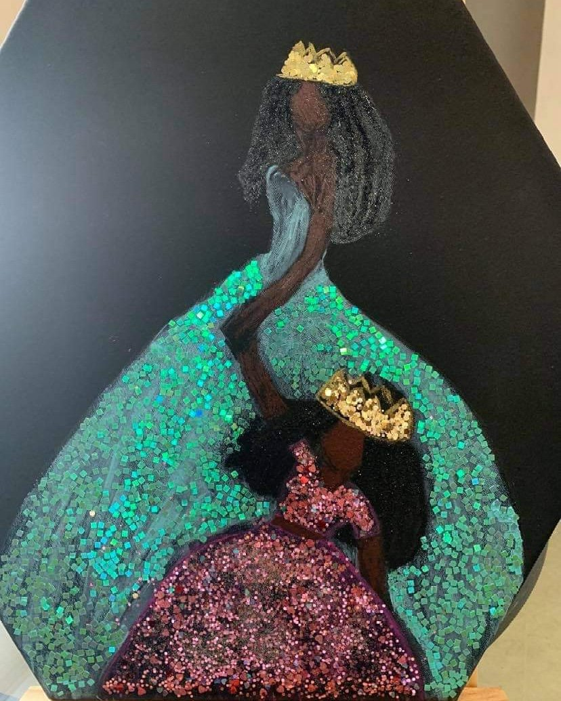
Alt text written by Claude when the post moved here. -
This piece is in placement at http://stimpunks.org. Come check it out along with lots of other neurodivergent and disabled art. https://t.co/u80hGkPtn8
-
Learn about spiky profiles, niche construction, & object personification with help from our friends at Randimals. @Randimals are made up of two different animals, which means they are a unique blend of personalities, characteristics, instincts and skills.
-
We love checklists!
We’re updating process checklists here at Stimpunks. Here are some attributes of good checklists and some checklist cool tricks. Our favorite tip: use pause points.
-
We quote from this highly recommended book on our access page in the "Making Spaces Safer" section.
https://stimpunks.org/access/ https://x.com/grrrlsoundcents/status/1552295427441033217
-
Classroom UX: Designing for Pluralism
-
Since #neurodivergent is trending, here’s our glossary entry.
-
Stimpunks is created by and for #neurodivergent and #disabled people. We provide mutual aid, learning opportunities, human-centered research, and living wages for our community. We presume competence, and we believe in self-determination.
-
What makes us different, makes all the difference in the world.
An ode to spiky profiles and neurological pluralism:
-
“DIY at the Edges: Surviving the Bipartisanship of Behaviorism by Rolling Our Own” is our four part course for educators, parents, & students on fighting behaviorism in the classroom.
Behaviorist education is ableist education.
-
📼 Bricolage, Remixing, Constructionism, and Pastiche: Behind Our Punk Rock Research-Storytelling
-
We'll be there. We're attention tunneled and hyperfocused on preparing our track for tomorrow. https://t.co/xrrKrqprkW
-
None of us should be in the business of behaviorism.
-
Useful Autism Research: Welcome to This Very Important Update
There's an immensity of bad autism research stuck in the pathology paradigm & propagating the misunderstandings from the 1940s. This living document collects some of the good research.
-
@MrsEllisSPED We've got these:
https://stimpunks.org/access/
https://stimpunks.org/access/education/
https://stimpunks.org/fix-injustice-not-kids/
https://stimpunks.org/diy-or-die/
https://stimpunks.org/coping/ -
“Behaviorism can’t die.
It doesn’t matter how often it’s refuted and how fully it’s refuted, it comes right back to life.
It’s been refuted so overwhelmingly.”
—Noam Chomsky
-
@CovingtonEDU @HenryGiroux Feeling this. We’re concluding our track with a call to solidarity against ableism in an era of unvarnished eugenics.
-
@levarburton Thank you.
This piece collects community writing on identity-first language.
-
@Idzie @Ebonyteach We touch on this in our track at the upcoming Conference to Restore Humanity, which also has a track on childism. https://stimpunks.org/diy-at-the-edges/
-
Cosigned.
https://stimpunks.org/eugenics/ https://x.com/gwensnyderPHL/status/1550130551314452486
-
@HumResPro We quote that piece here:
-
@DISummit_org @Mediadisdat @SFdirewolf We got a message saying mouthwash can't be shipped to gift registry addresses. Had to remove it from our cart.
-
Ya’ll rock @stevesilberman and @thedavidcrosby. Thanks for everything.
Here’s a rocking number about autistic insomnia and the creative process. Lyrics by an autistic teen.
https://open.spotify.com/track/3EnmXYT8F1v3rWrKdsuRjC?si=a0e9253a84e54f18
-
“What’s fair depends on what people need.”
-
Neurodivergent and disabled students navigate two gauntlets.
Education access:
https://stimpunks.org/access/education/
Healthcare access:
-
@HumResPro Our research page has a section on how meaningless “evidence-based practice” has become.
-
What is Autism?
What Are Autistic Ways of Being?
Autistic Traits
Autism, Society, and Me
Am I Autistic?
What’s Next After Diagnosis?
Community Resources
Respectfully Connected: Advice to Teachers and Parents of Autistic Kids -
@cdetler Our Autism page collects community resources.
-
Cavendish Space
Intermittent Collaboration
Edges Cases Are Stress Cases: Design is Tested at the Edges
Design With, Not For
The School User Experience
Student-Created Context & Timeless Learning
Choice & Comfort
Hacking Schools: Getting Ourselves to Yes -
Wanna chat with folks who pioneered distributed work and adapted the tools and culture to indie ed-tech and human-centered learning? Join Stimpunks at our Conference to Restore Humanity track.
https://stimpunks.org/2022/07/08/diy-at-the-edges-at-the-conference-to-restore-humanity-july-25-28/
-
Exposure Anxiety, Rejection Sensitive Dysphoria, and Situational Mutism marked the childhoods of many us here at Stimpunks. The intense sensory and social environment of school feeds all of these.
https://stimpunks.org/glossary/exposure-anxiety/
https://stimpunks.org/glossary/rejection-sensitive-dysphoria/
https://stimpunks.org/glossary/situational-mutism/ -
We updated the “Support Swapping” section to include “Spoon Shares”, “Sharing Spoons”, and a shout out to mutual aid and interdependence.
https://stimpunks.org/2022/01/22/the-five-neurodivergent-love-languages-2/
-
Organizations like Stimpunks exist because our systems effectively do not.
We added quotes from this piece on waiting lists to our Aid page.
⛑ Mutual Aid: Real Help Against the Onslaught
https://stimpunks.org/aid/ https://t.co/aqNyLtlqbA -
Learn about neurodiversity at school in a communication environment created by neurodivergents.
Day 1 of our 4 day track is titled:
Written Communication and Indie Ed-Tech: Neurodivergents Created This Communication Environment
https://stimpunks.org/2022/07/08/diy-at-the-edges-at-the-conference-to-restore-humanity-july-25-28/
-
We quote this great paper in the "Activist Research" section of our "🗂 Facts, Fire, and Feels: Research-Storytelling from the Edges" page.
https://stimpunks.org/research/#activist-research https://t.co/5eakXKxkkL
-
Interaction badges pair well with bodymind affirmations. Use them both for your conferences and classes.
-
"The long-term effects of misunderstanding or mislabeling sensory trauma can be catastrophic."
-
Orient ourselves around our interdependence.
Celebrate our interdependence.
Put care at the center.
Our survival is bound up together.
Pluralism is our reality. -
“I sing from intelligence. I sing from letting them know that I know who they are and what they have done to my people around the world.
“I don’t want them to think that I don’t know who they are.”
—Nina Simone
-
Everything is a remix.
📼 Bricolage, Remixing, and Pastiche: Behind Our Punk Rock Research-Storytelling
-
“The Fundamental Attribution Error is that we overestimate the power of the person and underestimate the power of the situation.”
— http://www.ewa.org/sites/main/files/file-attachments/2015-11-11-motivation-howard.pdf
US culture & education are vast engines of FAE. Special Education is a gauntlet of FAE attitudes.
https://stimpunks.org/glossary/fundamental-attribution-error/
-
“…you cannot understand the history of education technology in the United States during the twentieth century – and on into the twenty-first – unless you realize that Seymour Papert lost and B. F. Skinner won.”
— http://hackeducation.com/2018/10/18/skinner
-
DIY at the Edges at the Conference to Restore Humanity, July 25 – 28 https://stimpunks.org/2022/07/08/diy-at-the-edges-at-the-conference-to-restore-humanity-july-25-28/
-
“Is there really no place for us in the world?”
—Frank Stephens
-
We help each other co-create education designed to the edges to fit our spiky profiles.
-
💀 You Are Not Entitled to Our Deaths
-
“…enabling autistic children to have access to and develop their areas of interest is highly beneficial for their education and broader inclusion in school.”
—Inclusive Education for Autistic Children (P. 99)
-
The words autistic and disabled connect us with an identity, a community, and a culture. They help us advocate for ourselves.
-
🗄 Temporal Lotteries: We Don’t Have Any Fucking Time for Writing These 200-Page Long, Detailed Grant Reports
-
Interaction badges pair well with bodymind affirmations. Use them both for your conferences and classes.
-
Choosing the Margin: Design is Tested at the Edges
Disabled and neurodivergent people are always edge cases, and edge cases are stress cases.
-
“The oppressed struggle in language to recover ourselves, to reconcile, to reunite, to renew. Our words are not without meaning, they are an action, resistance. Language is also a place of struggle.”
—bell hooks
-
Our designs, our societies, and the boundaries of our compassion are tested at the edges, where the truths told are of bias, inequality, injustice, and thoughtlessness.
-
We’ve experienced many moments of burnout in our lives and careers. Being something that we neurologically are not is exhausting.
-
We framed in a piece about our technology stack and our technology philosophy.
With quotes from the work of @irasocol, @pammoran, @csratliff, and @charlie3.
-
There is no path to inclusive design that does not involve direct confrontation with injustice.
-
Imagine if your family and your teachers understood and respected your love languages.
https://stimpunks.org/2022/01/22/the-five-neurodivergent-love-languages-2/
-
Ours is an empire of foam, articulation, and assistive devices. In this guide are the things we use to conserve spoons, stay below sensory thresholds, and get through each day. These are tested in the field of our neurodivergent and disabled lives.
-
Conversion therapy is wrong. Conversion therapy does not work.
Queer and neurodivergent liberation are entwined.
-
Let's organize our lives around love and care
Let's write each other letters and call it prayer
Let's congregate in the place that isn't anywhere
At the temple of broken dreams--Ezra Furman
-
Foster understanding and belonging by recognizing these neurodivergent emotional bids.
https://stimpunks.org/2022/01/22/the-five-neurodivergent-love-languages-2/
-
Our multi-age learning community sets up and runs our organization. This is some of the software we get experience with.
-
“We are caught in an inescapable network of mutuality, tied in a single garment of destiny.”
—Letter From Birmingham Jail, Dr. Martin Luther King, Jr.
-
🤲 It is time to celebrate our interdependence.
-
"It is time to celebrate our interdependence!
"Collaboration allows us to create genuinely safe spaces for autistic and otherwise neurodivergent people." https://t.co/sC9r2Oh0Yi
-
@LauraJaneGrace Thanks for helping us tell our story.
-
A celebration of spiky profiles.
-
@bellawhitaker99 This piece collects community writing.
-
“Autistic participants exhibited more scientifically based knowledge than others. They were more likely to describe autism experientially or as a neutral difference, and more often opposed the medical model.” https://x.com/ruthieconnolly/status/1539674212998201348
-
Learn how to design for neurodivergence at school at a conference designed for neurodivergence. Join our track “DIY at the Edges: Surviving the Bipartisanship of Behaviorism by Rolling Our Own” July 25-28.
-
Most conferences are not accessible to us as either presenters or attendees. Conference to Restore Humanity is a wonderful exception. Join our track “DIY at the Edges: Surviving the Bipartisanship of Behaviorism by Rolling Our Own” July 25 - 28.
-
New sections:
- Measuring the Wrong Thing the Right Way? Time to Rethink Autism Research Tools
- Check Your Neurocentrism
- Are You Disregarding Harm and Profiting From Our Misery?
- Navigating Open Scholarship for Neurodivergent Researchershttps://stimpunks.org/research/
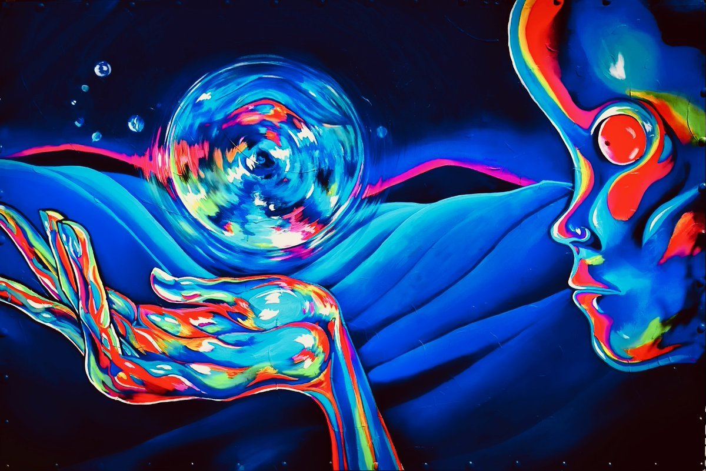
Alt text written by Claude when the post moved here. -
Our website is pastiche. We celebrate the work of the many authors and artists we incorporate into our storytelling. We encourage our learners to build and iterate via bricolage, pastiche, and celebration of their influences.
-
- Inclusion Safety
- Learner Safety
- Psychological Safety in Teams
- Psychological Safety and Ethics
- Autistic People Have Significant Barriers to Accessing Safety
- Being Legible: Legibility as Social Status, Situational Privilege, and Belonging -
Autistic people are psychological safety barometers.
-
“The biggest argument in favour of identity-first language is simply that the majority of autistic people prefer it.”
—Chris Bonnello / Captain Quirk
https://autisticnotweird.com/autistic-person/ -
"This interest model of mind is ecological, embodied, and exploratory. ...it offers a more objective way of thinking about autistic and other human variations: it does not pathologize them."
--Dinah Murray
-
"Grant me the dignity of meeting me on my own terms — recognize that we are equally alien to each other, that my ways of being are not merely damaged versions of yours."
--SINCLAIR 1992A, P.302
-
@katerowley0 https://stimpunks.org/glossary/double-empathy-problem/
-
"They were not worlds unto themselves within the world, as I was."
--Donna Williams
-
https://stimpunks.org/glossary/rejection-sensitive-dysphoria/
-
The Employee Resource Groups that Stimpunks @rboren and @KristinaDaniele helped create @automattic got a shout out in this Most Loved Workplace piece.
-
“findings high-lighted how some participants preferred rough sleeping to hostel environments which aggravated social anxiety and sensory processing difficulties. This tentative finding may explain the high prevalence of autism reported in rough sleeping populations” https://x.com/autismcrisis/status/1540684151598112768
-
We define kids’ identities through the deficit & medical models, gloss over the structural problems they face, and then tell them to get some grit and growth mindset. This is effectively gaslighting, an attempt to “overwrite another person’s reality“.
-
Behaviorist education is ableist education.
-
@RobBaskind @profamandakirby We turn schools into hell for neurodivergent people and then feed us to the pipeline.
-
On bodily autonomy.
-
Queer and neurodivergent liberation are entwined.
-
Embrace diversity.
Unite—
Or be divided,
robbed,
ruled,
killed
By those who see you as prey.
Embrace diversity
Or be destroyed.--Parable of the Sower by Octavia Butler
![A quotation beside a book cover. The quotation reads: "Embrace diversity. Unite— Or be divided, robbed, ruled, killed By those who see you as prey. Embrace diversity Or be destroyed." with the link "Parable of the Sower (p. 196)". The cover shows a silhouetted figure in a long patterned red and orange dress and head wrap, with the title "Parable of the Sower", the author "OCTAVIA E. BUTLER", "HUGO AND NEBULA AWARD-WINNING AUTHOR", a gold seal reading "NEW YORK TIMES BESTSELLER", and the blurb ""Brilliant, endlessly rich . . . pairs well with 1984 or The Handmaid's Tale." —JOHN GREEN, The New York Times".](social/img/1540475299841851393-fwdeaqawiaev0k4.jpg)
Alt text written by Claude when the post moved here. -
Updated and expanded, featuring 18 songs and a journey of joy, pride, and pain.
-
Updated and expanded.
-
@a_m_alcorn0131 @SMRCResearch @SueReviews @MindroomInform @DrSarahMcG @MxOolong @WillClinPsy @reesha_zahir @rcsmikle @emseeitch We'll be shouting out LEANS to educators at our Conference to Restore Humanity track next month.
-
Teenage Stimpunk Ronan wrote the lyrics to this rocker about autistic insomnia.
"Neurodiversity rocks! We make rock 'n' roll and inclusive education."
https://open.spotify.com/track/3EnmXYT8F1v3rWrKdsuRjC?si=5bebad78b9fb41aa
-
Challenge the norm and change the narrative by reframing.
We reframe to live proudly.
We reframe to be our real selves.
We reframe to build community.
We reframe to demonstrate agency. -
"Crip linguistics frames language as a form of care work where we work collectively to provide access and co-construct meaning."
-
We added selections from this to our Healthcare Access page.
https://stimpunks.org/access/healthcare/ https://x.com/Lau_Cob_/status/1540283782015614976
-
Sameness-based notions of fairness will always exclude neurodivergent and disabled students.
Needs-based fairness and toolbelt theory are necessary to including us.
-
@AutisticDoctor The Change Your Language section of our Research page has some pointed advice.
-
@AutisticDoctor https://stimpunks.org/language/
-
On meltdowns.
-
- What is Autism?
- What Are Autistic Ways of Being?
- Autistic Traits
- Autism, Society, and Me
- Am I Autistic?
- What’s Next After Diagnosis?
- Advice to Teachers and Parents of Autistic Kids -
Did you miss the most important memo in autism research in decades?
-
The Problem With Autistic Communication Is Non-Autistic People
-
On psychological safety, legibility, and belonging.
-
Our Dual Identities Are Not Competing; They Are Complementary
-
We like glossaries.
-
Emotional bids are the pixels of relationship communications. This list is much about recognizing and meeting some common neurodivergent emotional bids in relationships, thus the phrase “love languages”.
https://stimpunks.org/2022/01/22/the-five-neurodivergent-love-languages-2/
-
@Noahsasson @stevesilberman @milton_damian @cjcrompton Our glossary page collects resources.
-
We have turned classrooms into a hell for autism.
-
Queer and neurodivergent liberation are entwined.
-
- Disabled ways of languaging are primarily about modality.
- Typed Words, Loud Voices
- Let’s Augment Everybody, Let’s Leave No Mind Behind
- Bring the Backchannel Forward -
- Writing is the path to power for those born without power.
- The Future Is Text: The Universal Interface
- Text Augments All Other Media
- A Workflow-Focused Approach to Writing Offers a Pathway to Agency, Creativity, and Confidence -
- Technology, Text, and Alternative Socialization
- Backchannels
- Online Communication and Autistic Community
- Anything but the Phone! -
Identity First Language: Thinking differently requires speaking differently.
-
@autgeek The “We Don’t Need Your Mindset Marketing: Education Technology and the New Behaviorism” section of our “Education Access” page collects lots of quotes on the problems with resilience, grit, growth mindset, and other mindset marketing.
-
Dear Problem Patients,
We believe you.
You’re not alone. -
Our “Education Access” page is coming along.
We need to pare down the quotes in the “We Don’t Need Your Mindset Marketing: Education Technology and the New Behaviorism” section, but letting go is hard to do.
-
Sameness-based notions of fairness are a systemic slog for neurodivergent and disabled people.
Learn about needs-based fairness using a balance scale metaphor and toolbelt theory.
-
Our Randimals are expressions of our spiky profiles.
-
- Monotropism: Attention and Interest
- Flow States
- SpIns and Infodumps
- Embrace the “Obsession”
- Visit http://monotropism.org -
New section: Measuring the Wrong Thing the Right Way? Time to Rethink Autism Research Tools
-
@Autist_Writer “If you are wondering whether you are Autistic, spend time amongst Autistic people, online and offline. If you notice you relate to these people much better than to others, if they make you feel safe, and if they understand you, you have arrived.”
https://autcollab.org/projects/a-communal-definition-of-autistic-ways-of-being/
-
@ecomentario @stevesilberman @jmhenner “We are trying to point out that no one is actually ‘bad with language.’”
“Crip linguistics frames language as a form of care work where we work collectively to provide access and co-construct meaning.”
-
@ecomentario @stevesilberman “Disabled ways of languaging are primarily about modality.”
—@jmhenner
-
"For decades, I didn’t understand what was going on with me. I didn’t understand the root causes of my cycles of burnout. Finding the Actually Autistic community woke me to autistic burnout. I finally understood an important part of myself."
-
Don’t force eye contact. Gaze aversion is a sensory processing tool, one necessary to managing sensory overwhelm. Eye contact goals should NOT be in student IEPs.
-
Don't be a stallbatter.
-
“…we are still measuring important aspects of autistic lives by using instruments developed by non-autistic people. It is not enough to make minor modifications to existing instruments so that we continue to “reliably” and “validly” measure the wrong things.” https://x.com/AutisticProf/status/1537616771695394819
-
When did you last offer someone a penguin pebble? Was it recognized? Was it appreciated? Reciprocated?
Learn about penguin pebbling in relationships.
https://stimpunks.org/2022/01/22/the-five-neurodivergent-love-languages-2/
-
@CathyMarksKrpan Bringing the backchannel forward offers an avenue for us to engage.
-
Composing this piece was a flashback rollercoaster. There is lots of feedback and iteration to go, but it hits our feels as is.
Featuring 17 songs embedded as videos.
Content Note: ableism, ABA, conversion therapy
But also: neurodivergent & queer joy
-
Our needs are human needs, not special needs. Language matters. We have a moral imperative to connect with the communities we serve and use the language they prefer.
-
💬 Identity First Language: Thinking differently requires speaking differently.
-
Anything but the phone!
We updated the “Phones” section of our Healthcare Access and Written Communication pages with fresh research.
https://bmjopen.bmj.com/content/12/2/e056904
https://stimpunks.org/access/healthcare/#phones
-
We are not special.
https://stimpunks.org/glossary/special/
We are neurodivergent and disabled.
-
BTW, our learning space has its own whole other website at http://stimpunks.space.
- 🌎 Online
- ☀️💪 Offline
- ⛺️🔥 Cavendish Space
- ✌️ We Believe -
Enduring chaos rites by force
Lost in a maze of shifting size
Phasing out of time constantly
I can't speak in this dimensionI'm burnt out from masking
You're burnt out from masking
They're burnt out from masking
We're all burnt out from masking -
We’re rapidly iterating our Education Access piece.
https://stimpunks.org/access/education/
Behaviorism is dead.
Despite that,
Behaviorism won.
And neurodivergent and disabled students lost.
-
Digital sociology fuels our research-storytelling.
-
Spare me from the mold.
-
- 🦔 Spiky Profiles
- 🏔 Learning Terroir
- 🏗 Collaborative Niche Construction
- 🦸♀️ Special Interests Feed Niche Construction
- 🌈 Neurological Pluralism
- 🦄 Let’s be weird.
- 🫀🧠 Difference Is a Teacher
- ∞ Weird Like You and Me -
- Monotropism: Attention and Interest
- Flow States
- SpIns and Infodumps
- Embrace the Obsession
- Visit http://monotropism.org -
- Sameness-based Versus Needs-based Fairness
- Toolbelt Theory
- Equity Literacy
- The Direct Confrontation Principle
- The Prioritization Principle
- The “Fix Injustice, Not Kids” Principle
- Avoid These Equity Pitfalls
- Deficit Ideology -
What do you get when a monotropic bricolage thinker writes about monotropism using the bricolage-friendly tools of the open web?
This page:
https://stimpunks.org/glossary/monotropism/
Flow states were achieved in the composition of this piece.
-
On spiky profiles, learning terroir, and weird pride.
-
What Randimal expresses your spiky profile?
-
Affirm our divergent bodyminds as valid and belonging and not in need of straightening up.
Foster inclusion and belonging with an access note and bodymind affirmation at the beginning of your class, meeting, or presentation.
-
Being something that I neurologically am not is exhausting.
🔥 Autistic Burnout: The Cost of Masking and Passing
-
🌈🌈 Neurodiversity and Gender: You Hit So Hard With All the Colors That There Are
-
Digital Sociology
-
The Double Empathy Problem
-
Equity, fairness, and tool belt theory.
-
💬 Identity First Language: Thinking differently requires speaking differently.
-
The Five Neurodivergent Love Languages
https://stimpunks.org/2022/01/22/the-five-neurodivergent-love-languages-2/
-
On neurodiversity and gaming, including balancing monotropic focus with self-care.
-
"Monotropism provides a far more comprehensive explanation for autistic cognition than any of its competitors."
--@MxOolong
-
Orient ourselves around our interdependence.
Celebrate our interdependence.
Put care at the center.
Our survival is bound up together.
Pluralism is our reality. -
A 14 year old AuDHD gamer & 49 year old Autistic gamer started this piece on “Neurodiversity, Disability, and Gaming”.
We use the WordPress block editor to bricolage multimedia resources together and iterate, iterate, iterate—in the open on the open web.
-
A key to understanding the educational inclusion of Autistic students is monotropism.
https://stimpunks.org/glossary/monotropism/
Autistic science teacher, @MxOolong, created a really, really good website on the topic:
-
"Stimpunks is gently debugging society.
"The charity protects, helps and comforts individuals, while pointing out library-level flaws in some of the concepts that end up harming those individuals."
-
Accessible Spaces & Events
-
♿️📚Anti-Ableist Space for Human-Centered Learning
-
Autistic Burnout: The Cost of Masking and Passing
-
On recognizing and answering five common neurodivergent emotional bids.
https://stimpunks.org/2022/01/22/the-five-neurodivergent-love-languages-2/
-
Neurodiversity and Gender
-
Lost In Translation: Ways in Which Neurodivergent and Neurotypical Social Languages Differ https://stimpunks.org/2022/06/03/lost-in-translation-ways-in-which-neurodivergent-and-neurotypical-social-languages-differ/
-
@AmandaGolf59 There's a community to help through the overwhelm. Welcome among us spiky profiles.
-
“…autistic people inevitably change the structures they inhabit in a unique way because they are autistic… Existing as an autistic person, therefore, is almost a forceful demonstration in agency.”
—@MarianthiKourti
https://www.frontiersin.org/articles/10.3389/fpsyg.2021.713423/full
So punk we put it on our front page.
-
"🗂 Facts, Fire, and Feels: Research-Storytelling from the Edges" has new sections:
- Are You Disregarding Harm and Profiting From Our Misery?
- Are You Feeding White Supremacist Ideology?
- Emancipatory Research -
We’re rapidly iterating our Education Access page in preparation for the Conference to Restore Humanity.
https://www.humanrestorationproject.org/conference
Check our spice levels.
Educators: Too spicy?
Neurodivergent people: Spicy enough?
-
Our website helps us build community which helps us build our website.
Behold an outpouring of neurodivergent and disabled art, culture, & perspective with much more to come.
-
Stimpunk Ronan debuted a new song, Banjo on My Knee, with his band @josephmooon.
"Neurodiversity rocks! We make rock 'n' roll and inclusive education." https://x.com/josephmooon/status/1528962788881838080
-
Missed in Childhood: Nearly All Autistic and ADHD Women https://stimpunks.org/2022/05/22/missed-in-childhood-nearly-all-autistic-and-adhd-women/
-
Recognize and respect these five neurodivergent love languages in your classroom.
https://stimpunks.org/2022/01/22/the-five-neurodivergent-love-languages-2/
-
Autistic Burnout: The Cost of Masking and Passing
-
✊ Enable Dignity
-
@KieranRose7 @KCoburnSLP @DrAmyPearson @MxOolong Self-plug: We're doing some Weird Pride stuff with Randimals to help the concept travel further.
-
May 2022, so far, at Stimpunks: New Pages for the Website https://stimpunks.org/2022/05/14/may-2022-so-far-at-stimpunks-new-pages-for-the-website/
-
A peek at our Weird Pride collab with Randimals:
-
Emotional bids are the pixels of relationship communications. This list is much about recognizing and meeting some common neurodivergent emotional bids in relationships, thus the phrase “love languages”.
https://stimpunks.org/2022/01/22/the-five-neurodivergent-love-languages-2/
-
Our new Stim page features the audio visual art of Stimpunk AJ.
We’ll be adding stimmy shares from the community that visitors to the page can mix and layer.
-
Facts, Fire, and Feels: Research-Storytelling from the Edges
-
"I know who they are and what they have done to my people."
--Nina Simone
To autism industry professionals,
-
‘“Indie ed-tech” draws rather explicitly on the spirit of indie music and the DIY (do-it-yourself) ethos of punk rock.’
http://hackeducation.com/2016/03/18/i-love-my-label
Read how we DIY indie ed-tech at our learning space.
-
Our new autism research page opens with a spicy evaluation of the status quo and then introduces useful research in three critical areas: sensory load, the double empathy problem, and monotropism. Grab some popcorn, and enjoy the accompanying music.
-
Thanks for helping us tell our story of neurodiversity and inclusion on our website, @AURORAmusic.
But I don't need a cure for me
I don't need it
No, I don't need a cure for me
I don't need itPlease, no cure for me
Please, no cure for me -
Reframing purposefully centers the edges.
Because design is tested at the edges, and we are the original life hackers.
We design from the edges to co-create ecologies of care.
Reframing is self-care and social change.
-
Your donations directly house and feed neurodivergent and disabled people. Your donations buy respite and space to create.
-
To autism industry professionals perpetuating a broken status quo,
- Stop, Hammer Time
- Check Your Gaze
- Is Your Training from the 1940s?
- Are You Really Evidence-Based? -
But I don't need a cure for me
I don't need it
No, I don't need a cure for me
I don't need it
No, I don't need a cure for me
I don't need it
I don't need itPlease, no cure for me
Please, no cure for me -
We want to improve the scientific experience for the disabled and the neurodivergent by restoring the humanities. We want to bring voice into empirical constructs and translate voice into academic comprehension.
-
Emotional bids are the pixels of relationship communications. This list is much about recognizing and meeting some common neurodivergent emotional bids in relationships, thus the phrase “love languages”.
https://stimpunks.org/2022/01/22/the-five-neurodivergent-love-languages-2/
-
We exist as friction. Research-storytelling from the edges.
-
New wave, new phrase
New wave, new crazeIt take a joyful sound
To make a world go 'roundIt's Neurodiversity
And it's alright -
"Relationship accommodations are the reasonable adjustments we make which allow the other person to meet our needs."
— Raffael Boccamazzo -
Where do you experience the five neurodivergent love languages in your life?
https://stimpunks.org/2022/01/22/the-five-neurodivergent-love-languages-2/
-
A post mortem of society’s mistakes, with guitar.
-
@NonsenseTracker I (@rboren) found this on "Flamenco and Ritual Dance as Bilateral Stimulation".
https://digitalrepository.unm.edu/cgi/viewcontent.cgi?article=1045&context=thea_etds
I'll research further. I so want work that Melina Najjar video into our site along with a relevant quote. 💃
-
Instead of behaviorist control, we pursue self-determination, intrinsic motivation, and flow.
-
We design from the edges to co-create ecologies of care.
-
The First Rule of Punk: Be Yourself
Our Second Rule of Punk: Reframe
Welcome to our nutrient-rich tide pool of like-minded misfits, with loud hands.
Reframe with us.
-
Our signature playlist now has more @Screamales, @thebobbylees, @FortyFeetTall, and @thelindalindas to get us through life.
https://music.apple.com/us/playlist/chronic-neurodivergent-depressed-queer-punk/pl.u-yZyVVjZtYzXDqW
https://open.spotify.com/playlist/3nI8FuSISztY18IzwiKjMk?si=93282614744e4d83
-
Vendetta Music Fest (and everyone else) vs. Our Loved People: They’re Promoting and Funding Ableism in Our Name https://stimpunks.org/2022/03/19/vendetta-music-fest-vs-our-loved-people-theyre-promoting-and-funding-ableism-in-our-name/
-
Energy, good energy and bad energy
I've got plenty of energy
It's my currency
I spend, protect my energy, currency -
"It was a yearning to be different, to distance oneself from the mainstream mass of society. But punk was also a desire for community, a hunger for fellowship with like-minded souls…"
-
Stimpunk Ronan is the lyricist for @josephmooon, a distributed musical collaboration featuring two teenagers and their mentors.
Their album “So Far, So Good” is steeped in neurodivergent experience.
https://open.spotify.com/album/1mgYk2rmlmZpE77xGHKNDV?si=Go2wdWBtRxiglGF9uMSsyw
-
"This is Pure stim music"
"3 seconds in, I lost my shit and straight into head banging"
--A neurodivergent crip upon being introduced to @thebobbylees https://x.com/stimpunks/status/1504265148311261190
-
Autistic sense of justice activate, form of: extreme stress
https://stimpunks.org/2022/03/16/graph-of-an-autistic-heart-confronting-injustice/
-
Crank this up & stim dance your ass off.
https://stimpunks.org/2022/03/16/stimpunks-and-vancerts-presents-the-bobby-lees-and-forty-feet-tall/
If you're at SxSW:
- Friday, March 18, 1-5PM
- Halcyon Coffee, Bar, and Lounge in the Mueller neighborhood
- 1905 AldrichJoin the Stimpunks at a punk show featuring music by The Bobby Lees and Forty Feet Tall.
-
Stimpunks and Vancerts Presents: The Bobby Lees and Forty Feet Tall
https://stimpunks.org/2022/03/16/stimpunks-and-vancerts-presents-the-bobby-lees-and-forty-feet-tall/
-
Graph of an Autistic Heart Confronting Injustice https://stimpunks.org/2022/03/16/graph-of-an-autistic-heart-confronting-injustice/
-
Autistic people are psychological safety barometers.
-
We must deplatform ableism at @sxsw. Now. We are tired of people profiting off our misery with discredited and abusive therapies and bad, stale science dressed in marketing. Road to Vendetta directly funds the abuse of autistic children through radical behaviorism. https://x.com/stimpunks/status/1502617236594380804
-
We have given @ATXEventSystems until close of business Monday to provide feedback and offer a statement for public record. 2/2
-
Update on the platforming & funding of ableism at SxSW’s Vendetta Music Fest:
The representative of @ATXEventSystems who was directly contacting our neurodivergent artists has been sent multiple drafts of our upcoming press release with no reply. 1/2 https://x.com/stimpunks/status/1502617236594380804
-
@Hugh_W_Forrest Neurodivergent artists need allies at SxSW. Road to Vendetta fundraises for abusive autistic conversion therapy and eugenics.
You can't have our neurodivergent art while advocating to eliminate neurodivergent people. https://x.com/stimpunks/status/1502656829373009924
-
We are talking to @ATXEventSystems about their choice of autism charities for Vendetta Music Fest at SxSW. Their current choices support abusive ABA therapy & eugenics.
We can’t keep Austin weird by eliminating weird from society and the gene pool.
-
Just posted a photo https://www.instagram.com/p/Ca-AMv6OVlR/?utm_medium=twitter
-
The Road to Vendetta event coming up at SxSW platforms and funds violent bigotry against neurominorities by supporting eugenics and abusive autistic conversion therapy.
Do not support this event. Do not enable profit at the expense of our loved people.
-
"Just be punk rock about it. That’s what I say."
—Patty Schemel
-
We feature @thebobbylees in the “Keep on Livin’” section of our Mission page and in our “Chronic Neurodivergent Depressed Queer Punk” playlist.
https://stimpunks.org/mission/
They’re coming to Austin next week for SxSW. Yay!
-
The Benevolence of Surrender: Connected, Trusting Relationships https://stimpunks.org/2022/03/07/the-benevolence-of-surrender-connected-trusting-relationships/
-
We pay…
We exist…
We believe…
We create…
We serve…Our mission, our creed, our philosophy, and our contributor covenant:
-
"Next in a punk sensibility was its love affair with pastiche. As the true postmoderns they were, punks drew freely from highbrow culture, lowbrow culture, and places in between, picking and choosing as they went, bound by no formal ideology."
-
Props to the artists who help us advocate and cope.
-
➗ In anti-ableist space, there is no segregation of “special”.
🥢🥕 In anti-ableist space, there is no behaviorism.
🪙 In anti-ableist space, there is no “earning your token”.
🫀🧠 In anti-ableist space, we are active agents in our own embodied experience
http://stimpunks.org -
"If we were not threatening to the social order in some way, there would not be therapies designed to control how we move our bodies and communicate."
http://www.thinkingautismguide.com/2018/04/on-hans-asperger-nazis-and-autism.html
"Spare Me from the Mold"
-
"But punk was also a desire for community, a hunger for fellowship with like-minded souls…"
-
🫀 We’re Presenting: Conference to Restore Humanity https://stimpunks.org/2022/03/04/-were-presenting-conference-to-restore-humanity/
-
"…the ways we have constructed our ideals of human flourishing unduly exclude neurodivergent modes of flourishing."
"…minority forms of human flourishing have been blocked from view."
-
"...autistic individuals encounter testimonial injustice, when they claim to be happy or living good lives, & hermeneutical injustice, seen in the exclusion of neurodivergent modes of flourishing. But it is also vital to consider how these forms of injustice combine & interlock https://t.co/sbaXdAcwtc
-
We want to improve the scientific experience for the disabled and the neurodivergent by restoring the humanities. We want to bring voice into empirical constructs and translate voice into academic comprehension.
-
@nmelzack Yes! We start our chats with a bodymind affirmation.
-
@tom_geraghty We embed your video on “The History of Psychological Safety” on our About page.
Thanks for your work.
-
We want to improve the scientific experience for the disabled and the neurodivergent by restoring the humanities. We want to bring voice into empirical constructs and translate voice into academic comprehension.
-
"I wanna see a feisty group of disabled people around the world…if you don’t respect yourself and if you don’t demand what you believe in for yourself, you’re not gonna get it."
--Judith Heumann
-
"I can’t picture things in my head sitting still. I like to walk around and think."
-- Autistic Student
-
"It is time to celebrate our interdependence!
Collaboration allows us to create genuinely safe spaces."
-
“Because everyone deserves the shelter and embrace of crip space, to find their people and set down roots in a place they can call home.”
—s.e. smith
-
We create anti-ableist space for passion-based, human-centered learning compatible with neurodiversity and the social model of disability. We create space for those most ill-served by “empty pedagogy, behaviorism, and the rejection of equity“.
-
“Trainers are rejecting behaviorism because it harms animals emotionally and psychologically. What does that say about classrooms that embrace it?”
https://writing.humanrestorationproject.org/the-absence-of-pedagogy-is-political/
Instead of behaviorism, Stimpunks Space.
-
@Dr_AnnaRobinson Thank you for the study. We quote it in the reframing and respectful connection section of our website.
-
"Our findings showed that practitioners in all contexts, including partners and parents, took on the role of what we describe as ‘fixer’. Person-centered skills training presented them with a challenge to this preferred dominant relational style."
-
"The overarching theme to emerge from our data showed that person-centered counselling skills and pretherapy (contact reflections) training challenges practitioners’ strongly held beliefs, resulting in subtle transformations resulted from shifting practice paradigms."
-
"We propose that neurotypical-neurodivergent relational encounters may lack this necessary psychological contact for a therapeutic relationship, but person-centered counselling skills & contact reflection training can enhance neurotypical practitioners’ capacity to empathise..."
-
"However, once practitioners began to relate using person-centered principles and/or with contact reflections, they experienced their own increased capacity to interpersonally connect."
-
"We found neurotypical– neurodivergent encounters manifest this double empathy problem, with practitioners displaying limited capacity for neurodivergent intersubjectivity leading to misempathy and lack of relational depth."
-
"We argue that this opening up of practitioner channels of receptivity may lend support to Milton’s concept of a double empathy problem (Milton, 2012)." https://x.com/Dr_AnnaRobinson/status/1497483371055927298
-
Giving from foundation funds is paused while we complete an intimidating checklist from our nonprofit lawyer. We’re giving smaller grants from LLC funds to help our community through the month.
We can still fundraise in prep 4 turning the spigot back on.
-
We have to challenge the norm and change the narrative around people who are neurodivergent or disabled so we can be our real selves and keep on livin’.
-
“We were really angry, and we decided to write a song about it.”
— @thelindalindas
Right on.
We were really angry, and we decided to create a non-profit about it.
-
"...it’s a story about what is possible when we fight for ourselves and each other. It is a story about how tenacity, strength, the power of community, and the willingness to fight for what matters can start a revolution."
-
A Feisty Group of Disabled People
-
"James Baldwin…deserves flowers everyday, most of all, because he was willing to discuss things that were painful, hard to look at, hard to see, hard to accept."
—Meshell Ndegeocello
-
I wanna see a feisty group of disabled people around the world…if you don’t respect yourself and if you don’t demand what you believe in for yourself, you’re not gonna get it.
—Judith Heumann
The First Rule of Punk: Be Yourself
—Celia C. Pérez
-
We serve our loved people so we can keep on living through the onslaught.
Our mission, creed, philosophy, and code of conduct:
-
Many of our pages at http://Stimpunks.org conclude with a punk flourish. Our About page signs off with an appreciation of @judithheumann, @kathleenhanna, @thelindalindas, and rebel girls who create community.
-
"All we did was refuse to believe that we were the problem."
-
“BECAUSE we are interested in creating non-hierarchical ways of being AND making music, friends, and scenes based on communication + understanding, instead of competition + good/bad categorizations.”
https://www.historyisaweapon.com/defcon1/riotgrrrlmanifesto.html
-
The place where we belong does not exist. We will build it.
—James Baldwin
Where do u go when behaviorism excludes u?
Our track, “DIY at the Edges: Surviving the Bipartisanship of Behaviorism by Rolling Our Own”, explores collaborative niche construction in anti-ableist space. https://t.co/O3TNIuSSST
-
How can we design neurodiverse spaces that push back against behaviorism?
-
"Being continuously coded out of technology meant that I was losing my connection to my communities of support…" https://t.co/ESRxhEBlY6
-
Just posted a photo https://www.instagram.com/p/CZ-VCpDlGxX/?utm_medium=twitter
-
“Psychology is a natural field for many autistic people. Many of us have been studying people since we were at school to try and work out how people think and behave.” https://x.com/DrAliceNicholls/status/1493149438407290885
-
We feel the rush and the relief of access intimacy when a meeting starts with a bodymind affirmation.
-
Stimpunks Space is, among other things, our vision for indie ed-tech and the future of education and work.
A collaborative, iterative, living work-in-progress: http://stimpunks.space
-
Stop, Hammer Time: It’s not Science vs Philosophy … It’s Science + Philosophy. When you measure include the measurer. https://stimpunks.org/2022/02/14/stop-hammer-time-its-not-science-vs-philosophy-its-science-philosophy-when-you-measure-include-the-measurer/
-
Additions to Our Philosophy on Tech Ethics, Algorithmic Oppression, Power, Accommodations, Accessibility, Care, Inclusion, Diagnosis, and Reframing https://stimpunks.org/2022/02/14/additions-to-our-philosophy-on-tech-ethics-algorithmic-oppression-power-accommodations-accessibility-care-inclusion-diagnosis-and-reframing/
-
Every right now
Is the next chorus
And everyday is a bright new dayEvery right now
Is the next chorus
And we can all do something good--Ronan Boren of @stimpunks and @josephmooon
-
Support swapping can happen during parallel play, making for a nice moment of converging love languages.
https://stimpunks.org/2022/01/22/the-five-neurodivergent-love-languages-2/
-
“Accessibility is a collective process!”
— @lilririah
“The accommodations for natural human variation should be mutual.”
— @laurenancona
Invest in care, and design for real life.
-
“The failures of autism science are not random: they reflect systematic power imbalances.”
-
"This introduces structural inequities in the pursuit of science that align with social manifestations of racism, colonialism, sexism, homophobia & ableism"
-
Spare Me From the Mold
A Public Service Announcement… with Guitar
-
Resisting the conquering gaze from nowhere and restoring the humanities with MC Hammer…
-
Through Stimpunks Foundation, we:
1. Offer financial and mutual aid;
2. Hire our community members as consultants;
3. Provide a learning space designed for our community; and
4. Support our community’s open research efforts. -
As we learn, we bookmark.
-
"Together, we can counteract the harmful practices of discipline, assessment, and authoritarianism in the classroom."
-
If you’re going to test, then retesting is essential to learner safety. Not offering retesting is ableist and exclusionary to those of us with spiky profiles.
https://stimpunks.org/2021/09/15/try-again-mercy-is-necessary-to-learner-safety/
-
I center the marginalized and the different. I center edge cases, because edge cases are stress cases and design is tested at the edges. I center neurodivergent and disabled experience in service to all bodyminds.
-
@CovingtonEDU Image text:
Behaviorism is dead.
Despite that,
Behaviorism won.
And neurodivergent and disabled students lost.
-
From our glossary: Bodymind
-
Stimpunks combines “stimming” + “punks” to evoke open and proud stimming, resistance to neurotypicalization, and the DIY culture of punk, disabled, and neurodivergent communities. Instead of hiding our stims, we bring them to the front.
-
“The time is now to fund disability rights.
“One in seven persons in the world has a disability. Yet, grants for persons with disabilities constitute just 2% of all human rights funding.
https://www.hrfn.org/community-voices/reversing-the-trend-the-time-is-now-to-fund-disability-rights/
-
Here's how school and work should treat our loved people: https://stimpunks.space
-
"Indeed, the school environment can present autistic children w/ a multi-sensory onslaught... There was also clear evidence from my own study that sensory issues, & noise in particular, can be highly exclusionary factors for autistic children in schools."
-
"Diversity asks, who is at the table?
Decolonization asks, who built the table? Why was it built?"
-
"The dinner table scene is a good representation of how I experience overwhelm. A noisy, crowded dinner table is a personal hellscape."
https://boren.blog/2018/05/20/good-vibrations-bad-vibrations-overwhelm-and-meltdown/
-
Stimpunks in a Minute https://stimpunks.org/2022/02/05/stimpunks-in-a-minute/
-
🫀 Human-Centered
🩸 Trauma-Informed
💆♀️ Self-Determined
⚖️ Equity Literate
🔧 Open Technology -
We added a section on “Teams, Technology, and Help” to our learning space.
Hat tip: @_JonathanMooney @MxOolong
-
We added a section on intrinsic motivation and self-determination theory to our learning space.
-
"There is also something uniquely satisfying about working with other people effectively, towards a shared goal; in my experience there is no substitute when it comes to building a community."
https://oolong.medium.com/craft-flow-and-cognitive-styles-a47f827fcd6a
-
"try entering into their attention tunnel when you can, rather than tugging them out of it. Parallel play is one powerful tool for this; start where the child is, show interest in what they're focused on."
https://oolong.medium.com/craft-flow-and-cognitive-styles-a47f827fcd6a
Added to:
https://stimpunks.org/2022/01/22/the-five-neurodivergent-love-languages-2/
-
We believe that direct support to individuals is the most effective approach to alleviating the barriers and challenges that prevent neurodivergent and disabled people from thriving in neurotypical and ableist environments.
Donate to our mission:
-
“No student will have mechanical limitations in access to either information or communication — whether through disability, inability at this moment, or even just discomfort. Learning is our goal, and we make it accessible.”
https://www.edutopia.org/blog/the-basics-of-open-technology-ira-socol
-
“Successful human beings, whether they have learning differences or not, mitigate weakness through teams, technology, and help, and they build a life around strengths, gifts, talents, and interests.”
-
“Understanding the relationships between self-determination & executive processes can advance a strengths-based approach that focuses on maximizing strengths, recognizing neurodiversity, & addressing support needs..."
-
"If we were not threatening to the social order in some way, there would not be therapies designed to control how we move our bodies and communicate."
http://www.thinkingautismguide.com/2018/04/on-hans-asperger-nazis-and-autism.html
-
Stimpunks will be at the W Hotel in Austin this Thursday the 3rd for the WGMG launch party. Monthly rotating art for a year with 10% going to Stimpunks Foundation.
https://stimpunks.org/2022/01/13/wgmg-w-hotel-stimpunks-art-space-and-mutual-aid/
-
"The spaces where we belong do not exist. We build them with radical love and revolutionary liberation."
--Gayatri Sethi, Unbelonging
-
Here’s our recipe for 🫀 human-centered,🩸 trauma-informed, ⚖️ equity literate education running on open source indie ed-tech.
-
@joqatana We'd love that!
-
@laurenancona Related quotes collected here: https://boren.blog/2018/03/19/bring-the-backchannel-forward-written-communication-is-the-great-social-equalizer/
-
We help keep our community of neurodivergent & disabled creators housed, fed, & connected so we can collaborate, create, & advocate.
Our 501c3 non-profit is fundraising: 20k for Community
Visit our website for our art, our advocacy, & our donate form.
-
I don’t think like you
But I’m the one that’s called abnormal
This construct
Was built by petty tyrants -
Please complete this simple task
Push the buttons just like we ask
This step first and that step last
Over and over and do it fast
I’m watching everyone, feeling like a simpleton
Why can’t I get it done? I just want to scream and run -
Our 501c3 nonprofit is fundraising. Donate through our website to support neurodivergent and disabled creators and anti-ableist learning space. Join the donor wall at the top of the site with a donation today.
-
WGMG + Stimpunks
Togetherness = Betterment
Monthly Rotating Art Installations
10% of Donations will go to Stimpunks Foundation to Support Disabled Artists
We Are The People's Agency
February 2022 - February 2023https://stimpunks.org/2022/01/13/wgmg-w-hotel-stimpunks-art-space-and-mutual-aid/
-
"The place where we belong does not exist. We will build it."
--James Baldwin via Gayatri Sethi in Unbelonging
Stimpunks Space: Anti-ableist space for passion-based, human-centered learning compatible w/ neurodiversity & the social model of disability
-
"the wisdom emanating from the building itself is explicit: children deserve and flourish in an atmosphere of love, community, mutual respect, beauty and a connectivity to nature."
-
Accommodations: Individualized Responses to Structural Design Problems https://stimpunks.org/2022/01/28/accommodations-individualized-responses-to-structural-design-problems/
-
The "Neuroception and Sensory Load" section of http://stimpunks.space will help you design for neurological pluralism at school and work.
-
"We move in freedom and enjoy immediate contact with the outdoors in any weather."
-
'“Indie ed-tech” draws rather explicitly on the spirit of indie music and the DIY (do-it-yourself) ethos of punk rock.'
-
"Giving students their own digital domain is a radical act. It gives them the ability to work on the Web and with the Web, to have their scholarship be meaningful and accessible by others."
https://brightthemag.com/the-web-we-need-to-give-students-311d97713713#.wz6jtswz7
-
The need for anti-ableist learning space for neurodivergent and disabled people is now.
♿️ The Need: Space without Behaviorism, Segregation, or Ableism
❤️ The Answer: Respectful Connection
📚 The Learning: Passion-Based, Human-Centered Learning -
We create space for those most ill-served by “empty pedagogy, behaviorism, and the rejection of equity“.
-
"In Te Reo Māori the word 4 Autistic ways of being is Takiwātanga, which means “in their own space & time”. Most Autists are not born into healthy Autistic families. We have to co-create our Autistic families in our own space & time
https://autcollab.org/projects/a-communal-definition-of-autistic-ways-of-being/
https://stimpunks.space -
"I center the marginalized and the different. I center edge cases, because edge cases are stress cases and design is tested at the edges. I center neurodivergent and disabled experience in service to all bodyminds."
-
@neuroteachers https://stimpunks.org/2021/12/11/autism-in-care-settings-managing-sensory-load/
-
"Autists conceptualise the world in terms of trusted relationships with unique people"
https://jornbettin.com/books/the-beauty-of-collaboration-at-human-scale/
"we identified three key ingredients essential to this flourishing, including: the importance of connected, trusting relationships (‘people’)"
https://journals.sagepub.com/doi/full/10.1177/23969415211057681
-
"The failures of autism science are not random: they reflect systematic power imbalances."
-
"When you consider the origins of bigotry, I start to feel like the pathology paradigm has played a huge role. Mel Baggs wrote of how most (if not all) forms of bigotry are rooted in ableism." https://x.com/HelenGowling/status/1481369685929177088
-
"Disability justice (and disability itself) has the potential to fundamentally transform everything we think about quality of life, purpose, work, relationships, belonging."
-
"Elevate ableism as one of the injustices of our world."
-
"If the philanthropic sector is to advance social justice, diversity, equity, and inclusion, then we must recognize that disability is a key element in our work."
https://ssir.org/articles/entry/there_is_no_justice_that_neglects_disability
-
🕸 Created Serendipity: Chance Favors the Connected Mind
⌨️ Writing Online: A Social Equalizer and a Path to Community and Power
🔌 Indie Ed-tech: Rewire and Reshape the World -
Chance favors the connected mind. Our learners connect using 1:1 laptops and indie ed-tech. We give our learners real laptops with real capabilities, and we fill those laptops with assistive tech and tools of the trades.
-
🌎 Online: Bringing Safety to the Serendipity
☀️💪 Offline: Fresh Air, Daylight, & Large Muscle Movement
⛺️🔥 Cavendish Space: Caves, Campfires, & Watering Holes for Dandelions, Tulips, & Orchids -
Spare Us from the Mold: The place where we belong does not exist. We will build it.
-
"To CRIP is to decenter the normal distribution so that the margins are considered a valid part of being human."
"To crip something is to peel back the interaction of disability and reality and examine the experiences..."
-
'“Comorbidities” is a weaselly, cruel, violent word.'
https://disabilityvisibilityproject.com/2022/01/26/disabled-deaths-are-not-your-encouraging-news/
-
"Technology should create opportunity, not deny it."
-
The @WordPress block editor really suits our multidisciplinary, multimodal bricolage:
-
Neurodivergent people, working together, can fill the gaps in each other’s spiky profiles.
Support swapping can happen during parallel play, making for a nice moment of converging love languages.
https://stimpunks.org/2022/01/22/the-five-neurodivergent-love-languages-2/
-
Additions to Our Philosophy on Community, Care, Love, Disability Justice, Interdependence, and Belonging https://stimpunks.org/2022/01/24/additions-to-our-philosophy-on-community-care-love-disability-justice-interdependence-and-belonging/
-
We placed songs from our “Chronic Neurodivergent Depressed Queer Punk” and “Pluralism Rocks” playlists throughout http://stimpunks.org, tying them into our advocacy. They collectively serve as a Public Service Announcement, with guitar.
-
Behaviorism is a repudiation, an almost willful dismissal, of subjective experience.
— Alfie KohnThis is a child’s heart in fight or flight mode, constantly, that is being bombarded with all these instructions and prompting.
— Professor Elizabeth Torres -
“Mutual aid is recognizing first of all our neighbors and the root problems in our communities.”
-
"I feel that that the fundamental property of humanness is to fill those spaces where humanity has been abandoned with love.
Those who would change the system have to begin with love, & with the vision to build geographies of care built from that love.
-
@npaa_uk "My mind is an ambiguity finder When you see many interpretations and conclusions, social interactions are harder. Interviews are harder. Standardized tests—loaded with bias and assumption and often purposefully bereft of context—are harder."
https://boren.blog/2018/05/03/anxiety-ambiguity-and-autistic-perception/
-
We believe that direct support to individuals is the most effective approach to alleviating the barriers and challenges that prevent neurodivergent and disabled people from thriving in neurotypical and ableist environments.
-
“The place where we belong does not exist. We will build it.”
— James Baldwin via Gayatri Sethi in Unbelonging
Hat tip @charlescearl
-
@SPGiraffe We feature Malfunction on our Creed page.
"I center the marginalized & the different. I center edge cases, because edge cases are stress cases & design is tested at the edges. I center neurodivergent and disabled experience in service to all bodyminds."
-
The Five Neurodivergent Love Languages https://stimpunks.org/2022/01/22/the-five-neurodivergent-love-languages-2/
-
Our learners @josephmooon are recording and mixing their next album. Songs in progress: “Water Floor”, “We Are All Strong”, “You’re (Not) In Charge.”
Here’s a rocker about autistic insomnia off their current album:
https://open.spotify.com/track/3EnmXYT8F1v3rWrKdsuRjC?si=74a8eb08b6234700
Neurodiversity rocks!
-
"The right to learn differently should be a universal human right that’s not mediated by a diagnosis."
-- @_JonathanMooney
-
The Music of Stimpunks: A Public Service Announcement… with Guitar
-
@SydneyLaShaun We got you.
-
This construct
Was built and can be dismantledWe stand together
We think apart
We stand together
We think apart--Neurodivergent by @Rabbitjunkband
-
The Why:
The How:
We create space for the neurodivergent and disabled people most ill-served by “empty pedagogy, behaviorism, and the rejection of equity“.
-
"The number of autistic young people who stop attending mainstream schools appears to be rising.
...these absent pupils are not rejecting learning but rejecting a setting that makes it impossible for them to learn.
We need to change the circumstances."
-
@DrSamiSchalk @Tinu "We can start building more accessible, care-centered communities now. We can combat ableism now. We can lay the groundwork for a world that works better for all of us."
We're attempting that with Stimpunks.
-
"Let’s augment everybody, let’s leave no mind behind."
-
⚡️🦅🌈 = Electric Soaring Inclusion
-
📚 The Learning: Passion-Based, Human-Centered Learning Compatible With Neurodiversity and the Social Model of Disability
⛺️🔥 Come As You Are to Cavendish Space
♿️⚖️ We Create Anti-Ableist Space
👋🧷🌳 Stimpunks Foundation Presents: Stimpunks Space -
❤️ The Answer: Respectful Connection
⚡️🦅🌈 The Feeling: Electric Belonging and Soaring Inclusion
🤲 We create crip space that evokes the electrifying feeling of belonging.
👩❤️👨 We foster the feeling of access intimacy. -
♿️ The Need: Space w/o Behaviorism, Segregation, Ableism
➗ In anti-ableist space, there is no segregation of “special”.
🥢🥕 In anti-ableist space, there is no behaviorism.
🫀🧠 In anti-ableist space, we are active agents in our own embodied experience. -
Mutual Aid and Human-Centered Learning for Neurodivergent and Disabled Creators
-
It is with great pleasure that we announce a collaboration between WGMG, the W Hotel & Stimpunks. We are honored that WGMG will donate a portion of its proceeds from the W collaboration to Stimpunks for mutual giving to disabled & neurodivergent artists.
https://stimpunks.org/2022/01/13/wgmg-w-hotel-stimpunks-art-space-and-mutual-aid/
-
WGMG + W Hotel + Stimpunks: Art, Space, and Mutual Aid https://stimpunks.org/2022/01/13/wgmg-w-hotel-stimpunks-art-space-and-mutual-aid/
-
Over at our learning space, we’re working on a glossary. Thread:
-
✌️ We Believe
🫀 Human-Centered
🩸 Trauma-Informed
⚖️ Equity Literate
🔧 Open Technology -
☀️💪 Offline: Fresh Air, DayLight, and Large Muscle Movement
🌳 Immediate Contact with the Outdoors
👋 Stimming
🧠 Neuroception and Sensory Load
🚀 It’s Not Rocket Science; Just Listen -
🌎 Online: Bringing Safety to the Serendipity
🕸 Created Serendipity: Chance Favors the Connected Mind
⌨️ Writing Online: A Social Equalizer and a Path to Power
🔌 Indie Ed-tech: Rewire and Reshape the World -
- Online: Bringing Safety to the Serendipity
- Created Serendipity: Chance Favors the Connected Mind
- Writing Online: A Social Equalizer And A Path To Power
- Indie Ed-Tech: Rewire And Reshape The World -
We added a Civics section to the front page of http://stimpunks.com…
Civics: Sharing Our Story for Political Purpose
https://stimpunks.com/#civicsAnd we added more quotes to the Writing section of http://stimpunks.space…
-
In anti-ableist space, there is no behaviorism.
In anti-ableist space, there is no “earning your token”.
In anti-ableist space, there is no segregation of “special”.
In anti-ableist space, we are active agents in our own embodied experience. -
"This is a child’s heart in fight or flight mode, constantly, that is being bombarded with all these instructions and prompting."
-
I don't care how motivated somebody is; I care how somebody is motivated.
-
"Behaviorism is a repudiation, an almost willful dismissal, of subjective experience."
-
"Rewards and punishments are not opposites. They're two versions of what i call a “doing to” model as opposed to a “working with” model."
-
"Are we active agents in our own embodied experience, or are we a locus of behavior? It is not with defiance, but autonomy, that I declare as an autistic person— I am not a manifestation of stimuli and response. I am agential. I am Autonomously Autistic."
-
"It is essential for parents, practitioners, educators, and autistic people themselves to ask the crucial question— Is the autistic a machine, or an organism?"
-
"The locus of pathology exists not in the autistic person, but in the interaction between a hostile environment and the subjugated autistic."
https://cjds.uwaterloo.ca/index.php/cjds/article/view/423 -
Starting 2/3/22, WGMG will be launching monthly rotating art installations, the first Thursday of every month, at W Hotel Austin!
10% of all proceeds will be donated to Stimpunks; A charity supporting disabled artists.
-
“It is time to celebrate our interdependence! Collaboration allows us to create genuinely safe spaces for autistic and otherwise neurodivergent people.”
—The Beauty of Collaboration at Human Scale
-
"...all within a medium that provides the most flexible and extensible environment for creativity and expression that human beings have ever built."
-
We added @MCHammer to our philosophy and complemented his insight w/ quotes from “Situated Knowledges: The Science Question in Feminism and the Privilege of Partial Perspective” and “Defining the Flow—Using an Intersectional Scientific Methodology..."
-
- Human-Centered
- Trauma-Informed
- Equity Literate
- Open TechnologyStimpunks Space: Passion-based, human-centered learning with purpose. 1:1 laptops and indie ed-tech.
-
We create space for those most ill-served by "empty pedagogy, behaviorism, and the rejection of equity".
2021
-
"Just listen. It’s not rocket science, just listen."
-
Caves, campfires, and watering holes are necessary to designing for neurological pluralism and providing psychological safety. They’re necessary to positive niche construction.
-
@lprettyllblackl We got you and appreciate the advocacy and education on your timeline.
-
@LeeMcAulay1 Thank you! I (@rboren) like and appreciate that description.
-
“I can’t picture things in my head sitting still. I like to walk around and think.”
An autistic student quoted in the “Offline: Fresh Air, Daylight, and Large Muscle Movement” section of the website for our learning space.
-
Here’s our vision of indie ed-tech compatible with neurodiversity, disability, and human dignity.
-
@lilririah "The Smart Girl’s Guide to Online Privacy" is quite approachable.
https://smartprivacy.tumblr.com/buy-it-now
I quote from it here:
-
Stimpunks Space offers community and space for passion-based, human-centered learning with purpose. Our learners collaborate on distributed, multi-age, cross-disciplinary teams with a neurodiverse array of professionals doing work that impacts community.
-
I will build with, not for. I will default to open. I will move carefully and fix things. I will make things that help people, and I will not make things that harm people. I will bake ethics into everything I do.
-
I will never pass up an opportunity to help out another Stimpunk. I will maintain learner safety and remember what it is like to be a new contributor.
-
I center the marginalized and the different. I center edge cases, because edge cases are stress cases and design is tested at the edges. I center neurodivergent and disabled experience in service to all bodyminds.
-
I know Autistic forms of communication within a neurodiverse team and within a psychologically safe environment impart a collaborative advantage to the entire team.
-
I know that Neurodiversity is one of the most powerful ideas of our generation, and that Neurodiversity friendly forms of collaboration hold the potential to transform pathologically competitive and toxic teams and cultures.
-
I know that pluralism is our reality.
-
https://stimpunks.com
“We exist for the direct support and mutual aid of neurodivergent and disabled people.”https://stimpunks.org
“We Create Anti-Ableist Space for Human-Centered Learning”https://stimpunks.space
“Anti-Ableist Space for Human-Centered Learning” -
We punctuate our creed with this joyful and tearful celebration of neurodivergent and disabled bodyminds from @SPGiraffe.
“I center neurodivergent and disabled experience in service to all bodyminds.”
-
Additions to Our Philosophy on Trauma, Hyper-punitive Cultures, Moving Carefully, Building With, Community, Health, and Writing https://stimpunks.com/2021/12/additions-to-our-philosophy-on-trauma-hyper-punitive-cultures-moving-carefully-building-with-community-health-and-writing/
-
The Music of Stimpunks https://stimpunks.com/2021/12/the-music-of-stimpunks/
-
Autism in Care Settings: Managing Sensory Load https://stimpunks.com/2021/12/autism-in-care-settings-managing-sensory-load/
-
"Staying alive is a lot of work for a disabled person in an ableist society…"
-- Disability Visibility: First Person Stories From the 21st Century
We serve our loved people so we can keep on living through the onslaught.
-
Stimpunks Presents: Josephmooon and the Irie Smial Preserve https://stimpunks.com/2021/12/stimpunks-presents-josephmooon-and-the-irie-smial-preserve/
-
We serve our loved people so we can keep on living through the onslaught.
-
Additions to Our Philosophy on Accessibility, Reframing, Human Variance, Accommodation, Ableism, and Harm https://stimpunks.com/2021/11/additions-to-our-philosophy-on-accessibility-reframing-human-variance-accommodation-ableism-and-harm/
-
The 10 Elements of Culture That Matter Most to Employees and the Gutters of Paternalism and Exploitation https://stimpunks.com/2021/10/the-10-elements-of-culture-that-matter-most-to-employees-and-the-gutters-of-paternalism-and-exploitation/
-
Our Communication Stack https://stimpunks.com/2021/10/our-communication-stack/
-
@doctorrah @vmoitra @tom_geraghty We love this and are also interested in any write up that's available.
-
We bumped our @DisVisibility pledge to the TOP CAT level.
Thanks for all you do, @DisVisibility.
https://patreon.com/DVP?utm_medium=social&utm_source=twitter&utm_campaign=tyshare2
-
Additions to Our Philosophy on Bodyminds, Asking for Help, Community, and Shame https://stimpunks.com/2021/10/additions-to-our-philosophy-on-bodyminds-asking-for-help-community-and-shame/
-
The Art of Jasmine Slater Accompanied by Nina Simone https://stimpunks.com/2021/10/the-art-of-jasmine-slater-accompanied-by-nina-simone/
-
Josephmooon is not just about making rocking music, it’s about pursuing contemporary progressive education compatible with neurodiversity. https://x.com/josephmooon/status/1450299703506219008
-
Additions to Our Philosophy on Disability Justice, Dignity, Anti-racism, and Moral Obligation https://stimpunks.com/2021/10/additions-to-our-philosophy-on-disability-justice-dignity-anti-racism-and-moral-obligation/
-
Our own Ronan has an interview at Learn from Autistics about songwriting and his new album featuring songs about neurodivergent life.
https://www.learnfromautistics.com/autism-interview-184-ronan-boren-on-songwriting/
-
This album is the product of project, passion, & purpose based learning informed by contemporary progressive education, psychological safety, equity literacy, neurodiversity, & the social model.
It is the product of teamwork & distributed collaboration.
-
BTW, the designer of the Stimpunks logo runs a free pantry in New Orleans: @NOLAfreePantry
-
September at Stimpunks: Our Blogging, Our Reading, Our Giving https://stimpunks.com/2021/10/september-at-stimpunks-our-blogging-our-reading-our-giving/
-
@karriehiggins We sent 1k and can help with a generator.
We’ve sent this generator out to people powering medical equipment and received good feedback.
https://www.jackery.com/products/jackery-explorer-1000-2-x-solarsaga-100w-solar-generator
Will that work for y’all?
-
We’ve given $30k to neurodivergent and disabled people over the past three months. More to come once we’re finished setting up the foundation and LLC.
-
FAQ: What does our umbrella logo mean? https://stimpunks.com/2021/09/faq-what-does-our-umbrella-logo-mean/
-
"There’s something uniquely alienating about hearing ur experiences discussed amongst people who have never lived it, spoken about in the abstract & leaving u feeling like you’ve walked into a conversation about urself that u were never supposed to hear."
https://disabledacademicco.wixsite.com/mysite/post/no-place-for-disability-in-special-education
-
Foster inclusion and belonging with an access note and bodymind affirmation at the beginning of your class, meeting, or presentation.
“I believe we should all move in our space in whatever way is most comfortable for our bodyminds.”
-
Let us stim. Let us be kinetic. Let us turn off the camera. Let us type to talk. Don’t force us into non-compliance to meet our needs.
Make the small changes now, & affirm our divergent bodyminds as valid & belonging & not in need of straightening up.
-
“Flexibility makes a big difference in inclusion.”
“Small changes that can easily be made to accommodate autism really do add up...”
“Autism + environment = outcome”
Here are some small changes that make a big difference in our inclusion:
-
The primer from @HumResPro outlines the kind of contemporary progressive education that would include us Stimpunks.
https://stimpunks.com/2021/09/contemporary-progressive-education-with-the-human-restoration-project/
-
In the mood for a bluesy rocker about spoon theory? Check out “Cost Time”.
https://stimpunks.com/2021/09/the-neurodivergent-experience-in-josephmooons-so-far-so-good/
-
Our own Ronan is lyricist for Josephmooon, a distributed, multi-generational musical collaboration.
Ronan captures neurodivergent experience in such songs as “Out of Tune”, “Up All Night”, & “Floats Boat”.
Available everywhere Oct 1. Pre-order now.
-
Inclusive Meetings, Classes, and Presentations with Access Notes, Bodymind Affirmations, and Small Changes https://stimpunks.com/2021/09/inclusive-meetings-classes-and-presentations-with-access-notes-bodymind-affirmations-and-small-changes/
-
Defining Ableism https://stimpunks.com/2021/09/defining-ableism/
-
Additions to Our Philosophy on Equity, Learning, and Psychological Safety https://stimpunks.com/2021/09/additions-to-our-philosophy-on-equity-learning-and-psychological-safety/
-
Try Again: Mercy is Necessary to Learner Safety https://stimpunks.com/2021/09/try-again-mercy-is-necessary-to-learner-safety/
-
Allyship: Providing a Buffer to the Trauma https://stimpunks.com/2021/09/allyship-providing-a-buffer-to-the-trauma/
-
Contemporary Progressive Education with the Human Restoration Project https://stimpunks.com/2021/09/contemporary-progressive-education-with-the-human-restoration-project/
-
The Neurodivergent Experience in Josephmooon’s “So Far So Good” https://stimpunks.com/2021/09/the-neurodivergent-experience-in-josephmooons-so-far-so-good/
-
August at Stimpunks: Our Blogging, Our Reading, Our Giving https://stimpunks.com/2021/09/august-at-stimpunks-our-blogging-our-reading-our-giving/
-
Unlearning Deficit Ideology and the Scornful Gaze https://stimpunks.com/2021/08/unlearning-deficit-ideology-and-the-scornful-gaze/
-
Spiky Profiles, Peripheral Minds, and Evolutionary History https://stimpunks.com/2021/08/spiky-profiles-peripheral-minds-and-evolutionary-history/
-
Disability Dongles: Designing for the Individual, Not the Collective https://stimpunks.com/2021/08/disability-dongles-designing-for-the-individual-not-the-collective/
-
Kinetic Cognitive Style https://stimpunks.com/2021/08/kinetic-cognitive-style/
-
Peer Respite
-
We like and support this model here @stimpunks. We provide cash, cars, and respite, but only have room for one and are currently occupied.
If you do peer-run respite in the Austin, Texas area, we’d like to give you some money. https://x.com/slooterman/status/1428509789747810305
-
Inclusion Through Options: There is no one size fits all when it comes to accessibility. https://stimpunks.com/2021/08/inclusion-through-options-there-is-no-one-size-fits-all-when-it-comes-to-accessibility/
-
Mind Is an Embodied Phenomenon: Neurodiversity Is About Bodyminds, Not Just Brains https://stimpunks.com/2021/08/mind-is-an-embodied-phenomenon-neurodiversity-is-about-bodyminds-not-just-brains/
-
Rejecting the Good Cripple Mythos: This is why we need cripple punk. https://stimpunks.com/2021/08/rejecting-the-good-cripple-mythos-this-is-why-we-need-cripple-punk/
-
The Importance of Stimming as an Adaptive Coping Mechanism https://stimpunks.com/2021/08/the-importance-of-stimming-as-an-adaptive-coping-mechanism/
-
Shiny Thing Equity Arithmetic https://stimpunks.com/2021/07/shiny-thing-equity-arithmetic/
-
Does Behaviorism Belong in the Classroom? http://stimpunks.com/2021/07/does-behaviorism-belong-in-the-classroom/
-
Profiting from Misery: When Autism Researchers Disregard Harms http://stimpunks.com/2021/07/profiting-from-misery-when-autism-researchers-disregard-harms/
-
Identity Politics: A Healthy Love for Ourselves, Our Communities, and All People http://stimpunks.com/2021/07/identity-politics-a-healthy-love-for-ourselves-our-communities-and-all-people/
-
There Is Little Empirical Basis to Suggest That PBS Is Effective http://stimpunks.com/2021/07/there-is-little-empirical-basis-to-suggest-that-pbs-is-effective/
-
Intersectionality and Professionalism http://stimpunks.com/2021/07/intersectionality-and-professionalism/
-
Defining Equity and Inequity http://stimpunks.com/2021/07/defining-equity-and-inequity/
-
Fundamental Attribution Error and Harm Reduction Theater http://stimpunks.com/2021/07/fundamental-attribution-error-and-harm-reduction-theater/
-
The Five Neurodivergent Love Languages http://stimpunks.com/2021/07/the-five-neurodivergent-love-languages/
-
Equity Literacy: Learning to Be a Threat to Inequity in Our Spheres of Influence http://stimpunks.com/2021/07/equity-literacy-learning-to-be-a-threat-to-inequity-in-our-spheres-of-influence/
-
Back to Normal, Back to Inaccessible http://stimpunks.com/2021/07/back-to-normal-back-to-inaccessible/
-
Politically and Culturally-engaged Collaborators, Not Just Users and Testers http://stimpunks.com/2021/07/politically-and-culturally-engaged-collaborators-not-just-users-and-testers/
-
Flexibility makes a big difference in inclusion. http://stimpunks.com/2021/07/flexibility-makes-a-big-difference-in-inclusion/
-
Chronic Neurodivergent Depressed Queer Punk: Punk Rock, the Social Model of Disability, and the Dream of the Accepting Community http://stimpunks.com/2021/07/chronic-neurodivergent-depressed-queer-punk-punk-rock-the-social-model-of-disability-and-the-dream-of-the-accepting-community/
-
20 reasons why I (an autistic person) am stressed pretty much constantly… http://stimpunks.com/2021/07/20-reasons-why-i-an-autistic-person-am-stressed-pretty-much-constantly/
-
Our financial advisor is helping us with our neurodiversity and disability philanthropy. Please help his kid. https://gofund.me/59c35697
-
Fundamental Attribution Error and the Conquering Gaze from Nowhere http://stimpunks.com/2021/07/fundamental-attribution-error-and-the-conquering-gaze-from-nowhere/
-
The need for digital sociology is now. https://stimpunks.com/2021/07/the-need-for-digital-sociology-is-now/
-
Design is Tested at the Edges: Intersectionality, The Social Model of Disability, and Design for Real Life https://stimpunks.com/2021/07/design-is-tested-at-the-edges-intersectionality-the-social-model-of-disability-and-design-for-real-life/
2019
-
Custom for SS: Three Strand Blue Miyuki Glass Square Seed Beads, Aqua Green Picasso Czech Glass Faceted Rondelles, and Ashanti Ghana Lost Wax Technique Brass Rounds Necklace https://stimpunks.com/product/custom-for-ss-three-strand-blue-miyuki-glass-square-seed-beads-aqua-green-picasso-czech-glass-faceted-rondelles-and-ashanti-ghana-lost-wax-technique-brass-rounds-necklace/
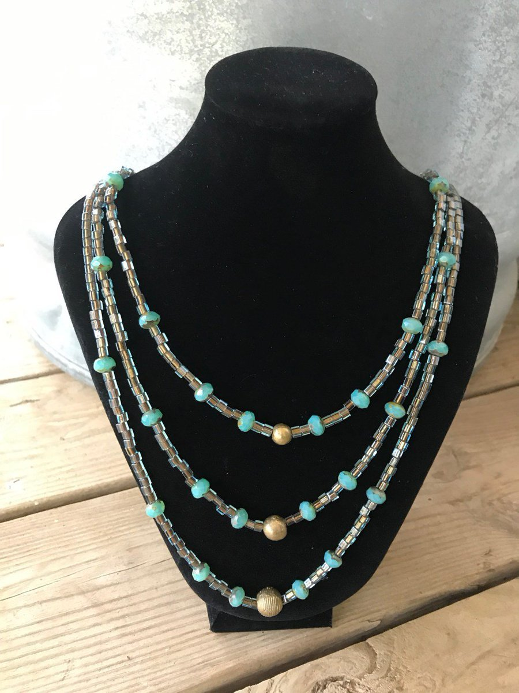
Alt text written by Claude when the post moved here. -
Siam Red Swarovski BeCharmed and Silver Mesh Bracelet https://stimpunks.com/product/siam-red-swarovski-becharmed-and-silver-mesh-bracelet/
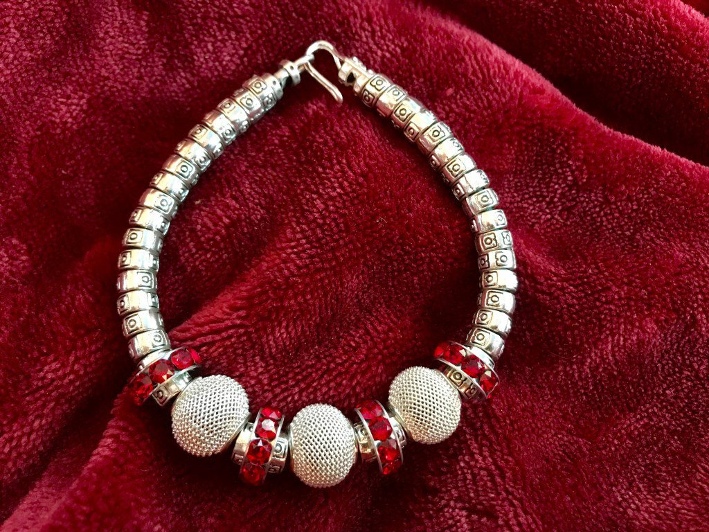
Alt text written by Claude when the post moved here. -
Cobalt Blue Faceted Czech Glass With Aurora Borealis Finish, Madre de Cacao Wood, and Corrugated Brass Bicones Bracelet https://stimpunks.com/product/cobalt-blue-faceted-czech-glass-with-aurora-borealis-finish-madre-de-cacao-wood-and-corrugated-brass-bicones-bracelet/
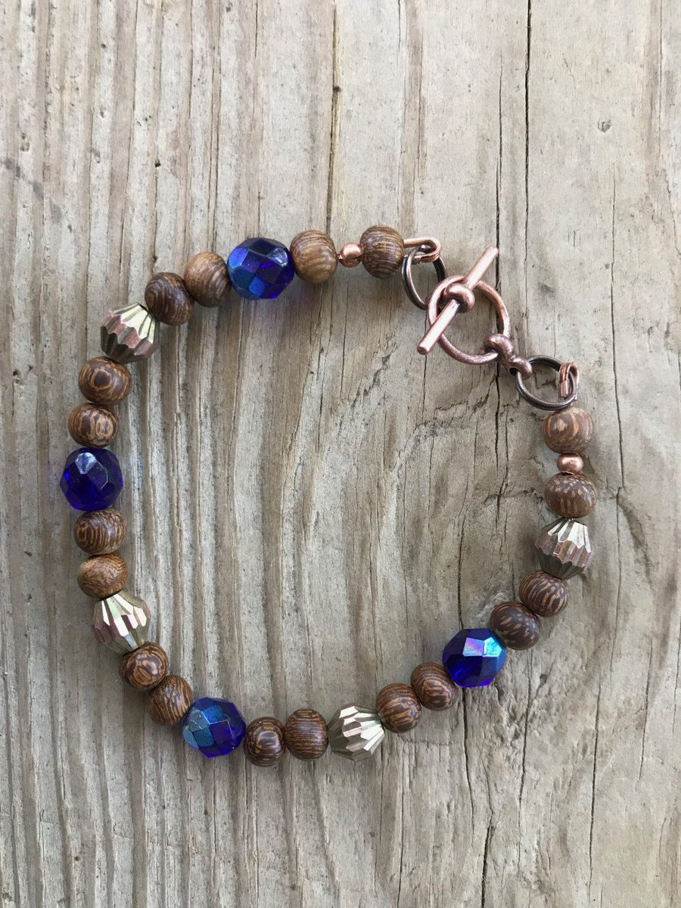
Alt text written by Claude when the post moved here. -
Green Apple Scented Candle with Wooden Tube Wick https://stimpunks.com/product/green-apple-scented-candle-with-wooden-tube-wick/
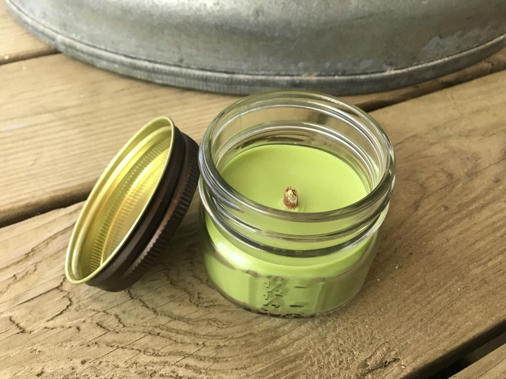
Alt text written by Claude when the post moved here. -
Botswana Agate Drums, Ebony Wood Rounds, Silver Rounds, and Graduated Lava Ovals Scentable Necklace https://stimpunks.com/product/botswana-agate-drums-ebony-wood-rounds-silver-rounds-and-graduated-lava-ovals-scentable-necklace/
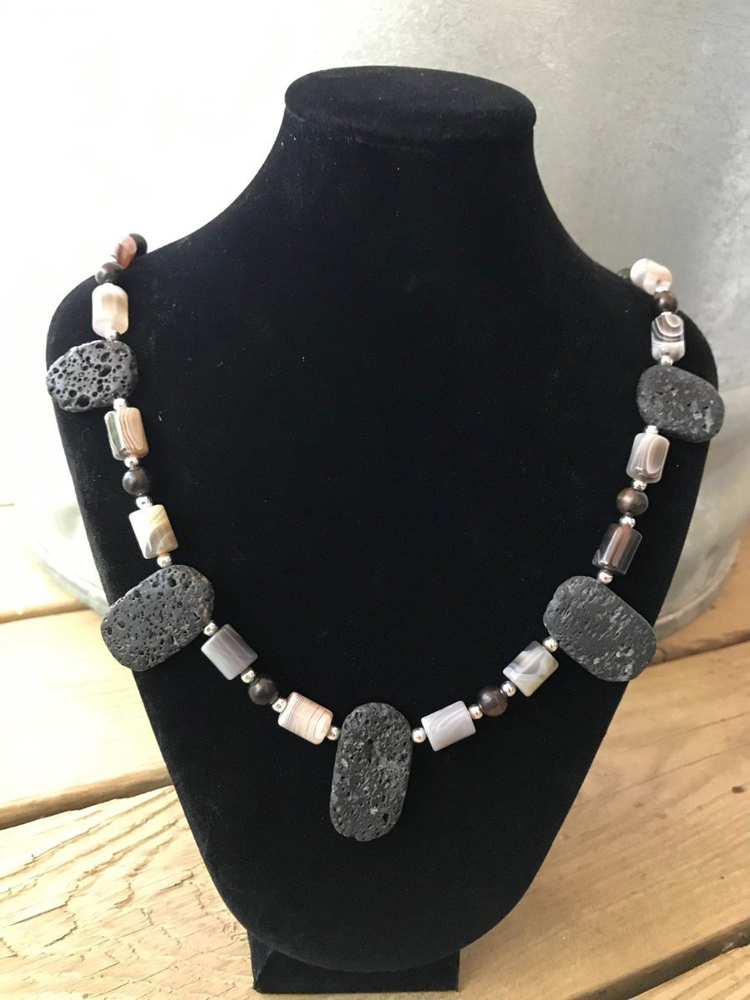
Alt text written by Claude when the post moved here. -
Cobalt Blue Faceted Czech Glass With Aurora Borealis Finish, Microfaceted Lapis Lazuli Rondelles, and Silver Bali Bicones Bracelet https://stimpunks.com/product/cobalt-blue-faceted-czech-glass-with-aurora-borealis-finish-microfaceted-lapis-lazuli-rondelles-and-silver-bali-bicones-bracelet/
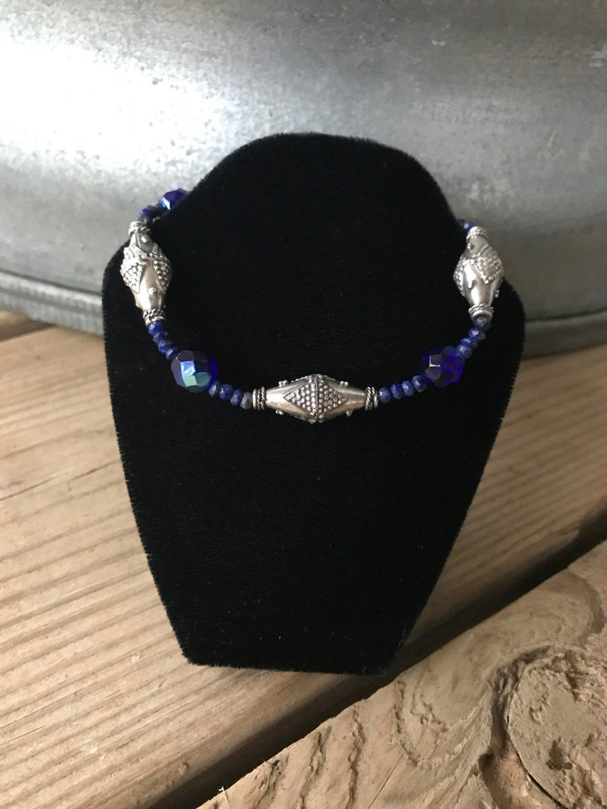
Alt text written by Claude when the post moved here. -
Microfaceted Peridot Teardrop Briolettes, Ebony Wood Rounds, and Copper Rounds Necklace with Swarovski Crystal Vitrail Faceted Teardrop Pendant https://stimpunks.com/product/microfaceted-peridot-teardrop-briolettes-ebony-wood-rounds-and-copper-rounds-necklace-with-swarovski-crystal-vitrail-faceted-teardrop-pendant/
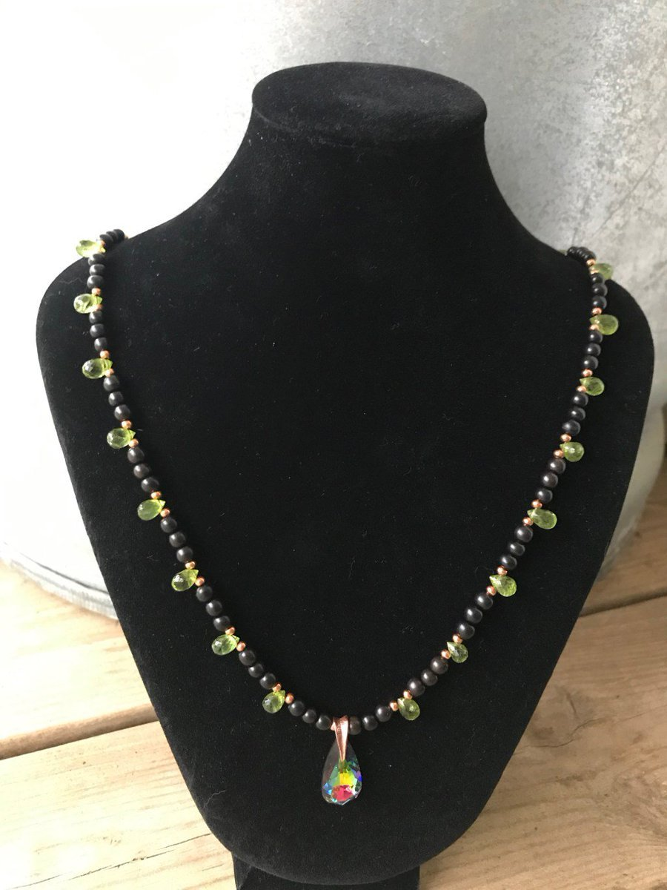
Alt text written by Claude when the post moved here. -
Bluebonnet Scented Candle https://stimpunks.com/product/bluebonnet-scented-candle/
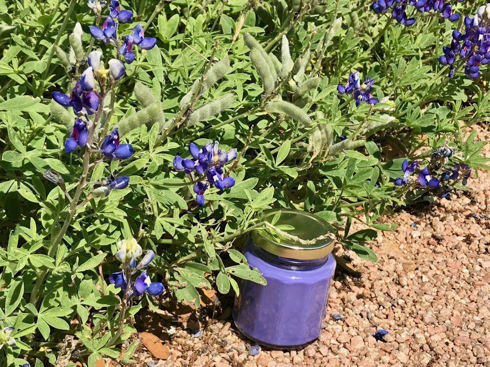
Alt text written by Claude when the post moved here. -
Botswana Agate Drums, Ebony Wood Rounds, Pyrite Rondelles, and Lava Ovals Scentable Necklace https://stimpunks.com/product/botswana-agate-drums-ebony-wood-rounds-pyrite-rondelles-and-lava-ovals-scentable-necklace/
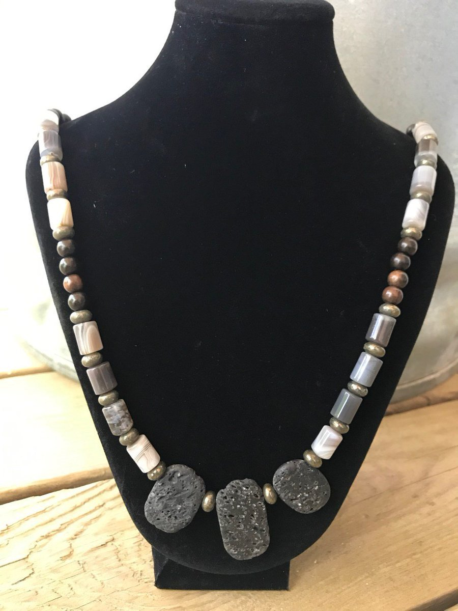
Alt text written by Claude when the post moved here. -
Rainforest Jasper Nuggets, Peridot Chips, and Toho Silver-lined Peridot Green Seed Beads Necklace with Copper Lattice Rectangular Baule Pendant https://stimpunks.com/product/rainforest-jasper-nuggets-peridot-chips-and-toho-silver-lined-peridot-green-seed-beads-necklace-with-copper-lattice-rectangular-baule-pendant/
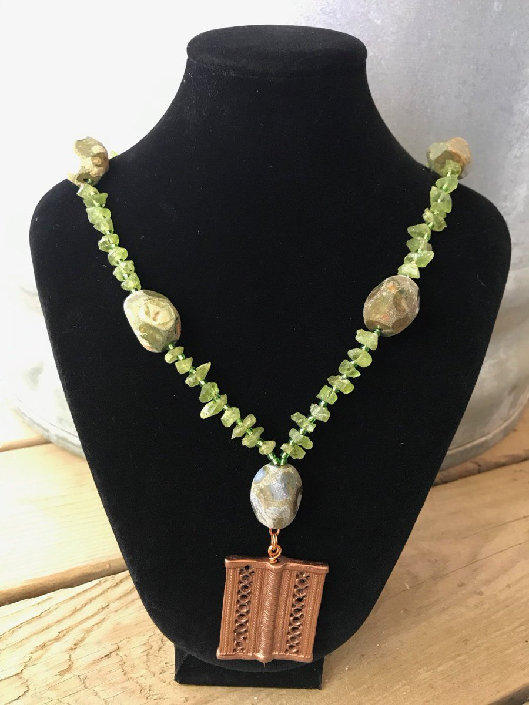
Alt text written by Claude when the post moved here. -
YKK Zipper Bracelet with Ring Pull https://stimpunks.com/2019/04/ykk-zipper-bracelet-with-ring-pull/
-
Swarovski BeCharmed and Steel Mesh Bracelet https://stimpunks.com/2019/04/swarovski-becharmed-and-steel-mesh-bracelet/
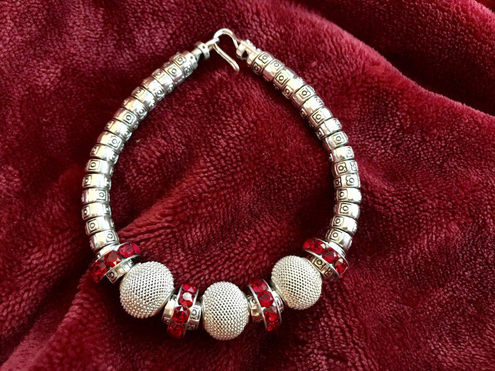
Alt text written by Claude when the post moved here. -
Onyx Black Mesh Shake Bracelet https://stimpunks.com/product/onyx-black-mesh-shake-bracelet/
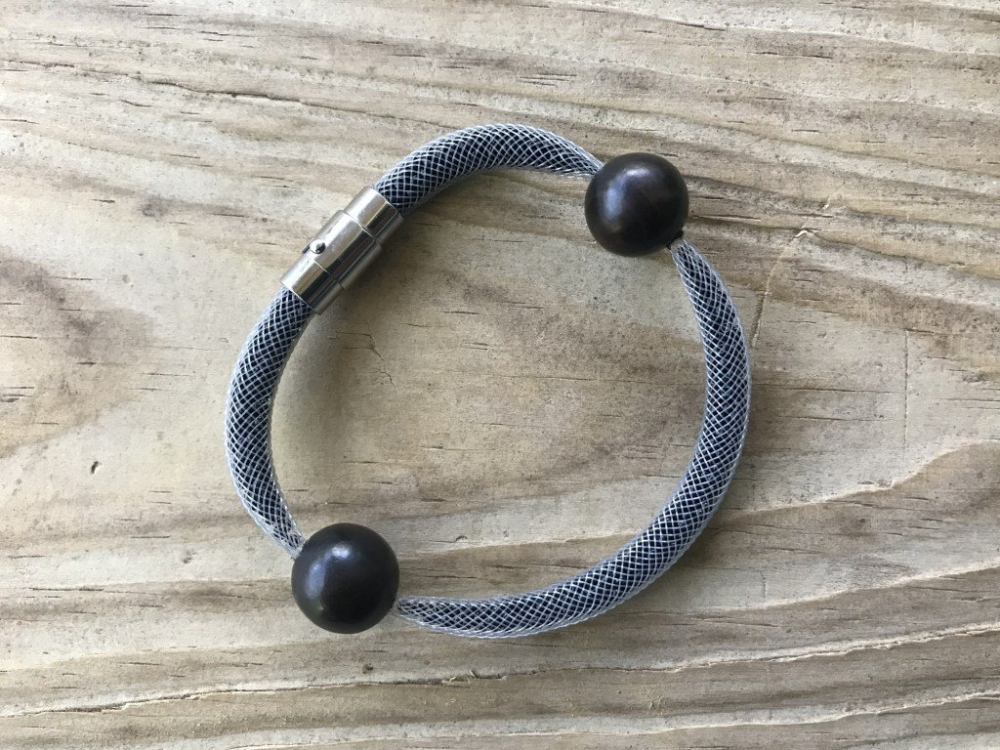
Alt text written by Claude when the post moved here. -
Sapphire Blue Mesh Shake Bracelet https://stimpunks.com/product/sapphire-blue-mesh-shake-bracelet/
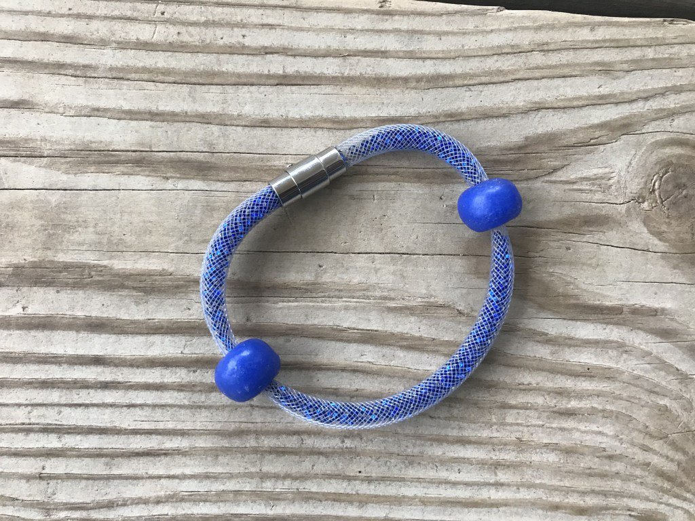
Alt text written by Claude when the post moved here. -
Copper Interlocking Snake Bracelet https://stimpunks.com/product/copper-interlocking-snake-bracelet/
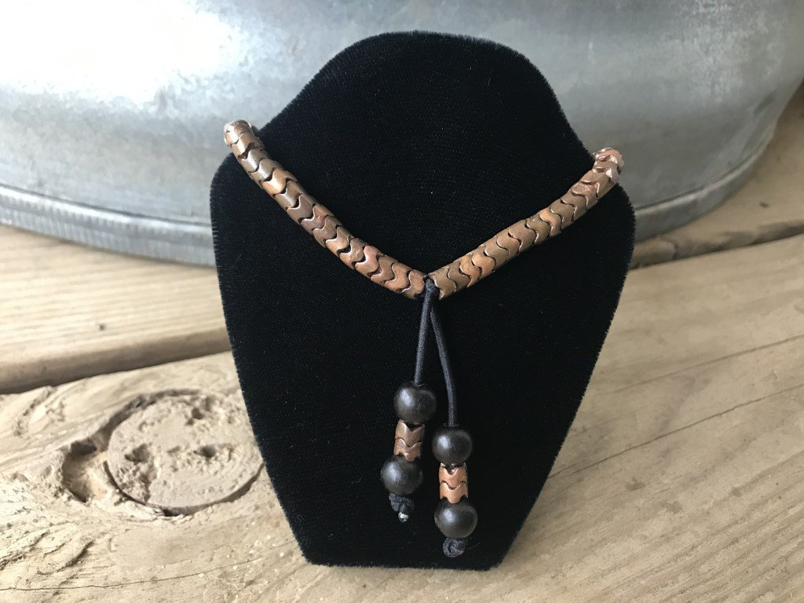
Alt text written by Claude when the post moved here. -
Ruby Red Mesh Shake Bracelet https://stimpunks.com/product/ruby-red-mesh-shake-bracelet/
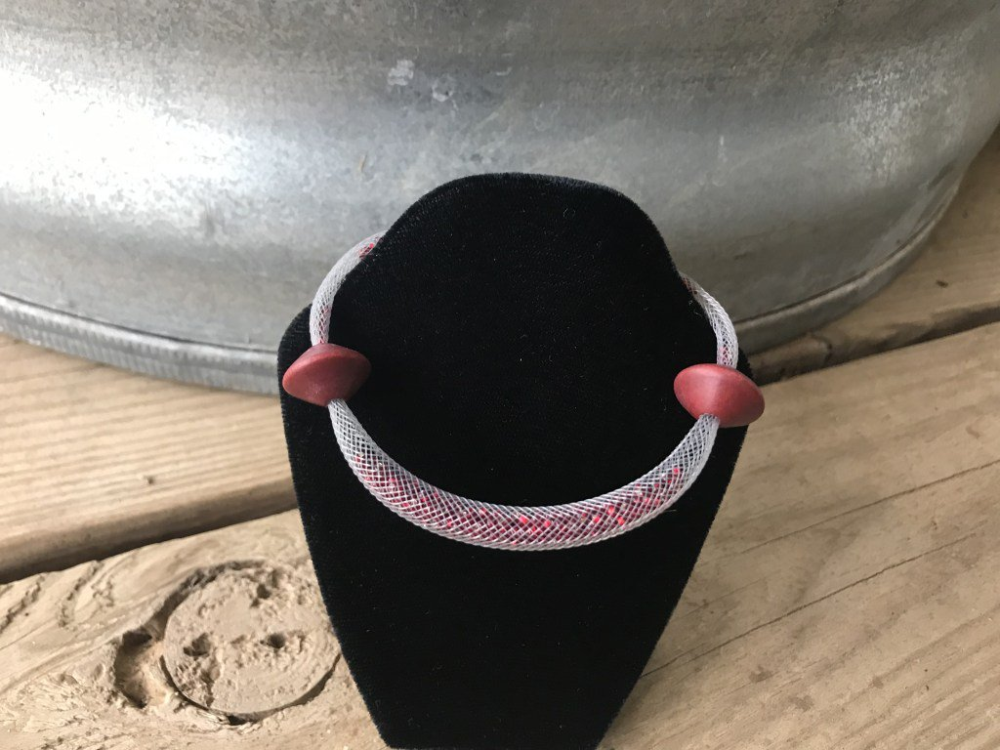
Alt text written by Claude when the post moved here. -
Cranberry White Heart Padre Rounds, Summer Sunshine Krobo Powder Glass Drums, Hammered Copper Rounds, and Swarovski Fireopal Teardrop Pendant Necklace https://stimpunks.com/product/cranberry-white-heart-padre-rounds-summer-sunshine-krobo-powder-glass-drums-hammered-copper-rounds-and-swarovski-fireopal-teardrop-pendant-necklace/
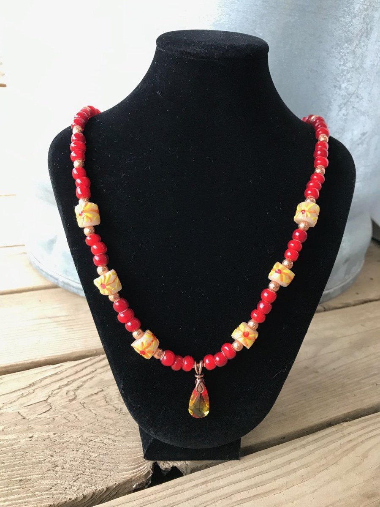
Alt text written by Claude when the post moved here. -
Lava Rounds, Pyrite Rondelles, and Unfinished Ebony Rounds Scentable Bracelet with Karen Hill Tribe Silver Cushion Focal https://stimpunks.com/product/lava-rounds-pyrite-rondelles-and-unfinished-ebony-rounds-scentable-bracelet-with-karen-hill-tribe-silver-cushion-focal/
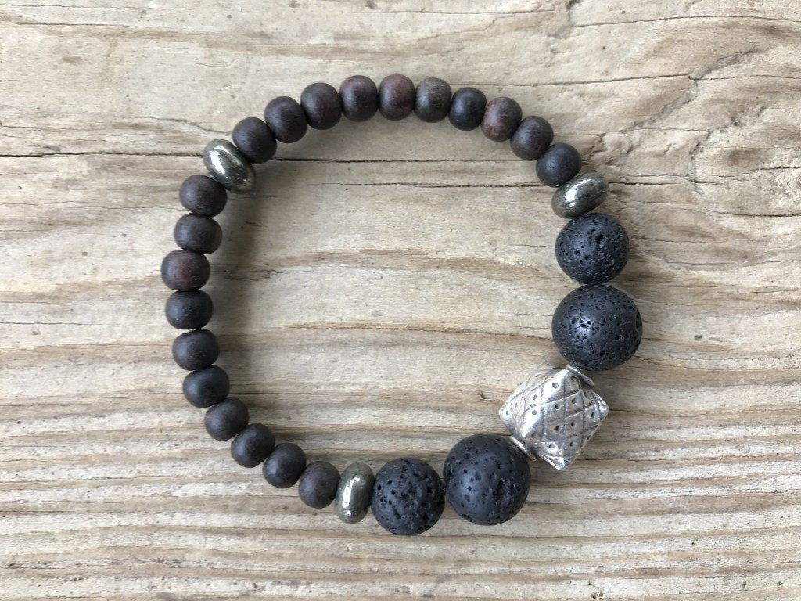
Alt text written by Claude when the post moved here. -
Vending at Caliterra Dripping Springs on March 23rd https://stimpunks.com/2019/03/vending-at-caliterra-dripping-springs-on-march-23rd/
-
We’re vending at Caliterra Dripping Springs today.
-
Blue Sea Sediment Jasper Rounds, Magkuno Wood Rounds, and Silver-filled Rondelles with Vintage Chanel and Karen Hill Tribe Focal Necklace https://stimpunks.com/product/blue-sea-sediment-jasper-rounds-magkuno-wood-rounds-and-silver-filled-rondelles-with-vintage-chanel-and-karen-hill-tribe-focal-necklace/
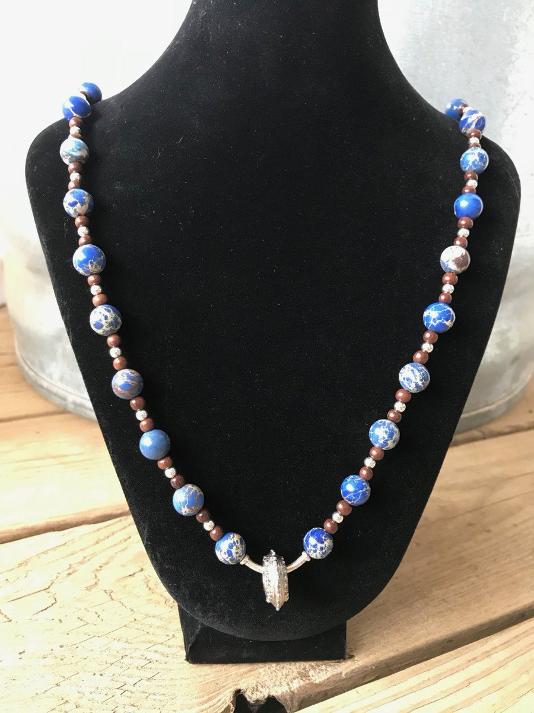
Alt text written by Claude when the post moved here. -
Stimpunks Business Cards https://stimpunks.com/2019/03/stimpunks-business-cards/
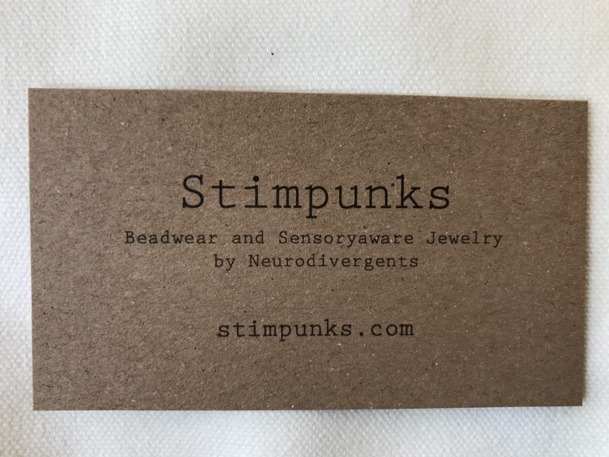
Alt text written by Claude when the post moved here. -
Marigold Quartz Matte Hammered Disc Nuggets, Raw Turquoise Rondelles, Copper Flower Buds, and Copper Rounds Necklace https://stimpunks.com/product/marigold-quartz-matte-hammered-disc-nuggets-raw-turquoise-rondelles-copper-flower-buds-and-copper-rounds-necklace/
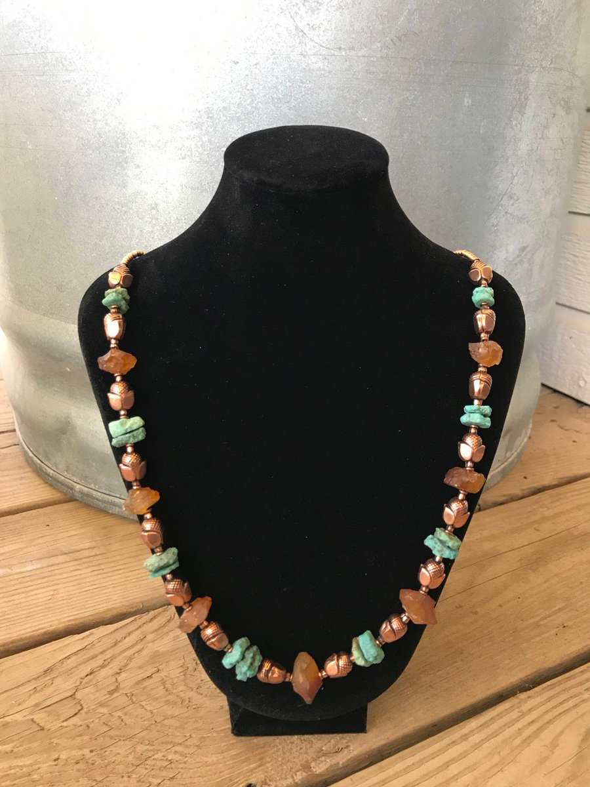
Alt text written by Claude when the post moved here. -
ChewsMe Pearlescent Blue Silicone Rounds, Dark Magkuno Wood Rounds, Light Blue Miyuki Glass Cubes, and Vintage Silver Chanel Ovals Chewable Necklace https://stimpunks.com/product/chewsme-pearlescent-blue-silicone-rounds-dark-magkuno-wood-rounds-light-blue-miyuki-glass-cubes-and-vintage-silver-chanel-ovals-chewable-necklace/
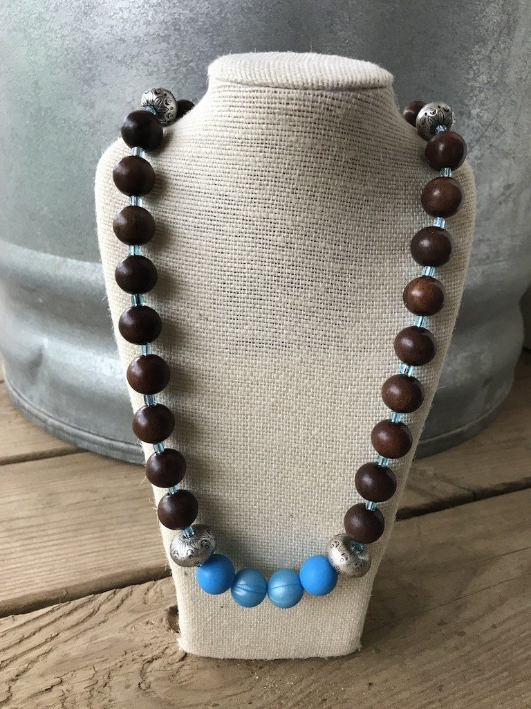
Alt text written by Claude when the post moved here. -
Custom for LM: Green Picasso Czech Glass Peridot Turbines, Copper Drums, Hammered Copper Rounds, and Microfaceted Peridot Bracelet and Necklace Set https://stimpunks.com/product/custom-for-lm-green-picasso-czech-glass-peridot-turbines-copper-drums-hammered-copper-rounds-and-microfaceted-peridot-bracelet-and-necklace-set/
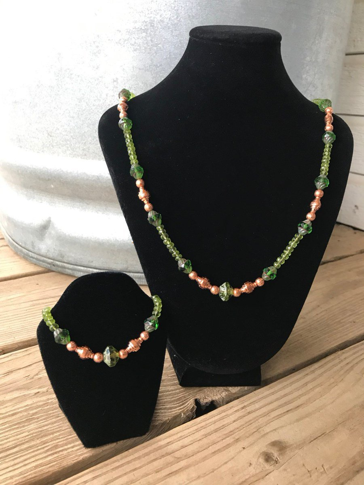
Alt text written by Claude when the post moved here. -
Spotted Blue Krobo Powder Glass Tubes, Cherry Red Bicone Natural Wood Rounds, Red Crackled Agate Rounds, and Ebony Wood Carved Pod Focal Necklace https://stimpunks.com/product/spotted-blue-krobo-powder-glass-tubes-cherry-red-bicone-natural-wood-rounds-red-crackled-agate-rounds-and-ebony-wood-carved-pod-focal-necklace/
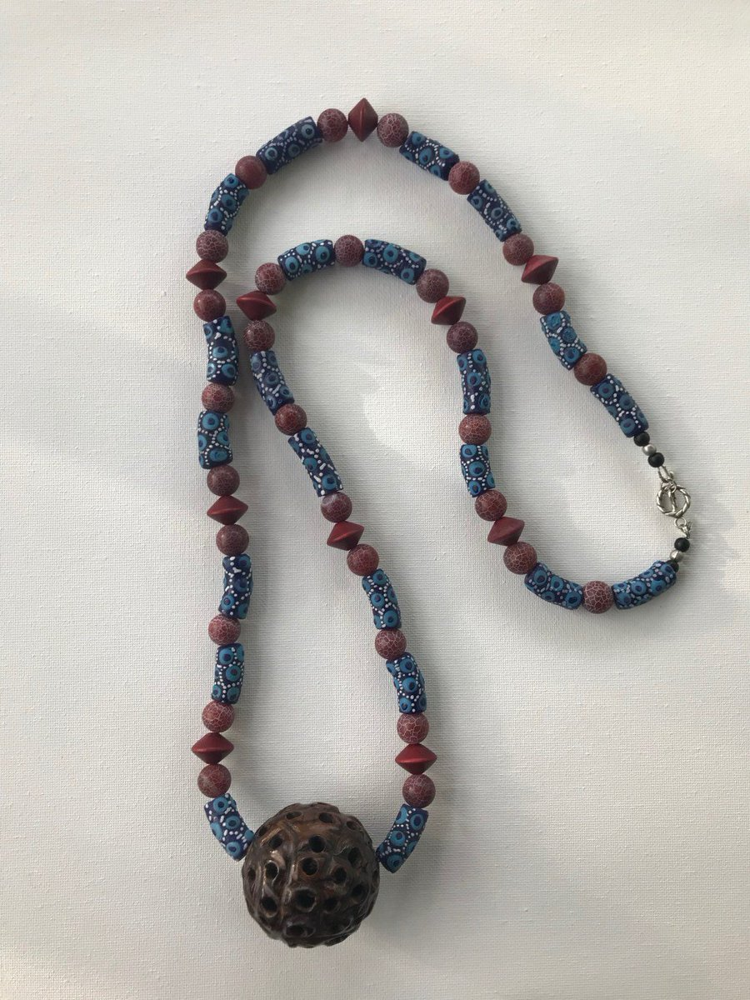
Alt text written by Claude when the post moved here. -
Miyuki Silver-lined Dark Amber, Transparent Frosted Dark Amber, and Opaque Metallic Dark Gold Glass Cubes, Copper Rounds, and Copper Tube Necklace https://stimpunks.com/product/miyuki-silver-lined-dark-amber-transparent-frosted-dark-amber-and-opaque-metallic-dark-gold-glass-cubes-copper-rounds-and-copper-tube-necklace/
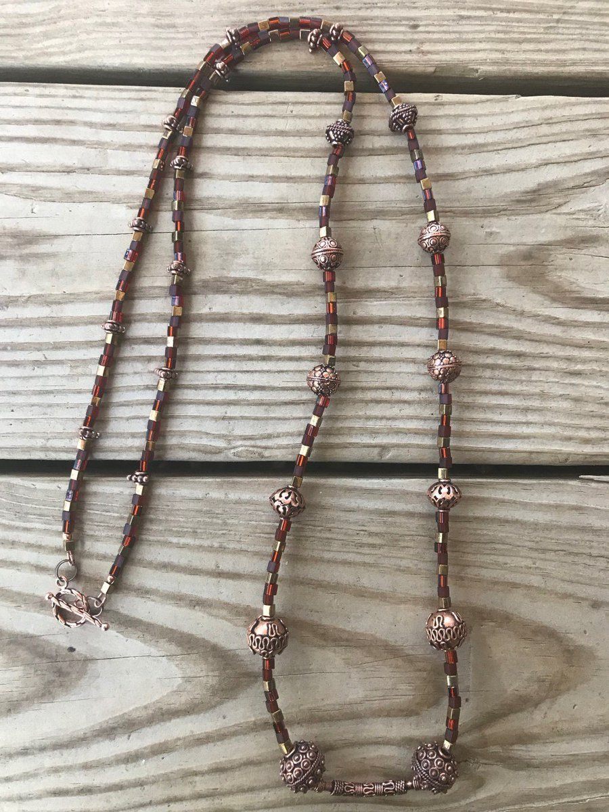
Alt text written by Claude when the post moved here. -
Mesh Shake Bracelets https://stimpunks.com/2019/03/mesh-shake-bracelets/
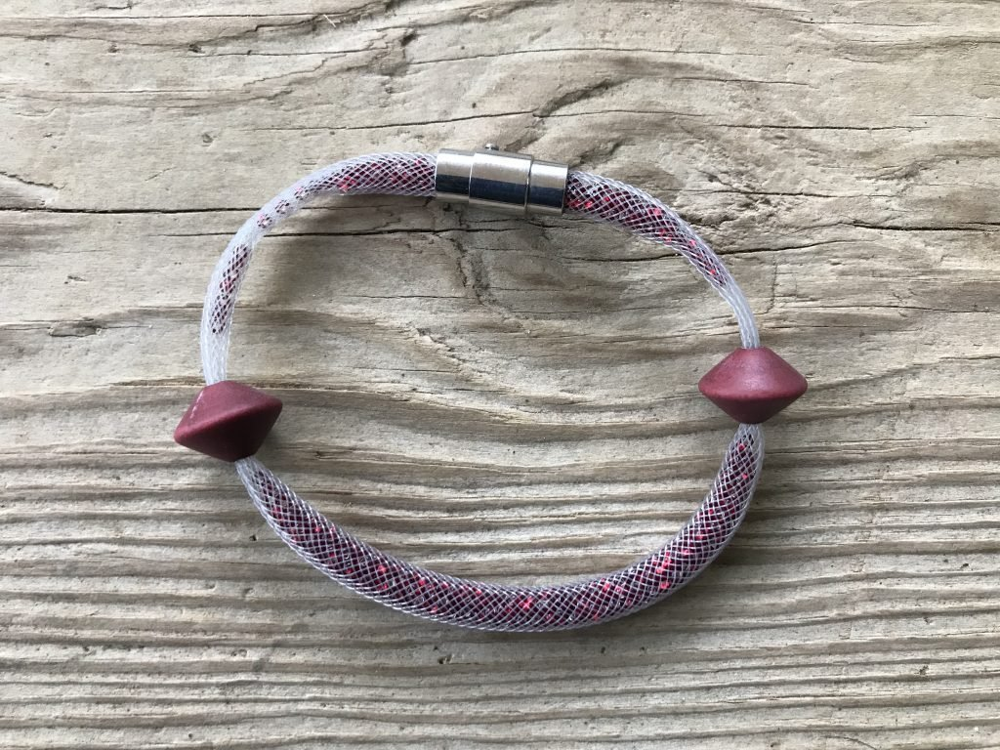
Alt text written by Claude when the post moved here. -
Miyuki Silver-lined Dark Amber, Transparent Frosted Dark Amber, and Opaque Metallic Dark Gold Glass Cubes, Tiger Ebony Rounds, and Copper Round Bracelet https://stimpunks.com/product/miyuki-silver-lined-dark-amber-transparent-frosted-dark-amber-and-opaque-metallic-dark-gold-glass-cubes-tiger-ebony-rounds-and-copper-round-bracelet/
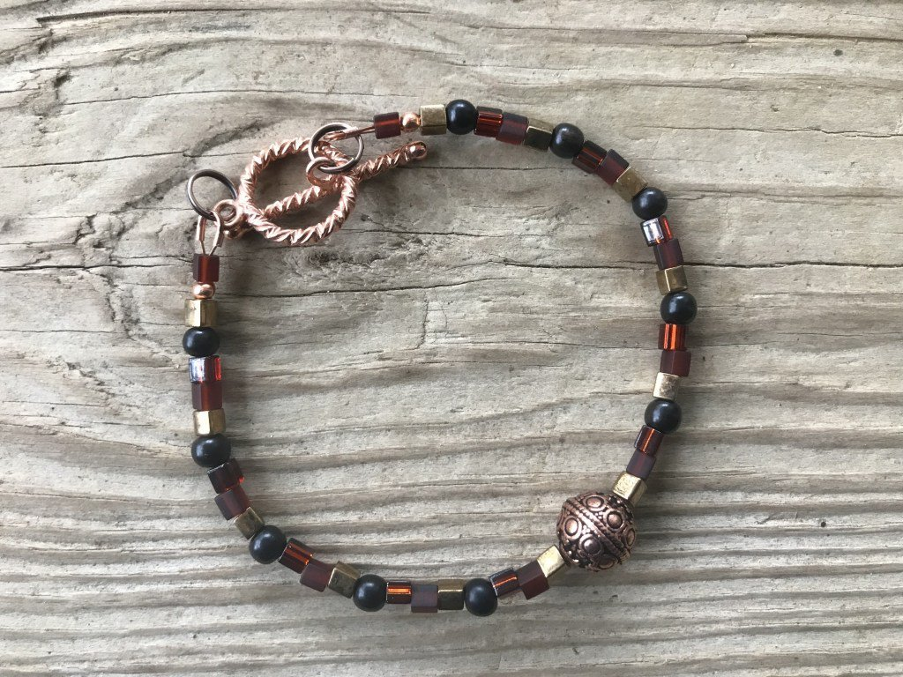
Alt text written by Claude when the post moved here. -
Miyuki Silver-lined Dark Amber, Transparent Frosted Dark Amber, and Opaque Metallic Dark Gold Glass Cubes, Tiger Ebony Rounds, and Copper Coin Focals Necklace https://stimpunks.com/product/miyuki-silver-lined-dark-amber-transparent-frosted-dark-amber-and-opaque-metallic-dark-gold-glass-cubes-tiger-ebony-rounds-and-copper-coin-focals-necklace/
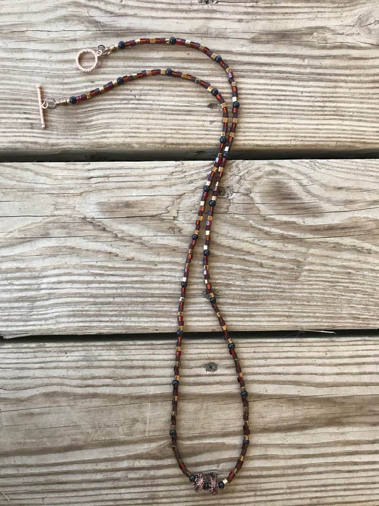
Alt text written by Claude when the post moved here. -
Raw White Quartz Focal, Lava Rounds, Pyrite Rondelles, and Unfinished Ebony Rounds Scentable Bracelet https://stimpunks.com/product/raw-white-quartz-focal-lava-rounds-pyrite-rondelles-and-unfinished-ebony-rounds-scentable-bracelet/
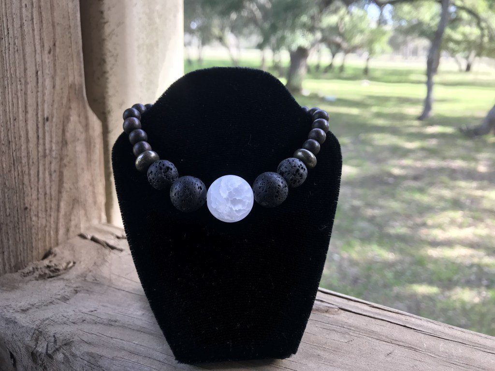
Alt text written by Claude when the post moved here. -
Raw White Quartz Focal, Lava Rounds, Pyrite Rondelles, and Unfinished Ebony Rounds Scentable Bracelet https://stimpunks.com/product/raw-white-quartz-focal-lava-rounds-pyrite-rondelles-and-unfinished-ebony-rounds-scentable-bracelet/

Alt text written by Claude when the post moved here. -
What does Stimpunks mean? https://stimpunks.com/2019/02/what-does-stimpunks-mean/
-
Lapis-Style Afghani Stone Rice Beads, Lapis Lazuli Rounds, Graduated Magkuno Wood Rounds, and Lapis-Inlaid Afghan Tribal Silver Bead Necklace https://stimpunks.com/product/lapis-style-afghani-stone-rice-beads-lapis-lazuli-rounds-graduated-magkuno-wood-rounds-and-lapis-inlaid-afghan-tribal-silver-bead-necklace/
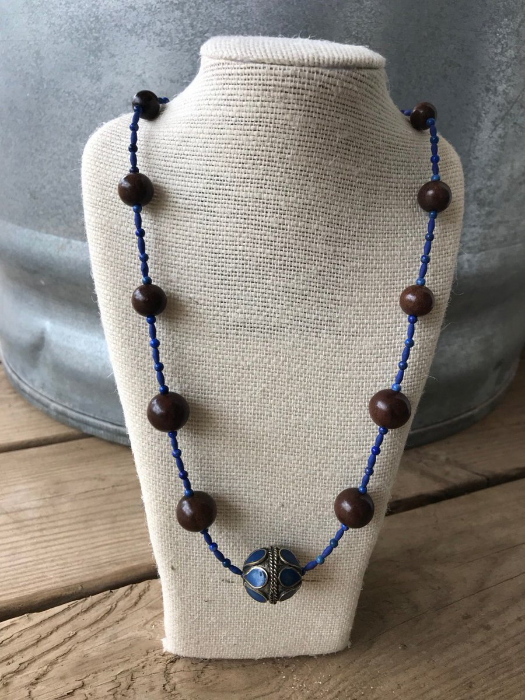
Alt text written by Claude when the post moved here. -
Glass Candy Wrappers – Magkuno Wood, Ghana Krobo Recycled Glass Discs and Rounds, and Copper Discs and Rounds https://stimpunks.com/product/glass-candy-wrappers-magkuno-wood-ghana-krobo-recycled-glass-discs-and-rounds-and-copper-discs-and-rounds/
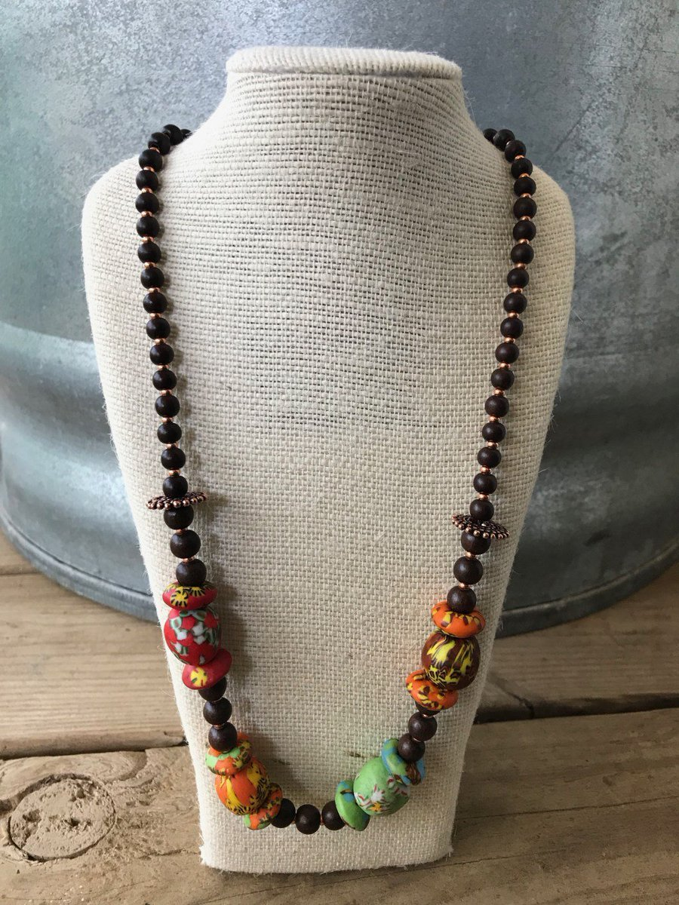
Alt text written by Claude when the post moved here. -
Chewable Necklace: ChewsMe Pearlescent Blue Silicone Rounds, Dark Magkuno Wood Rounds, Light Blue Miyuki Glass Cubes, and Vintage Silver Channel Ovals https://stimpunks.com/2019/02/chewable-necklace-chewsme-pearlescent-blue-silicone-rounds-dark-magkuno-wood-rounds-light-blue-miyuki-glass-cubes-and-vintage-silver-channel-ovals/
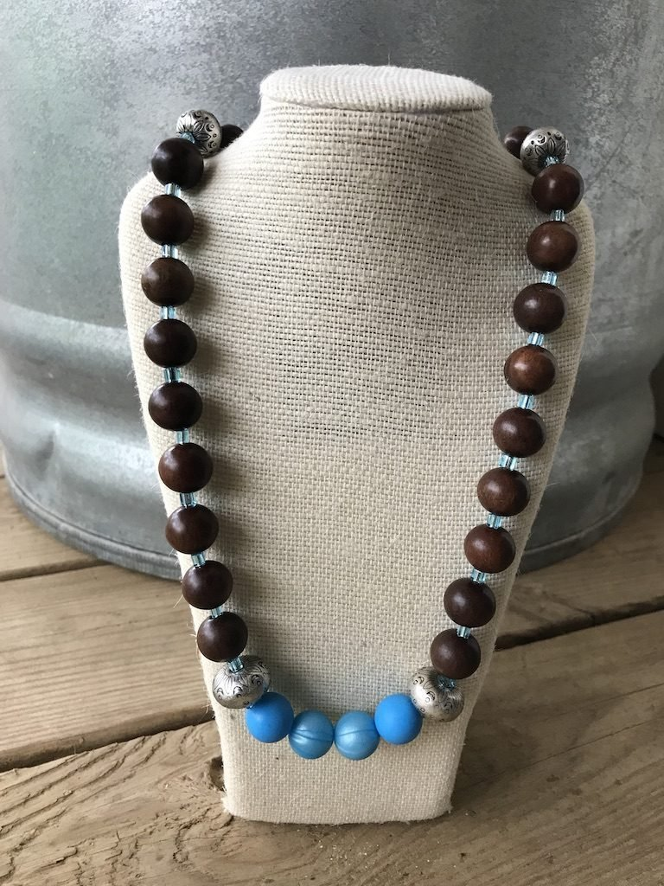
Alt text written by Claude when the post moved here. -
Aqua Green Picasso Czech Glass Faceted Rondelles, Picasso Czech Glass Turquoise Tubes, and Hammered Copper Rounds Bracelet https://stimpunks.com/product/aqua-green-picasso-czech-glass-faceted-rondelles-picasso-czech-glass-turquoise-tubes-and-hammered-copper-rounds-bracelet/
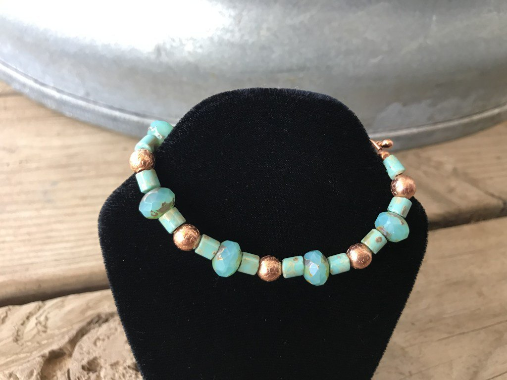
Alt text written by Claude when the post moved here. -
Chewable Stretch Bracelet: Food Grade Silicone Rounds, Pyrite Rondelles, and Unfinished Ebony Rounds https://stimpunks.com/2019/02/chewable-stretch-bracelet-food-grade-silicone-rounds-pyrite-rondelles-and-unfinished-ebony-rounds/
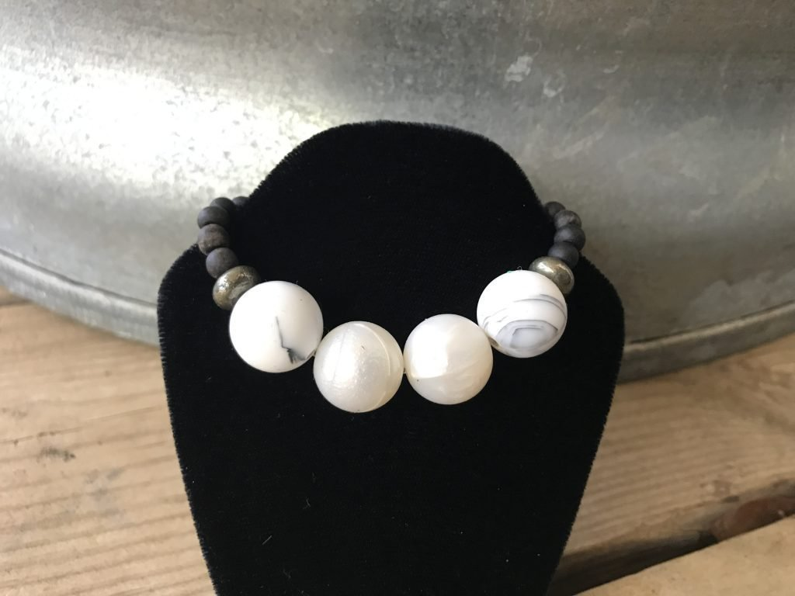
Alt text written by Claude when the post moved here. -
Unfinished Bayong Wood Rounds, Natural Lava Rock Rounds, and Dakota Stones Pyrite Rondelles Scentable Bracelet https://stimpunks.com/product/unfinished-bayong-wood-rounds-natural-lava-rock-rounds-and-dakota-stones-pyrite-rondelles-scentable-bracelet/
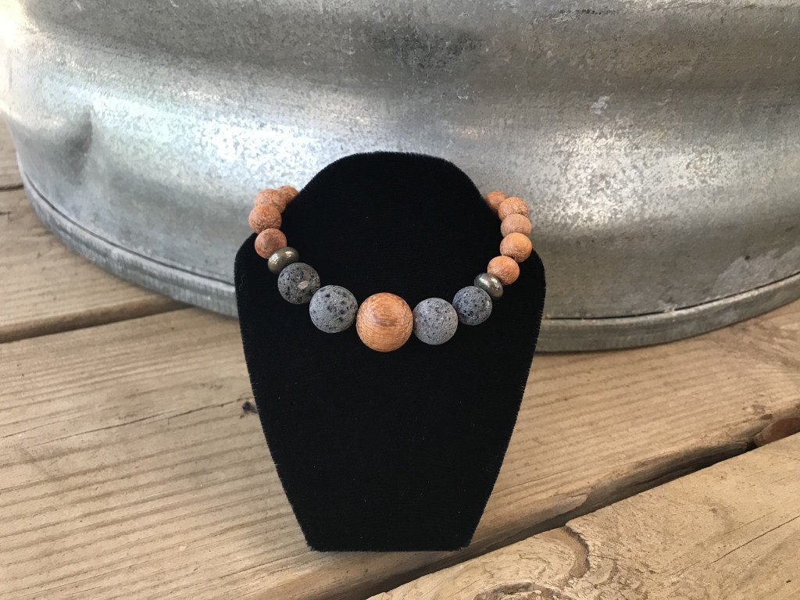
Alt text written by Claude when the post moved here. -
Scentable Bracelets with Natural Lava, Unfinished Ebony Wood, and Pyrite https://stimpunks.com/2019/02/scentable-bracelets-with-natural-lava-unfinished-ebony-wood-and-pyrite/
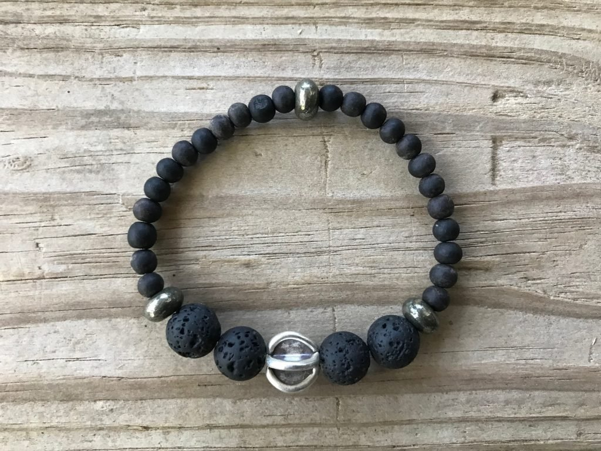
Alt text written by Claude when the post moved here. -
Candy Mountain Jade and Aqua-fired Crackle Agate Necklace https://stimpunks.com/2019/02/candy-mountain-jade-and-aqua-fired-crackle-agate-necklace/
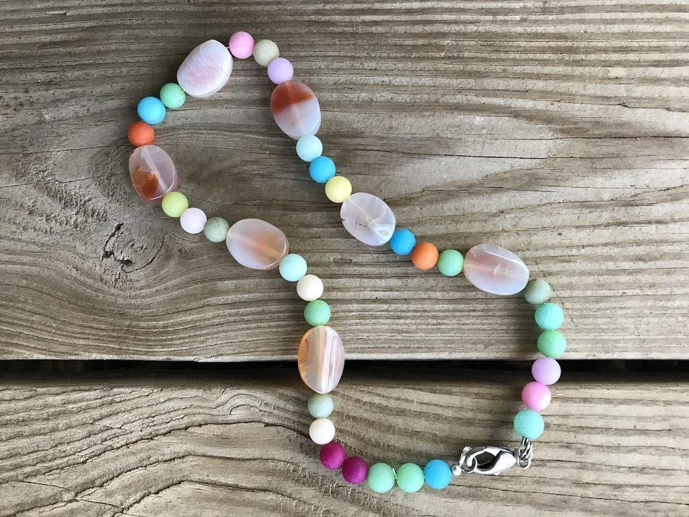
Alt text written by Claude when the post moved here. -
Tiger Ebony Rounds, Faux Turquoise Rondelles, Silver Bali, Barrels, Karen Hill Tribe Tube, and Vintage Chanel Donut Necklace https://stimpunks.com/2019/02/tiger-ebony-rounds-faux-turquoise-rondelles-silver-bali-barrels-karen-hill-tribe-tube-and-vintage-chanel-donut-necklace/
Alt text written by Claude when the post moved here. -
Tiger Ebony Rounds, Faux Turquoise Rondelles, Silver Bali, Barrels, Karen Hill Tribe Tube, and Vintage Chanel Donut Necklace https://stimpunks.com/product/tiger-ebony-rounds-faux-turquoise-rondelles-silver-bali-barrels-karen-hill-tribe-tube-and-vintage-chanel-donut-necklace/
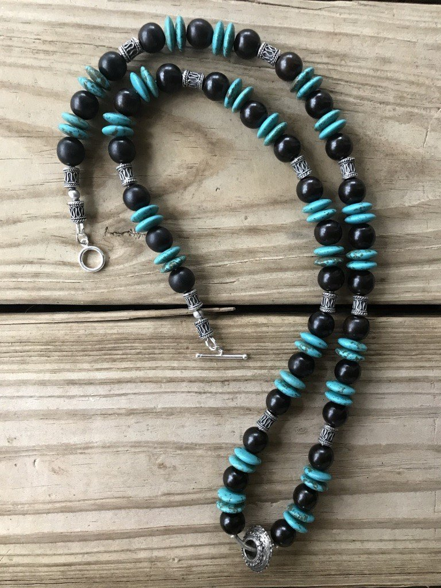
Alt text written by Claude when the post moved here. -
Green Picasso Czech Glass Peridot Turbines, Copper Drums, and Hammered Copper Rounds Bracelet https://stimpunks.com/product/green-picasso-czech-glass-peridot-turbines-copper-drums-and-hammered-copper-rounds-bracelet/
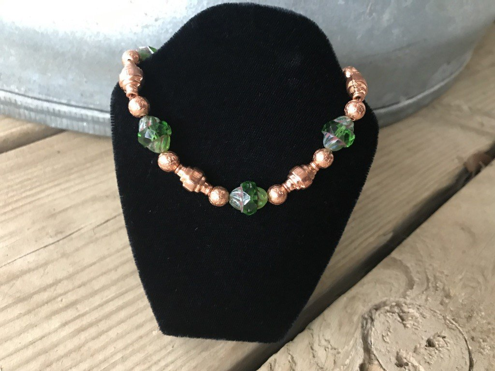
Alt text written by Claude when the post moved here. -
Green Picasso Czech Glass Peridot Turbines, Copper Drums, and Hammered Copper Rounds Bracelet https://stimpunks.com/2019/02/green-picasso-czech-glass-peridot-turbines-copper-drums-and-hammered-copper-rounds-bracelet/
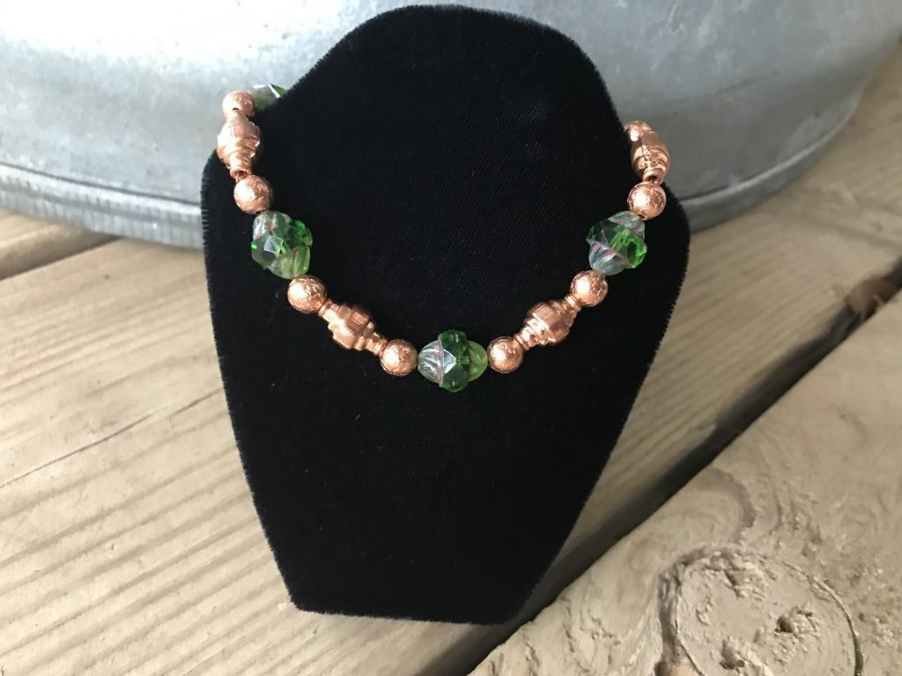
Alt text written by Claude when the post moved here. -
Blue Miyuki Glass Square Seed Beads, Aqua Green Picasso Czech Glass Faceted Rondelles, and Ashanti Ghana Lost Wax Technique Brass Rounds Necklace https://stimpunks.com/product/blue-miyuki-glass-square-seed-beads-aqua-green-picasso-czech-glass-faceted-rondelles-and-ashanti-ghana-lost-wax-technique-brass-rounds-necklace/

Alt text written by Claude when the post moved here. -
Blue Miyuki Glass Square Seed Beads, Aqua Green Picasso Czech Glass Faceted Rondelles, and Ashanti Ghana Lost Wax Technique Brass Rounds Necklace https://stimpunks.com/2019/02/blue-miyuki-glass-square-seed-beads-aqua-green-picasso-czech-glass-faceted-rondelles-and-ashanti-ghana-lost-wax-technique-brass-rounds-necklace/
Alt text written by Claude when the post moved here. -
Bleached Whitewood, Candy Mountain Jade, Turquoise Wood, and Silver Cones Necklace https://stimpunks.com/product/bleached-whitewood-candy-mountain-jade-turquoise-wood-and-silver-cones-necklace/
Alt text written by Claude when the post moved here. -
Bleached Whitewood, Candy Mountain Jade, Turquoise Wood, and Silver Cones Necklace https://stimpunks.com/2019/02/bleached-whitewood-candy-mountain-jade-turquoise-wood-and-silver-cones-necklace/
Alt text written by Claude when the post moved here. -
Madre de Cacao Rounds, Ghana Recycled Glass Discs, and Vintage Silver Chanel Necklace with Swappable Focal Beads https://stimpunks.com/product/madre-de-cacao-rounds-ghana-recycled-glass-discs-and-vintage-silver-chanel-necklace-with-swappable-focal-beads/
Alt text written by Claude when the post moved here. -
Madre de Cacao Rounds, Ghana Recycled Glass Discs, and Vintage Silver Chanel Necklace with Swappable Focal Beads https://stimpunks.com/2019/02/madre-de-cacao-rounds-ghana-recycled-glass-discs-and-vintage-silver-chanel-necklace-with-swappable-focal-beads/
Alt text written by Claude when the post moved here. -
White Horse Turquoise Smooth Heishi Rondelles, Copper Rounds, and Copper Barrels Necklace https://stimpunks.com/product/white-horse-turquoise-smooth-heishi-rondelles-copper-rounds-and-copper-barrels-necklace/
Alt text written by Claude when the post moved here. -
White Horse Turquoise Smooth Heishi Rondelles, Copper Rounds, and Copper Barrels Necklace https://stimpunks.com/2019/02/white-horse-turquoise-smooth-heishi-rondelles-copper-rounds-and-copper-barrels-necklace/
Alt text written by Claude when the post moved here. -
Ghana Krobo Recycled Glass, Patikan Wood, and Filigree Copper Necklace https://stimpunks.com/?post_type=product&p=159
Alt text written by Claude when the post moved here. -
Ghana Krobo Recycled Glass, Patikan Wood, and Filigree Copper Necklace https://stimpunks.com/2019/02/ghana-krobo-recycled-glass-patikan-wood-and-filigree-copper-necklace/
Alt text written by Claude when the post moved here. -
Matte Hammered Raisin Agate Trillion Briolettes, Orange Druzy Agate Focal Round, and Ethiopian Copper Heishi Necklace https://stimpunks.com/product/matte-hammered-raisin-agate-trillion-briolettes-orange-druzy-agate-focal-round-and-ethiopian-copper-heishi-necklace/
Alt text written by Claude when the post moved here. -
Matte Hammered Raisin Agate Trillion Briolettes, Orange Druzy Agate Focal Round, and Ethiopian Copper Heishi Necklace https://stimpunks.com/2019/01/matte-hammered-raisin-agate-trillion-briolettes-orange-druzy-agate-focal-round-and-ethiopian-copper-heishi-necklace/
Alt text written by Claude when the post moved here. -
Teal Blue Hammered Quartz Nuggets, Copper Bicones, and Kukui Nut Necklace https://stimpunks.com/2019/01/teal-blue-hammered-quartz-nuggets-copper-bicones-and-kukui-nut-necklace/
Alt text written by Claude when the post moved here. -
Raw Turquoise Rondelles, Aqua Blue Picasso Fire Polished Czech Glass Turbines, and Picasso Czech Glass Turquoise Tubes Necklace https://stimpunks.com/product/raw-turquoise-rondelles-aqua-blue-picasso-fire-polished-czech-glass-turbines-and-picasso-czech-glass-turquoise-tubes-necklace/

Alt text written by Claude when the post moved here. -
Raw Turquoise Rondelles, Aqua Blue Picasso Fire Polished Czech Glass Turbines, and Picasso Czech Glass Turquoise Tubes Necklace https://stimpunks.com/2019/01/raw-turquoise-rondelles-aqua-blue-picasso-fire-polished-czech-glass-turbines-and-picasso-czech-glass-turquoise-tubes-necklace/
Alt text written by Claude when the post moved here. -
Aqua-fired Crackle Agate, Matte Blue Dumortierote, and Mystery Seed Necklace https://stimpunks.com/2019/01/aqua-fired-crackle-agate-matte-blue-dumortierote-and-mystery-seed-necklace/
Alt text written by Claude when the post moved here. -
Holiday Gift Necklaces https://stimpunks.com/2019/01/holiday-gift-necklaces/
Alt text written by Claude when the post moved here. -
Sibucao Wood Rounds, Microfaceted Lapis Lazuli Rondelles, and Karen Hill Tribe Silver Toggle Clasp Bracelet https://stimpunks.com/product/sibucao-wood-rounds-microfaceted-lapis-lazuli-rondelles-and-karen-hill-tribe-silver-toggle-clasp-bracelet/
Alt text written by Claude when the post moved here. -
Sibucao Wood Rounds, Microfaceted Lapis Lazuli Rondelles, and Karen Hill Tribe Silver Toggle Clasp Bracelet https://stimpunks.com/2019/01/sibucao-wood-rounds-microfaceted-lapis-lazuli-rondelles-and-karen-hill-tribe-silver-toggle-clasp-bracelet/
Alt text written by Claude when the post moved here.